본 Q&A 게시판을 통해 해당 국가별 지재권 관련 궁금하신 사항을 문의 주시면, 성심성의껏 답변드리도록 하겠습니다. 다만. 비영리 공익을 목적으로 운영되므로 모든 게시글은 공개를 전제로하며, 해당 답변에 대한 법적인 책임과 효력을 갖지 않습니다
PARTI 싱가포르일반현황
제1절 국가·지역정보
1. 국가 기본정보
가. 현황
| [표 1] 국가기본정보 출처: 외교부 | |
| 일반사항 |
•국명 : 싱가포르공화국 (Republic of Singapore)
•수도 : 싱가포르(Singapore, 도시국가) •인구 : 569만명 (2021, IMF 추정) •면적 : 719㎢ (서울의 약 1.2배) •언어 : 영어(48%), 표준중국어(30%), 말레이어(9%), 타밀어(3%)의 4개 공식언어 및 기타 언어 •종교 : 불교(31%), 기독교(19%), 이슬람(16%), 도교(9%), 힌두교(5%) 등 •민족 : 중국계(74%), 말레이계(13%),인도계(9%) 등 •기후 : 고온다습한 열대성 기후 •시차 : 우리보다 1시간 늦음 |
|---|---|
| 정치현황 |
•정부형태 : 의원내각제
•주요인사 -대통령 : 할리마 야콥(Halimah Yacob) -총리 : 리센룽(Lee Hsien Loong) -국회의장 : 탄 추안-진(Tan Chuan-Jin) -외교장관 : 비비안 발라크리쉬난(Vivian Balakrishnan) •의회구성 : 임기 5년의 단원제(직선 93석, 지명 9석, 무선거구 2석) |
| 경제현황 (2019 년기준, IMF 추정치) |
•GDP : 3970억$ (2021, IMF)
•1인당GDP : 7만 2794$ (2021, IMF) •경제성장률 : 7.6% (2021, IMF) •화폐단위 : 싱가포르달러(1미국달러 = 1.4 싱가포르달러, 2020 평균, 세계은행) •교역 : - 총 교역액 : 8,918억 $ -수출액 : 4857억$ -수입액 : 4062억$ •물가상승률 : 2.3% (2021, IMF) •실업률 : 2.6% (2021, IMF) |
| 우리나라 와의 관계 |
•외교관계
-1970.11. 대표부 설치 -1972.05. 총영사관 승격 -1975.08.08. 수교(대사관 승격) •공관현황 : - 최훈 주싱가포르 대사(2021.06.부임) - 에릭 테오(Eric Teo Boon Hee) 주한 싱가포르대사(2019.08. 부임) •투자현황 : (2021, 신고 기준) - 대 싱가포르: 19억 $, 472건(한국수출입은행) - 대 한국: 42억 $, 267건(산업통상자원부) •교역 : 총 교역액 : 248억 $(2021, 한국무역협회) -수출액 : 141억$ -수입액 : 107억$ •교민현황 : - 싱가포르 내 한국인: 20,398명(외교부, 2021) - 한국 내 싱가포르인: 654명(법무부, 2021) * 인적교류 현황(2019) -한국→싱가포르 방문 : 645,728명 (싱가포르 관광국) -싱가포르→한국 방문 : 246,736명 (출입국.외국인정책본부) |
나. 한-싱가포르 - 무역현황 및 사업정보
| [표 2] 對 韓 무역협정 체결현황 출처 : KOTRA | ||||
|---|---|---|---|---|
| 협정명 | 체결국가 | 체결일자 | 발효일자 | 비고 |
| 한-ASEAN 자유무역협정 | 한국, 동남아시아 국가연합 | 2005.12.13 | 2007.06.01 | -한국 수출품 관세, 통관절차 간소화 |
| 한-싱가포르 자유무역협정(FTA) | 한국 | 2005.08.04 | 2006.03.02 | -한국 수출품 관세, 통관절차 간소화 |
| 이중과세방지개정 협정 체결 | 한국 | 2019.05.13 | 2019.12.31 | -투자보장 및 이중과세방지 |
2. 경제관련 정보
|
[표 3] 싱가포르 경제 현황
*출처 : IMF, 싱가포르 통상산업부(MTI), 싱가포르 통화청(MAS), KITA, KOTRA
*수출입액 '22년 5월 기준 |
|||||
|---|---|---|---|---|---|
| 경제지표 | 2017 | 2018 | 2019 | 2020 | 2021 |
| 경제성장률(%) | 4.34 | 3.44 | 0.7 | -5.4 | 7.6 |
| 명목 GDP( 십억$) | 343.33 | 375.96 | 374.39 | 339.98 | 378.65 |
| 1인당 GDP(PPP, $) | 59,484 | 61,373 | 61,340 | 58,982 | 66,176 |
| 1인당 명목 GDP($) | 56,537 | 58,720 | 57,601 | 52,617 | 63,999 |
| 정부부채(% of GDP) | 110.9 | 108.6 | 126.3 | 137.86 | 139.03 |
| 물가상승률(%) | 0.6 | 0.4 | 0.6 | -0.2 | 2.3 |
| 실업률(%) | 2.2 | 2.1 | 2.3 | 3 | 2.6 |
| 수출액(백만$) | 373,355 | 412,813 | 390,652 | 368,096 | 414,503 |
| 수입액(백만$) | 327,707 | 370,650 | 359,180 | 329,064 | 366,937 |
| 무역수지(백만$) | 45,648 | 42,163 | 31,472 | 39,032 | 47,566 |
| 외환 보유고(백만$) | 279,899.70 | 287,673.10 | 279,450.20 | 362,304.80 | 417,904.40 |
| 이자율(%) | 0.33 | 0.45 | 0.57 | 0.25 | - |
| 환율 (자국통화) | 1.38 | 1.35 | 1.36 | 1.38 | 1.34 |
3. 지식재산권 분야 정보
싱가포르 지식재산청(IPOS) 2020/2021 보고서에 따르면, 2020년 기준 싱가포르 내에서 가장 많은 특허를 출원한 외국인 출원인은 Advanced New Technologies Co, Qualcomm, Guandong Oppo Mobile Telecommunications, Beijing SenseTime Technology Development, Disco Corporation임
- 2020년 미국 국적 출원인이 3,907건, 싱가포르 국적 출원인이 1,778건을 출원하여 거주인 대비 비거주인의 특허 출원 신청 비율이 상대적으로 높으나, 2020년에는 코로나19로 인하여 촉구된 혁신에 힘입어 싱가포르 국내 기업의 출원이 증가하였음
- 싱가포르에 가장 많은 지재권을 출원하는 국가는 미국으로, 2020년 기준 특허 및 디자인 출원 1위, 상표 2위를 차지하였으며 그 외에도 주요 출원국으로 일본, 중국, 독일 등이 있음
- 더불어, 2020년에는 상표 및 디자인 분야에서도 의료기술 분야의 거주인 및 비거주인의 출원이 모두 증가하였음
- IPOS 연간 리포트 (2020-2021)
2021. 4. 6. 싱가포르 지식재산청(IPOS)은 ‘싱가포르 지식재산 전략 2030(Singapore IP Strategy 2030)’을 발표하였음
- 이는 싱가포르 법무부, 재정부, 무역산업부가 주도하는 국가지식재산전략으로, 향후 10년간 싱가포르를 글로벌 지식재산의 허브로 위상을 높이기 위함임
- 무형자산과 지식재산(IA/IP)의 글로벌 허브로써 싱가포르의 입지를 강화하고, IA/IP를 활용한 혁신 기업을 유치 및 성장시키며, IA/IP로 양질의 일자리 창출 및 가치 있는 기술을 개발하는 것이 본 전략의 목표임
- 싱가포르 지식재산전략 2030전략의 일환으로 싱가포르는 정책을 통한 기술 혁신 지원, 주요국과 PPH 협정 체결, ASEAN 지역 IP 프로그램 지원, 지식재산관련 중재기구 기능 강화, 기업의 IP 인식 제고 프로그램(WISE) 실행 등을 수행중임
- 싱가포르 지식재산 전략 2030
*출처 : IPOS, 한국지식재산연구원
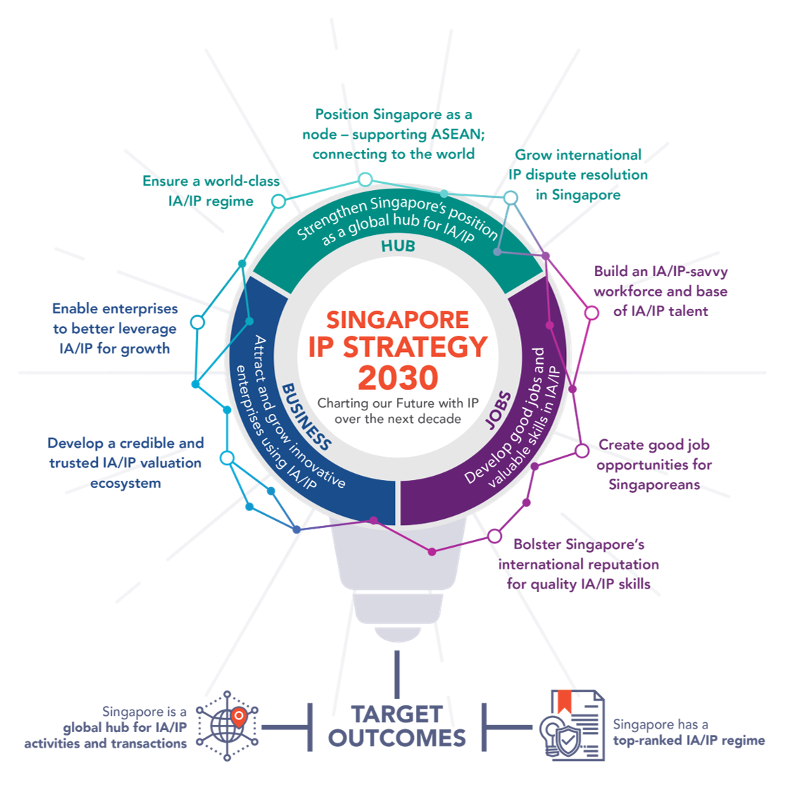
[그림 1] 싱가포르 지식재산전략 2030 개관 (출처 : IPOS)
제2절 현지 유관기관 정보
1. 산업재산권 기관
가. Intellectual Property Office of Singapore (IPOS)
- 홈페이지: http://www.ipos.gov.sg
- 정부 IP 기관인 IPOS는 싱가포르의 IP 규칙, 특허, 상표 및 등록 디자인의 법령에 대한 정보를 제공함. IPOS는 특허, 상표 및 등록 디자인의 출원 및 등록에 관한 정보를 제공할 뿐만 아니라 각각에 대한 가이드라인을 제공함
나. Asian Patent Attorney’s Association Singapore (APAA)
- 홈페이지: http://www.apaa.org.sg/
- 싱가포르에 있는 특허 대리인을 위한 협회가 ASEAN patent attorney association임. 특허법의 발전을 위한 연간 회의를 매년 개최하고, IP 업계에 종사하는 개인 또는 기관들이 서로 만나서, IP 관련 지식을 나누고 촉진시키는 지역 이벤트와 활동들을 하고 있음. APAA 멤버들은 IPOS에서 개최하는 토론회에 참석하여 현재의 IP 이슈들에 대하여 직접 알아갈 수 있음. 판결된 모든 특허 및 상표 사건들의 간행물을 APAA 멤버들이 이용 가능함
다. Association of Singapore Patent Agents (ASPA)
- 홈페이지: http://www.aspa.org.sg/
- 소수의 자격이 있는 대리인들만이 멤버로 참여하지만 다른 개인들은 협력 멤버로 참여할 수 있음. ASPA는 IPOS 및 IP Academy와 협력하여 특허 전문가의 교육 및 양성을 촉진함. ASPA는 특허 업무를 유지하기 위한 업무의 질에 대한 최소한의 기준을 확보할 수 있는 규칙, 지령, 그리고 심사지침 등을 만듦. ASPA는 특허 교육생이 싱가포르에서 자격 시험을 보는 것을 보조함. ASPA 멤버는 IPOS로부터 업데이트된 뉴스를 받게 됨
라. IP Academy
- 홈페이지: www.ipacademy.com.sg
- IP Academy는 IP 전문가, 발명가, 사업 매니저, 사업 조직, 연구 조직 및 다른 IP 사용자를 위한 IP 교육을 제공함. IP Academy는 훈련 과정, 세미나, 그리고 Master of Science (IP Management) 및 Graduate Certificate in IP와 같은 전문가 인증 프로그램을 하고 있음. IP Academy는 IP 이슈들에 대한 일관된 통찰력을 주기 위하여 IP에 대한 다양한 연구를 행하고 있음
2. 그 외 지식재산권 유관기관
가. 지식재산권 관련 사법 행정 체계
싱가포르에서는 지식재산권 중 특허, 디자인, 상표에 관련한 소송에 대하여는 1심으로 고등법원이 관할하게 되며, 그 외의 지식재산권(예를 들어, 저작권, 부정경쟁행위)에 관련한 소송에 대하여는 소가가 25만 싱가포르 달러 초과인 사건은 고등법원에서 1심으로 관할하고 소가가 25만 싱가포르 달러 이하인 사건은 지방법원에서 1심으로 관할함
특허권 및 디자인권의 침해에 대한 구제는 민사적으로만 가능하고, 상표권 및 저작권의 침해에 대한 구제는 민사적 및 형사적으로 가능함. 또한, 상표권 또는 저작권의 침해품의 수입을 금지하기 위하여 세관에 등록할 수 있고, 세관은 등록된 상표권 또는 저작권의 침해품을 임시적으로 압류할 수 있음
| [표 4] 싱가포르에서 지식재산권과 관련한 사법체계 및 주된 모방품 | |||
|---|---|---|---|
| 침해에 대한 구제 수단 | 특허권 | 민사 | |
| 디자인권 | 민사 | ||
| 상표권 | 민사 및 형사 | ||
| 저작권 | 민사 및 형사 | ||
| 권리집행기관 | 소관 경찰 | 범죄수사과 지식재산권 유니트 | |
| 세권 | 상표권, 저작권의 침해품의 수입 금지 | ||
| 전문당국 | 당국에 각 적용 조건이 명시 | ||
| 관할 법원 | 제1심 | 소가가 25만 싱가포르 달러를 넘는 사건은 고등법원에서 관할하고, 소가가 25만 싱가포르 달러 이하인 사건은 지방법원에서 관할(단, 특허, 디자인, 상표에 관한 사건은 고등법원이 전속함) | |
| 특별법원 | 고등법원에 지식재산권 전속 부문 | ||
| 주된 모방품 | - | 휴대폰 및 부속품, 화장품, 공업제품, 자동차부품, CD, DVD, 소프트웨어 | |
나. 지식재산권과 관련한 행정 체계
싱가포르에서 지식재산권과 관련한 행정 업무는 싱가포르 지식재산권청(Intellectual Property Office of Singapore; IPOS)에서 담당하고 있음. 싱가포르 지식재산권청은 2001년 4월에 설립된 법무부 장관 하의 법정 위원회이며, 지식재산권에 관한 법률에 대하여 조언 및 관리를 담당하고, 지식재산권의 중요성의 인식을 증진시키며, 싱가포르에서 지식재산권의 발전을 용이하게 하는 여러 가지 기반 시설을 제공함
- 싱가포르 지식재산권청은 구체적으로 저작권법, 지리적 표시법, 집적회로 배치 설계법, 특허법, 상표법, 디자인법 및 식물 품종 보호법을 집행하고 관리함
[그림 2] 싱가포르 지식재산권청의 조직도, (출처 : IPOS)
싱가포르 지식재산권청은 상기 [그림 2]에서 알 수 있듯이 감독위원회(Board of Directors). 현재 IPOS 청장인 Rena Lee 및 내부감사부서를 두고 있으며, 산하에 5개의 부를 두고 있는데 각 부의 역할은 다음과 같음
① 등록부(Registries Cluster)
등록부는 싱가포르에서 등록 가능한 모든 지식 재산에 권리를 부여하는 업무를 진행함. 싱가포르에서 등록 가능한 지식 재산에는 특허, 상표, 디자인, 식물 품종 등이 있음. 지식재산권 중 저작권, 집적회로 배치설계 및 영업 비밀 등은 등록을 하지 않아도 자동적으로 보호가 부여되며, 지리적 표시는 상표법하에서 등록됨
② 청문 및 중재부(Hearings & Mediation)
청문 및 중재부는 상표, 특허, 디자인, 식물 품종의 등록과 관련된 분쟁의 해결을 용이하게 함
- 분쟁과 관련한 판결을 하기에 앞서 청문 및 중재부에서는 가능하다면 분쟁의 우호적인 해결에 도달하기 위한 중재 방법을 확인함
- 또한, 청문 및 중재부는 분쟁 과정에서 발생할 수 있는 사항들, 예를 들어, 기간 연장의 신청, 답변의 보정 신청, 추가 증거의 제출 등에 대한 판결도 하게 됨. 즉, 분쟁 해결에 필요한 절차를 수행하기 위한 모든 권한을 행사할 수 있음
③ 정책부(Policy & Engagement Cluster)
정책부는 법률 및 지식 재산에 관련된 정책, 국제 사무 및 전략적 계획 수립 등의 업무를 관할함
④ 국제부(IPOS International)
IPOS 브랜딩 및 소통, 사업 개발, IP Academy 운영, IP 전략 도출, 특허 검색/심사 및 분석의 업무를 담당하고 있음
⑤ 기업 서비스부(Corporate Services Cluster)
기업 서비스부는 싱가포르 지식재산권청의 발전을 도모하기 위한 전략적 정책 및 프로그램들을 발전시키고 실행하기 위한 지원을 함
3. 지식재산권 관련 조약 현황
| [표 5] 지식재산권 관련 조약 현황 | |
|---|---|
| 구분 | 조약명 |
| 지식재산권보호 | Paris Convention |
| Trademark Law Treaty | |
| Singapore Treaty on the Law of Trademarks | |
| 글로벌 보호 체계 | Budapest Treaty |
| Hague Agreement | |
| Madrid Protocol | |
| Patent Cooperation Treaty(PCT) | |
| 지재권 분류 | Locarno Agreement |
| Nice Agreement | |
| Vienna Agreement | |
제3절 지식재산권 지원 사업 현황
| [표 6] 지식재산권 지원 사업 목록 | |||||
|---|---|---|---|---|---|
| 사업분류 | 사업명 | 주요내용 | 세부정보(링크) | 비고 | |
| 1. 지식재산창출 | IP기반 해외진출 지원 | 수출(예정) 중소기업 대상 최대 3년간 IP 서비스(해외권리화 지원 등)를 제공하여 글로벌 강소기업으로 육성 | www.ripc.org | ||
| 스타트업 지식재산바우처 사업 | 스타트업 대상으로 원하는 IP 서비스(국내외 IP 권리화 등)를 원하는 시기에 이용할 수 있는 바우처 발급 | 위탁기관 미정 | |||
| 중소기업 IP 바로지원 | PCT 출원 비용 등 중소기업 경영시 발생하는 시급한 IP 애로 사항 상담 및 해결 | www.ripc.org | |||
| 2. 지식재산활용 | 지식재산 서비스 활성화 사업 | 지식재산서비스기업의 국내·외시장 판로 개척 지원 | www.kaips.or.kr | ||
| 3. 지식재산보호 | K-브랜드 분쟁대응 지원 | 수출기업의 K-브랜드 해외 지재권 침해 피해 최소화를 위한 온라인 위조 상품 및 상표 무단선점 대응 지원 | www.koipa.re.kr | ||
| 특허 분쟁대응 지원 | (사전예방)기업 맞춤형 특허분쟁 위험 진단 및 예방 지원 (사후대응)특허침해·피침해 분석 등 분쟁 상황별 맞춤형 대응 전략 제공 |
www.koipa.re.kr | |||
| 4. 기타 수출지원 사업 | 수출바우처 사업(산업부) | 중소·중견기업 중 세부사업 요건을 충족하는 기업을 대상으로, 해외 IP 획득 및 활용에 필요한 서비스를 바우처 형태로 지급 | www.exportvoucher.com | 산업부 | |
| 수출바우처 사업(중기부) | 수출 유망 중소기업 대상, 해외 IP획득 및 활용에 필요한 서비스를 바우처 형태로 지급 | www.exportvoucher.com | 중기부 | ||
| 중소기업 혁신 바우처 사업(중기부) | 제조업 영위 중소기업 대상, IP 출원 및 컨설팅 서비스를 바우처 형태로 지급 | www.mssmiv.com | 중기부 | ||
※ 사업분류 1,2,3은 특허청 산하 사업임
※ 위 자료는 2022년 기준으로 작성되었으며, 세부 지원 기준 등 자세한 사항은 각 홈페이지 링크를 통해 확인이 필요함
PARTII 지식재산권
제1절 개요
1. 법률체계 및 지식재산권 관련 법률
가. 특허
1995년 2월 23일부터 시행된 싱가포르의 신설 특허법은, 그 이전까지는 영국 특허 등록 체계 또는 영국을 지정한 유럽 특허체계에 의하고 있었음
- 신설된 특허법에는 과도적인 규정들이 존재하고, 싱가포르에 심사관 그룹이 설립되기 이전까지 심사는 호주 또는 오스트리아 특허청을 통해 심사되는 것으로 하였음. (현재는 호주, 오스트리아, 덴마크 특허청)
1995년 신설된 특허법은 1977년 영국 특허법 및 1990년 오스트레일리아 특허법을 모태로 하여 신설되었으며, 신설 특허법서 규정된 특징은
1) 보호되는 발명의 주제에 관해서는 유럽 특허조약의 기준의 핵심이 그대로 이용되며,
2) 신규성과 관련하여서는 전세계 공개 또는 사용된 자료를 기준으로 하며, 어떠한 싱가포르에 출원된 모든 자료는 이후의 출원 또는 우선일을 갖는 출원의 신규성을 부정하는 자료가 되고,
3) 싱가포르 특허의 존속기간은 출원일로부터 20년으로 하며, 특허 유지료는 출원일을 기준으로 4년차 및 차후 년차에 대해 납부해야 하며,
4) 심사에 관하여 다양한 선택사항을 마련해 두었음
- 첫 번째 선택사항은, 출원인은 지역 조사 및 심사(local search and examination)를 요청할 수 있고, 심사는 우선일로부터 22개월 내에 청구되어야 함. 그러나 출원인이 심사 비용 발생에 앞서 예비적인 조사를 희망하는 경우, 우선일로부터 16개월 이내에 예비적인 조사 청구가 이루어져야 함
- 두 번째는, 한국, 호주, 영국, 캐나다, EPO, 뉴질랜드, 일본, 미국의 조사 보고서의 복사본 및 모든 인용문헌들을 제출하고, 심사를 요청하는 것임
- 마지막으로, PCT 국제 출원의 최종 조사 결과를 이용하여 실질 심사를 청구하는 것임
과도적인 규정들은 당시 싱가포르에 영국 또는 유럽 특허에 의해 등록된 특허는 갱신 수수료 납부가 가능하고, 1992년 2월 23일부터 1996년 2월 23일 사이에 등록된 영국 또는 유럽 특허로 영국을 지정한 특허의 경우 1997년 2월 23일까지 등록이 가능한 것 등을 규정하여 과도적인 기간에 대한 특허의 등록 등을 규정하였음
2022년 8월 기준, 2022년 5월 26일자로 개정된 특허법이 적용되고 있음
나. 디자인
싱가포르의 디자인법은 1938년 영국 디자인 (보호) 법령으로부터 기원함. 이 법령에서 영국에 등록된 디자인을 싱가포르에서 보호하기 위한 법이 1938년 9월 16일에 제정되었음. 이 법령에는 영국 디자인 등록국에 디자인을 등록하기 위한 요건이 기재되어 있으며, 영국에서 등록된 디자인은 싱가포르에서 등록된 것으로 간주되었음. 즉, 영국에서 등록된 디자인을 싱가포르에 다시 등록하도록 요구되지 않았으며 영국과 동일한 권리와 특권을 싱가포르에서 누릴 수 있었음
그 후, 싱가포르의 지식재산과 관련한 법률을 현대화하기 위하여 2000년에 등록 디자인법이 의회에서 통과되어 2000년 11월 13일부터 효력을 발휘하기 시작하였음. 이 법은 영국 법률을 모델로 하여 제정되었기에 몇 가지 부분을 제외하고는 영국 디자인 (보호) 법과 거의 유사함. 이 법의 제정으로 인하여 영국 디자인 (보호) 법 및 그 법 하의 등록 제도는 폐지되었으며, 싱가포르에서 등록 디자인의 보호를 원하는 자는 영국이 아닌 싱가포르에 등록을 위한 출원을 하여야 함. 이러한 목적을 위하여 싱가포르의 지식재산권청 하에 제 1디자인 등록국이 설립되었음
2000년 등록 디자인법은 새롭고 독립적으로 창조된 디자인을 최대 15년까지 보호하도록 하고 있으며, 기술적 또는 기능적인 디자인은 보호하지 않도록 하고 있음. 2000년 등록 디자인법의 시행 전에 영국에 등록된 디자인 소유자는 계속하여 싱가포르에서 그 권리를 누릴 수 있도록 하였고, 비록 싱가포르가 디자인의 등록 기간을 15년으로 제한하고 있지만 영국에서와 동일하게 최대 25년까지 디자인권을 가질 수 있도록 하였음
현재 싱가포르의 등록 디자인법은 2004년에 개정되어 2005년 1월 1일부터 시행되고 있는 법률임. 싱가포르가 2005년 4월 15일자로 헤이그 협정의 제네바법에 응한 17번째 국가가 되면서 국제 디자인 출원에 관한 조문들이 추가되게 되었음
다. 상표
상표는 상거래 상에서 다른 사람이 제공하는 상품 또는 서비스와 구분하기 위하여 사용하는 표장을 말함. 또한, 영업 표장(Business identifier)은 ‘상거래 또는 그 종사자에 의한 영업을 포함하는 영업을 타인의 것과 식별하기 위하여 사용하는 표장’을 말함
상표의 등록은 하지 않아도, 해도 좋음. 미등록의 상표이여도, 관습법(Doing common low)상의 불법 행위인 사칭 통용으로 보호되지만, 상표를 등록받는 것이, 관습법(Doing common low)상의 보호보다 훨씬 큰 제정법상의 보호가 주어짐
등록상표와 미등록상표의 보호에 있어서의 차이는 다음과 같음
| [표 7] 등록상표와 미등록상표의 비교 | |
| 등록상표 | 미등록상표 |
|---|---|
| 침해 행위에 대한 소송을 제기하는 경우, 소유권자의 상품 및 서비스가 해당상표의 사용 및 명성에 의해 배타적으로 특별히 보호되고 있는 것을 입증할 필요가 없음 | 사칭 통용의 불법 행위에 대한 소송을 제기하는 경우, 우선, 원고는 해당상표와 그 싱가포르에서의 사용에는 영업권 (굿윌(goodwill))이 발생하고 있다는 것에 대한 입증이 불가결함. 이것은, 사칭 통용에 영향을 미치는 관습법(Doing common low)상의 소송에 있어서, 충족시키지 않으면 안되는 요소임 |
| 등록 소유권자에 의한 해당상표의 배타적 사용의 주장을 공중에 공개함 | 공적인 방법에 의해 공개되지 않음 |
| 등록상표의 침해는 형사범죄이며, 범죄자를 소추할 수 있음 | 침해에 대하여 제기할 수 있는 것은 민사소송만임 |
| 아직 당국에서 상거래를 하지 않고 있는 외국상거래 업자에게도, 사전 보호를 제공할 수 있음 | 당재판 관할 구역 내에서 영업권 (굿윌(goodwill))에 관한 요건을 만족하지 하지 않으면, 사전 보호는 주어지지 않음 |
| 등록에 의해, 등록 소유권자는 해당상표의 배타적 사용권이 주어짐. 등록상표는 인적재산권으로 간주되어, 사용 허락, 양도 및 이전을 할 수 있음. 등록상표에 대하여 담보권을 설정할 수 있음 | 미등록상표의 소유권은, 공적으로 등록되지 않음 |
등록받고자 하는 상표는 시각적으로 표현 (graphical representation)될 수 있는 것이어야 함. 모든 문자, 단어, 이름, 서명, 숫자, 도형, 브랜드, 표제, 라벨, 티켓, 형상, 색채, 포장의 일면, 또는 이들의 조합도 가능함. 따라서, 시각적으로 표현할 수 있다면 소리 상표, 냄새 상표 등의 출원도 가능함
2. 최근 개정사항 및 동향 소개
가. 2022년 5월 26일자 특허법 주요 개정 사항
(1) Office Action의 대체 형식
심사관은 심사과정에서 의견서 없이 신청서를 수정함으로써 비교적 경미한 거절이유가 해소될 수 있다고 판단하는 경우 의견서 대신 “보정권고서”를 발급하여 출원인에게 신청서를 수정하도록 요청할 수 있음. 보정권고서에 응답할 수 있는 연장할 수 없는 기한은 2개월임
보정권고서에 기재된 경미한 보정사항으로 거절이유가 해소되지 않거나, 보정권고서에 대한 답변을 거부하거나, 보정권고서에 대한 답변 마감시간을 허용한 경우, 심사관은 기존 관행에 따라 이후 첫 번째 또는 후속 서면 의견을 발행할 수 있음
- 이는 2022년 5월 26일 이후에 시작되었지만 완료되지 않은 모든 특허 출원과 2022년 5월 26일 이후에 제출된 모든 실질 심사 요청에 적용됨. 단, 추가 심사를 진행 중인 기존 또는 신규 출원에는 적용되지 않음
(2) 서열 목록
특허 출원의 순서를 공개하는 경우, 특허 출원의 설명은 현재 세계지적재산권기구("WIPO") 표준을 준수하는 방식으로 설명의 별도 부분으로 표시되는 순서 목록을 포함해야 함
서열 목록이 제공되지 않은 경우, 레지스트라는 검색 목적으로 신청자에게 서열 목록을 제공하도록 요청할 수 있지만 제출일의 설명에 포함되지 않은 서열 목록은 신청서의 일부를 구성하지 않음
서열 목록은 2022년 5월 26일 또는 그 이후에 제출된 모든 출원의 설명에 포함되어야 함. 또한, 2022년 5월 26일 또는 그 이후부터 2022년 6월 30일까지 제출 날짜가 있는 특허 출원의 경우, 서열 목록은 다음을 준수해야 함. ST.25 표준으로. 2022년 7월 1일 이후에 출원된 특허 출원의 경우, 시퀀스 목록은 ST.26 표준을 준수해야 함
(3) 비영어권 국제출원의 영문번역 공표
출원인은 국내 단계 진입 시 비영어권 국제출원의 영어 번역을 출판하기 위해 더 이상 양식을 제출하고 관련 수수료를 지불할 필요가 없음. 18개월의 발행 기간 또는 조기 발행 요청에 따라 등록 기관에 제출된 경우 레지스트라는 자동으로 영어 번역을 발행함. 이는 2022년 5월 26일 이후 싱가포르에서 국내 단계에 진입하는 모든 국제 출원에 적용됨
(4) 첫 번째 발명의 검토
출원이 하나의 발명 개념을 형성하지 않는 둘 이상의 발명과 관련된 경우(즉, 단일 발명 이의가 있는 경우), 심사가 청구항에 명시된 첫 번째 발명으로 제한될 수 있음이 이제 명확해짐. 이는 2022년 5월 26일 이후에 접수된 모든 심사 요청에 적용됨
(5) 심사 검토 프로세스 업데이트
기존에는 심사청구가 접수되면 1차 심사관이 발행한 불명확한 실질/보충심사 보고서에 대해 2차 심사관이 신청서에 대한 동의 여부를 심사해야 했음. 2022년 5월 26일 이후에 제출된 심사 보고서 검토 요청의 경우, 심사 요청을 제출할 당시 수정 사항이 제출된 경우 두 번째 심사관은 불명확한 심사 보고서에서 제기된 이의를 더 이상 고려할 필요가 없음
(6) 소정의 서류 제출
싱가포르 특허청(IPOS)가 검색의 최종 결과 또는 국제 검색 보고서의 최종 결과를 영어로 작성하는 역할을 했으며(예: IPOS가 영어 국제 검색 보고서를 작성한 국제 검색 기관인 경우) 이 보고서가 이전에 발송된 경우 신청자에게 더 이상 조사 요청을 제출할 때 검색 결과의 사본을 제공할 필요가 없음. 이는 2022년 5월 26일 이후에 접수된 심사 요청에 적용됨
(7) 요약서 내 도면의 개수
명세서에 도면이 포함된 경우, 출원인은 이제 출판 목적으로 요약서에 최대 2개의 그림만 표시할 수 있음. 이는 2022년 5월 26일 또는 그 이후에 제출된 모든 신청서에 적용됨
(8) 수정 사항의 공개
2022년 5월 26일에 시행되는 Cross-IP 수정 사항의 일부로, 레지스트라는 권리의 이름 또는 기타 세부 사항에 대한 수정 사항과 같이 제3자의 이익에 영향을 미칠 수 있는 수정 사항을 게시할 재량권을 가짐. 출원서의 소유자 또는 우선 순위 세부 정보. 공표 후 누구든지 2개월 이내에 제안된 시정에 대한 이의신청서를 제출할 수 있음. 이는 2022년 5월 26일 이후에 이루어진 관련 수정 요청에 적용됨
(9) 관납료 인상
출원 및 심사 단계에서 대부분의 공식 수수료는 약 5%~6% 인상되는 반면 갱신 수수료는 약 15%~18% 인상됨. 따라서 출원인은 출원 전략을 고려할 때 이러한 증가를 염두에 두고 싶어할 수 있음. 또한, 인상된 수수료를 지불해야 하는 상황을 피하기 위해, 신청자는 인상된 수수료가 발효되는 2022년 5월 26일 이전에 가능한 한 빨리 공식 수수료 지불과 관련된 문제에 대한 지침을 제공할 수 있음
나. 심사 관련 개정 사항
(1) 특허
싱가포르에 국내 단계 진입하는 국제 출원서가 영문이 아닌 다른 언어로 작성되어 있는 경우, 출원인은 국제 출원서의 영문 번역문을 싱가포르 특허청에 제출해야 하고, 상기 영문 번역문의 공개를 위해서는 영문 번역문 공개 신청서와 함께 관납료를 납부해야 함. 개정안에 따르면, 출원인은 더이상 국제 출원서의 영문 번역문을 공개하는 신청서에 대한 관납료를 납부할 필요가 없게 됨. 따라서, 비영어권 국가의 출원인의 싱가포르 국내 단계 진입 비용이 절감될 수 있음
현재, 특허 심사관이 싱가포르 특허 출원에 대해 거절 이유를 통지하고자 하는 경우, 심사관은 견해서(Written Opinion)를 발행하고, 출원인은 심사관이 제기한 거절 이유를 극복하기 위해 견해서 발행일로부터 5개월 이내에 견해서에 응답하는 보정안 및/또는 의견서를 제출함. 개정안에 따르면, 심사관의 거절 이유가 간단한 보정으로 극복 가능한 경우, 심사관은 견해서 대신에 특정 기한까지 보정서를 제출하라는 취지의 보정 요청서를 발행하여 심사 기간을 단축시킬 수 있음
(2) 특허보충심사제도 폐지
기존에 존재하였던 보충심사제도에 따르면 출원인이 싱가포르 특허 출원에 대응하는 외국 특허 출원(한국, 미국, 유럽, 영국, 캐나다, 호주, 뉴질랜드)의 최종 선행기술 조사 및 심사결과 또는 PCT 국제 출원의 국제 예비보고서(IPRP)에 의존하여 싱가포르 특허를 등록받을 수 있었음
그러나 싱가포르 특허법이 개정되어 보충 심사제도가 폐지되어, 싱가포르의 모든 특허 출원은 싱가포르 특허청 심사관의 실질적인 심사를 거쳐야만 등록을 받을 수 있게됨 (다만, 출원일이 2020. 1. 1. 이전인 특허 출원, 싱가포르 분할 출원 및 국제출원일이 2020. 1. 1. 이전인 PCT 국제 출원에는 적용되지 않음)
따라서 출원일 또는 국제출원일이 2020. 1. 1. 이후인 싱가포르 특허 출원은 보충 심사제도를 이용할 수 없으므로 출원인은 특허 출원을 등록받기 위해 최소한 실질 심사를 청구하거나, 선행기술 조사 및 실질심사를 함께 청구해야함
(3) 제3자 정보 제공 제도(Third party observations) 도입
2021년에는 제3자 정보 제공제도가 도입되어, 특허출원이 공고되고 심사보고서가 확정되기 전 제3자는 특허심사관에게 해당 발명이 특허를 받을 수 있는 발명인지 여부에 관한 의견을 제출할 수 있게됨.(특허법 제32조) 제3자가 제공하는 정보는 적절한 선행기술의 인용 자료와 함께 출원서의 청구항과 상응하는 정확한 정보를 포함해야 함. 청구항과 가장 관련있는 선행기술 정보를 제공할 경우, 해당 청구항이 특허 등록이 가능한 발명이 아니라는 주장이 더 잘 받아들여질 수 있음
(4) 등록 후 재심사 제도(Ex-parte re-examination after grant) 도입
마찬가지로 2021년에 등록 후 재심사제도가 도입됨. 따라서 특허가 등록된 후에도 청구인은 언제든지 해당 특허가 특허법 제38조A에 해당하는 사유 중 하나 이상에 해당할 경우, 특허 심사관에게 특허의 재심사를 실시하도록 요청할 수 있음.
(5) 디자인
싱가포르 특허청은 2017년 10월 30일 등록 가능한 디자인의 범위를 '비물리적 제품(non-physical products)'으로 확대함.‘비물리적 제품’이란 아래와 같음
- 물리적 형태가 없음
- 표면 또는 매체(공기 포함)에 디자인을 투영하여 생성되는 것 (ex. 프로젝터에 의해 표면에 투영된 가상 화이트보드)
- 단순히 물건의 외관을 묘사하거나 정보를 전달하는 데 그치지 않고 본질적으로 실용적인 기능을 가지고 있음
- 모든 비물리적 제품의 집합을 포함함
2021년부터 발효되는 디자인 실무지침 제4호를 발행함. 실무 지침에 따르면, 디자인 등록의 목적상, 각 물품, 비물리적 제품 또는 해당 디자인이 적용되도록 의도된 물품 및 비물리적 제품 세트는 Class 32(그래픽 기호 및 로고, 표면 패턴, 장식)를 제외하고 르카르노 분류 13판(Locarno Classification, 13th Edition)에 따라 분류되어야 함
(6) 상표
싱가포르 상표 출원은 특정 기한을 놓치면 취하된 것으로 간주되며, 출원인은 기한이 지난 후 6개월 이내에 취하된 상표 출원의 회복을 요청할 수 있음. 그러나 개정안에 따르면, 취하된 상표 출원을 회복시키는 기간은 6개월에서 2개월로 단축됨
싱가포르 상표 출원 시, 출원인은 다수의 지정 상품들 및 서비스들에 대해 상표를 출원할 수 있음. 개정안에 따르면, 싱가포르 특허청은 싱가포르 상표 출원에 대한 부분 등록 결정을 허용함. 따라서, 다수의 지정 상품들 및 서비스들 중 일부에 대한 거절이 있는 상표 출원의 진행이 촉진될 수 있으며, 이에 따라, 출원인은 상표 등록을 위한 시간 및 비용을 절약할 수 있음
또한 지정상품 또는 서비스가 동일·유사한 복수의 상표를 같은 날 출원할 경우, 출원인은 해당 상표들을 같은 심사관에게 배정해달라고 요청할 수 있음. 해당 청구는 상표출원 이후에 할 수 있으며 같은 심사관에게 배정받기를 원하는 상표의 출원번호를 정확히 기재해야함. 이를 통해 동일·유사한 상표에 관한 심사관의 결정의 일관성을 도모할 수 있음
인용 참증에서 “이전 상표”의 정의는 갱신 또는 회복이 가능한 만료된 상표를 포함하도록 명확해짐
(7) 식물 신품종 보호
식물 신품종 보호와 관련하여, 심사 중에 싱가포르 특허청은 관련된 테스트 및 심사를 수행하기 위해 외부 전문가를 임명하거나, 외국의 심사관들에 의해 발행된 기존의 심사 보고서에 의존하였으나 개정안에 따르면, 식물 신품종 보호에 대한 국제 조약에 맞추어, 심사관은 육성자, 다른 사람, 기구 또는 기관에 의해 수행되고 제출된 관련 테스트에 의존할 수 있게 됨
(8) 의료 관련 기술
싱가포르 특허법(SPA) 제16조 2항조에 따라 싱가포르에서 수술 또는 치료에 의한 인체 또는 동물의 치료 방법이나 진단 방법은 특허성에서 제외됨. 그러나, 이러한 처리 방법에 사용되는 물질 또는 조성물은 의학적 사용 클레임의 형태로 특허를 받을 수 있음
다. 최근 싱가포르 지식재산권 정책 및 이슈
(1) 지식재산권 디지털화
싱가포르 특허청은 상표 및 특허 출원에 대한 전체적인 행정 절차를 모바일로 더 쉽게 신청, 관리할 수 있도록 2019년 8월 세계 최초의 상표 출원 모바일 앱, 'IPOS Go'를 론칭함. 해당 앱은 상표 출원 및 특허, 디자인의 갱신 서비스를 제공하고 있으며 인공지능 기술을 도입함으로써 상표 출원에 소요되는 기간을 기존 대비 80% 단축했다고 밝힘. 또한 싱가포르 특허청은 디지털화된 지식재산권 데이터를 구축하여, 기업들로 하여금 해당 앱에서 비슷한 상호, 상표, 도메인 이름 및 소셜미디어 계정명까지 검색할 수 있도록 하는 기능을 제공하고 있음. 이후 특허 및 디자인에 대한 데이터까지 포함할 계획이며 이를 통해 모든 형태의 지식재산권에 대해 더 원활하게 유지 및 관리 가능할 것으로 기대됨
[그림 3] 싱가포르 특허청 모바일 앱 IPOS Go 화면 및 기능(출처 : IPOS)
(2) 싱가포르 특허를 빠르고 쉽게, SG IP Fast Programme
SG IP Fast Programme을 통해 모든 기술분야에 대한 특허, 그리고 해당 특허와 관련된 상표, 디자인에 대한 지식재산권을 보다 빠르게 등록할 수 있음. 해당 제도를 통해 출원할 경우, 별도 비용 없이 특허의 경우 6개월 이내 허가를 득할 수 있으며, 상표권은 3~6개월 내 디자인은 빠르면 1개월 내로 등록할 수 있음. 특히 싱가포르는 해외 기업의 싱가포르 특허 출원 소요기간을 단축하기 위해 아세안 지역 특허 관련 기관 8곳과 협력을 확대하고 있으며, 이러한 노력으로 해당 제도를 통해 기존 2~4년 소요되던 해외 기업의 인공지능 관련 특허가 3개월 만에 출원 완료된 바 있음
싱가포르는 2020년 5월부터 특허 출원 신속제도인 SG Patent Fast Programme를 시행하였으며, 2020년 9월부터 해당 제도를 보다 확장하여, 특허 출원을 신청한 경우 관련 상표와 디자인까지 신속하게 등록할 수 있는 IP Fast Programme 파일럿 프로그램을 2022년 4월 29일까지 시행할 예정임. SG IP Fast Programme을 통해 월 최대 5건의 특허 출원 신청이 가능하며, 매월 1일 신청 가능 건수가 5건으로 초기화됨. 만약 전 달에 5건 이하로 신청한 경우, 남은 신청 가능 건수는 다음 달로 이월해 추가 신청이 가능하나 연간 신청 가능 건수는 최대 10건으로 제한됨.(특허 출원 외에 상표 및 디자인에 대한 등록 신청 건수 제한은 없음) SG IP Fast Programme 파일럿 프로그램은 2022. 4. 30.부터 2024. 4. 30.까지 2년더 연장되었음
SG IP Fast Programme은 싱가포르 특허청 웹사이트 IP2SG(https://digitalhub.ipos.gov.sg/) 또는 모바일 애플리케이션 'IPOS GO'에서 신청할 수 있으며, 신청 후에는 싱가포르 특허청에 'SG IP FAST'라는 제목으로 신청번호, 특허 예비 심사 보고서 사본 등을 첨부하여 접수 완료해야 함.
(3) 저작권 보호 강화 법안 갱신
싱가포르는 특허 출원 진입장벽을 낮추는 동시에 등록된 지식재산권에 대한 보호를 강화하는 법안을 마련하고 있음. 싱가포르는 이미 높은 수준의 지식재산권 보호 인프라를 구축하고 있으며, 싱가포르 법무부와 특허청은 저작권 관련 보호를 보다 강화하기 위한 저작권 법안(Copyright Act) 개정안에서는 저작권 법안 초안은 콘텐츠 제작자의 권리, 사용자에 대한 사용권 확대, 중개인에 대한 강화된 구제책 등을 새로 포함함. 또한 해당 법안은 교사 및 학생의 온라인 학습을 위한 자료 사용 권리, 갤러리·도서관·자료실·박물관 등의 작품 사용 및 보존 권리, ‘불법 TV 셋톱박스의 상업 거래에 대한 새로운 민형사상 책임’ 등을 다루고 있음
(4) 한국-싱가포르 지식재산권 협력 확대
싱가포르는 전세계 기업들이 대거 진출해있으며, 전체 지식재산권 신고 건수 중 싱가포르 거주자 외 비거주자가 차지하는 비율이 매우 높음. 이에 따라 해외 국가들 간 지식재산권 교류 확대를 위해 노력하고 있음. 특히 2017~2019년 한국에서 발원한 싱가포르 내 특허출원 건수가 2배 이상 증가하는 등 한국과 싱가포르 간 비즈니스 교류가 지속적으로 확대됨에 따라 협력의 중요성 또한 높아지고 있음. 이에 양국은 혁신 생태계 증진을 위한 양해각서(MOU)를 체결해 지식재산권 및 무형자산에 대한 상호 지원을 확대하고 있음. 그 결과 우리 기업은 한국에서 등록받은 특허에 대해 싱가포르에서 출원 신청 시 매우 신속한 심사를 받을 수 있으며, 2020년 7월 1일부터는 싱가포르 특허청(IPOS)이 우리나라 특허청의 국제조사관할기관으로 지정돼 우리 특허청을 통해 접수한 PCT 국제출원의 국제조사기관으로 싱가포르 특허청을 선택할 수 있음
| [표 8] 지식재산권별 기준과 보호기간
*자료 : KOTRA(싱가포르 특허청 자료 바탕 무역관 작성)
*싱가포르 개정사항 및 동향 자문 : 김아름 변리사 (VIERING, JENTSCHURA & PARTNER LLP 소속) |
||
|---|---|---|
| 구분 | 미국 | 한국 |
| 특허권 (Patents) |
- 등록기준: 새로운 것(New), 기존에 존재하던 것을 보완발전시킬 수 있는 발명품(Inventive step), 산업적인 활용 가능성
- 요구사항: 기술요약서, 독점권리범위 명시 조항, 발명 프로세스, 기구, 방법 조항; 상품 혹은 프로세스 도안 - 등록비용: 약 9,000싱가포르 달러 |
20년 |
| 상표권 (Trademarks) |
- 등록기준: 그림으로 표현 가능, 다른 상품 및 서비스와의 구별 가능성, 특색 있는 것, 설명적이거나 관습화되지 않은 것, 기존의 상표와 비슷하지 않은 것
- 등록비용: 약 1,500싱가포르 달러 |
10년 (10년마다 만료, 6개월 전 갱신 필요) |
| 산업디자인(의장) (Industrial Designs) |
- 등록기준: 도안, 무늬, 형태, 구성, 모양 등이 전 세계적으로 새로운 것, 산업적으로 물품에 적용되는 것
- 등록비용: 약 1,200싱가포르 달러 |
등록 이후 최대 15년 |
| 지리적 표시 (Geographical Indications, GI) |
- 등록기준: 상품의 원산지인 국가 또는 지역/구역을 식별하기 위해 무역에 사용되는 표시, 해당 상품의 품질, 명성 또는 기타 특성은 기본적으로 해당 장소에 귀속
- 와인, 술, 맥주, 치즈, 고기, 해산물, 식용유, 비식용유, 과일, 채소, 향신료 등 14가지 품목 |
10년 (10년마다 갱신 필요) |
| 저작권 (Copyright) | - 음악, 드라마, 예술품, 사진, 영화, 방송, 공연 등 | 25/50/70년 (저작물 종류에 따라 상이) |
| 식물 품종 보호 (Plant Varieties Protection) |
- 새로운 것
- 특색있는 것 - 일관성: 동일한 품종 내 여러 종류에서 일관적인 특징을 갖추고 있음 - 품종 명칭 |
최대 25년 |
3. 한 페이지로 보는 지재권 제도
|
· 빠른 지재권 심사가 필요한 경우 SG IP FAST Track Programme을 이용할 수 있음
· 싱가포르 특허 출원시 상황에 맞는 조사보고서 및 심사청구 옵션을 선택할 수 있음 (① 조사보고서 청구 ② 조사보고서에 근거한 실질 심사 청구 ③ 결합된 조사 보고서 및 심사청구 ④ 지정된 외국 출원 또는 PCT 국제 출원의 최종 조사 결과에 근거한 실질 심사 청구) · 출원인이 우선일로부터 12개월 내에 싱가포르에 특허 우선권을 주장하지 못한 경우, 우선권의 부활제도를 활용할 수 있음 · 싱가포르 특허의 신규성 상실 예외가 인정되는 기간은 한국과 마찬가지로 12개월임 · 특허 명세서에 도면이 포함된 경우, 출원인은 요약서에 최대 2개 그림만 표시할 수 있음 · 우리나라와 달리 싱가포르에는 별도로 실용신안제도가 없으며, 발명은 모두 특허로 보호하고 있음 · 최근 특허법 개정으로 제3자 정보제공제도, 등록 후 재심사제도가 도입됨 · 기한이 지난 취하된 상표 출원을 회복 시키는 기간이 회복 기간이 6개월에서 2개월로 단축되었음 · 상표 출원에 대한 부분 등록 결정이 허용됨 (일부 지정 상품 및 서비스에만 거절 사유가 있어도 상표 출원의 진행이 가능함) · 타인의 동의서를 받으면, 타인의 상표와 동일하거나 유사하더라도 상표의 등록이 가능함 · 싱가포르는 상표 선사용권 인정하므로. 정당한 동시 사용의 주장이 받아들여진다면 유사·동일한 상표라도 등록 받을 수 있음 · 하나의 국제 등록 디자인 출원은 100개까지의 서로 다른 디자인 포함할 수 있음 (단, 르카르노 분류상 동일한 류에 속해야 함) · IPOS GO를 활용하여 모바일로 상표 출원과 특허 및 디자인 갱신을 할 수 있음 · 지재권자는 세관으로부터 압류를 통지받은 날로부터 10일 이내에 해당 압수 상품에 대한 민사소송 제기해야함 (그렇지 않으면 세관은 압수 해제하여 침해물품을 수입업자에게 반환함) |
제2절 주요 지식재산권별 비교표
1. 특허
싱가포르의 특허법과 한국 특허법을 비교하면 아래의 표와 같음
| [표 9] 한국 특허법과 싱가포르 특허법의 비교 | |||
|---|---|---|---|
| 구분 | 한국 | 싱가포르 | |
| 전자 출원 | 전자 출원 가능 | 전자 출원 가능 | |
| 조사제도 | 없음, 다만 우선 심사의 경우 일정한 조사 기관으로부터 조사 협조를 받음 | 조사 및 심사를 별개로 진행하거나 동시에 진행 가능함 | |
| 심사제도 | 방식 심사와 실체 심사 모두 수행 | 방식 심사와 실체 심사 모두 수행 | |
| 외국 특허 조사 및 심사 결과의 참조(reference) | 없음 | 외국 특허청의 선행기술의 조사 및 심사 결과를 반영하여 조사 및 심사 가능 | |
| 우선심사제도 | 제한적인 경우 인정 | 우선심사제도 보유 (ex. 특허심사하이웨이, SG IP FAST) |
|
| 재외자의 출원 | 재외자가 국내에 체재하거나 국내에 주소, 영업소를 갖지 않으면, 특허 관리인을 선임하여 출원 | 서류를 받을 주소만 있으면 출원 가능 | |
| 신규성 상실 예외 기간 | 12개월 | 12개월 | |
| 변경출원 | 특허와 실용신안간 인정 | 싱가포르에는 실용신안등록제도가 없어 변경출원제도 없음 | |
| 국제 등록 출원 | 가능 | 가능 | |
| 출원공개제도 | 있음 | 있음 | |
| 정보제공 | 있음 | 있음 | |
| 보상금청구권 | 있음 | 있음 | |
| 이의신청제도 | 무효심판으로 변경 | 없음, 다만 특허 부여 후 보정, 특허 포기, 침해 또는 취소 절차에서 보정에 대한 이의 가능 | |
| 특허 소멸 제도 | 무효 심판을 통해 소멸 가능 | 등록 후 재심사 신청(결정계 절차) 또는 등록 후 특허 취소 신청(당사자계 절차)에 의해 특허 취소 가능 | |
| 존속기간 | 특허권의 설정등록이 있는 날에 발생하여 출원일 후 20년 | 동일 | |
| 선사용권 | 인정 | 인정 | |
| 침해에 대한 형사 소추 가능 | 가능 | 불가능 | |
| 침해에 대한 관세조치 이용 가능 여부 | 이용 불가능 | 이용 불가능 | |
2. 디자인
싱가포르의 디자인법과 한국 디자인법을 비교하면 아래의 표와 같음
| [표 10] 한국 디자인법과 싱가포르 디자인법의 비교 | |||
|---|---|---|---|
| 제도 | 한국 | 싱가포르 | |
| 전자 출원 | 전자 출원 가능 | 전자 출원 가능 | |
| 심사 | 방식 심사와 실체 심사 모두 수행 | 방식 심사만 함 | |
| 재외자의 출원 | 재외자가 국내에 체재하거나 디자인관리인을 선임하여 출원 | 서류를 받을 주소만 있으면 출원 가능 | |
| 신규성 상실 예외 사유 | 모든 신규성 상실 사유에 대하여 12개월 내에 출원하며 취지 기재하면 인정됨 | 모든 신규성 상실 사유에 대하여 12개월 내에 출원하며 취지 기재하면 인정됨 | |
| 비밀디자인 제도 | 인정 | 없음 | |
| 국제 등록 출원 | 가능 | 가능 | |
| 후속 디자인 제도 | 동일한 물품에 대한 유사디자인 제도 있음 | 다른 물품에 대하여도 등록된 디자인을 후속 디자인으로 출원 가능 | |
| 출원공개제도 | 있음 | 없음 | |
| 정보제공 | 있음 | 없음 | |
| 이의신청 | 디자인무심사등록출원에 한해 인정 | 없음 | |
| 존속기간 | 디자인권의 설정등록이 있는 날부터 15년 | 디자인 등록 출원이 제출된 날로부터 5년, 단 5년씩 연장할 수 있으며 최대 15년까지 존속 | |
| 선사용권 | 인정 | 인정 | |
| 침해에 대한 형사 소추 가능 | 가능 | 불가능 | |
| 침해에 대한 관세조치 이용 가능 여부 | 이용 불가능 | 이용 불가능 | |
3. 상표
싱가포르의 상표법과 한국 상표법을 비교하면 아래의 표와 같음
| [표 11] 한국 상표법과 싱가포르 상표법의 비교 | |||
|---|---|---|---|
| 제도 | 한국 | 싱가포르 | |
| 전자 출원 | 전자 출원 가능 | 전자 출원 가능 | |
| 특이제도 업무 | 표장제도 있음 | 증명 표장제도, 연속상표출원제도 있음. | |
| 외국 특허 조사 및 심사 결과의 참조(reference) | 없음 | 외국 특허청의 선행기술의 조사 및 심사결과를 반영하여 조사 및 심사 가능 | |
| 우선심사제도 | 제한적인 경우 인정 | 우선심사제도 없음 | |
| 동의서 제출 가능 여부 | 선원권리와 충돌하는 경우, 동의서를 제출하더라도 등록받을 수 없음 | 선원권리자로부터 동의서를 받으면 등록 가능함 | |
| 권리불요구제도 | 식별력없는 부분이 포함되어 있다고 하더라도, 권리를 인정하지 않는 것과 별도로 권리불요구서를 요하지 않음. | 출원상표에 독점할 수 없는 부분이 있는 경우, 권리불요구서를 요함. | |
| 분할출원 | 있음 | 있음 | |
| 출원공개제도 | 있음 | 있음 | |
| 정보제공 | 있음 | 없음 | |
| 이의신청제도 | 있음 | 없음, 다만 이의신청에 대해 답변서의 제출이 없으면 취하간주됨 | |
| 취소심판제도 | 있음 | 있음. 다만, 불사용을 근거로 하는 경우, 5년 이상의 불사용을 요함. 대리인의 부정 출원에 대한 취소 규정은 없음 | |
| 존속기간 | 상표등록일부터 10년 | 동일 | |
| 선사용권 | 인정. 다만, 우리나라는 선사용권은 있어도 등록은 받을 수 없음 | 인정. 다만, 우리나라와 달리, 정당한 동시 사용의 주장을 하면서 등록받을 수도 있음 | |
| 침해에 대한 형사 소추 가능 | 가능 | 가능 | |
| 침해에 대한 관세조치 이용 가능 여부 | 가능 | 가능 | |
PARTIII 특허·실용신안
제1절 주요제도 및 등록요건
1. 출원현황 통계
2011년부터 2020년까지 싱가포르에서 특허 출원 건수를 살펴보면 아래의 표와 같음
| [표 12] 싱가포르의 특허출원건수 출처: WIPO | ||||
|---|---|---|---|---|
| 연도 | Resident | Non-Resident | Abroad |
|
| 2011 | 1,056 | 8,738 | 3,528 | |
| 2012 | 1,081 | 8,604 | 3,824 | |
| 2013 | 1,143 | 8,579 | 4,346 | |
| 2014 | 1,303 | 9,009 | 4,634 | |
| 2015 | 1,469 | 9,345 | 4,723 | |
| 2016 | 1,601 | 9,379 | 5,144 | |
| 2017 | 1,609 | 9,321 | 5,342 | |
| 2018 | 1,575 | 10,270 | 5,839 | |
| 2019 | 1,727 | 12,409 | 5,651 | |
| 2020 | 1,778 | 11,487 | 6,168 | |
2011년부터 2020년까지 싱가포르에서 특허 등록된 건수를 살피면 다음과 같음
| [표 13] 싱가포르의 특허등록건수 출처: WIPO | ||||
|---|---|---|---|---|
| 연도 | Resident | Non-Resident | Abroad |
|
| 2011 | 484 | 5,465 | 1,556 | |
| 2012 | 410 | 5,223 | 1,867 | |
| 2013 | 393 | 5,182 | 1,857 | |
| 2014 | 402 | 5,136 | 2,075 | |
| 2015 | 446 | 6,608 | 2,295 | |
| 2016 | 432 | 6,909 | 2,663 | |
| 2017 | 414 | 5,803 | 2,702 | |
| 2018 | 312 | 4,860 | 3,025 | |
| 2019 | 264 | 3,924 | 3,304 | |
| 2020 | 332 | 5,054 | 3,756 | |
2. 주요제도
가. 특허제도
특허권은 정부로부터 발명의 소유자에게 주어지는 권리로, 특허권자의 동의 없이 타인이 그 발명을 사용하거나, 모방, 제조하는 것을 배제할 수 있는 권리임. 등록된 특허권은 싱가포르 전역에 걸쳐 일정기간 동안 효과를 가짐
싱가포르의 특허법은 물건과 물건의 제조방법 등을 대상으로 하며, 반사회적 행동을 조장하는 것이 예견된 발명 등과 인간 또는 동물의 수술, 치료 등과 관련한 발명 등은 등록될 수 없는 것으로 규정하고 있음
싱가포르의 특허제도는 선출원주의, 서면주의, 심사주의를 채택하고 있음. 즉, 실제 발명을 한 시점과는 관계없이 최초 출원한 자만이 특허를 받을 수 있고 제출된 서류(명세서, 도면 및 청구항)에 의하여 권리가 정해짐. 따라서 법에서 정한 적법한 출원절차에 따라 출원을 서둘러 하여야 하고 법에서 정한 요건에 부합하도록 출원서류를 작성하여야 함
싱가포르의 출원은 일반 출원과 우선권을 동반한 출원이 있으며, 국제특허출원(PCT) 제도를 이용하여 출원이 가능하며, 출원 양식에 따라 일반 출원(종이 서류)과 온라인 또는 기록매체에 의한 출원이 가능함
출원 주체에 따라 1인의 출원과 다수의 출원인이 출원하는 공동출원으로 분류될 수 있고, 심사방식에 따라 방식적 요건을 심사하는 예비 심사와 조사 또는 심사 제도가 있으며, 출원인의 선택에 따라 심사 기간이 빠른 심사와 심사 기간이 늦춰지는 느린 처리가 가능함
나. 특허 요건
일반적으로 어떤 발명이 특허 부여의 대상이 되기 위해서는 신규성, 진보성, 산업상 이용 가능성 요건을 갖추어야 하며, 기타 부수적인 요건을 만족하여야 함
(1) 신규성
발명은, 그 출원일, 또는 우선일을 주장할 경우는 그 우선일보다 앞서, 세계의 어느 것인가의 장소에서 공개된 것이어서는 안 됨. 즉, 종래 기술의 범주에 존재하는 것이어서는 안 되며, 종래 기술에는, 우선일에 선행하는 싱가포르 또는 다른 장소에서, 명세서 혹은 다른 형태를 막론하고, 공중의 이용 가능한 것이거나, 또는 공중에 공개된 모든 사항이 포함됨. 또한, 종래 기술에서의 공개는, 해당 발명의 우선일 이후이지만, 앞서는 우선일을 가지는 다른 발명의 출원에 포함되는 모든 사항도 포함됨
- 특허출원을 고려하는 사람은, 자기의 발명을 공중에게 공개하지 않도록 보호해야 함. 출원 전에 공개하면, 그 발명의 신규성을 손상할 가능성이 있으므로, 발명을 타인에 공개하는 것이 필요할 경우에는, 비밀유지계약 등으로 상대방에게 비밀유지 의무를 부과하는 것이 필요함
(2) 진보성
발명은, 해당 기술 분야에 숙련자에 있어서 신규인 것이 아니면 안 되고, 또한 자명한 것이어서는 안 됨. 즉, 발명은 창조적인 발상의 성과가 아니면 안 됨. 또한, 종래 기술과 해당 특허청구의 범위의 발명과의 사이에 명백한 차이가 없으면 안 됨
(3) 산업상 이용 가능성
발명은, 농업을 포함한 모든 산업 현장에 이용할 수 있는 것, 다시 말해 어떠한 분야의 산업으로 제조 가능, 또는 이용 가능한 것이 아니면 안 됨. 발명은, 제품, 수단, 또는 제품의 제조법 혹은 구체적 최종성과의 달성 방법이 아니면 안 됨
- 사람 또는 동물에 대한 외과기술 또는 치료 기술에 의한 처치 방법, 또는 사람 또는 동물에 대한 진단 방법의 발명은 산업상 이용 가능한 것으로 인정되지 않음
(4) 자명성의 근거가 안 되는 종래 기술
발명을 구성하는 사항의 공개는, 출원일의 직전 12개월 이내에 발생한 것으로, 다음과 같은 것일 경우에는, 특허 혹은 특허출원에 있어서는 무시되며, 공개된 사항은 종래 기술(기술수준; state of the art)로 간주되지 않음
(a) 그 공개가 비합법이거나, 또는 비밀유지의무에 위반한 사항에 관한 것일 경우,
(b) 그 공개가, 발명자가 국제 박람회에서 해당 발명을 전시한 것에 의하거나, 또는 그 결과로서 발생한 경우, 다만, 출원인이 해당 발명의 특허 출원 시에, 발명이 그렇게 전시된 적이 있는 취지를 신고한 물건으로 함. 출원인은 소정의 조건을 따라 뒷받침 하는 증거서류의 제출이 요구됨. 또한
(c) 그 공개가 어느 학회에서 발명자 스스로 또는 발명자의 동의를 얻은 것 타인이 발표하거나 또는 어느 학회의 법률행위에 의해 발명자의 동의를 얻어서 공표한 연구논문 안에 발명자가 그 발명을 기술한 것, 또는 그 결과로서의 공개인 경우. 여기서, “학회”는 싱가포르 또는 다른 장소에서 설립된 학문과 과학의 진흥을 주목적으로 하는 어떠한 클럽 또는 협회를 의미함
(d) 인체 또는 동물의 신체에 대한 외과기술 혹은 어떠한 요법에 의한 치료 처치법으로 사용하는 물질 혹은 조성물에서 구성되는 어떠한 발명 또는 인체 혹은 동물의 신체에 설비하는 진단으로 구성되는 어떠한 발명에 관해서는, 그 물질 혹은 조성물이 종래 기술을 구성한다고 하더라도 그 방법에 있어서의 그 물질 혹은 조성물의 사용이 종래 기술을 구성하지 않는 것이라면, 신규 발명으로서의 취급을 방해하지 않음
(5) 특허성이 없는 발명
공포 또는 이용에 의해 불쾌, 부도덕, 또는 반사회적인 행위를 조장하는 발명은 특허부여의 대상이 아님. 다만, 어떤 특정한 행위가 싱가포르에서 어떠한 법률에 의해 금지되고 있다고 하는 것만으로는 그 행위가 불쾌, 부도덕, 또는 반사회적이라고 간주되는 것은 아님
다. 조약에 의한 제도
(1) 파리 조약에 의한 우선권
(a) 우선권의 주장
싱가포르는 파리 조약 동맹국임. 따라서 싱가포르에서의 특허출원이 파리 조약동맹국의 일국에서 동일 특허에 대해서 선행하는 출원이 행하여진 후 12개월 이내에 이루어지는 경우, 싱가포르에서의 출원에 있어서, 타국에서 먼저 진행한 출원에 유래하는 우선권을 주장할 수 있음
- 출원에 있어서 우선권을 주장할 경우, 선언 우선일로부터 16개월 이내에 우선권주장의 근본이 되는 모든 특허출원 서류를 제출해야 함
(b) 언어
제출하는 서류는 모두 영어로 제출해야 하며, 외국어로 된 어떠한 서류 혹은 서류의 일부를 출원 관련 자료로서 등록국에 제출할 경우, 그 서류에 인증완료 또는 진실성을 증명하는 번역 문장을 첨부함. 이 요건은 영어로 적혀 있지 않은 우선권서류, 인용한 서류, 및 기본서류에 대하여 적용됨
(2) PCT국제출원(싱가포르 국내수속에의 이행)
싱가포르는 1995년 2월 23일 PCT(특허협력 조약) 체약국이 되었음
- 싱가포르의 ROP(특허등록국)은 싱가포르 시민 또는 거주자, 및 지정국이 하는 국제출원의 수리 관청이 되었음. 따라서 출원인은 싱가포르를 지정해서 PCT에 근거하는 국제출원을 함으로써, 자기의 발명에 대하여 싱가포르에서의 보호를 요구할 수 있음
PCT에 근거하는 출원이 싱가포르를 지정국으로 하면, 싱가포르 특허법에 근거하는 출원으로서 다루어짐. 싱가포르는 PCT의 제 I장 및 제 II장의 양쪽에 가맹하고 있음
따라서, PCT출원으로 싱가포르를 지정하는 출원인은 싱가포르에 있어서 PCT 제I장에 근거해서 국내 수속에 이행할 것인가 또는 제II장에 근거해서 국내 수속에 이행할지의 선택권을 가짐
PCT출원에 의한 국내 단계는 (i) 관련일이 2002년 5월 1일 이후이며, 동시에 출원의 국내 단계가 2004년 1월 1일 이후에 시작할 경우 또는 (ii) 특허협력 조약 제II장을 따라서 싱가포르가 선택되고 있을 경우에는 관련일부터 30개월, 그 밖의 경우에는 관련일부터 20개월임
라. 특이 제도
싱가포르 특허제도와 다른 국가의 특허제도를 비교하면, 우리나라와는 달리 실용신안제도가 없이 발명에 관하여는 특허법에 의하여만 보호가 된다는 점임. 실용신안제도가 없기 때문에 출원의 변경 제도나 이중출원 제도 등이 존재하지 않음
제2절 출원 및 심사절차
1. 특허 출원 절차
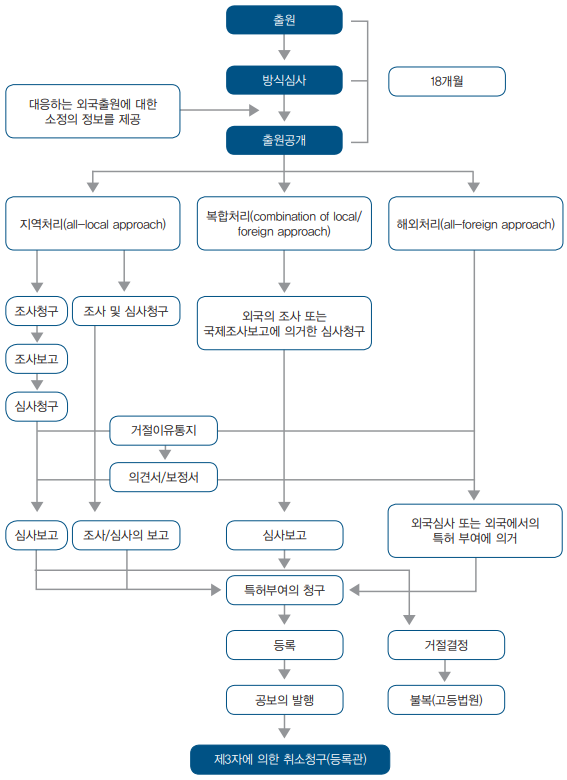[그림 4] 싱가포르 출원 절차의 개요
가. 정규 출원
정규출원으로는 싱가포르의 특허청에 직접 출원하는 통상의 특허출원과 PCT(특허협력조약: Patent Corporation Treaty)에 따라 국제출원을 한 후 싱가포르를 지정국으로 지정하여 국내단계로 진입한 출원이 있음
통상의 특허출원은 출원수수료와 출원서류를 특허청에 제출하고 방식심사를 통과함으로써 출원일을 인정받게 됨
싱가포르 국내 출원을 위해서는
- 특허를 요구하는 서류 (특허서식: Patents Form 1) 및 소정의 수수료(170불)
- 명세서, 상세한 설명, 하나 이상의 청구항, 상세한 설명 또는 청구항에서 언급된 도면
- 요약서를 제출
* 출원일 확인 (Date of Filing (DOF) check) 필요
일반적인 출원의 출원일은 싱가포르에 다음을 만족하는 서류가 특허 등록국에 제출된 날임
- 특허를 요청하는 서류
- 특허 출원의 출원인을 나타내는 서류
- 발명의 설명이 포함된 서류
2007년 4월 1일부터 출원서에 다음을 만족하는 경우, 발명의 상세한 설명이 누락되었더라도 출원일이 인정됨
- 우선권으로 지정된 선행하는 관련 출원을 참조(make a reference)하고,
- 관련하는 선행 출원의 출원일 및 출원된 국가 정보를 제출하고,
- 관련 선행 출원에 누락된 설명 부분이 모두 포함되어 있다고 선언하는 경우.
나. 우선권주장 출원
우선권주장출원에는 그 기초출원이 국내 출원인지 타국 출원인지에 따라 국내 우선권주장출원과 파리 조약에 의한 우선권주장출원이 있음
(1) 우선일(Priority date)의 주장
다른 국가들과 마찬가지로 싱가포르에서도 특허 출원에 우선권을 요구할 수 있음. 만약 출원인이 파리 조약이나 PCT 가맹국에 출원을 하고, 선행하는 출원일로부터 12월 이내에 후속 절차로 싱가포르에 출원을 하는 경우 우선권을 주장할 수 있음. 반대로 싱가포르에 출원을 하고, 후행하는 출원을 파리 조약이나 PCT 가맹국에 하는 경우에도 우선권을 주장할 수 있음
- 우선권을 주장하는 출원은 타 출원이 조사 또는 심사 보고서가 공개 되었는지 여부에 상관없이 독립적임
(2) 우선권 선언 (Declaration of priority)
출원인이 우선권을 주장하기 위해서는 후행 하는 출원의 출원일에 우선권 선언을 해야함
- 우선일로부터 12개월 이내에 동일 발명의 최초 선행하는 출원에 대한 우선권을 주장하며 출원을 하여야 하고,
- 12개월의 기간 내에 출원과 동시에 선행하는 출원에 대한 우선권을 주장 하여야 함
(3) 우선권의 부활 (Restoration of right of priority)
2007년 4월 1일부터, 출원인이 우선일로부터 12개월 이내에 싱가포르에 출원을 하지 못하였거나, 우선일로부터 12개월 이내에 출원을 하였으나, 그 출원과 동시에 우선권을 주장하지 못하였더라 하더라도, 우선권의 부활을 신청할 수 있음
이러한 청구는
- 우선권의 부활 신청을 위한 싱가포르 출원이, 선행하는 관련 출원의 출원일로부터 14개월 이내에 이루어져야 하고,
- 우선일로부터 12개월 이내에 출원을 하였으나, 그 출원과 동시에 우선권을 주장하지 못하였던 경우에는, 최초 관련 출원의 출원일로부터 16개월 이내에 우선권 신청을 추가해야 함
출원인이 우선권 선언을 함에 있어서, 최초의 출원일로부터 12개월 이내에 출원을 하지 못한 경우, 우선일로부터 12개월의 경과 이후에 필요한 당연한 주의에도 불구하고 출원을 못하였거나, 고의가 아니었음을 청구서에 나타내고, 이러한 청구가 등록관에 의해 받아들여지면 우선권이 인정됨
다. 파리 조약에 의한 우선권주장 출원
파리 조약에 의한 우선권주장출원의 경우 그 기초출원은 싱가포르와 협약이 체결된 나라 또는 국제기관에 의해 출원된 경우이며, 당해 출원은 우선권 기간 내에 생긴 사건에 의하여 무효로 되거나 불리한 취급을 당하지 않음
해당 명세서 또는 그 외의 서류가 외국어로 작성된 경우로 장관이 요구하였을 때에는, 해당 명세서 또는 그 외의 서류의 영어에 의한 번역문으로 선서 진술서 또는 그 외에 방법에 의하여 장관이 납득하도록 증명된 것을 제출해야 함
- 각 조약 출원에는 완전 명세서를 첨부하고, 보호를 위한 출원 또는 경우에 따라서는 최초로 보호를 위한 출원을 한 날 및 조약국을 명시하며, 출원인 또는 그 전 권원자가 그 날 전에 조약국에 대해 해당 발명과 관련되는 보호를 위한 출원을 했던 적이 없는 취지를 기재해야 함
라. 국내 우선권주장 출원
선출원을 기초로 하는 완전 명세서가 해당 출원의 출원일부터 12개월 이내에 제출되고, 그 클레임이 해당 출원에 개시된 사항을 적정하게 기초로 할 때는, 해당 클레임의 우선일은 해당 사항이 최초로 개시된 해당 출원의 출원일로 함
마. 싱가포르의 국내단계를 진행하는 국제 출원(PCT)
국제출원을 하며 싱가포르를 지정국으로 지정한 경우에는 우선일로부터 30개월 내에 국제출원시 제출한 출원서류의 영어에 의한 번역문을 제출하고 국내 출원수수료를 납부해야 함
- 싱가포르는 PCT의 chapterⅠ 및 chapterⅡ에 응할 수 있음. 즉, 출원인은 싱가포르 출원에 있어 국내단계 진입을 chapterⅠ 또는 chapterⅡ에 따라 선택적으로 진입할 수 있음. 이러한 국제출원은 싱가포르에 있어 싱가포르에 출원한 통상의 출원과 동일하게 취급됨
(1) 국내수속의 이행 (chapterⅠ 및 chapterⅡ에 의한 싱가포르 국내단계 진입 요건)
싱가포르에서 국내수속을 이행하기 위해서는 다음 정보를 특허서식 37호에 기입해서 제출해야 하며, 수수료 170불의 납부가 필요함
- 국제출원번호
- 국제출원일
- 최초의 선언 우선일
- 출원인의 완전한 주소
- 국제공개 번호(알고 있는 경우)
- 국내수속 이행을 다음 어느 것에 의할 것인가
ⅰ) PCT 제1장 (싱가포르를 지정)
ⅱ) 제86조(3)(b)에 근거하는 이전의 국내수속의 이행(PCT 제1장; 싱가포르를 지정)
ⅲ) PCT 제2장(싱가포르를 지정)
ⅳ) 제86조에 근거하는 이전의 국내수속의 이행(PCT 제2장; 싱가포르를 지정)
(2) chapterⅠ에 의한 싱가포르 국내단계 진입
chapterⅠ에 의한 싱가포르 국내단계 진입단계에서, 출원인은 국제 단계에서의 조사 결과에 심사를 의존한다는 청구를 할 수 있음. 싱가포르 특허 등록국으로부터 접수가 확인되면 출원인은 특허 허여를 위한 수수료를 납부할 수 있음. 특허 허여는 특허법과 특허 규칙의 모든 요구조건을 만족하는 경우 이루어짐
(3) chapterⅡ에 의한 싱가포르 국내단계 진입
chapterⅡ에 의한 싱가포르 국내단계 진입에서, 특허 허여를 위한 수수료를 납부하며, 동일한 발명에 대하여 싱가포르에서의 조사 및 심사를 요청하는 대신에 국제단계에서 발생된 보고서(예를 들어 국제 조사 보고서 및 chapterⅡ의 특허성에 대한 국제 보고서(IPRP; International Report on Patentability))에 의존할 수 있음
바. 한-싱가포르 FTA 지재권 협상 : 국제조사 및 국제예비심사 기관의 인정
2005년에 체결된 한-싱 FTA 협정문에 따르면, 「싱가포르 특허청」에 특허가 출원된 경우 싱가포르는 PCT 국제출원에 대한 국제조사기관 및 국제예비심사기관으로「대한민국 특허청」을 지정하고 특허절차의 편의를 제공하기로 결정함 따라서 우리나라 특허청은 PCT 조약에 따른 싱가포르의 국제특허출원에 대해 국제조사 및 국제예비심사를 할 수 있게 되었음
(3) 출원서류
(가) 출원서류의 구성
특허 출원시에는 특허 부여를 요구하는 서류, 명세서, 요약서를 제출해야 하며, 명세서에는 발명의 명칭, 발명의 설명, 청구항, 만약 있으면 도면의 순서로 기재함
(나) 출원서류의 작성
(a) 발명의 명칭
출원서, 명세서 및 요약에 기재하는 발명의 명칭은 간결하고, 동시에 정확한 것으로 하고, 또한 해당 발명에 관계되는 사항을 표시하는 것이 아니면 안됨. 등록관은 해당 명칭이 이에 부합되지 않는 것으로 판단한 경우, 해당 명칭을 변경할 수 있음
(b) 발명의 설명
특허출원 서류에 포함하는 발명의 설명은, 그 첫머리에 발명의 명칭을 기재하고, 다음을 따르는 것으로 한함
- 해당 발명이 관계되는 기술 분야를 명기하는 것,
- 출원인이 아는 한에 있어서 해당 발명의 이해, 조사 및 심사에 유용하다고 간주할 수 있는 배경기술을 명기하는 것,
- 기술적 과제에 대해서 그와 같이 명시하지 않고 있을 경우를 포함하며, 과제 및 그 해결 방법을 이해할 수 있는 것 같은 표현으로, 청구하는 발명을 공개하는 것, 또한 만약 있으면, 해당 발명의 유리한 효과를 그 배경기술과 관련하여 진술하는 것,
- 만약 있으면 도면 중의 도에 대해서 간결하게 설명하는 것,
- 청구하는 발명을 실시하기 위한 태양에 대해서 적당한 실시 예를 제시하고, 만약 있으면 도면을 인용하고, 적어도 1회 이상 기술하는 것,
- 해당 발명이 산업상의 이용 가능성에 관한 제13조 (1) (c)의 조건을 만족시키는 방법이, 해당 발명의 설명 또는 내용으로부터 명백하지 않을 경우에는 명확히 표시하는 것
(c) 청구항
청구항은 해당 출원인이 보호를 추구하는 사항을 정의하고, 명확하고 간결하며, 발명의 설명에 의해 뒷받침될 수 있어야 하며, 하나의 발명에 관한 것이거나 단일 발명 개념을 형성하도록 서로 연관된 발명의 그룹에 관한 것이어야 함
- 청구항의 수는, 청구 하는 발명의 내용을 고려한 적절한 것이 아니면 안 되고, 청구항이 복수일 경우에는 아라비아 숫자로 일련하여 번호를 첨부함
청구항에 있어서의 보호 청구 사항의 한정은, 구조적, 기능적 또는 수학적 용어를 이용해서 표현할 수 있는 해당발명의 기술적 특징에 의해 하지 않으면 안됨
청구항은 2 부분으로 나누어서 기재하고, 제1부분은 청구 하는 주제의 한정에 관해서, 편성에 의해 선행 기술의 일부라고 인정을 받는 해당 발명의 기술적 특징의 기재를 구성하고, 제2부분은 “characterised in that”, “characterised by”, “wherein the improvement comprises”등의 단어 또는 이것들과 같은 취지의 표현으로 시작하여야 하며, 제1부분에 있어서 언급한 특징과의 편성에 의해, 보호 청구 사항을 한정하는 기술적 특징을 간결하게 언급한 기재에서 계속하거나, 또는 보호 청구 사항을 한정하는 복수의 요소 또는 공정의 편성 또는 단일인 요소 또는 공정에 영향을 미치는 설명을 포함하는 단일인 기재에 의해 구성함
청구항은 발명의 기술적 특징에 관하여, 발명의 설명 또는 도면의 참조에 의거해서는 안됨. 단, 해당 참조가 청구항의 이해를 위해서 필요할 경우, 또는 이것이 청구항의 명확성 또는 간결성을 높일 경우는, 그러하지 아니함
(d) 요약서
요약서의 목적은 기술적 정보를 주는 것으로, 그것은 공개시에 제14조 (3)에 의한 기술수준의 일부를 구성하는 것이 아니며, 등록관은 요약서가 그 목적에 맞는 것인지 여부를 결정하고, 그렇지 못한 경우에는 요약서를 재구성 할 수 있음
- 요약서의 첫머리에는, 발명의 명칭을 기재하고, 명세서로 공개된 사항의 간결한 개요를 기재함. 해당 개요는, 해당 발명이 속하는 기술 분야를 기재하고, 해당 발명이 관계되는 기술적 과제, 발명을 통한 해당 과제의 해결 방법의 요지, 및 해당 발명의 주된 용도를 명확히 이해할 수 있게 작성함
또한 요약서에는, 적당히 명세서에 기재하는 화학식 가운데 해당 발명을 가장 적절하게 특징 붙이는 화학식을 기재하지만, 해당 발명에 관한 이점 또는 가치에 관한 기재 또는 해당 발명의 투기적 이용에 관한 기재는 포함시키지 않음
요약서는 공개 사항이 허용하는 한 간결하게 기재하고, 통상은 150단어 이하로 정리함
(e) 도면
도면은 명세서를 특히 설명하는데 필요하다고 하더라도 명세서 자체, 즉 특허부여의 원서, 발명의 설명, 클레임 및 요약에 기재해서는 안됨
도면의 사본의 적어도 1통은 튼튼한 지면상에 간결하고 명확하게 작성해야 하며, 플로차트(flow chart)의 경우를 제외하고 도면상에 설명 사항은 일절 기재해서는 안 되며, 발명의 설명 및 요약에는 표를 포함시킬 수 있음
(다) 기타 출원서류의 작성
(a) 발명자의 기입
출원인이 발명자가 아닌 경우, 발명자를 명기해야 하고, 발명을 취득한 경위, 예를 들어 양도나 근로 계약에 의한 것임을 밝혀야 함
(b) 행정을 위한 주소 (Address for Service)
모든 출원에는 행정을 위한 주소가 명기되어야 함. 이러한 주소로 특허 등록국이 발송하는 모든 서신이 보내짐
(라) 서류의 제출
2003년 8월 1일부터 전자 출원 가능하며, 싱가포르에 출원을 희망하는 자는 3가지 옵션을 선택할 수 있음
- ePATENTS-Online Submission via Online Internet Service (OIS) 5Mb 이하의 출원 서식 등이 제안됨
- Epatents-Electric Media Submission using Electric Patent Preparation (EPP) Software 기록매체(예를 들어 CD-ROM)출원 가능하며, www.epatents.gov.sg. 에서 관련 소프트웨어를 다운 받을 수 있음
- 전통적인 종이 파일로 출원 서식 등을 제출하는 것도 가능하나, 일정한 추가 수수료를 납부해야 함
사. 출원인 적격
특허를 받을 수 있는 권리를 가진 자만이 정당한 출원인으로서의 적격을 가짐. 출원인 적격을 가진 자는 다음과 같음
① 발명자
특허의 발명자는 출원을 하여 특허를 받을 권리가 주어짐. 따라서 특허를 받을 수 있는 권리는 진정하고 최초의 발명자에게 주어짐. 발명자는 자연인이며 법인은 발명자가 될 수 없음
② 승계인
최초의 발명자로부터 특허를 받을 수 있는 권리를 양수한 자는 출원인 적격을 가짐. 승계인에는 상속자와 양수인이 있음. 양수인은 자연인, 회사, 국가일 수도 있음. 싱가포르의 경우 특허를 받을 수 있는 권리를 양도하기로 하는 계약도 유효함
- 발명자가 아닌 출원인은, 발명자를 특정하고, 동시에 스스로가 특허부여를 받는 권리를 얻은 경위를 명확히 나타내는 서류를 제출해야 함. 예를 들면, 고용계약 또는 양도 계약서 등 발명에 대한 권리를 얻은 취지 나타내는 서류를 제출해야 함
③ 공동발명자
2인 이상이 공동으로 발명을 한 경우에는 공동 발명자는 지분에 근거하여 특허 출원을 할 수 있음. 또한, (특허법 제22조) 특허의 공동 출원인 사이에 출원 수속을 진행시켜야 할 것인가 아닌지 또는 수속을 진행시키는 방법에 관해서 분쟁이 생겼을 경우, 등록관은 당사자의 어느 누군가의 청구에 기초하여 해당 출원을 당사자 가운데의 1 또는 1 이상의 명의에 의해 해당 출원 수속을 진행시키는 것을 가능하게 하거나 또는 이것을 진행시키는 방법을 조정하거나, 또는 이들 양 목적을 위하여 사정에 따라 적절하다고 판단되는 지시를 내릴 수 있음
아. 출원 절차
싱가포르에서는 출원서류를 서면으로 작성해 제출해야 함. 또한, 전자 문서를 이용하여 출원을 할 수도 있음. 출원서류가 작성되면 출원서, 명세서, 청구항, 도면(필요한 경우), 요약서, 및 선언서를 특허청에 제출함
- 국제 출원은 영어로 된 서류로 출원서류는 등기우편으로 송부하거나 직접 제출할 수 있으며, 우송된 출원서류는 우송일에 접수된 것으로 봄
자. 특이 제도
싱가포르는 심사에 관하여 다양한 선택사항을 마련해 두었다는 점이 한국과 다름
- 출원인은 지역 조사 또는 심사(local search and examination)를 요청할 수도 있고, 타국 특허청의 심사 결과에 의존(make a reference)하여 조사 또는 심사를 진행 할 수도 있고, 상응하는 출원 또는 상응하는 국제 출원의 최종 조사 및 심사 결과를 제출할 수 있음. 구체적인 내용은 아래와 같음
- 조사 보고서 청구(Request for lecal search report) 및 조사 보고서에 근거한 실질 심사 청구(Request for local substantive examination based on the local search report) : 출원인은 조사 보고서 청구를 할 수 있고, 이후에 조사 보고서에 근거한 실질 심사 청구를 할 수 있음. 출원인이 조사 보고서에 따라 실질심사를 진행할지 여부를 결정할 수 있음
- 결합된 조사보고서 및 심사청구(Request for combines local search and examination) : 출원인은 조사보고서 및 실질 심사를 한번에 청구할 수 있으며, 이 경우 출원인은 조사 보고서 청구와 실질 심사 청구를 각각 할때보다 저렴한 비용으로 조사 보고서 및 심사 청구 결과를 받아볼 수 있음
- 지정된 외국출원 또는 PCT 국제 출원의 최종 조사 결과에 근거한 실질 심사 청구 (Request for local substantive examination based on final search results of prescribed foreign corresponding application or corresponding PCT international application) : 출원인은 싱가포르 출원에 대응하는 지정된 외국 출원 또는 PCT 국제출원의 최종 조사 결과에 근거한 실질 심사 청구를 할 수 있음. 이 경우 심사관은 별도의 선행기술조사 없이 최종 조사 결과를 이용하여 심사만 하기 때문에 비용이 상대적으로 저렴함 (싱가포르 출원에 대응하는 지정된 외국 출원 : 한국, 미국, 일본, 호주, 뉴질랜드, 캐나다, 유럽에 한함)
또한 싱가포르는 2013년부터 한국 특허청과 특허심사하이웨이(PPH, Patent Prosecution Highway)를 실시하여, 특허심사하이웨이는 한국과 싱가포르에 공통으로 특허를 출원한 출원인이 상대국에서 우선심사 또는 조기심사를 받을 경우 신속하고 효율적으로 특허권을 취득할 수 있는 제도임
- 한국특허청에 특허심사하이웨이를 신청하는 절차
싱가포르, 캄보디아, 인도네시아, 말레이시아, 필리핀, 라오스, 태국, 베트남 등 아세안 멤버들은 지역 특허 협력 조약을 발효하여 (ASPEC; ASEAN Patent Examination Co-operation), 2009년 6월 15일부터 실행 중임
- 이 프로그램의 목적은 조사 및 심사 결과를 각 참가국끼리 공유하여 각 참가국의 특허 취득을 보다 효율적으로 진행하는 것으로, 각국의 조사 및 심사에 드는 비용 및 시간을 절약하고, 조사 및 심사 결과물에 의해 상응하는 출원을 유용한 참조로 이용하는 것임
- ASPEC은 현재 2025. 8. 26.까지 연장 시행 중임
2. 특허 심사 절차
가. 출원서 제출 후의 특허 출원 진행
출원인이 출원서류를 제출하면, 등록국에 의해 출원일 확인 및 예비 심사가 진행되고, 출원 명세서 등이 공개됨. 이후 출원인이 조사, 조사 및 심사, 심사 청구 또는 상응하는 출원 또는 상응하는 국제 출원의 소정의 정보를 제출 또는 국제 출원으로서 싱가포르를 보호를 요청한 국가로 지정한 출원의 국제 예비 조사 보고서 (IPRP)에 의존한다는 통지서를 제출함. 이후 심사가 진행되며, 출원인이 특허 허여에 대한 요청서 제출함
다음은 출원서 제출 후의 절차를 간략히 나타낸 흐름도임
[그림 7] 출원서 제출 후의 절차
(1) 예비 심사
출원인이 소정의 기간 내에 필요한 모든 서류를 제출하고, 출원인이 출원을 취하하거나 포기된 것으로 간주되지 않으면, 특허 등록국은 예비 심사를 진행함
예비 심사에서 특허 등록국은 다음 사항을 결정함
- 우선권을 주장한 경우, 출원일이 관련 선행 출원의 출원일로부터 12월의 기간 내에 출원을 하였는지,
- 출원이 모든 방식 요건을 만족하고 있는지, 및
- 도면 또는 발명의 상세한 설명 중 누락된 부분이 있는지 여부(출원시 청구항이 제출되지 않아도 출원일은 인정됨)
등록관은 모든 방식 요건을 만족하지 않는 것으로 판단하면, 출원인에게 그 취지를 통지하고, 등록관의 결정에 대하여 의견을 개진하고, 모든 방식요건을 만족하도록 출원을 보정할 기회를 주며, 출원인이 보정을 하지 않으면 출원을 거절할 수 있음
(2) 조사 및 심사 (Search and Examination)
출원이 예비 심사를 통과하면 출원인은 다음 단계로 조사 및 심사 절차를 진행할 수 있음.싱가포르 특허 등록국은 다음 3가지의 옵션을 제공함
- 지역 처리(all-local approach)
- 해외 처리(all-foreign approach)
- 복합 처리(combination of local/foreign approaches)
조사 과정은 발명의 주제와 관계되는 모든 자료 및 정보에 대하여 실행되며, 조사의 결과는 조사 보고서에 반영됨
심사 과정은 심사관이 신규성, 진보성 및 산업상 이용 가능성의 유무에 대하여 고려하며, 심사의 결과는 심사 보고서에 반영됨
① 지역 처리
지역 처리에서 출원인은 조사 이후 심사 단계(search-then-examination process)를 선택하거나, 조사 및 심사 단계(combined search-and-examination process)를 선택할 수 있음
조사 청구는 특허서식 10호와 1750불의 수수료를 납부해야 하며, 심사 청구는 특허서식 12호와 수수료 1200불을 납부하고, 조사 및 심사청구는 특허서식 11호와 2600불의 수수료를 납부해야 함.
조사청구는 출원일 또는 우선일이 기재된 경우 우선일로부터 13월 또는 제20조(3), 제26조(6) 또는 제47조(4) (무권리자 출원에 대한 신규출원)에 근거하여 신규출원이 행하여졌을 경우에는 그 신규출원으로부터 13월 내에 청구되어야 하며,(규칙 38)
심사청구는 출원일 또는 우선일이 기재된 경우 우선일로부터 21월 또는 제20조(3), 제26조(6) 또는 제47조(4) (무권리자 출원에 대한 신규출원)에 근거하여 신규출원이 행하여졌을 경우에는 그 신규출원으로부터 21월 내, 또는 규칙 47A에 의한 기간연장이 청구된 경우에는 그 연장된 기간 안에 청구하여야 함(규칙 43)
② 복합 처리
복합 처리 과정에서 출원인은 특허 등록국에 상응하는 출원 또는 상응하는 국제 출원의 조사 결과에 의존한다는 요청서를 제출함
- 한편, 제2조의 “대응하는 출원” 및 “대응하는 특허” 및 제29조(2)(c) 의 소정의 특허청은 1) 호주 특허청, 캐나다 특허청(영어로 출원된 건에 한정) , 일본 특허청, 뉴질랜드 특허청, 대한민국 특허청, 미합중국 특허청과 2) 유럽 특허청(영어로 출원된 건에 한정)을 말함
(3) 출원의 공개
① 공개 일반
해당 출원이 공표되면 싱가포르의 방위상 불이익이 될 우려가 있다는 장관에 의한 등록관의 통지에 해당하는 정보가 포함되어 있는 것을 등록관이 인정할 경우 및 해당 출원에, 공표되면 공중의 안전상 불이익이 될 우려가 있는 정보가 포함되어 있다고 등록관이 인정할 경우에, 등록관은 제27조 적용상의 소정의 기간의 종료시부터 3월을 넘지 않는 기간의 종료시까지, 해당 정보의 공표 또는 특정인 또는 특정한 종류인에 대한 전달을 금지하거나 제한하는 지시를 내리는 경우를 제외하고, 우선일 또는 출원일로부터 18개월이 지나거나 출원인의 청구가 있으면 공개됨
출원이 출원일을 가질 경우는 해당 출원이 등록국에 의한 공개 준비의 완료 전에 소정의 방법으로 취하되었거나, 포기 취급되었거나, 또는 거절되지 않는 한, 등록관은 해당 출원을 소정의 기간의 종료 후 지체없이 출원시의 상태로 (원 청구항뿐만 아니라 그것들의 보정 및 해당 준비의 완료 직전에 존재하고 있는 새로운 청구항도 포함함) 공개함
각 출원의 공개는 해당 출원을 특정 하는 출원일, 출원 번호, 출원인의 명칭 및 주소 등의 상세 사항과 요약을 포함하는 것으로 함
- 특허 출원의 공개시에는 기탁 기관은 명세서에 기재된 생물학적 소재를 공중이 입수 가능하도록 하여야 하며, 특허청은 소정의 수수료의 납부에 의해 해당 출원의 명세서 및 도면(있는 경우)을 공중이 입수 가능하도록 하여야 함
② 공개의 제한
등록관은 출원인의 청구가 있으면, 소정의 기간 동안에 해당 출원을 공개할 수 있고, 어느 경우든 그 공개의 사실 및 공개일을 공보에 공고하지만, ⅰ) 손해를 줄 우려가 있다고 등록관이 생각하는 방법으로 어느 사람을 비방하는 사항, 또는 ⅱ) 해당 사항의 공표 또는 그 이용에 의해 불쾌한, 부도덕한 또는 반사회적인 행동이 조장되는 것이 일반적으로 예견된다고 등록관이 생각하는 사항에 대하여는 이를 제외하고 공개할 수 있음
각 출원의 공개는 해당 출원을 특정하는 출원일, 출원 번호, 출원인의 명칭 및 주소 등의 상세 사항과 요약을 포함하는 것으로 함
특허 출원의 공개시에는 기탁 기관은 명세서에 기재된 생물학적 소재를 공중이 입수 가능하도록 하여야 하며, 특허청은 소정의 수수료의 납부에 의해 해당 출원의 명세서 및 도면(있는 경우)을 공중이 입수 가능하도록 하여야 함
③ 공개의 효과
일반적으로, 특허가 허여되면, 출원이 공개된 날부터 특허가 허여된 기간까지, 마치 특허가 등록된 것과 같은 권리를 가지며, 등록관 또는 법원을 통해 침해에 의한 손해를 배상 받을 수 있음
(4) 공중에 대한 열람
① 열람 일반
제27조에 따라 특허 출원이 공개된 후, 소정의 방법에 의한 등록관에게의 청구 및 (만약 있으면) 소정의 수수료의 납부에 의해 소정의 제한을 따르는 것을 조건으로, 등록관은 해당 출원 또는 해당 출원에 의하여 부여된 특허에 관한 정보를 청구에서 지정한 것과 같은 내용으로 청구인에게 주고, 해당 서류의 열람을 허가함
특허출원이 공개될 때까지는 출원을 구성하거나 관련된 서류 또는 정보는 출원인의 동의 없이 등록관이 공표하거나 다른 사람에게 통보해서는 안 되지만, (a) 등록관이 미공개된 특허출원에 관한 서지정보를 공표하거나 다른 사람에게 통보하는 것, 또는 (b) 장관이 제33조 (5)에 근거하여 특허출원 또는 관련 서류를 열람하거나 열람하도록 위임하는 것은 가능함
② 열람의 청구
누군가가 특허출원이 되었지만 제27조에 따른 공개는 되지 않았음을 통지받고 그 출원이 공개된 후 통지에 기재된 행위를 하면 특허가 부여된 후 그에게 소송을 하겠다는 통지를 받은 경우, 그는 그 출원이 공개되지 않았음에도 불구하고 열람의 청구를 할 수 있음
특허 출원이 되었지만 공개되지 않았고 이전 출원 내용의 일부에 관해서 (규칙을 따르거나 제20조에 근거한 명령에 의하여) 신규 출원이 되어 공개된 경우, 누구나 이전 출원에 관해서 열람을 청구를 할 수 있고, 소정의 수수료의 납부에 의해, 등록관은 그 사람에게 이전 출원이 공개되었을 경우 제공할 수 있었던 정보를 주고 열람을 허가할 수 있었던 서류의 열람을 허가함
③ 침해여부
특허 또는 특허출원 명세서의 전부 또는 일부에 관한 공개는 저작권법(Cap. 63)에 근거하는 저작물 또는 예술작품에 존재하는 저작권에 관한 침해를 구성하지 않음
(5) 특허를 받는 권원의 조회 등 특허 부여 전에 하는 결정
① 출원인 적격 등에 대한 조회
발명에 대해서 특허가 부여되기 전에는 언제든지, (a) 어느 누구라도 (단독 또는 타인과 함께) 해당 발명에 대해서 특허부여를 받는 권원이 있는 것인지, 또는 부여된 특허 또는 해당 특허출원에 대해서 또는 이것들에 기초하여 어떠한 권리를 소유할 것인지 아닌지의 문제를 등록관에게 질문(조회)할 수 있고, (b) 해당 발명에 관한 특허출원의 2이상의 공동 소유자 각각은, 출원에 대해서 또는 이것에 기초한 어떠한 권리가 다른 사람에게 이전 또는 부여되어야 할 것인지 아닌지의 문제를 등록관에게 질문할 수 있고, 등록관은, 해당 질문에 대해서 결정하고, 그 결정을 실시하기 위해 등록관이 적절하다고 판단되는 명령을 할 수 있음
② 등록관의 명령
발명에 관한 출원인 적격에 근거하는 문제에 관해 해당 발명의 특허출원 후이며, 해당 출원의 수행에 의해 특허가 부여되기 전에 어떤 자가 등록관에게 질문하는 경우에는, 등록관이 해당 질문(조회)에 대해서 처분을 하기에 앞서, 해당 출원이 거절 되거나 철회되지 않고 있는 한, 등록관은,
(a) 해당 출원은 그 사람의 단독명의에 의해 또는 다른 출원인 또는 다른 지정된 출원인과의 공동 명의에 의해 수속을 진척시켜야 한다는 취지의 명령을 하는 것, (b) 해당 조회가 2이상의 자에 의해 행하여졌을 경우에는, 해당 출원은, 그 전원의 공동 명의에 의해 수속을 진행시켜야 한다는 취지의 명령을 하는 것, (c) 해당 출원의 수행에 의한 특허부여를 거절하거나, 또는 해당 문제에 대한 질문의 대상이 된 사항의 어떤 사항을 제외하도록 출원을 보정해야 한다는 취지의 명령을 하는 것, 또는 (d) 해당 출원에 관한 또는 이것에 기초한 어떠한 실시권 또는 다른 권리의 이전 또는 부여를 명령하고 누군가에게 그 명령의 규정의 실행을 지시하는 것을 할 수 있음
③ 새로운 출원
출원인 적격에 기초한 문제가 등록관에게 배정되고,
(a) 등록관이 해당 문제에 관계되는 해당 발명의 특허출원을 보정하도록 명령했을 경우, (b) 등록관이 해당 조회(질문)에 대해서 처분을 하기 전에, 해당출원이 보정명령에 기초하여 거절된 (해당조회가 해당출원의 공개 전에 행하여졌는지 뒤에 행하여졌는지에 관계없이) 경우, 또는 (c) 등록관이 해당 조회에 대해서 처분을 하기 전으로, 해당 출원의 공개보다 뒤에, 해당 출원이 본법의 다른 규정에 근거하여 거절되었거나 또는 철회된 경우에는,
등록관은, 해당 조회를 한 사람이 소정의 기간 내에 이전의 출원에 포함된 어느 사항의 전부 또는 일부에 대해서 또는 이전의 출원으로부터 제외된 사항의 전부 또는 일부에 대해서, 새로운 사항을 포함하지 않는 것을 조건으로, 새롭게 특허출원을 하도록 명령할 수 있고, 해당 신규출원이 행하여진 경우에는, 그 출원은 해당 출원의 출원일에 행하여진 것으로서 취급되어야 한다는 취지의 명령을 할 수 있음
(6) 출원인 적격 또는 공동출원에 근거한 출원 이전의 효과
① 실시권 등의 유지
특허 출원이 (일부 다른 사람의 이름으로 진행하는 것인지 상관없이) 최초 출원인들 중 하나 또는 일부의 이름으로 진행되어야 한다는 취지가 제20조 또는 제22조에 근거하여 명령 또는 지시가 주어질 경우에는, 출원에 대한 실시권이나 다른 권리는 이 조항들 중 어느 것에 따른 명령과 지시의 규정에 따르는 것을 조건으로 계속해서 효력을 유지하고, 해당 출원의 수속을 진행하는 명의인이 되어야 할 사람에 의해 부여되는 것으로서 취급함
② 실시권 등의 소멸
특허 출원이 (최초의 출원인이나 출원인들이 특허를 받을 자격이 없다는 것에 근거하여) 최초의 출원인이 아닌 1 또는 2 이상의 사람의 이름으로 진행하라는 취지의 명령 또는 지시가 제20조에 따라 주어지는 경우, 출원에 대한 실시권이나 다른 권리는, 이 조항에 따른 명령과 지시의 규정에 따라 출원인이나 출원인들로서 이 사람이나 사람들의 등록시에 또는 출원이 공개되지 않은 경우에는, 명령을 한 때에 소멸함
③ 선의 실시자 등의 실시권
실시권 소멸의 명령을 하게 되는 제20조에 따른 언급의 등록 전에,
(a) 최초 출원인 또는 출원인들 중 어느 하나가 싱가포르에서 해당 발명을 선의로 실시하였거나 실시하기 위한 상당한 준비를 한 경우, 또는 (b) 출원인의 실시권자가 싱가포르에서 그 발명을 선의로 실시하였거나 또는 실시하기 위해 상당한 준비를 한 경우에는,
최초 출원인이나 출원인들 또는 실시권자는, 규정된 기간 내에 출원이 진행되는 명의를 가진 사람에게 요청을 할 때에는, 그 발명을 계속 실시하거나, 또는 경우에 따라서는 그 발명을 실시하는 실시권을 부여받을 수 있는 자격이 있음
이러한 해당 실시권은 배타적 실시권은 아니며, 합리적인 기간과 합리적인 조건으로 허여되어야 함
④ 실시권의 조회
출원이 진행되는 명의를 가진 사람이나 또는 경우에 따라 새로운 출원을 하는 사람이나 또는 그러한 실시권을 부여받을 자격이 있다고 주장하는 임의의 사람은 등록관에게 그 사람이 그러한 자격이 있는지 그리고 그 기간이나 조건이 합리적인지 여부에 대해 질문을 할 수 있고, 등록관은 적절하다고 인정되는 경우 그 실시권의 허여를 명할 수 있음
나. 특허의 부여
(1) 개요
심사는 출원서나 명세서 등의 출원서류가 법에서 정하는 절차적, 형식적 및 실체적 요건을 구비하고 있는지를 심사하는 것을 말함. 심사는 심사청구가 행해진 특허출원에 대해서만 행해짐. 특허의 부여는 특허서식 14호를 제출하고 수수료 210불을 납부해야 함
(2) 방식요건의 심사
심사관은 모든 방식요건이 만족되고, 각종 조사 보고서 및 심사 보고서, 국제조사 보고서가 제출되었는지와 각종 서류가 영어에 의한 것이 아닐 경우에는 영어 번역문이 제출되었는지를 심사하고, 소정의 수수료가 납부 되었는지를 심사함
- 소정의 기간 내 또는 그 연장기간 내에 방식적 요건이 만족되지 않을 경우에는, 출원인이 해당 기간의 종료시에 그 출원을 포기한 것으로 간주되며, 출원에 관해 항고가 법원에 제기되고, 출원인이 해당 항소가 계속되는 사이의 해당 기간을 연장하도록 법원에 청구했을 경우에는 법원이 결정하는 날까지 해당 기간이 연장될 수 있음
(3) 실체요건의 심사
등록관이 수령한 서류가, 출원중의 청구항이 하나의 발명 또는 단일인 발명 개념을 형성하도록 연결된 1군의 발명에 관한 것이 아니라는 이유에 기초한 미해결인 거절(objection)을 공개하는 것이 아닌 것, 또는 이러한 거절이 공개되었을 때에는, 출원인이 해당 거절은 해결되었다는 것을 등록관에게 납득시켜야 함
출원인이 제29조 (5)에 언급된 심사 보고서, 제29조 (6)에 말하는 조사 및 심사 보고서 또는 (2) (b) (vi)에 언급된 특허성에 관한 국제예비보고서에 의거할 때에는, 특허부여를 위한 소정의 서류가 제출되고, 특허부여를 위한 소정의 수수료가 납부된 시점에서의 출원 중의 각 청구항이 해당 보고서가 출현된 시점에서의 출원중의 청구항의 적어도 하나에 일치하고 있는 것. 단, 이 청구항은 (i) 심사 되었고, (ii) 해당 보고서 중에서 인용되고 있어야 함
출원인이 특허부여를 위한 소정의 서류를 제출하고, 특허부여를 위한 소정의 수수료를 납부한 시점에서, 제29조 (2) (c) (ii)에 언급된 대응하는 출원에 관한 소정의 정보 또는 29조(2) (d) (ii)에 언급된 대응하는 국제출원에 관한 소정의 정보에 의거할 때는, 해당 출원중의 각 청구항이 (i) 대응하는 출원 또는 대응하는 국제출원에 관한 소정의 정보에 기재되고 있고, (ii) 신규성, 진보성 (또는 비자명성) 및 산업상의 이용성 (또는 유용성)의 기준을 만족시킨다고 인정을 받을 것인가 아닌가가 심사됨
해당 발명이 반사회적 행동을 조장하는 것 등이 아니어야 하며, 동일한 출원인 또는 그 권리의 승계인이 동일한 우선일을 소유하는 동일한 발명에 영향을 미치는 다른 특허출원이 존재하지 않고, 동일의 우선일을 소유하는 동일한 발명에 대해서, 동일한 출원인 또는 그 권리의 승계인에게 먼저 특허가 부여되지 않고 있어야 함
(4) 출원인의 대응
등록관이 실체적 조건의 어느 하나라도 만족되지 않고 있다고 판단한 경우에는, 등록관은 특허 부여에 대한 등록관의 거절의 이유를 기재한 통지서를 출원인에게 송부하고, 출원인은 등록관이 지정하는 기간 내에 등록관의 거절에 응답하는 권리를 가짐
출원인은 등록관이 거절을 취소하지 않는 한, 등록관이 지정하는 기간 내에 제84조(출원 및 등록된 특허의 명세서에 공개된 사항의 범위)를 따르는 것을 조건으로 소정의 조건을 따라 그 출원의 명세서를 보정해야 하고, 실체적 조건의 어느 하나라도 소정의 기간 내에 만족되지 않고 있을 때에는 출원인이 해당 기간의 종료 시에 그 출원을 포기한 것으로 간주됨
(5) 특허부여 전 출원의 보정
출원의 심사중에 심사관이 다음을 인정했을 경우에는, 즉, 제13조의 특허성 있는 발명, 및 제25조 (4) 및 (5)에 정하는 조건(명세서 및 청구항의 기재 요건)을 만족하지 못하는 경우, 출원서에 있어서 (i) 제84조 (1)에 언급된 추가의 사항, 또는 (ii) 출원시에 특허출원서 공개된 사항을 넘는 사항을 공개하고 있는 경우에는, 심사관은 출원인에게 그 취지를 기재한 의견서를 적어도 1회 주고, 등록관은 해당 의견서를 수령했을 때에는, 통지서 및 해당 의견서의 복사본을 출원인에게 송부함
- 출원인은 심사 보고서가 교부되기 전에, 해당 의견서에 대하여 소정의 기간 내에 소정의 방법으로 회신하는 것, 및 제84조(출원 및 등록된 특허의 명세서에 공개된 사항의 범위)를 따르는 것을 조건으로, 소정의 조건에 따라 해당 출원의 명세서를 소정의 방법으로 보정할 수 있음
(6) 특허부여 후 명세서의 보정(제38조)
제84조(출원 및 등록된 특허의 명세서에 공개된 사항의 범위)를 따르는 것을 조건으로, 등록관은 특허의 소유자의 신청에 근거하여 등록관이 적절하다고 생각하는 조건이 있으면 그것을 따르는 것을 전제로, 해당 특허 명세서의 보정을 허가할 수 있음
- 해당 보정은 특허의 유효성이 쟁점이 될 가능성이 있는 수속이 법원 또는 등록관 아래에서 계속중일 경우에는 허가하지 않으며, 여기에 기초한 특허 명세서의 보정은 해당 특허의 부여로부터 효력을 갖고, 그 부여로부터 항상 효력을 갖고 있었던 것으로 간주함
- 어떠한 사람도, 특허의 소유자의 본조에 기초한 신청에 대하여 등록관에게 이의를 주장할 수 있고, 그러한 이의가 있으면, 등록관은, 해당 소유자에게 통지하고, 해당 이의를 고려하여 해당 신청을 인정할 것인가를 결정함
(7) 특허 부여 후의 조사 및 심사(제38A조)
누구나, 특허 부여된 특허 명세서중의 어느 청구항에 관하여, 언급된 심사 보고 또는 조사 및 심사보고, 특허성에 관한 국제예비보고서 또는 어떠한 국제예비심사 보고서에 근거하여 특허가 허여되었을 경우에, 특허 허여를 요구하는 소정의 서류가 제출되고, 특허 허여에 관한 소정의 수수료가 납부되었을 때의 해당 특허출원의 적어도 1의 청구항이, 해당 보고가 교부되었을 때의 상태에서, 심사되고, 해당 보고 중에서 인용하고 있는, 어느 것의 청구항에도 관계되지 않고 있었던 경우, 또는 해당 출원의 심사관이, 해당 보고를 작성하기 전에, 관계 선행 기술의 모두를 고려하지 않은 경우 조사 및 심사보고를 청구할 수 있음
또한, 제29조에 언급된 대응하는 관계 출원 또는 대응하는 국제출원에 관한 소정의 정보를 근거로서 특허가 부여되었을 경우에, (i) 특허 허여를 요구하는 소정의 서류가 제출되어, 특허 허여에 관계되는 소정의 수수료가 납부되었을 때의 해당 특허출원의 적어도 하나의 청구항이, 대응하는 출원 또는 대응하는 국제출원에 관한 소정의 정보중에 포함되어 있는 청구항으로, 신규성, 진보성 (또는 비자명성) 및 산업상의 이용성 (또는 유용성)의 기준을 만족시킨다고 인정을 받을 것인가를 결정하기 위해 심사된 것과 관계되지 않고 있었던 경우, 또는 (ii) 대응하는 출원 또는 대응하는 국제 출원의 심사관이, 해당 대응하는 출원 또는 대응하는 국제출원의 심사에 관한 보고를 작성하기 전에, 관계 선행 기술의 모두를 고려하지 않은 경우에도 조사 및 심사 보고를 청구할 수 있음
등록관이 해당 조사 및 심사보고를 수령하고, 청구가 인정되는 것으로 판단한 경우에는 특허의 소유자에게 송부하고, 소정의 방식에 의해 의견서에 응답하는 기회를 줌
(8) 단일성 결여를 이유로 한 이론 금지(제37조)
어느 누구도 특허에 대한 절차에서 또는 특허 명세서의 수정에 대한 절차에서 (a) 특허 명세서에 포함된 청구항이 그 자체로 또는 경우에 따라 수정된 바와 같이 둘 이상의 발명이 있는 경우, 또는 (b) 단일의 발명 개념을 형성하도록 서로 연관되지 않은 발명 그룹이 있는 경우에 해당한다는 것을 이유로 이론을 주장할 수 없음
(9) 특허부여 후의 권리에 대한 결정
① 특허 부여에 대한 이론 주장
발명에 관해서 특허가 부여된 후에, 해당 특허에 대한 또는 그것에 기초한 소유자로서의 권리를 소유한다고 주장하는 사람은, (a) 누가 해당 특허의 참된 소유자인가, (b) 해당 특허는 그것이 부여된 사람에게 부여되었어야 하는 것인가 아닌가, 또는 (c) 해당 특허에 대한 또는 그것에 기초한 어떠한 권리가 타인에게 이전되거나 또는 부여되어야 할 것인가에 관한 문제를 등록관에게 질문할 수 있고,
등록관은 해당 질문에 대해서 결정하고, 그 결정을 실시하기 위해서 적절하다고 생각하는 명령을 발함
② 등록관의 결정
등록관은 특허 부여 등에 기초한 조회에 관해서, 해당 특허는 해당 특허가 부여될 권원이 없는 사람에게 부여된(단독 또는 타인과 공동인지에 상관없이)것으로 인정되고, 또한 제80조에 근거하는 신청에 의해, 그것을 이유로 해당 특허의 조건부 또는 무조건의 취소를 명령할 경우에는, 제84조를 따르는 것을 조건으로, 해당 신청인 또는 그 권원의 승계인에게, (a) 무조건의 취소의 경우에는 해당 특허의 명세서에 포함되는 사항의 전체에 관해서, 또한 (b) 조건부의 취소의 경우에는 등록관의 의견으로서 해당 명세서로부터 제83조에 근거하는 보정에 의해 제외되어야 할 사항에 관해서, 신규특허출원을 해야 할 취지를 명령할 수 있고, 또한 신규출원이 행하여졌을 경우, 그 신규출원은, 해당 조회에 관계되는 특허출원의 출원일에 출원된 것으로서 취급함
③ 등록관 명령의 제한
상기 조회에 의해, (a) 해당 특허가 부여되는 권원이 없는 사람에게 부여되었다는 이유에 의해 해당 조회가 관계되는 해당 특허를 이전하는 명령을 발해서는 안 되고, (b) 해당 조회가 해당 부여의 날에 시작하는 2년의 기간의 종료 후에 행하여졌을 경우 취소 명령을 발해서는 안 되지만, 다만, 해당 특허의 소유자로서 등록된 사람이 특허 부여의 시점 또는 해당 특허가 자기에게 이전할 당시에 자기는 해당 특허를 받는 권원이 없다는 것을 알고 있었던 것이 밝혀질 때에는 취소 명령을 발할 수 있음
④ 이전의 효과 (실시권 등)
특허가 누군가(구소유자)로부터 1 또는 2이상의 사람(구소유자를 포함할 것인가 아닌가를 막론하고)에게 이전되어야 한다는 명령이 있는 경우에는, 해당 구소유자에 의해 부여 또는 설정된 실시권 또는 다른 권리는 계속 유효로 되고 해당 특허의 이전이 명령된 사람(새소유자)에 의해 부여된 것으로 취급함
특허가 해당 구소유자에게서 1 또는 2이상의 구소유자가 아닌 사람에게 (해당 특허는 해당 특허가 부여되는 권원이 없었던 사람에게 부여되었다는 이유에 의해) 이전되어야 할 취지의 명령이 행하여질 경우에는, 해당 특허에 대한 또는 그것에 기초한 실시권 또는 다른 권리는, 해당 명령의 조항 등을 따르는 것을 조건으로, 그 사람이 해당 특허의 새소유자로서 등록되는 대로 효력을 잃음
- 문제의 조회가 등록되기 전에, 해당 특허의 구소유자 또는 실시권자가 선의로, (i) 문제의 해당 발명을 싱가포르에 있어서 실시했는가, 또는 (ii) 실질적으로 또한 진지한 실시의 준비를 했을 경우에는, 해당 구소유자 또는 실시권자는, 소정의 기간 내에 해당 새소유자에게 청구하는 것에 의해, 해당 발명이 해당 신규출원의 주제인 한, 해당 발명의 실시를 계속할지 또는 경우에 따라 실시하기 위한 실시권 (배타적 실시권은 아닌)의 허락을 받을 수 있음
3. 이의/심판 절차
싱가포르에서는 특허에 관한 이의신청제도는 없음. 이는 이의신청 제도가 특허 등록에 걸림돌이 되고 있으며, 이의신청에 따른 법률적인 절차나 효과가 무효심판과 별반 차이가 없기 때문임
다만, 2021년 싱가포르 특허 규칙이 개정되어 특허가 등록되기 전에 제3자는 의견 진술을 할 수 있음. 신청자는 제3자 의견 진술 제도를 이용하여 관련 특허 출원이 가능한지 여부에 대해 특허청에 서면 의견을 제출할 수 있으며, 제출된 의견은 관련 특허 출원의 심사에 고려될 수 있음. 심사에 고려된 제3자 의견 진술은 공중에도 공개가 됨.
그러나 제3자 의견 진술을 신청한 신청자의 신원은 특허 출원인에게 알려질 수 있으므로, 신청자가 자신의 신원을 기밀로 유지하기 위해서는 싱가포르 변리사를 통해 익명으로 의견진술을 신청해야함
제3자 의견 진술이 관련 특허 출원의 특허성에 영향을 미치는 것으로 판단되어 심사관이 거절 이유를 포함한 의견서를 발행하는 경우, 출원인은 의견서에 공식적으로 응답하여 거절이유를 극복할 수 있음
제3절 등록 및 활용
1. 등록 및 유지
특허권은 심사관에 의한 심사 결과 방식 요건과 실질 요건을 만족하거나 거절이유에 대한 적절한 대응에 의하여 부여됨
가. 특허권의 성질
특허 또는 특허출원은 채권이 아닌 동산이며, 양도 또는 양도 저당권의 목적이 될 수 있음. 특허권에 기초하여 실시권을 부여할 수 있고, 재실시권을 그 실시권에 기초하여 부여할 수 있으며, 실시권 또는 재실시권은 양도 또는 양도 저당권의 목적이 될 수 있으며, 특허 또는 특허출원은 그 거래, 양도, 저당 등에 있어 서면으로 작성되어야 하며, 서명이 없으면 무효임
나. 존속기간
특허료의 납부 소홀로 특허권이 소멸된 경우 일정한 조건하에서 회복이 인정됨. 미국도 우리나라와 같이 특허료 납부기간 경과 후 6개월의 유예기간을 인정하며, 유예기간 경과 후에도 특허료 납부 지연이 비의도적이거나 불가피한 이유에 의한 점을 특허상표청에 입증하면 6개월의 유예기간 후 24개월 이내에 특허료를 납부하여 특허권을 회복할 수 있음
(1) 존속기간 일반
특허권의 존속 기간은 특허권자 또는 대리인에 의한 소정의 갱신료의 납부를 조건으로 특허 출원일로부터 20년간 존속됨
- 소정의 갱신료가 납부되지 않은 경우에는, 특허권은 해당 기간의 만료 시에 실효됨. 다만, 등록관은 추가 수수료의 납부 및 신청에 의하여 납부 기간의 만료시부터 6월이 넘지 않는 연장 기간을 부여할 수 있음
(2) 존속기간의 갱신
특허의 존속기간은 특허 갱신료를 납부하는 것을 조건으로, 출원일로부터 20년간 존속함. 갱신료는 특허 출원일로부터 4년이 끝나는 날로부터 매년 납부하게 되며, 특허 존속기간이 만료하는 날까지 매년 납부하게 됨
- 만약 특허가 출원일로부터 4년이 지나 허여되면, 특허 허여의 날로부터 3월 내에 갱신료를 납부하게 되며, 특허의 존속기간이 만료하는 날까지 매년 납부하게 됨
(3) 특허 존속 기간의 연장
2004년 7월 1일 이후 허여되는 특허는 등록관에게 출원일로부터 20년이 넘는 기간에 대해 기간 연장을 신청할 수 있음. 특허 존속 기간을 연장할 수 있는 조건은 다음과 같음
ⅰ) 특허 허여에 있어 등록관에 의한 부당한 지연이 있었을 경우,
ⅱ) 대응하는 외국 특허의 교부에 부당한 지연이 있었고, 대응하는 특허를 부여한 특허청이 이러한 지연을 근거로 해당 대응하는 특허의 존속 기간을 연장한 경우,
ⅲ) 해당 특허의 주제로 의약품의 유효성분인 물질이 포함되어 있을 경우에는, 그 의약품이 유효 성분으로서의 물질을 이용하고 있고, 판매 승인을 취득하는 최초의 것일 때에, 그 판매 승인의 취득 수속을 원인으로 해당 특허를 실시하는 기회가 부당하게 축소된 경우이며, 해당 특허의 존속 기간이 이전에 상기 이유로 연장된 적이 없는 경우
(4) 보호 범위
특허의 대상이 제품인 경우, 특허권자의 승인을 받지 않은 제3자의 싱가포르에서의 해당 제품의 제조, 사용, 판매의 제공, 판매 또는 이러한 목적으로 수입하는 행위를 방지하는 배타권이 부여되며, 특허의 대상이 방법인 경우는 특허권자의 승인을 받지 않은 제3자의 싱가포르에서의 그 방법을 사용하는 행위 및 그 방법에 의해 직접 얻을 수 있는 제품을 사용, 판매의 제공, 판매 또는 이러한 목적으로 수입하는 행위를 방지하는 배타권이 부여됨
다. 특허의 소멸
특허권은 등록관에 신청에 의해 취소되거나, 출원인의 포기나 포기 존속기간 만료 등에 의하여 특허가 소멸할 수 있음
(1) 취소사유
등록관은 신청에 근거하여 명령을 하는 것에 의하여 발명에 관한 특허를 다음에 열거된 이유에 의해 취소할 수 있음
(a) 발명이 특허성이 있는 발명이 아닌 경우,
(b) 특허가 해당 특허를 받을 권한이 없는 사람에게 부여된 경우,
(c) 특허의 명세서가 해당 기술 분야에서 숙련된 사람이 실시할 수 있을 정도로 발명을 명확하고 완전하게 공개하지 않고 있는 경우,
(d) 특허의 명세서에 공개된 사항이 다음에 열거된 것에서 공개된 사항을 넘는 경우로, (i) 출원 시의 특허 출원, (ii) 특허가 특허법(Cap. 221, 1995 Ed.) 제20조 (3), 제47조 (4) 또는 제116조 (6)에 근거하여 또는 제26조 (11)을 따라 출원된 신규 출원에 기초를 두어서 부여되었을 경우, (A) 본법에 근거한 이전 출원, (B) 1977년 영국 특허법에 근거한 출원, 또는 (C) 유럽 특허조약에 근거하여 유럽 특허청에 제출된 영국을 지정하는 출원으로 경우에 따라서 출원일 및 우선권의 기초가 되고 있는 출원인 경우,
(e) 명세서에 대한 보정 또는 정정으로 인정되지 않아야 하는 보정 또는 정정이 행하여진 경우,
(f) 특허가 (i) 부정한 방법, (ii) 부실한 표시, 또는 (iii) 소정의 중요한 정보의 미공개 또는 부정확한 공개(해당 정보를 제공하는 의무를 지는 사람이 해당 정보 또는 그 부정확성을 알고 있었는지 또는 합리적으로 알고 있어야 할 것인지 아닌지를 묻지 않음)에 의해 취득된 경우,
(g) 특허가 동일한 우선일을 소유하고 동일인 또는 그 승계인에 의해 출원된 동일한 발명에 관한 2 이상의 특허 중 하나인 경우.
(2) 재심사
특허가 해당 특허를 받을 권한이 없는 사람에게 부여된 경우를 제외하고, 등록관은 해당 특허가 그 이유에 의해 취소되어야 할 것인가를 결정하기 위해서 해당 특허를 심사관에게 재심사시키고 신청인에게 소정의 재심사 수수료의 납부를 요구할 수 있음
- 등록관은 자기가 지정한 절차의 비용 또는 경비의 담보를 특허 취소의 신청인이 소정의 기간 내에 제공하지 않을 경우 특허에 대해서 재심사를 시키지 않아야 하고, 그 경우 해당 취소 신청은 포기된 것으로 간주됨
(3) 재심사 청구
2021년 개정된 특허규칙에 의해, 등록 특허에 대하여 재심사를 청구할 수 있게됨. 신청자는 재심사 청구 시, 등록 특허의 무효를 뒷받침하는 이유를 명시해야하고 관련된 서류(ex. 선행기술)을 함께 제출해야함. 다만, 법원이나 특허청에서 등록 특허의 유효성과 관련된 소송이 계속 중인 경우에는 재심사 청구의 신청이 허용되지 않음. 특허청이 재심사 청구가 이유 있다고 판단하고, 특허권자가 이를 극복하지 못하는 경우에는 등록 특허가 취소될 수 있음. 또한, 특허권자는 재심사 절차 중에 특허 명세서 보정을 통해 등록 특허의 유효성을 높일 수 있음. 재심사청구는 결정계 절차이기 때문에, 신청자는 재심사 절차에는 참여할 수 없음. 재심사 신청자가 자신의 신원을 기밀로 유지하고자 한다면 싱가포르 변리사를 통해 익명으로 신청해야함
(4) 취소신청
특허가 해당 특허를 받을 권한이 없는 사람에게 부여된 경우에는, 확인 판결을 요구하는 소송에서 법원에 의해, 또는 제47조에 근거한 조회에 기초를 두어서 법원 또는 등록관에 의해, 해당특허가 부여되는 권한이 있거나 취소가 요구된 특허의 명세서에 포함된 사항의 일부에 대해서 특허가 부여되는 권한이 있다고 인정된 사람에 한하여 할 수 있고, 취소가 요구된 특허의 부여일로부터 시작하는 2년의 기간의 종료 후에 해당 소송이 개시되었거나 해당 조회가 행하여졌을 경우 특허의 소유자로서 등록된 사람이 특허의 부여시에 또는 그에게 이전시에 자기에게는 해당 특허를 받을 권한이 없는 것을 알고 있었던 것이 입증되지 않는 한 할 수 없음
(5) 취소명령
취소신청에 대한 명령은 특허의 무조건적인 취소 명령일 수 있거나, 어느 하나의 이유가 입증되었지만 특허를 한정된 범위에서 무효로 하는 것에 불과할 경우, 지정된 기간 내에 명세서가 제83조에 근거하여 등록관이 충족할 정도로 보정되지 않는 한 특허를 취소하는 취지의 명령일 수 있음
(6) 취소의 효과
등록관의 특허를 취소하는 명령은 해당 특허의 부여일로부터 효력을 가짐
(7) 특허를 취소하는 등록관의 권한
특허가 부여된 발명이 제14조 (3)만에 의해 기술 수준의 일부를 형성하고 있었다고 인정할 경우, 등록관은 직권에 의해 명령을 발하여 해당 특허를 취소할 수 있지만, 해당 특허의 소유자에게 의견서를 제출하고 해당 특허 명세서를 보정해서 상기에서 언급된 기술 수준의 일부를 형성한 사항을 제84조를 위반하지 않고 제거할 수 있는 기회를 주지 않고서는 특허를 취소해서는 안됨
라. 존속기간의 만료
각 특허의 존속 기간 및 해당 시행일에 본법에 의하여 만료되지 않거나 또는 효력을 잃지 않은 각 특허의 존속 기간은 특허의 출원일부터 20년으로 함
특허는 본법의 어떤 규정에도 구애받지 않고 갱신 수수료가 소정의 기간 내 또는 소정의 연장 기간 내에 납부되지 않을때에는 갱신 수수료의 납부와 관련되는 소정의 기간의 만료 시에 효력을 잃음
실제로 유효한 다른 법률의 어떤 규정에도 구애받지 않고, 갱신 수수료의 불납에 의한 특허의 실효 또는 특허의 존속기간 만료 시에는 상기 특허에 포함되는 기술적 특징은 일절 보호를 받을 수 없음
마. 특허의 포기
특허의 소유자는 언제든지 등록관에 대한 통지를 통해 자기 특허의 권리 포기를 자청할 수 있음. 특허의 포기시, 특허의 권리포기에 대한 이의는 등록관에게 주장할 수 있고, 그러한 경우, 등록관은, 해당 특허의 소유자에게 통지하고, 그 문제에 대해서 결정함
- 등록관은 해당 특허의 권리포기가 적정하다고 인정할 경우, 해당 제안을 수리할 수 있고, 등록관의 수리의 고시가 공보에 공고된 날부터 해당 특허는 효력을 잃지만, 그 포기 전에 행해진 어떠한 행위에 대해서도 침해 소송은 인정을 받지 않고, 그 포기 전에 행하여진 제56조에 근거하는 해당 특허발명의 어떤 실시에 대하여도, 보상을 얻는 권리는 생기지 않음
2. 효력
가. 특허권의 효력이 미치지 않는 행위
어떠한 제품의 제조, 조립, 사용, 판매 또는 수입을 규제하는 법률로 싱가포르 또는 싱가포르 이외의 나라에 있어 실제로 유효한 것에 근거해서 필요하게 되는 개발 및 정보의 제출에 적절히 관계된 사용을 위해서만 특허 발명을 제조, 조립, 사용, 판매 또는 수입하는 행위 및 해당 제품을 제조 및 판매 또는 반포하는 것을 법률에 근거해 적법하게 허가된 사람으로부터 누군가가 특허 제품을 수입하는 행위에 대해서는 특허권의 침해라고 보지 않음
- 즉, 침해를 구성하는 행위일지라도,
(a) 개인적이고 비상업적인 목적에서 할 경우,
(b) 해당 발명의 내용에 관한 실험의 목적에서 할 경우,
(c) 개인용 약제를 등록된 의사 또는 치과의사에 의한 처방을 따라서 임시적으로 조제할 경우 또는 그 조제한 약제를 취급할 경우,
(d) 일시적 또는 우연히 싱가포르(그 상공 및 그 영해를 포함)에 들어오거나 통과 중인 관련 항공기, 호버크라프트(hovercraft) 또는 차량의 본체 내 또는 조종에 있어서 제품 또는 방법을 사용하거나 관련 항공기, 호버크라프트 또는 차량의 부속품에 사용할 경우,
(e) 선박이 일시적 또는 우연히 싱가포르의 영해에 들어온 경우, 해당 선박이 필요로 하는 경우에만, 해당 선박의 선체 또는 그 기계류, 연장
기기 기타의 부속품에 제품 또는 방법을 사용할 경우,
(f) 싱가포르에 합법적으로 들어오거나 합법적으로 통과 중인 항공기이며, 의무가 면제된 것을 사용하거나, 그 항공기를 위한 부품 또는 부속품을 싱가포르에 수입하거나, 또는 사용 또는 보관할 경우, 등의 경우에는 침해가 되지 않음
나. 특허권의 공유
특허권의 공유란 공동 출원, 양도 또는 그 외의 사유에 의하여 특허권이 복수의 사람에게 공동으로 소유되는 것을 말함. 특허권을 공유의 형태로 소유한 경우 각 공동 소유자의 이익을 조정할 필요가 있으므로 싱가포르에서는 특허권을 공유의 형태로 소유한 경우 제한되는 권리 및 공유자 누구나 할 수 있는 사항에 대하여 규정하고 있음
(1) 공유 특허권에 의한 제한
2인 이상의 사람에게 특허가 부여되었을 때에는, 특별한 유효한 합의가 없는 한 공유자들은 특허에 대해 균등하고 불가분의 지분을 가짐
- 실제로 효력을 가지는 합의에 따르는 것을 조건으로 2인 이상의 사람이 특허의 피부여자 또는 소유자로서 등록되어 있을 때, 공유자 각자는 다른 사람의 합의가 있는 경우를 제외하고는 해당 특허에 실시권을 허락하거나 해당 특허의 지분을 양도할 수 없고, 지분에 대한 저당권을 설정할 수 없음
(2) 각자 할 수 있는 행위
2명 이상의 사람이 특허의 피부여자 또는 소유자로서 등록되어 있을 때, 특별한 유효한 합의가 없는 한, 공유자 각자는 다른 사람에게 알리지 않고 직접 또는 그 대리인에 의해서 자기의 이익을 위해 부여된 권리를 행사할 권원을 가지며, 소유자 중 타인에게 해당 발명의 본질적인 요소에 관해서, 해당 발명을 실시하기 위한 수단을 제공할 수 있음
다. 실효한 특허의 회복
(1) 실효한 특허의 회복 신청
① 회복신청
특허가 본 법이 정한 수수료 납부 기간 또는 갱신 수수료의 납부도 없었다는 이유에 의해서 실효했을 때에는, 특허권자 또는 해당 특허가 효력을 잃지 않고 있으면 해당 특허를 소유하는 권한이 있는 사람이 할 수 있고, 해당 특허가 2인 이상이 공유하고 있는 경우에는 등록관의 허가를 얻어 다른 공유 권리자를 제외하고 공유자 중 1 또는 2인 이상의 사람이 다른 공유자 없이 할 수 있음
② 실효 특허의 회복
등록관이 해당 특허의 소유자가 갱신 수수료가 소정의 기간 내에 납부되도록 적절한 주의하고 있었다고 인정하거나 해당 수수료 및 소정의 추가 수수료가 해당 기간의 종료 직후 6월 이내에 납부되었다고 인정할 경우, 등록관은 미납부의 갱신 수수료 및 소정의 추가 수수료의 납부가 있는 즉시 명령을 발하여 해당 특허를 회복시킴
③ 등록관의 명령
등록관은 등록관이 적절하다고 생각하는 조건(등록에 관한 규칙의 규정으로 만족되지 않은 것을 만족시키도록 하는 것을 의무화하는 조건을 포함함)을 따르는 것을 전제로 발할 수 있고, 해당 특허의 소유자가 그 명령의 조건을 만족시키지 못할 경우, 등록관은 해당 명령을 취소하고, 취소의 결과로서 적절하다고 생각하는 지시를 내릴 수 있음
(2) 회복한 실효 특허와 관련되는 권리
① 선의 실시자 등의 행위
해당 특허의 그러한 갱신이 이미 불능이 된 후, 회복 신청 고시의 공고 전에, 해당 특허가 만료하지 않고 있었으면 해당 특허의 침해를 구성할 행위를 선의로 시작한 사람, 또는 해당 행위를 하기 위해서 선의로 실제로 진지한 준비를 한 사람은, 해당 특허의 회복에도 불구하고, 해당 행위를 계속하거나 또는 경우에 따라 행위를 하는 권리를 가짐
② 위임 양도 등
업으로서 해당행위가 행해졌거나 또는 해당 준비가 행하여졌을 경우, 상기 권원을 갖는 사람은, 해당 행위를 하는 것을 실제로 해당 사업에 종사하는 파트너에게 위임할 수 있고, 해당 사업 가운데 업으로서 해당 행위가 행해졌거나 또는 준비된 부분을 취득하는 사람에게 해당 권리를 양도하거나, 또는 그것을 사망시(법인의 경우는 그 해산시)에 이전할 수 있음
③ 침해에 해당하는 행위
다만, 해당 기간 동안에 행해진 것으로 해당 특허가 만료하지 않고 있었으면 침해를 구성하고 있었던 경우로, 특허의 갱신이 가능했을 때에 행해졌을 경우, 또는 해당 행위가 이전의 침해 행위의 계속 또는 반복이었을 경우에는 침해로서 취급함
3. 활용
가. 실시권
(1) 계약에 의한 실시권
싱가포르에서는 계약에 의한 실시권에 특별한 한정을 두지 않고 당사자 간의 계약 내용에 따라 실시권이 부여되며, 이러한 실시권은 배타적이거나 비배타적일 수 있음
① 실시권의 부여
특허 부여 후 언제든지 그 소유자는 해당 특허에 근거하는 실시권이 당연한 권리로서 취득가능하다는 취지의 기입을 등록부에 등록하도록 등록관에게 신청할 수 있고, 이러한 신청이 행하여졌을 경우, 등록관은 해당 신청이 있었던 것을 해당 특허에 대한 또는 그것에 기초한 권리를 소유하는 사람으로서 등록된 모든 사람에게 통지하고, 해당 특허의 소유자가 해당 특허에 기초한 실시권을 허락하는 것을 계약이 금하지 않는 것으로 인정했을 때에는, 신청이 있었던 취지를 기입함
해당 특허에 근거하는 라이센스에 대해서는, 해당 기입이 행하여진 후에는 언제든지, 합의에 의해 정하거나, 또는 합의가 없을 때에는 등록관이 해당 특허의 소유자 또는 해당 실시권을 필요로 하는 사람의 신청에 근거해서 정하는 조건에 의해, 누구나 이것을 받는 권원을 당연한 권리로서 갖고, 등록관은, 해당 기입을 하기 앞서 해당 특허에 기초한 실시권이 허락된 소유자의 신청에 의해, 해당 실시권이 상기와 같이 정해진 조건에 의한 실시권을 대신해야 할 취지를 명할 수 있음
② 침해 수속
해당 특허의 침해 수속에 있어서, 피고가 상기와 같은 조건에 기초한 실시권을 받는다고 약속했을 경우, 피고에 대한 금지명령은 인정을 받지 않으며, 피고에게서 회수할 수 있는 손해 배상(만약 있으면)의 액은, 해당 실시권이 상기의 조건으로 최초의 침해보다 앞에 부여되었으면 피고가 실시권자로서 지불해야 한 액의 2배를 넘어서는 안 되고, 해당 특허에 관해 해당 기입의 날 후에 납부해야 할 갱신 수수료는 해당 기입이 행하여지지 않았었을 경우에 납부해야 할 수수료의 반액으로 함
실시권에 근거한 실시권자는, (합의에 의해 조건이 정해지는 실시권의 경우에, 해당 실시권에 특단의 정함이 없는 한) 해당 특허의 소유자에게 해당 특허의 침해를 방지하기 위한 수속의 제기를 요청할 수 있으며, 소유자가 그 요청을 받은 후 2월이내에 침해에 관한 수속을 제기하는 것을 거절하거나 또는 방치할 경우에, 실시권자는, 소유자인 것과 같이, 자기명의로 해당 침해에 관한 수속을 해당 소유자를 피고로서 제기할 수 있고, 피고로서 추가된 소유자는, 본인이 출정해서 해당 수속에 참가하지 않는 한, 비용 또는 경비에 대해서 지불 의무를 지지 않음
③ 배타적 실시권자의 침해수속
특허에 관한 배타적 라이센스의 소유자는 해당 라이센스 이후에 행해진 해당 특허의 침해에 관해서 특허의 소유자와 마찬가지로 소송을 제기하는 권리를 소유함
- 배타적 실시권자가 제기하는 소송에서, 해당 특허의 소유자는 해당 소송의 당사자가 될 필요는 없지만, 피고가 된 경우 출두해서 해당 소송에 참가하지 않는 한 비용 또는 경비에 대해서 지불 의무를 지지 않음
(2) 강제 실시권
이해관계인은 반경쟁적 관행을 시정하기 위해 특허권에 근거하는 실시권의 부여가 필요하다는 것을 이유로 강제 라이센스의 허락을 요구하는 신청을 법원에 대하여 할 수 있음
① 실시권 부여
법원은 다음 경우에, 싱가포르에 해당 특허발명품의 시장이 존재하고, 해당시장이 (i) 공급을 받지 않고 있거나, 또는 (ii) 적절한 조건으로 공급을 받고 있지 않으며, 법원이, 해당 특허의 소유자가, 직접적이거나 또는 실시권자를 통한 것인지를 막론하고, 적절한 조건으로 해당 특허발명품을 해당 시장에 공급하지 않는 것에 대해서 정당한 이유가 없다고 판단하는 경우, 반경쟁적 관행을 시정하기 위해 실시권의 부여가 필요하다는 결정을 할 수 있음
- 법원이 상기 언급된 이유가 입증되었다고 인정할 경우에는, 적절하다고 생각하는 조건으로, 해당 신청에 따라 실시권을 허락해야 할 취지의 명령을 발할 수 있음
② 실시권의 내용
본 강제 실시권은 배타적인 것이 아니고, 해당 특허발명을 실시하는 사업의 영업권과 함께 행해지는 경우 이외에는 양도할 수 없으며, 법원이 그 실시권 허락의 이유가 소멸하고, 다시 생길 가능성이 낮다고 인정했을 경우에는, 이해관계인의 신청에 의해 종료시킬 수 있음
- 본 강제 실시권이 누군가에게 허락되었을 경우에는, 그 사람은, 특허권자에 대하여, 그 사람과 특허권자와의 사이에 합의한 대가 또는 합의한 방법에 의해 결정한 대가, 또는 합의가 없을 때는 그 사람 또는 특허권자의 신청에 근거하여 법원이 결정한 대가를 지불해야 함
(3) 특허발명의 정부 및 권리 부여된 사람에 의한 사용
특허법의 다른 어떠한 규정에도 불구하고, 정부 및 정부로부터 서면에 의해 권리가 부여된 사람은, 공공의 비영리적 목적, 또는 국가의 비상사태 또는 다른 긴급사태시에, 특허발명에 관해서 어떤 행위도 할 수 있고, 여기에 근거한 행하여진 어떤 행위도 해당 특허의 침해를 구성하지 않음.(특허법 제56조)
① 권리의 내용
정부 및 정부로부터 서면에 의해 권리가 부여된 사람은, 무역관련 지식재산권 위원회로부터 정부가 관련 보건 제품에 관한 통지를 받은 경우, 국가의 비상사태 또는 다른 긴급 사태시에, 보건 제품의 수입 및 관련 보건 제품의 수입과 관련한 어떠한 행위도 할 수 있음
싱가포르 정부와 타국정부와의 협정 또는 규정의 이행에 있어서, 해당 타국의 방위를 위해서 요구되는 물품을 해당 타국 정부에 공급하기 위한 발명의 사용은, 공공의 비영리목적에서의 발명의 사용으로 간주되며, 또한 정부 또는 어떠한 행위를 하는 권한을 정부로부터 부여된 사람의 권한은, 집적 회로에 관한 특허의 경우에는, 해당 발명품의 공중에의 판매에는 미치지 않으며, 부여된 권한의 행사에 의해 판매된 물품의 구입자 및 이 구입자를 통해서 주장하는 사람은, 해당 특허를 정부를 대신해서 소유하고 있는 것으로서, 이것들을 다루는 권한을 소유함
② 정부의 사용에 관한 제3자의 권리
정부 또는 정부로부터 서면에 의해 권리를 부여받은 사람의 행위, 또는 정부의 명령에 따라, (i) 공공의 비영리적 목적을 위해, 또는 (ii) 국가의 비상사태 또는 기타의 긴급사태시에, 특허발명에 관해서 특허의 소유자 또는 특허출원 후 계속 중인 발명에 관해서 특허출원의 소유자가 한 어떠한 행위는, 해당 규정이 해당 발명의 실시 또는 해당 발명에 관한 모형, 서류 또는 정보의 사용을 제한 또는 규제하거나, 또는 해당 실시 또는 사용에 관한 또는 이것을 참조해서 계산한 지불을 하는 것을 규정하고 있는 한, 효력은 없음
- 또한, 상기의 실시 또는 사용에 관련되는 모형 또는 서류를 복제하거나 또는 공표하는 것은, 해당 모형 또는 서류에 존재하는 저작권 또는 의장권의 침해로 간주되지 않음
③ 정부의 사용에 관한 분쟁의 조회
제56조에 의해, 정부 또는 정부로부터 권리가 부여된 사람에 의한 부여된 권한의 행사에 관한, 또는 동조에 따른 행위의 조건에 관한 분쟁은, 해당 분쟁에 영향을 미치는 어느 당사자도, 해당 발명에 관해서 특허가 부여된 후에, 법원에 조회할 수 있음
법원은 본조에 기초하여 법원에 위탁된 분쟁에 대한 결정에 있어서, 해당 특허발명에 관하여, 정부 또는 정부로부터 권리가 부여된 사람에게서 직접 또는 간접적으로 수령했거나 또는 수령하는 권원을 갖는 해당 발명의 특허권자의 이익 또는 보상, 및 해당 특허권자가 해당 특허발명의 경제적 가치에 상응한 대가를 받는 것을 확보할 필요성을 고려함
④ 제56조에 근거한 권리의 성질 및 범위
제56조에 근거하여 특허발명을 사용하는 권리는 배타적이지 않으며, 특허발명이 사용되는 사업의 영업권과 함께 양도하는 경우 이외에는 양도할 수 없고, 정부 또는 동조에 기초하여 정부로부터 권리가 부여된 사람에 의한, 해당 특허발명품의 주요 공급은 싱가포르 국내로 한정됨
제56조에 의한 관련 보건 제품을 사용하는 권리는 관련 보건 제품을 수출하는 권리는 포함하지 않으며, 제56조에 기초하여 특허발명을 사용하는 권리는, 이해관계인의 신청에 의해, 법원이 해당 특허발명을 사용하는 권리를 발생시킨 사정이 소멸하고, 다시 생길 가능성이 낮다고 인정했을 경우, 법원은 이것을 취소할 수 있고, 법원이 제56조에 의한 특허발명을 사용하는 권리를 취소한 경우에는, 법원이 필요하다고 생각하는 이에 따른 명령을 내릴 수 있음
나. 특허에 관한 권리의 등록 등의 효과
① 거래, 증서 또는 사건에 의해 특허 또는 특허출원의 소유권을 취득했다고 주장하는 사람은 이전의 거래, 증서 또는 사건에 의해 해당 소유권을 취득했다고 주장하는 타인에 대하여, (a) 해당 선행의 거래, 증서 또는 사건이 등록되어 있지 않고, (b) 아직 공개되지 않고 있는 출원의 경우에는, 아직 등록관이 해당 선행의 거래, 증서 또는 사건의 통지를 하지 않고, 그리고 (c) 어느 경우에도, 해당 후행의 거래, 증서 또는 사건에 의한 주장을 하는 사람이 선행의 거래, 증서 또는 사건을 몰랐을 경우, 후의 거래, 증서 또는 사건의 시점에서 그 권원을 가짐
② 이는, 거래, 증서 또는 사건에 의해 특허 또는 특허출원에 대한 또는 이에 근거하는 어떠한 권리를 취득했다고 주장하는 사람에게도 동등하게 적용되는 것으로, 해당 권리는 선행의 거래, 증서 또는 사건에 의해 취득된 해당 권리와는 양립하지 않음
다. 특허제품에 대한 계약의 제한
특허제품의 공급 계약 또는 특허발명을 실시하는 실시권, 또는 해당 공급 또는 실시권에 관한 계약의 조건은, 다음 어느 하나를 의도하는 것인 경우, 무효로 함
① 공급 계약의 경우에, 공급을 받는 사람에 대하여, 해당 특허제품 이외의 어떠한 것을 해당 공급자 또는 그 지명을 받은 사람에게서 취득하는 것을 의무화 하거나, 또는 특정인으로부터 취득하는 것 또는 해당 공급자 또는 그 지명을 받은 사람 이외의 사람으로부터 취득하는 것을 금하는 경우,
② 특허발명을 실시하는 실시권의 경우에, 실시권자에 대하여, 해당 특허발명인 제품 또는 (발명이 방법의 경우는) 직접 해당 방법에 의해 얻을 수 있었거나 또는 해당 방법이 적용된 제품 이외의 어떠한 것을 해당 실시 허락자 또는 그 지명을 받은 사람에게서 취득하는 것을 의무화하는 경우, 또는 특정인으로부터 취득하는 경우 또는 해당 허락자 또는 그 지명을 받은 사람 이외의 사람으로부터 취득하는 것을 금하는 경우, 또는
③ 어느 경우에도, 공급을 받는 사람 또는 실시권자에 대하여, 해당 공급자 또는 실시 허락자, 또는 그 지명을 받은 사람에 의해 공급되지 않는 물품(특허제품인지 여부에 상관없이)이거나, 또는 해당 공급자 또는 실시 허락자 또는 그 지명을 받은 사람에게 귀속하지 않는 어떠한 특허방법을 사용하는 것을 금하는 경우, 또는 공급을 받는 사람 또는 실시권자의 해당 물품 또는 방법을 사용하는 권리를 제한하는 경우
라. 계약의 일부에 관한 해약
(1) 당사자 간의 해약
특허제품의 공급 계약 또는 특허발명을 실시하는 실시권, 또는, 해당 공급 또는 실시권에 관한 계약에 대해서는, 해당 계약의 체결시 또는 해당 실시권의 허락시에 해당 제품 또는 발명을 보호하고 있었던 특허 또는 복수의 특허의 모두가 효력을 잃어버린 후에는 언제든지, 해당 계약 또는 실시권 또는 다른 계약에 있어서 상반하는 어떠한 규정이 있었다고 하더라도, 해당 계약 또는 실시권이 해당 제품 또는 발명에 영향을 미치는 범위에서 (또한 그 범위에 한하여), 어느 당사자가 서면으로 3월의 사전통지를 다른 당사자에게 하는 것에 의해 이것을 해약할 수 있음
(2) 법원의 변경 명령
계약 또는 실시권에 영향을 미치는 어느 당사자의 신청에 의해, 해당 특허가 효력을 잃어버린 결과, 해당 신청인에게 계약 또는 실시권의 모든 조건을 계속하여 준수하는 것을 의무화하는 것은 부당하다고 법원이 인정했을 경우, 법원은 그것들의 조건에 대해서 사건의 모든 사정에 비추어 법원이 해당 당사자간에 있어서 공정하다고 생각하는 변경 명령을 통지할 수 있음
4. 기타
가. 지식재산권의 계약
특허권, 상표권 및 등록의장권은 모두 지식재산권의 범주에 포함되는 것이므로, 각각의 실시(사용)허락 계약은 당연한 것이며, 일반적으로, 실시(사용)허락 계약에서는 적어도 다음 분야를 명확히 정해야 함
(1) 독점성
실시(사용)허락의 부여는 전용 또는 통상의 어느 것으로 할 수도 있음. 전용 실시(사용)허락의 경우에는, 실시(사용)권자이외의 자는 그 누구도 해당 발명, 상표 또는 의장을 사용할 수 없음. 또, 해당 관계 제품 또는 서비스의 마케팅을 실시(사용)허락자 자신이 계약지역 내에서 행사하는 권리를 가질 것인가 아닌가를 정해 두는 것도 필요함
반대로, 통상 실시(사용)허락에 있어서, 실시(사용)허락자는 스스로가 관련 행위를 할 수 있는 권리가 있을 뿐이며, 따라서, 다수의 실시(사용)허락을 부여할 수 있음. 실시(사용)허락으로부터 최대의 이익을 취득하기 위해서는, 실시(사용)권자는 그 실시(사용)허락 하에서, 관계 계약지역 내에 밀수입 상품이 들어가는 것을 최소한으로 억제하기 위한 모든 필요한 조치를 강구하는 의무를 실시(사용)허락자에게 부과해야함
(2) 계약지역
지식소유권은 통상, 속지주의에 따르므로, 관계되는 계약지역을 특정하는 것이 필요함. 실시(사용)허락을 다른 재판 관할 구역에 있는 별도의 당사자에게 부여하는 것은 가능함
(3) 실시(사용) 허락의 범위
실시(사용)허락이 적용되는 지식소유권의 윤곽을 명확히 하고, 제조권 또는 판매권이 부여될 것인가 아닌가를 명기하고, 만약 해당하면 재실시(사용)허락의 권리에 대해서 규정하며, 실시(사용)권자가 허락된 행위를 할 수 있는 지리적 및 기술적 범위를 규정하며 또한 실시(사용)허락을 받은 기술의 사용 분야 또는 제품의 시장을 한정해야 함
(4) 비밀보유 및 묵비의무
실시(사용)허락 계약의 이행 중에, 당사자는 다른 방면 당사자의 극비정보를 받거나 또는 아는 것에 이를 가능성이 있음. 따라서 계약으로 해당 계약에 근거하는 양쪽당사자의 권리·의무의 이행을 하는 목적에 있어서 필요한 한도를 넘는 극비정보의 사용 및 / 또는 공개에 대해서 제한을 규정해야 함. 계약으로 당사자는 다른 쪽 당사자에 대하여, 극비정보의 비허락 공개, 부정사용, 도난 또는 기타의 분실에 대해서 통지하도록 규정해야 함. 묵비의무는 묵비의무에 관한 관습법(common law)상의 원칙을 따르며. 계약 종료 후에도 존속함
- 필요할 경우, 예를 들면, 권한이 부여된 직원에 대하여만 공개하는 등의 공개권을 제한하는 규정을 마련할 수 있음. 이것은 실시(사용)허락에는 특허를 수반하는 자재 또는 사항의 사용이 포함되므로 특히 중요함
(5) 품질관리 규정
실시(사용)권자에 대하여, 최저한도의 품질규준을 지키도록 의무화하는 것도 바람직하며, 실시(사용)권자에게 다음을 약속하도록 요구할 수 있음
(i) 특정한 지시, 제조법 또는 사양을 따라서 제조하는 것,
(ii) 사용하는 원료는 반드시 최저한도의 규준에 일치한 것으로 하는 것,
(iii) 제품의 샘플을 제출해서 실시(사용)허락자의 승인을 얻는 것,
(iv) 실시(사용)허락자에게 시설 및 제품을 검사하는 권리를 인정하는 것 및
(v) 실시(사용)허락 제품의 판매촉진, 포장 및 선전 광고에 대해서 실시(사용)허락자의 승인을 얻는 것
동시에, 실시(사용)허락자에게 다음 의무를 지게 할 수 있음
(i) 모든 기술적 데이터 및 정보를 실시(사용)권자에게 제공하고, 실시(사용)권자가 자기의 의무를 이행할 수 있도록 하는 것,
(ii) 필요할 경우에는, 마케팅과 판매촉진을 지원하는 것, 및
(iii) 실시(사용)권자에 대하여 합리적인 조력을 제공하는 것
통상 계약으로, 적절한 규준의 유지를 확보하기 위해 실시(사용)권자의 시설의 검사권을 실시(사용)허락자에게 인정하도록 규정할 수도 있음
(6) 실시(사용)권자에 의한 지식소유권의 사용
실시(사용)권자에게는 실시(사용)허락자의 지식소유권에 이의를 주장하지 않는 것, 계약에 근거해 허가된 방법 이외에 대해서는 실시(사용)허락자의 지식소유권을 사용하지 않는 것, 및 실시(사용)허락자의 지식소유권을 제삼자의 침해로부터 보호하는 것에 동의시키고 약속시켜야 함. 통상은 실시(사용)권자가 실시(사용)허락자의 권리를 허가하는 것 및 실시(사용)권자가 실시(사용)허락 계약은 실시(사용)권자에 대하여, 그 계약이 명시적으로 허가하는 것을 넘는 권리, 권원 또는 이익을 주고 있는 것이 아님을 인정하는 것을 선언하는 조항을 계약에 포함시킴
(7) 손해 보충 규정
실시(사용)허락자는 계약에 손해 보충 규정을 포함시키고, 실시(사용)허락자가 제삼자에 대하여지는 어떠한 의무에 대해서 실시(사용)권자에게 손해 보충을 시킬 수 있게 함으로써 자기의 입장을 보호할 수 있음. 당연한 것이지만, 실시(사용)허락자가 광범위한 손실보충 규정을 마련하고, 법적 수속 또는 기타의 수속으로 발생하는 비용도 포함시키고, 모든 채무 및 비용에 관해서 손해 보충을 청구할 수 있도록 하는 것은 실시(사용)허락자의 이익이 되는 것일 것임. 그러나 한 방향에 있어서의 실시(사용)허락자의 보호와, 다른 방면에 있어서의 실시(사용)권자의 위험도를 균형시키는 것이 필요함
(8) 실시(사용)권자에게 대항하는 구제 조치
실시(사용)허락자는 실시(사용)권자에게 대항하는 자기의 구제 조치를 계약에서 명시적으로 규정하도록 희망할 수도 있음. 실시(사용)권자가 어떠한 계약 위반을 어기고, 그것이 실시(사용)허락자에 대하여 중대하고, 동시에 계속적인 손해를 주는 결과가 되었을 경우에는, 실시(사용)허락자에게 금지구제, 특정한 이행 또는 적절하다고 판단되는 추가적인 구제 조치를 청구하는 권리를 주는 취지의 조항을 넣는 것이 보통임. 물론, 일정한 종류의 위반이 충분히 중대한 것이라면, 실시(사용)허락자는 계약을 즉각 해제할 수 있는 취지의 규정을 포함할 수도 있음
(9) 침해
실시(사용)허락자의 지식소유권에 대한 침해 또는 절박한 침해에 관한 사항을 다루는 조항도 넣어야 함. 그들 사항에는, 예를 들면, 자기의 눈에 뜨인 침해 혹은 절박한 침해를 또는 소추, 항변, 화해 및 판결로 결정된 손해 배상의 분담 방법에 관련되는 당사자의 의무와 책임 등의 기타의 사항을 실시(사용)허락자에게 통지하는 실시(사용)권자의 의무가 포함됨
(10) 규제의 준수
실시 허락 계약은 통상, 허락 제품의 개발, 제조, 유통, 판매 또는 마케팅을 목적으로 하여 체결됨. 그 계약의 이행 중에, 정부가 정한 제정법상의 또는 다른 규제상의 허가, 승인, 인가, 등록 또는 동의를 신청하거나 또는 취득하는 것 또는 다른 법률상의 또는 규제상의 요건을 준수하는 것이 필요하게 될 가능성이 있음. 따라서 이것들의 제정법상의 의무를 어느 쪽의 당사자가 이행하는 것인지를 특별히 정하는 조항을 마련하는 것이 바람직함
(11) 실시(사용) 허락의 기록
부여된 실시(사용)허락을 관계 재판 관할 구역 내에 있는 관계 당국(싱가포르의 IPOS와 같은)에 등록하는 것을 당사자에게 의무화하는 조항을 넣을 수도 있음. 재판 관할 구역에 따라서는, 실시(사용)허락의 등록은 해당 실시(사용)허락의 유효성에 영향을 끼치므로, 가장 중요한 사항이 되고 있는 경우도 있음. 기타의 싱가포르와 같은 재판 관할 구역에서 통상은, 등록은 강제적인 것이 아니지만, 실시(사용)허락의 권리·의무에 영향을 끼침. 따라서 실시(사용)권자로서는 실시(사용)허락자에게 실시(사용)권자의 요청에 기초하여, 필요한 모든 사항을 하는 것 및 관계 당국에 실시(사용) 허락을 등록하는데 필요한 문서를 작성하는 것에 동의시켜 조력하도록 하는 것이 바람직함
(12) 로열티의 지불
금액 및 지불 방법, 지불기일 및 연체 이자를 명확히 정해 두어야 함
(13) 계산서와 회계 기록
실시(사용)권자에 대하여 적절한 회계 기록을 보관하고, 또한 실시(사용)허락자가 이러한 회계 기록을 열람하고, 독립하여 감사하는 것을 인정하는 의무를 지게 해야 함
(14) 지식소유권의 유지
당사자는 실시(사용)허락자의 지식소유권의 유지 및 갱신에 관한 규정에 대해서도 합의해야 함. 통상, 실시(사용)허락자가 지식소유권을 보유하고 있는 것이기 때문에, 계약에서는 실시(사용)허락자가 이러한 권리의 유지 및 갱신에 필요한 수수료 및 비용을 부담하는 취지를 규정하는 것이 공정함
(15) 존속 기간과 종료
실시(사용)허락의 존속 기간 및 실시(사용)허락 계약의 해제를 가능하게 하는 사유 및 해제시의 각 당사자의 권리를 계약서에 명기해야 함. 계약 종료 후의 제약, 예를 들면 거래 제약을 실시(사용)권자에게 부과하는 조항 등을 넣는 것도 통상임. 그러나 이러한 조항은 그것이 합리적이며, 실시(사용)허락자가 합법적인 이익을 보호한다고 할 목적을 일탈하는 것이 되지 않도록 주의해야 함. 비합리적인 조항은 무효 또는 법적 구속력을 가지지 않는 것으로 간주될 가능성이 있음
(16) 기타의 규칙
다음의 목적을 위하여 적절한 조항을 포함할 수 있음
- 계약지역 외에 허락 기술의 시장성 개발을 하거나 허락 제품의 판매촉진을 하는 것 및 다른 당사자에게 분배한 계약지역 또는 시장에 대하여 직접적으로 허락 제품을 수출하는 것을 실시(사용)권자에게 금지하는 것
- 정해진 계약지역 내에서 실시(사용)허락 계약기간 동안 및 이러한 계약의 만료 후의 합리적인 기간에 있어서는, 실시(사용)허락자와 경합하지 않는 것을 약속하도록 실시(사용)권자에게 요구하는 것. 다만 이것은, 거래 제한에 대한 관습법상의 제약에 유의해서 조심스럽게 기초해야 함
- 경합 제품을 생산, 사용 또는 유통·판매하지 않는 것 및, 허락 받지 않은 제품의 생산 및 서비스 제공을 위하여 허락 노하우(know-how)를 사용하지 않는 것을 약속하도록 실시(사용)권자에게 요구하는 것
- 허락 제품 또는 허락 기술에 대한 개량물의 소유권 및 이러한 개량물의 사용에 관해서 지불된 로열티의 수취의 권리는 누가 가질지를 정하는 것
- 계약의 준거법 및 분쟁 해결을 위한 적절한 재판적 등의 사항을 둘러싼 분쟁을 회피하기 위해서, 당사자는 이것들의 사항을 계약 내에서 규정해야 함. 당사자는 재판 관할권 및 폐정 조항(prorogation clauses)을 포함하는 분쟁 해결이 특정한 방법 또는 수속에 대해서도 합의할 수 있음
나. 특허 관련 계약의 주의 사항
지식재산권 계약에 더해서, 특히 특허 허락 계약에 추가될 수 있는 사항이 있음
- 실시 허락자가 특허의 사용과 시장성 개발을 위한 방법에 대해서 충분한 지식을 실시권자에게 전수하는데 필요한 정보와 자료를 실시권자에게 공개하고, 제공하는 의무를 지는 취지를 계약으로 규정하는 것이 보통임
- 실시 허락자가 실시권자의 요청에 기초하여, 해당 특허의 사용과 시장성 개발에 있어, 실시권자의 종업원, 대리인 또는 청부업자를 교육/훈련하거나 또는 지원하기 위해서, 숙련한 인원을 제공하는 취지의 조항을 추가할 수 있음
- 특허의 사용에 영향을 미치는 추가물, 변경물 또는 개량물의 공개 및 그 개량에 관련되는 당사자의 권리에 관한 합의에 영향을 미치는 규정을 추가할 수 있음
싱가포르 특허법에는 특허발명을 실시하기 위한 실시 허락 계약 또는 이러한 실시 허락에 영향을 미치는 계약을 지배하는 일정한 제한 및 제약이 있음. 이러한 계약에서 정하는 어느 쪽의 제약적 조건도, 그것이,
- 특허 발명품인 제품 이외의 어떠한 것을, 실시 허락자 혹은 그 피지명인에게서 취득하는 것을 실시권자에게 요구하거나 또는, 어느 특정인으로부터 또는 실시 허락자 혹은 그 피지명인 이외의 사람으로부터 취득하는 것을 실시권자에게 금지하고,
- 실시 허락자 혹은 그 피지명인이 공급하지 않는 물품의 사용을 실시권자에게 금지할 하거나 또는, 이러한 물품 혹은 제조법의 사용에 대한 실시권자의 권리를 제한하는 것인 한, 특허법이 정하는 특정한 상황을 조건으로 하는 것으로 무효로 여겨짐
상기 제한은 어떠한 지식소유권의 실시(사용)허락 계약서에도 추가하는 것이 필요하다고 생각되는 보다 중요한 조항을 설명한 것임. 계약 당사자의 요구에 의해, 권리나 의무의 기술을 자세하게 하여 추가적 조항을 덧붙이도록 요구할 수도 있음. 해석을 둘러싸는 후일의 분쟁을 회피하기 위해서, 당사자의 권리의무에 대해서는 명시적으로 규정해 두는 것이 현명함
또한, 이외에, 계약의 양도성, 통지, 불가항력, 계약 조항의 분리 독립성, 등등에 관한 조항과 같은, 통상의 계약에 들어 있는 통상의 정형적 계약 조항도 이러한 계약에는 포함하는 것이 바람직함
제4절 비용
1. 출원, 심사 비용
| [표 14] 싱가포르 특허 출원 및 심사비용 | |||||
|---|---|---|---|---|---|
| 항목 | 수수료 S$ | ||||
| 특허부여의 청구의 출원 | 160 | ||||
| 제20조 (1) 또는 제47조 (1)에 근거하는 조회 | 450 | ||||
| 조사보고 또는 보충 조사보고의 청구의 제출 | 1750 | ||||
| 조사 및 심사 보고의 청구의 제출 | 2600 | ||||
| 심사 보고의 청구의 제출 | 1100 | ||||
2. 등록. 연차료
| [표 15] 싱가포르 특허 등록비용 및 연차료 | |||||
|---|---|---|---|---|---|
| 항목 | 수수료 S$ | ||||
| 특허증 교부(특허명세서의 클레임수가 25을 넘지 않을 경우) | 200 | ||||
| 특허의 5연차, 6연차 또는 7연차에 관한 각 해마다 | 160 | ||||
| 특허의 8연차, 9연차 또는 10연차에 관한 각 해마다 | 270 | ||||
| 특허의 11연차, 12연차 또는 13연차에 관한 각 해마다 | 350 | ||||
| 특허의 14연차, 15연차 또는 16연차에 관한 각 해마다 | 450 | ||||
| 특허의 17연차, 18연차 또는 19연차에 관한 각 해마다 | 550 | ||||
| 특허의 20연차 | 650 | ||||
PARTIV 디자인
제1절 주요제도 및 등록요건
1. 출원현황 통계
2011년부터 2020년까지 싱가포르에서 디자인 출원 건수를 살펴보면 아래의 표와 같음
| [표 16] 싱가포르의 디자인 출원건수 출처: WIPO | ||||
|---|---|---|---|---|
| 연도 | Resident | Non-Resident | Abroad |
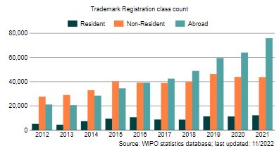
|
| 2011 | 665 | 3,300 | 2,222 | |
| 2012 | 604 | 3,338 | 2,617 | |
| 2013 | 724 | 3,493 | 5,077 | |
| 2014 | 830 | 3,753 | 3,550 | |
| 2015 | 780 | 3,743 | 2,817 | |
| 2016 | 644 | 3,972 | 2,717 | |
| 2017 | 592 | 4,318 | 3,507 | |
| 2018 | 342 | 3,705 | 6,112 | |
| 2019 | 392 | 4,377 | 4,760 | |
| 2020 | 394 | 3,172 | 7,830 | |
2011년부터 2020년까지 싱가포르에서 디자인 등록된 건수를 살피면 다음과 같음
| [표 17] 싱가포르의 디자인 등록건수 출처: WIPO | ||||
|---|---|---|---|---|
| 연도 | Resident | Non-Resident | Abroad |
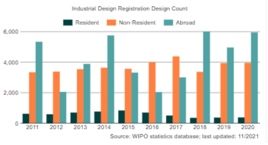
|
| 2011 | 613 | 3,331 | 5,328 | |
| 2012 | 581 | 3,377 | 2,044 | |
| 2013 | 687 | 3,532 | 3,879 | |
| 2014 | 758 | 3,626 | 5,744 | |
| 2015 | 826 | 3,554 | 3,305 | |
| 2016 | 687 | 3,983 | 2,028 | |
| 2017 | 494 | 4,368 | 2,992 | |
| 2018 | 347 | 3,357 | 6,001 | |
| 2019 | 361 | 3,934 | 4,955 | |
| 2020 | 370 | 3,948 | 5,940 | |
2. 주요제도
가. 디자인 제도
디자인은 산업 공정에 의하여 제품에 적용된 모양, 형상, 패턴 또는 장식의 특징을 말함. 여기서 물품은 디자인이 적용된 물체를 말함. 등록 디자인은 산업적 사용을 위한 디자인의 보호를 위하여 사용됨. 등록 디자인은 그 이용을 조절할 수 있도록 정부에 의하여 소유자에게 주어진 권리임
등록된 디자인에게 주어지는 권리는 싱가포르 전역에 걸쳐 효과를 가짐. 그 권리의 소유자는 타인이 자신의 동이 없이 그 디자인을 사용하는 것을 방지함. 싱가포르에서 디자인은 2차원적 또는 3차원적일 수 있으며, 모든 일상 제품에 적용할 수 있음
- 예를 들어, 핸드폰, 직물 패턴, 커피 테이블, 글자체, 헤어 브러쉬 등에 디자인이 적용될 수 있음
나. 디자인의 소유자
싱가포르에서 디자인의 출원은 디자인의 소유자만이 할 수 있음. 일반적으로 디자인의 창작자가 디자인의 소유자로 취급되나, 금전 또는 금전적 가치를 위한 위탁에 의해 디자인이 창작되었을 때에는 그 디자인을 위탁한 사람이 디자인의 소유자로 취급됨. 또한, 종업원이 고용 중에 디자인을 창작하였을 경우에는 그 종업원의 사용자가 디자인의 소유자로 취급됨. 인간인 창작자 없이 컴퓨터에 의해 창작된 디자인의 경우, 디자인의 창작에 필요한 준비를 한 사람이 창작자로 간주됨
한편, 디자인권 소유자의 지위도 양도 또는 이전될 수 있으며, 그 지위의 일부만을 양도 또는 이전하는 것도 유효함. 따라서, 디자인 또는 디자인을 물품에 적용하는 권리가 양도, 이전 또는 법의 작용에 의하여 다른 사람에게 부여되었을 경우 그 다른 사람이 디자인의 소유자로 취급됨
다. 등록 가능한 디자인
싱가포르에서 “디자인”은 공업적인 방법에 의하여 물품에 적용된 형상, 윤곽, 모양 또는 장식의 특징을 의미함. 다만, 다음의 것들은 디자인에 해당되지 않음
① 구조에 관한 방법 또는 원리
② 그 물품이 수행해야 하는 기능에 의하여만 영향을 받는 물품의 형상 또는 윤곽의 특징
③ 그 물품이 다른 물품과 함께 완성품을 형성하도록 창작자에 의하여 의도된 다른 물품의 외관에 종속되는 경우의 물품의 형상 또는 윤곽의 특징
④ 그 물품이 다른 물품에 연결되거나, 다른 물품의 내부, 주변 또는 다른 물품에 대향하여 배치되어 각 물품이 그 기능을 수행할 수 있는 경우의 물품의 형상 또는 윤곽의 특징
신규한 디자인은 싱가포르에서 등록 가능함. 디자인의 신규성에 대하여는 심사과정에서는 검토되지 않으나 등록 디자인의 취소 절차에서 문제가 됨. 다음에 해당하는 디자인은 신규성이 결여된 것으로 취급됨
① 이전 출원에서 동일 또는 다른 물품에 대하여 등록된 디자인
② 최초의 출원일 이전에 동일 또는 다른 물품에 대하여 싱가포르 또는 다른 장소에서 간행된 디자인 또는 이러한 디자인과 중요하지 않은 세부에 있어서만 다르거나 거래상 통상적으로 사용되는 변형 싱가포르에서는 예술작품에 대응하는 디자인도 예술작품의 저작권자에 의하거나 그의 동의를 얻어 출원되었을 경우에는 그 예술작품에 대한 선행 사용만을 이유로 신규하지 않은 것으로 취급되지 않음. 다만, 선행 사용이 예술작품에 대응하는 디자인 또는 그 디자인으로부터 약간의 변경이 가해진 디자인을 공업적으로 적용한 물품의 판매, 임대, 판매 또는 임대를 위한 제안 또는 진열한 경우, 그 사용이 저작권 소유자 또는 그의 동의를 얻어 행해졌을 때 그 디자인은 신규성이 결여된 것으로 취급됨
또한, 싱가포르에서는 디자인이 공개되더라도 일정한 경우에 해당하는 경우에는 비밀인 공개로 취급하여 등록이 가능하도록 하고 있음. 비밀인 공개에 해당하는 경우는 다음과 같음
① 제삼자에 의한 디자인의 사용 또는 간행이 선의에 반하는 것으로 여겨질 수 있는 상황에서 소유자가 그 제삼자에게 디자인을 공개하는 것
② 디자인의 소유자 이외의 제3자에 의해 선의에 반하여 행해진 디자인의 공개
③ 등록하는 것을 의도한 신규하거나 독창적인 직물의 디자인의 경우, 그 디자인이 적용된 상품에 대한 최초의 비밀 주문의 접수
④ 정부 부처 또는 청, 또는 정부 부처 또는 청에 의해 디자인의 가치를 검토하는 권한이 주어진 사람에게 소유자가 디자인을 전달하는 것 또는 그 전달의 결과 행해진 사항
⑤ 디자인 등록을 위한 출원이 박람회 개최 후 6월 이내에 되었을 때, 다음에 열거된 행위
ⓐ 디자인의 표시 또는 디자인이 적용된 물품이 디자인의 소유자의 동의를 얻어서 공식 국제 박람회에 전시된 것
ⓑ 그 전시 후 박람회 기간 동안, 디자인의 표시 또는 디자인이 적용된 물품이 소유자의 동의를 얻지 않고 다른 사람에 의하여 전시된 것
ⓒ 그 전시의 결과, 디자인의 표시가 간행된 것
또한, 디자인이 싱가포르에서 등록되기 위해서는 그 디자인이 어떠한 물품에 공업적 방법을 통하여 적용될 수 있어야 함. 즉, 50개 이상의 복제품이 판매 또는 임대를 목적으로 제작되었거나 제작되는 것을 의도하고 있어야 함
라. 등록할 수 없는 디자인
다음에 해당하는 디자인은 싱가포르에서 등록할 수 없음
① 공공질서 또는 도덕에 반하는 디자인
② 컴퓨터 프로그램 또는 집적회로 배치설계
③ 조각품(공업적 방법에 의해 복제하기 위한 모형 또는 원형으로 사용되거나 사용이 의도되는 주형 또는 모형을 제외함)에 적용되는 디자인
④ 기념 명판, 메달, 원형부조에 적용되는 디자인
⑤ 책의 커버, 달력, 증명서, 쿠폰, 인사 카드(greeting card), 라벨, 지도, 도면, 유희용 카드, 엽서, 우표, 상업광고, 업무용 서식 및 카드, 모사화 및 유사의 물품을 포함하는 주로 문학적 또는 예술적 성질의 인쇄물에 적용되는 디자인
한편, 다음에 열거되는 디자인은 등록은 가능하지만, 그 디자인의 등록 및 사용에 대하여 특정인의 동의가 필요하고, 그 동의가 등록관이 지정한 기간 내에 제출되지 않으면 거절되게 됨
① 국가, 거류지, 시, 자치도시, 도시, 지방, 모임, 법인, 정부조직, 법정위원회, 기관 또는 인물의 명칭, 머리 문장, 문장, 기장, 기사단 훈장, 훈장, 기 또는 도형의 표현이 등록 출원의 대상인 디자인에 나타난 경우(동의할 수 있는 권리를 가진다고 등록관이 인정하는 공무원 또는 기타인에 의한 동의가 필요)
② 사람의 명칭 또는 표현이 등록 출원의 대상인 디자인에 나타난 경우(해당 사람 또는 그 자가 사망한 경우 사망자의 법정 대리인의 동의가 필요)
마. 조약에 의해 인정되는 제도
싱가포르도 파리조약의 회원국이기 때문에 조약 우선권을 주장하여 디자인 등록 출원을 진행할 수 있음. 즉, ① 누군가 어떤 물품에 대하여 조약국에 디자인 등록을 위한 출원을 하였고, ② 그 출원이 해당 물품에 대한 조약국에서 최초의 디자인 등록을 위한 출원(제1조약 출원)이며, ③ 제1조약 출원일로부터 6개월 이내인 경우 그 사람 또는 정당 승계자는 제1조약 출원에서 등록을 요구한 물품의 전부 또는 일부에 대해 조약 우선권을 주장하며 싱가포르에 디자인 등록 출원을 할 수 있음
이러한 우선권 주장은 해당 출원의 신규성을 결정하는 시간적 기준을 제1조약 출원일로 소급하고, 제1조약 출원일과 싱가포르의 출원일 사이에 제1조약 출원이 간행되었다는 사실만에 의하여 해당 출원이 거절되거나 해당 출원에 따른 등록이 취소되지 않도록 하는 효과가 있음
조약 우선권 주장 출원을 제출하기 위해서는 출원서에 다음에 열거된 사항이 포함되어야 함
① 제1조약 출원이 제출된 조약국(복합 우선권을 주장하는 경우에는 우선권의 기초가 되는 출원이 제출된 모든 조약국)
② 제1조약 출원이 제출된 날짜(복합 우선권을 주장하는 경우에는 우선권의 기초가 되는 출원의 모든 출원일)
③ 디자인에 관계되는 물품의 분류
④ 우선권을 주장하는 물품
등록관은 다음에 열거된 사항이 포함된 증명서 및 해당 증명서가 영어로 작성되지 않은 경우 영어 번역문의 제출을 요구할 수 있음
① 제1조약 출원일(복합 우선권을 주장하는 경우에는 우선권의 기초가 되는 출원이 제출된 모든 출원일)
② 등록 기관 또는 관할 관청이 있는 나라 또는 지역
③ 디자인의 표시
④ 제1조약 출원에 포함된 물품(복합 우선권을 주장하는 경우에는 우선권의 기초가 되는 출원에 포함된 물품)
바. 특이 제도
(1) 국제 등록 출원
싱가포르는 헤이그 협정의 제네바법의 체약국이므로 싱가포르의 지식재산권청을 통하여 국제 등록 출원을 할 수 있음. 국제 등록 출원을 하고자 하는 자는 영어 또는 불어로 작성된 출원서를 국제사무국에 직접 제출할 수 있으나, 싱가포르 지식재산권청의 디자인 등록국을 통하여 출원하려고 하는 자는 모든 신청서, 출원서, 양식 및 통지서가 영어로 작성되어야 함
싱가포르를 지정국으로 지정한 국제 등록 출원은 다음과 같은 점을 주의해야 함
■ 디자인의 단일성
하나의 국제 등록 출원은 100개까지의 서로 다른 디자인을 포함할 수 있으며, 모든 디자인은 산업 디자인을 위한 로카르노 분류(Locarno Classification for Industrial Designs)상 동일한 류(Class)에 속해야 함. 만약 국제 등록 출원에서 싱가포르를 지정하였다면, 동일한 출원에 종속된 디자인들은 디자인의 단일성, 제작의 단일성, 또는 사용의 단일성의 요건을 만족하거나 물품들의 동일한 세트 또는 조합에 속하거나 하나의 독립적이고 특이한 디자인이 하나의 출원에서 청구되어야 한다는 점을 주의해야 함
만일 싱가포르를 지정국으로 지정한 국제 등록 출원이 디자인의 단일성 요건을 만족하지 않는다면 싱가포르 지식재산권청은 국제 사무국에 그 사실을 심사 단계에서 통지함. 그리고 출원인은 거절 이유를 극복하기 위하여 그의 출원을 분할할 것이 요구됨. 국제 등록 출원을 분할하는 신청은 지식재산권청의 통지가 있은 후 3개월 이내에 제출되어야 하며 분할된 출원은 국제 등록 출원과 동일한 출원일을 가짐
■ 공개의 연기
헤이그 협정의 제네바법 하에서는 국제 등록 출원의 공개가 출원일로부터 30개월까지 연기될 수 있음. 그런데 싱가포르는 공개의 연기 제도를 제공하고 있지 않으므로 국제 등록 출원이 싱가포르를 지정국으로 지정하였으며 출원인이 그 공개를 연기하고자 한다면 그는 싱가포르를 지정국으로부터 취소하여야 함
■ 지식재산권청의 디자인 공보에 공개
싱가포르를 지정국으로 지정한 국제 등록 출원은 “싱가포르를 지정한 국제 등록(International Registrations Designating Singapore)”이라는 별도의 섹션에 공개됨. 싱가포르의 국내 출원과는 달리, 그것들은 산업 디자인을 위한 로카르노 분류에서 표시한 바와 같은 물품들의 류 대신 국제 등록 번호에 따라 공개됨
(2) 실체 심사 배제
싱가포르에서 디자인 등록을 위하여 등록관은 소정의 방식 심사만을 행하게 됨. 따라서 등록관은 디자인 등록 출원을 수리할 것인가를 결정할 때, 그 디자인의 등록 가능성(예를 들어, 디자인의 신규성 등), 출원인이 주장한 우선권의 존재 여부, 출원에 디자인이 정확하게 표시되었는지 여부를 고려할 필요가 없음
(3) 예술작품에 대응하는 디자인의 등록
싱가포르에서는 예술작품에 대응하는 디자인도 예술작품의 저작권자에 의하거나 그의 동의를 얻어 출원되었을 경우에는 등록될 수 있음. 다만, 예술작품에 대응하는 디자인 또는 그 디자인으로부터 약간의 변경이 가해진 디자인이 공업적으로 적용되어 사용된 경우에는 등록되지 않음. 즉, 예술작품에 대응하는 디자인이 그 출원 전에 공업적으로 적용된 사실이 없다면 등록 가능함
(4) 후속 디자인의 등록
싱가포르에서는 어떠한 물품에 관해서 등록된 디자인의 등록 소유자가 ① 다른 물품에 관해서 등록된 디자인을 출원하거나, ② 동일하거나 다른 물품에 관해서 등록된 디자인의 특성을 바꾸거나 그 동일성에 영향을 주지 않을 정도의 변경을 가한 디자인을 출원하는 경우 등록을 받을 수 있음
다만, 후속 디자인의 존속 기간은 최초 디자인의 존속 기간 이상으로 연장되지 않음
또한, 등록된 디자인의 등록 소유자가 아니더라도, ① 다른 물품에 관해서 등록된 디자인을 출원하거나, ② 동일하거나 다른 물품에 관해서 등록된 디자인의 특성을 바꾸거나 그 동일성에 영향을 주지 않을 정도의 변경을 가한 디자인을 출원하는 경우로서 그 출원이 계류 중에 그 출원인이 등록된 디자인의 소유자가 되는 경우에는 후속 디자인을 등록 받을 수 있음
제2절 출원절차
1. 디자인 출원 절차
출원인은 싱가포르 지식재산권청의 홈페이지(www.ipos.gov.sg)의 eDesigns를 통하여 전자적으로 디자인 등록 출원을 할 수 있으며, 출원서 양식을 싱가포르 지식재산권청의 홈페이지로부터 다운받아(Forms and Payment>Design Forms) 필요한 기재를 한 후 싱가포르 지식재산권청에 (우편, 팩스 또는 직접) 제출할 수 있음. 출원서 양식(D3)에는 다음과 같은 사항을 기재하여야 함
① 복수 디자인 여부(가능한 경우)
만일 복수디자인을 하나의 출원에 포함시키는 경우 복수디자인 출원 여부에 체크를 해야 함. 각 디자인은 각 디자인 번호가 부여되며 수수료는 디자인 개수마다 200 싱가포르 달러를 지불해야 함
② 양식에 추가된 장수(가능한 경우)
만일 출원서 양식에 추가된 장수가 있다면 이를 기재하여야 함
③ 참조번호(선택 사항)
참조번호는 서신을 발송할 때 등록국이 사용함. 따라서, 사건의 정리를 위하여 필요한 경우 출원인이 기재할 수 있음
④ 디자인 번호(기재 불가)
디자인 번호는 디자인 등록국에서 출원을 승인하는 서신을 보낼 때 제공함. 출원을 승인하는 서신에는 출원에 대한 다른 상세 사항들이 포함됨
⑤ 분류(의무 사항)
등록 디자인 규칙의 부칙3에 따라 분류를 기재하여야 함. 이 때, 분류와 소분류를 함께 기재해야 함. 예를 들어, 손목 시계에 디자인을 출원하는 경우 “10-02”와 같이 분류를 기재해야 함
⑥ 물품들의 세트(가능한 경우)
물품들의 세트는 두 개 이상의 물품들이 세트로서 함께 사용하거나 함께 사용하는 것이 의도된 것을 말함. 그 물품들은 동일한 디자인 또는 그 특성을 변화시키거나 동질성에 영향을 주지 않을 정도의 변경이 된 디자인을 공유해야 함. 이러한 세트들의 예로는 “커트러리 세트(나이프, 포크, 숟가락 등)” 또는 “티 세트” 등이 있을 수 있음
⑦ 물품의 명칭(의무 사항)
디자인이 적용되는 물품의 명칭을 기재하여야 함. 예를 들어, “손목 시계” 또는 “자동차” 등이 있을 수 있음. 이 때, 일반적인 용어를 사용해야 하며 물품의 설명은 포함되지 않아야 함
⑧ 디자인에 대한 출원인의 권리(의무 사항)
출원인이 디자이너인 경우에는 디자이너임을 명시하면 됨. 만일 출원인이 디자이너가 아닌 경우에는 그 권리를 어떻게 얻게 되었는지를 기재하여야 함. 예를 들어, “디자이너는 출원인의 고용인임(The designer is an employee of the applicant)” 또는 “출원인이 그 디자인의 제작을 위탁하였음(The applicant commissioned the design” 등이 있을 수 있음
⑨ 출원인의 상세 사항(의무 사항)
출원인의 명칭, 전화 또는 팩스 번호(선택 사항이지만 출원에 대하여 급하게 연락을 취해야 하는 경우 유용함), 법인 또는 개인의 종류(의무 사항), 법인 또는 개인이 속한 국가(의무 사항) 등을 기재해야 함
⑩ 디자인의 표시 및 신규성에 대한 진술
디자인은 2차원이거나 3차원일 수 있으며 각 디자인은 디자인의 표시에서 그래픽적으로 나타나야 함. 디자인은 선으로 그린 도면이거나 사진일 수 있음
- 디자인의 표시는 13cm x 15cm로 제공된 공간에 붙여져야 하고, 하나의 세트의 표시만이 출원에 포함될 수 있으며, 하나의 출원에 포함될 수 있는 최대 표현의 수는 10개임
신규성에 대한 진술은 새로운 디자인의 특징을 기재함. 이러한 특징은 구성의 방법이나 기능적인 내용을 포함하지 않음
- 예를 들어, “표시에서 보이는 바와 같이 물품의 모양 및 형상에 신규성이 있음(The novelty resides in the shape and configuration of the articles as shown in the representation)” 또는 “신규성이 주장된 디자인의 특징은 표시에서 보이는 바와 같은 물품의 패턴과 장식임(The features of the design for which novelty is claimed are the pattern and ornament of the articles as shown in the representation)”과 같이 기재할 수 있음
직물, 벽지 또는 유사한 피복 재료, 레이스 등에 관한 디자인 등록 출원의 경우에는 신규성에 대한 진술을 생략할 수 있음
- 또한, 단어, 숫자 또는 디자인의 표시에 나타난 다른 특징들을 제외하기 위하여 디스클레이머가 사용될 수 있음. 디자인이 적용된 물품의 주요부에 단어, 문자, 상표 또는 숫자가 표시된 경우, 신규성의 진술은 “디자인에 나타난 단어, 문자, 상표 또는 숫자를 배타적으로 사용하는 권리를 요구하지 않음(No claim is made to any right to the exclusive use of the word, letters, trade mark or numerals appearing in the design)”라는 진술을 포함해야 함
⑪ 우선권 주장(가능한 경우)
파리 협약 또는 세계 무역 기구의 가입국에 디자인을 출원한 경우로서 그 출원일로부터 6개월 내에 싱가포르에 디자인 등록 출원을 하는 경우, 우선권을 주장해야 함
⑫ 관련 디자인(가능한 경우)
디자인법 제10조에 따라 어떤 물품에 대하여 등록된 디자인의 소유자가 다른 물품에 대하여 동일한 디자인을 등록하고자 하거나 동일 또는 다른 물품에 동일성을 유지할 정도로 변경된 디자인을 등록하고자 할 경우, 이전 출원 또는 등록 번호를 기재하여야 함. 만일 이전에 등록된 디자인의 소유자가 후속 디자인 등록 출원의 출원인과 다른 경우라면, 출원인에게 출원할 수 있는 권리가 주어진 증서 등을 상세하게 기재해야 함
⑬ 공개(가능한 경우)
디자인법 제8조를 적용받고자 하는 자는 비밀인 공개에 관한 진술을 하여야 함. 이러한 진술에는 출원과 관련하여 적용되는 동법 제8조의 규정, 공개된 날짜, 디자인의 공개가 이루어진 상황 등을 포함하여야 함. 또한, 동법 제8조 (2)가 적용된다고 주장하는 경우에는 박람회의 명칭, 개최일, 개최 장소 및 디자인의 최초 공개일이 기재되어야 함
⑭ 대리인의 명칭 및 주소
대리인을 선임한 경우에는 그 명칭 및 주소를 기재함
⑮ 선서
반드시 다음에 기재된 사람에 의하여 서명이 되어야 함
ⓐ 개인 출원의 경우, 그 개인
ⓑ 법인의 경우, 회상의 관리자 또는 비서
ⓒ 출원인이 승인한 대리인
2. 디자인 심사 절차
앞에서 언급한 바와 같이, 싱가포르에서 디자인 등록을 위한 출원은 싱가포르에 직접 출원하는 방안(국내 등록 출원)과 국제 등록 출원을 통하여 싱가포르를 지정하는 방안(국제 등록 출원)이 있음
가. 국내 등록 출원의 심사 절차
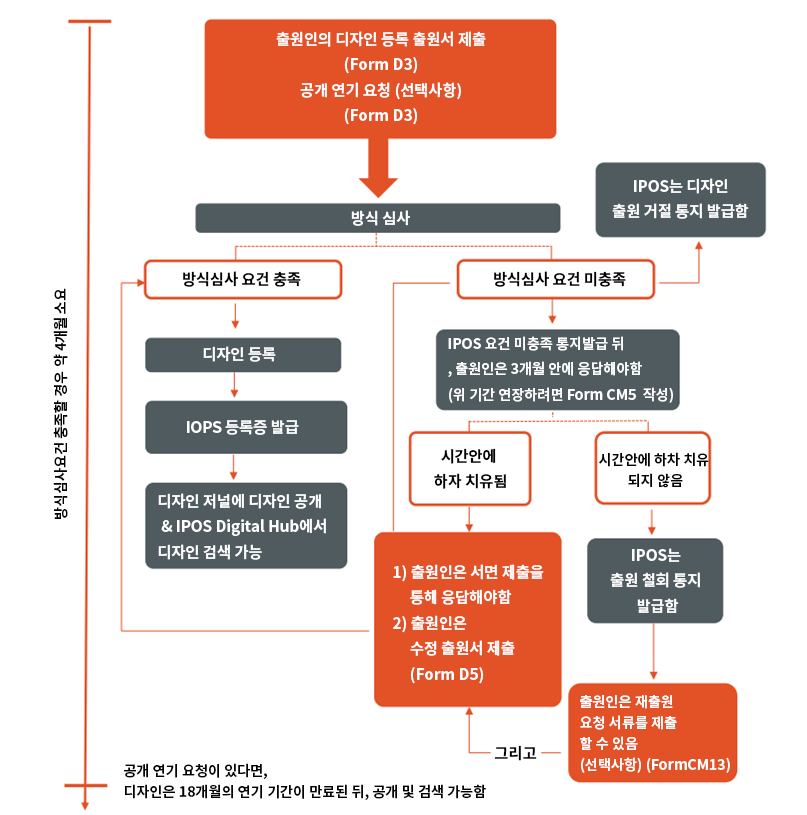
[그림5] 싱가포르 국내 등록 출원의 심사 절차 (출처 : IPOS)
[그림 5]에서 알 수 있듯이, 싱가포르의 지식재산권청에 국내 등록 출원의 출원서를 제출하면, 지식재산권청은 출원일 및 출원 번호를 지정하고 방식심사를 함. 방식 심사의 결과 흠결이 없으면 등록되고 흠결이 있으면 보정 또는 청문의 기회가 부여되며, 보정의 결과 흠결이 치유되면 등록되고 흠결이 치유되지 않으면 국내 등록 출원은 거절되게 됨. 출원에 흠결이 없다면 출원일로부터 2~3개월내에 국내 등록 출원은 등록되게 됨
① 방식 심사
방식 심사에서는 다음과 같은 요건이 충족되었는지가 심사됨
ⓐ 등록이 불가능한 디자인
ⓑ 특정인의 동의가 있어야 등록 가능한 디자인에 대하여 특정인의 동의를 얻었는지 여부
ⓒ 출원 양식(D3)에 의한 출원 여부
ⓓ 디자인의 표시가 제대로 되었는지 여부
ⓔ 신규성에 대한 진술이 제대로 되었는지 여부
ⓕ 비밀인 공개에 대한 진술이 제대로 되었는지 여부
ⓖ 후속 디자인 출원의 경우 이전 디자인 출원에 대한 진술이 제대로 되었는지 여부
ⓗ 우선권의 주장이 제대로 되었는지 여부
등록관은 방식 심사 결과 출원에 흠결이 있는 경우에는 그 취지를 출원인에게 통지하고 출원인에게 보정 또는 청문 등의 기회를 주어야 함
② 보정, 청문 등
등록관으로부터 방식 심사 결과 출원에 흠결이 있다고 통지를 받은 경우에는, 출원인이 그 송달일로부터 3개월 이내에 다음에 기재된 행위 중 하나를 하지 않으면 그 출원은 취하 간주됨. 3개월의 기간은 연장 가능함
ⓐ 등록관의 의견에 동의하지 않는다는 서면에 의한 진술
ⓑ 등록관에게 청문의 신청
ⓒ 흠결 사항을 치유하기 위한 보정의 신청
출원인이 보정을 신청하는 경우, 출원서에 실질적으로 공개되지 않은 사항을 포함하는 것에 의하여 출원의 범위가 증대된다고 판단되면 그 보정은 수리되지 않음
출원인이 청문을 신청하는 경우에는 등록관은 출원인에게 청문일을 통지하고, 출원인은 청문일로부터 최소한 14일 전에 등록관에게 서면에 의한 주장 및 증거 서류를 제출하여야 함
③ 등록 및 공고
국내 등록 출원이 방식 요건을 충족시킨다고 결정한 경우, 등록관은 소정의 상세 사항을 등록부에 기재해서 디자인을 등록하고, 정당한 디자인 소유자를 등록부에 기재하며, 디자인 소유자에게 등록증을 발행하고, 디자인의 표시를 소정의 방법으로 공고함
④ 항소
등록관의 거절 결정에 불복하는 자는 거절 결정의 통지를 받은 날로부터 1개월 이내에 법원에 항소할 수 있음
나. 국제 등록 출원의 심사 절차
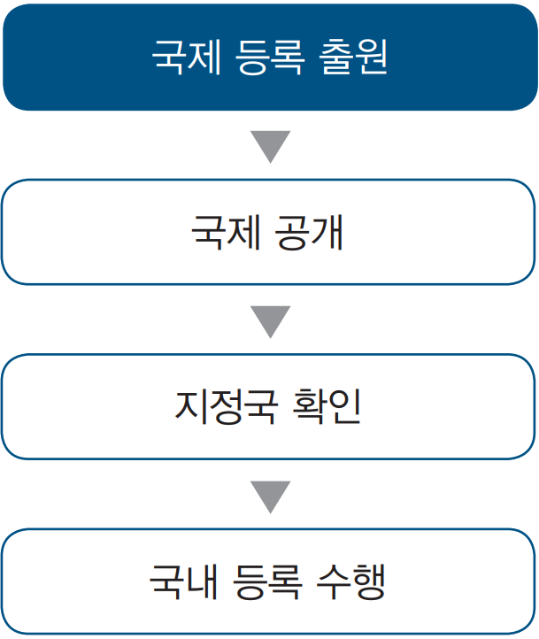
[그림 6] 국제 등록 출원의 심사 절차
[그림 6]에서 알 수 있듯이, 국제 등록 출원이 되면 국제 사무국에서 국제 공개를 하고 각 지정국에서는 자신의 국가가 지정국으로 지정되었는지를 확인한 후 국내 단계가 수행됨
① 국제 등록 출원
국제 등록 출원은 출원인이 국제 사무국에 직접 출원을 하거나 싱가포르의 지식재산권청을 통하여 출원할 수 있음. 싱가포르의 지식재산권청을 통한 출원의 경우, 지식재산권청이 국제 출원서와 필요한 수수료를 접수받은 날이 그 출원일이 됨(단, 접수 후 1개월 이내에 국제 사무국이 출원서류를 받은 경우여야 함).
② 국제 공개
국제 사무국은 국제 등록 출원이 있으면 그 상세 사항을 소정의 방법으로 국제 디자인 공보에 공개함
③ 지정국 확인
각 지정국은 국제 공개가 있으면 실체 심사에 관한 사항을 진행하기 위하여 그 지정국이 실제로 국제 등록으로 지정되었는지를 확인함
④ 국내 등록 수행
지정국으로 지정되었음이 확인되면 각 지정국의 특허청(지식재산권청)은 국제 공개일로부터 6개월 이내에 국제 사무국에 보호의 거절을 통지하여야 함. 6개월 이내에 거절이 통지되지 않으면 국제 등록 출원은 지정국에서 자동적으로 국제 등록으로 보호를 받게 됨
- 싱가포르의 경우 실체 심사를 진행하지 않기 때문에 디자인의 단일성을 만족하는지만을 검토하게 되고 디자인의 단일성을 만족하지 않는 경우에는 분할 출원이 요구됨
3. 이의/심판 절차
가. 취소 심판 청구자 및 청구 가능 기간
(1) 취소 심판을 청구할 수 있는 자
등록된 디자인의 취소 심판은 이해관계인이면 누구나 신청할 수 있음. 대표적인 이해관계인으로는 ① 침해 소송에서의 피고, ② 침해 소송의 근거 없는 협박에 대한 소송에서의 원고, ③ 비침해에 관한 선언의 신청자임. 동일 또는 유사한 제품을 판매하는 동종업자도 이러한 이해관계인에 포함됨
(2) 취소 심판을 청구할 수 있는 기간
등록된 디자인의 취소 심판은 디자인이 등록된 뒤에는 언제든지 가능함. 등록된 디자인이 취소되는 경우 몇몇 경우를 제외하고는 등록일로부터 취소된 것으로 효력이 발생하므로 등록된 디자인의 존속기간이 만료된 후에도 디자인의 취소 심판을 청구할 수 있음
나. 취소 심판 청구의 이유
디자인의 취소 심판을 청구할 수 있는 이유는 다음과 같음
- 디자인이 등록 시점에 신규하지 않았다는 점
- 디자인이 등록 시점에 저작권이 존재하는 예술 작품에 관한 대응하는 디자인이었고, 그 등록 디자인의 권리가 저작권의 만료로 만료되었다는 점
- 등록관이 디자인의 등록을 거절할 수 있었던 모든 이유(예를 들어, 등록 가능한 디자인이 아니라는 점, 우선권 주장에 흠결이 있었다는 점, 디자인의 표시가 제대로 되어 있지 않다는 점 등)
다. 관할 및 절차
등록된 디자인의 취소 심판은 등록관 또는 법원(고등법원)에 신청해야 함. 다만, 디자인과 관계되는 소송 절차가 법원에서 이미 개시되어 있을 경우에는 해당 디자인의 취소 청구는 그 법원에 하여야만 하고, 취소 심판 신청의 복사본을 디자인등록관에게 송달해야 함. 등록관에게 취소 심판을 신청하는 경우 그 절차는 다음과 같음
(1) 취소 심판의 신청
이해관계인은 D13 양식을 이용하여 등록관에게 신청서 및 진술서를 제출함. 진술서에는 취소 심판을 신청하게 된 이유가 기재되어야 함. 등록관은 신청서 및 진술서의 부분을 디자인의 등록 소유자에게 송부함
(2) 반대 진술서 제출
취소 청구에 대하여 이의를 주장하고자 하는 디자인의 등록 소유자는 등록관으로부터 신청서 및 진술서의 부본을 송달받은 날로부터 2개월 이내에 반대 진술서를 제출함. 디자인의 등록 소유자는 반대 진술서에서 자신의 디자인의 등록을 지지하기 위한 근거 및 취소 청구에서의 주장 중 시인하는 내용 등을 기술함. 등록 소유자는 반대 진술서를 등록관에게 제출함과 동시에 그 부본을 심판 청구인에게 송부함
(3) 증거의 제출
심판 청구인은 반대 진술서를 송부받은 날로부터 2개월 내에 취소 청구를 지지하기 위한 증거를 제출함. 또한, 등록 소유자는 심판 청구인으로부터 증거를 송부 받은 날로부터 2개월 이내에 반대 진술서를 지지하기 위한 증거를 제출해야 함. 그 후, 심판 청구인은 등록 소유자로부터 증거를 송부받은 날로부터 2개월 이내에 그 증거에 대하여 답변을 함. 이 때, 답변은 등록 소유자가 제시한 증거에 대한 사항만으로 한정됨
(4) 사전 심리
등록관은 당사자들이 증거의 제출을 완료한 후 언제든지 당사자들에 대하여 사전 심리에 참석하도록 지시할 수 있음. 사전 심리에서 등록관은 절차의 편리성 및 경제성을 위하여 필요한 지시를 할 수 있고, 사안의 일부 또는 전부의 화해 가능성을 검토할 수 있으며, 자신이 원하는 정보의 제출을 요구할 수 있음
(5) 청문
당사자들에 의한 증거의 제출이 완료되었을 경우, 등록관은 사건에 관한 당사자의 주장을 듣기 위한 청문일자를 당사자들에게 통지함. 그러면, 당사자는 청문일자로부터 적어도 1개월 전에 주장 사항 및 근거를 상세히 기재하여 제출하고 증언 및 증거를 제출하여 서로 교환함
(6) 심결 및 불복
등록관은 청문일자로부터 3개월 이내에 자신의 심결 및 그 근거를 당사자에게 통지함. 이러한 심결에 대하여 불복하는 당사자는 심결 송달일로부터 30일 이내에 항소법원에 불복할 수 있음
(7) 기타
등록 소유자 외에 취소 신청의 대상인 디자인에 대하여 이해관계를 가진다고 주장하는 자는 등록관에게 서면으로 참가 신청을 할 수 있다. 이 경우, 등록관은 당사자의 의견을 들은 후 참가 신청을 허락하거나 거절할 수 있음
- 등록관에게 디자인 등록 취소 심판이 청구된 경우, 등록관은 언제든지 해당 심판 청구를 법원에 맡길 수 있음. 이 경우, 등록관은 취소 심판 청구인 및 등록 소유자에게 심판 청구를 법원에 맡겼다는 취지를 송부하여야 함
[그림 7] 취소 심판 절차
제3절 등록 및 활용
1. 등록 및 유지
가. 등록부에 등록 및 공고
등록관은 디자인 등록 출원이 방식 요건을 충족시킨다고 결정했을 경우, 소정의 사항을 등록부에 기재하여 디자인을 등록하고, 디자인의 소유자에게 등록증을 발행하며, 등록의 통지 및 디자인의 표시를 공고함
등록부에 기재되는 사항은 ① 등록일, ② 우선일, ③ 소유자의 명칭, 주소 및 서류 송달을 위한 주소, ④ 디자인이 등록된 물품 및 분류번호, ⑤ 등록번호, ⑥ 디자인의 표시, ⑦ 디자인에 관한 신규성의 진술, ⑧ 디자인에 영향을 주는 디자인법 제34조에 근거한 거래의 상세 사항 등임. 기재사항 중 디자인에 영향을 주는 거래의 상세 사항은 그 거래에 의해 이익을 받거나 영향을 받는다고 주장하는 사람의 신청에 의하여 등록되는데, 등록 가능한 거래에는 다음과 같은 것이 있음
① 등록 디자인 또는 그 권리의 양도
② 등록 디자인의 사용을 위한 라이센스 또는 서브 라이센스의 부여
③ 등록 디자인 또는 그 권리에 대한 담보권
④ 등록 디자인 또는 그 권리에 관련되는 인격 대표자에 의한 동의
⑤ 등록 디자인 또는 그 권리의 이전을 명하는 법원 또는 다른 관할 당국의 명령
한편, 이러한 등록 가능한 거래는 그 등록에 의하여 효력이 발생함. 즉, 해당 거래가 등록되기 전까지 그 거래가 없는 것으로 취급하여 이익을 받는 사람에 대하여 무효이며, 등록되기 전까지 침해에 관한 손해 배상 또는 이익의 반환을 받을 수 없음
나. 디자인의 존속기간 및 연장
싱가포르에서 디자인의 등록일은 디자인 등록 출원이 제출된 날임. 즉, 출원일로 등록일이 소급됨. 따라서, 디자인의 등록을 위한 출원일로부터 디자인이 실제로 등록된 날까지 임시적 보호가 아닌 등록 디자인과 동일한 보호가 주어지며, 등록 디자인과 동일하게 이전·양도 및 라이센스를 부여할 수 있음
- 디자인의 존속기간은 그 등록일로부터 5년이며 5년씩 연장할 수 있음. 다만, 그 등록일로부터 15년을 초과하여 연장되지는 않음
등록관은 디자인 등록의 만료일 전 6월부터 1월까지 등록의 만료가 임박한다는 사실 및 그 등록의 연장 방법을 서면으로 등록 소유자에게 통지함. 등록 소유자는 디자인 등록의 만료일 전 6월부터 디자인 등록의 만료일 후 6월까지 디자인 등록 기간의 연장을 신청할 수 있음. 다만, 디자인 등록의 만료일 후 6월까지는 소정의 추가 수수료를 납부하여야 하나, 지연 등록에 따른 불이익은 추가 수수료의 납부를 제외하고는 없음. 즉, 지연 기간 동안 소유자 또는 그의 동의를 얻어서 디자인권과 관련되어 행하여진 사항은 유효한 것으로 취급되고, 지연 기간 동안 디자인의 침해를 구성할 행위는 침해로 취급됨
한편, 예술 작품에 대응하는 디자인은 그 존속기간이 남아 있는 경우라도, 해당 예술 작품에 부여된 저작권이 만료되는 경우 해당 디자인의 존속기간도 만료함
2. 효력
가. 디자인의 일반적 효력
디자인의 등록 소유자는 등록된 디자인 또는 그것과 실질적으로 다르지 않는 디자인이 적용된 물품을 판매, 임대, 거래 또는 사업의 목적에 사용하기 위해 싱가포르에서 제조하거나, 싱가포르로 수입하거나, 싱가포르에서 판매, 임대 또는 판매 또는 임대를 위한 제안 또는 진열을 할 권리를 독점함
따라서, 유효한 디자인에 대하여 등록 소유자의 동의 없이 다음의 행위를 하는 사람은 침해를 구성함
① 등록된 디자인 또는 그것과 실질적으로 다르지 않은 디자인이 적용된 물품을 판매, 임대, 거래 또는 사업의 목적에 사용하기 위해 싱가포르에서 제조하거나, 싱가포르로 수입하거나, 싱가포르에서 판매, 임대, 또는 판매 또는 임대를 위한 제안 또는 진열하는 것
② ①에 언급된 물품을 싱가포르 또는 다른 장소에서 제조할 수 있도록 하는 물건을 제조하는 것
③ 조립된 물품에 대하여 그 디자인의 침해를 구성할 키트를 판매, 임대, 거래 또는 사업의 목적에 사용하기 위해 싱가포르에서 제조하거나, 싱가포르로 수입하거나, 싱가포르에서 판매, 임대, 또는 판매 또는 임대를 위한 제안 또는 진열하는 것
④ 조립된 물품이 ①에 언급된 물품인 경우, 키트를 싱가포르 또는 다른 장소에서 제조 또는 조립할 수 있도록 하기 위하여 어떠한 행위를 하는 것
등록 디자인의 소유자는 자신의 등록 디자인을 침해하는 사람에 대하여 소송을 제기할 수 있으며, 법원은 금지 명령을 내리고 소유자를 위해 손해 배상 또는 부당이득반환을 인정할 수 있음. 단, 등록 디자인의 소유권자는 그 등록일까지는 침해에 대한 소송을 제기할 수 없음
하나의 디자인에 2명 이상의 등록 소유자가 있을 경우 소유자들 각각이 디자인 침해에 대한 소송을 제기할 수 있음. 또한, 등록 디자인의 배타적 실시권자도 그 등록 후에 침해가 발생한 경우, 침해에 대한 소송을 제기할 수 있음. 이 경우, 법원은 배타적 실시권자가 입거나 입을 가능성이 있는 손실만을 인정함
법원은 등록 디자인의 소유자 또는 배타적 실시권자가 제기하는 침해 소송에서 피고에게 침해 물품을 원고에게 인도하도록 명할 수 있으며, 인도 후 처분 명령을 내릴 수 있음
- 등록된 디자인 또는 그 권리는 기본적으로 개인의 재산이므로, 양도 또는 이전할 수 있으며, 라이센스 및 그 라이센스의 범위 내에서 서브 라이센스를 부여할 수 있음. 이러한 라이센스 및 서브 라이센스도 양도 또는 이전할 수 있음. 디자인 또는 그 권리의 양도, 또는 등록 디자인 또는 그 권리에 관한 동의는 양도인 또는 그 인격 대표자가 서면으로 서명하였을 경우에만 유효함
나. 디자인의 공유
등록 디자인에 복수의 등록 소유자가 있을 경우 소유자 각각은 디자인의 권리에 대하여 균등하고 분할할 수 없는 지분을 소유함. 복수의 등록 소유자는 다른 등록 소유자의 동의 없이 스스로 또는 대리인을 통하여 등록 디자인을 사용할 수 있음. 다만, 등록 소유자 누구도 다른 등록 소유자의 동의 없이 디자인의 사용을 위한 라이센스를 부여하거나 그 권리를 양도할 수 없음
복수의 등록 소유자 각각은 등록 디자인의 침해에 대하여 소송을 제기할 수 있음. 이 경우, 나머지 등록 소유자는 해당 소송의 당사자가 되지만, 나머지 등록 소유자 중 1인이 피고인 경우 그 소송에 참가하지 않는 한 경비 또는 비용 부담의 의무를 지지 않음
- 한편, 공유인 등록 디자인의 사용 및 처분에 대하여 위와 다른 약정을 하는 것도 유효함
다. 디자인의 효력 제한
등록 디자인의 소유자는 등록된 디자인을 사용할 권리를 독점하므로 타인이 등록 소유자의 동의 없이 등록된 디자인을 사용하는 경우 침해를 구성하게 되나, 다음과 같은 경우에는 디자인의 효력이 제한되게 됨
① 사적 또는 연구를 위한 사용
사적이고 비상업적인 목적으로 등록 디자인을 사용하거나, 평가, 분석, 연구 또는 강의의 목적에서 등록 디자인을 사용하는 것은 등록 디자인의 침해를 구성하지 않음
② 디자인의 기능적인 부분의 복제
등록된 디자인에 기능적인 형상 또는 윤곽의 특징이 포함되어 있으며, 그러한 기능적인 형상 또는 윤곽의 특징을 복제하는 것은 디자인의 침해를 구성하지 않음
③ 선사용권에 의한 효력 제한
디자인의 등록 전에 선의로 디자인을 사용하거나 사용을 위한 준비를 한 사람은 디자인의 등록 후에도 그 디자인을 계속하여 사용할 권리를 가짐
④ 정부의 사용에 의한 효력 제한
싱가포르의 안전 또는 방위를 위하거나, 민간방위법에 근거한 비상 사태 또는 민간방위의 비상 사태 중 권한의 행사 및 민간방위 조치의 실시를 지원하기 위하거나, 공공의 비영리적인 사용을 위하여 정부 및 정부에 의하여 서면으로 허락을 받은 사람은 어떠한 등록 디자인도 사용할 수 있음. 이 경우, 정부 및 정부에 의하여 서면으로 허락을 받은 사람은 그 실시에 대하여 적절한 보상을 하여야 함
⑤ 선의의 사용자에 대한 효력 제한
침해 소송에서 디자인이 등록된 것을 알지 못하고 디자인이 등록되었다고 추측할 만한 합리적인 이유가 없었던 사람은 손해 배상 또는 이익의 반환을 하지 않음
3. 활용
가. 사용자의 허락에 의한 라이센스
일반적으로 라이센스는 등록 디자인의 소유자에 의한 허락에 의하여 부여됨. 라이센스가 제3자에게 효력을 가지기 위해서는 등록부에 등록되어야 함. 이러한 라이센스에는 일반적 라이센스와 배타적 라이센스가 있음
- 일반적 라이센스는 우리나라의 통상실시권과 유사하게 등록 디자인을 사용할 수 있는 권리만을 가지게 됨. 따라서, 등록 소유자 및 다른 실시권자 이외의 제3자가 등록 디자인을 사용하더라도 침해 소송을 제기할 수 없음
- 배타적 라이센스는 우리나라의 전용실시권과 유사하게 허락을 받은 사용 범위 내에서 배타적 실시권자만이 등록 디자인을 사용할 수 있음. 따라서, 등록 소유자도 배타적 라이센스의 범위 내에서는 등록 디자인을 사용할 수 없음. 또한, 배타적 실시권자는 타인(등록 소유자 포함)이 배타적 라이센스의 범위 내에서 등록 디자인을 사용하는 것에 대하여 침해 소송을 제기할 수 있음
한편, 일반적 라이센스와 배타적 라이센스 모두 등록 소유자의 허락 없이 타인에게 양도 또는 이전할 수 있으며, 그 라이센스의 범위 내에서 서브 라이센스를 설정할 수 있음
나. 선사용에 의한 라이센스
싱가포르에서도 우리나라와 유사하게 선사용에 의하여 그 디자인을 계속하여 사용할 권리가 주어짐. 즉, 디자인의 등록 전에 선의로 싱가포르에서 그 디자인을 사용하거나 그 디자인의 사용을 위하여 실질적이고 진지한 준비를 한 사람은 디자인의 등록 후에도 그 디자인을 사용할 권리를 갖게 됨. 이러한 선사용에 의한 라이센스는 디자인의 사용에 따른 보상을 등록 소유자에게 할 필요가 없음
- 사업을 하는 동안 선사용에 의한 라이센스를 획득한 경우에는 그 사업을 하는 동안 그의 파트너들이 디자인을 사용하는 것을 허락할 수 있고, 그 사업의 해당 부분을 취득한 사람에게 해당 권리를 양도하거나 사망 또는 법인의 해산시 이전할 수도 있음
- 한편, 선사용에 의한 라이센스만을 제3자에게 부여할 수 없으며 해당 사업과 함께 양도할 수 있음
다. 강제 라이센스
디자인과 관련하여 싱가포르에서는 별 다른 강제 라이센스에 관한 규정이 없음. 다만, 싱가포르의 방위, 비상 사태 또는 공공의 비영리적인 사용을 위해서 정부 또는 정부의 허가를 받은 사람이 정부의 역무를 위해 등록 디자인을 사용할 수 있도록 규정하고 있음
제4절 비용
1. 출원, 심사 비용
| [표 18] 싱가포르 디자인 출원, 심사비용 | |||||
|---|---|---|---|---|---|
| 항목 | 수수료 S$ | ||||
|
디자인법 제11조에 근거하는 디자인등록출원
(a) 전자 온라인 시스템에 의하여 제출할 경우 (b) 전자 온라인 시스템 이외의 방식에 의해 제출할 경우 |
디자인마다
(a) S$250 (b) S$270 |
||||
|
디자인법 제15조에 근거하는 디자인등록출원의 보정 신청(전자 온라인 시스템에 의해 제출할 경우)
(a) 문자만에 관한 보정 (b) 표시만 또는 표시 및 문자에 관한 보정 |
(a) S$40 (b) S$45 |
||||
|
디자인법 제15조에 근거하는 디자인등록출원의 보정 신청(전자 온라인 시스템 이외의 방식에 의해 제출할 경우)
(a) 문자만에 관한 보정 (b) 표시만 또는 표시 및 문자에 관한 보정 |
(a) S$50
(b) S$55 |
||||
|
디자인법 제57조에 근거한 등록부의 오기의 정정을 요구하는 신청(전자 온라인 시스템에 의해 제출할 경우)
(a) 문자만에 관한 정정 (b) 표시만 또는 표시 및 문자에 관한 정정 |
(a) S$40
(b) S$45 |
||||
|
디자인법 제57조에 근거한 등록부의 오기의 정정을 요구하는 신청(전자 온라인 시스템 이외의 방식에 의해 제출할 경우)
(a) 문자만에 관한 정정 (b) 표시만 또는 표시 및 문자에 관한 정정 |
(a) S$50
(b) S$55 |
||||
2. 등록. 연차료
| [표 19] 싱가포르 디자인 등록료/연차료 | |||||
|---|---|---|---|---|---|
| 항목 | 수수료 S$ | ||||
|
최초의 5년간
(a) 전자 온라인 시스템에 의해 제출할 경우 (b) 전자 온라인 시스템 이외의 방식에 의해 제출할 경우 |
(a) S$200
(b) S$220 |
||||
|
두 번째 5년간
(a) 전자 온라인 시스템에 의해 제출할 경우 (b) 전자 온라인 시스템 이외의 방식에 의해 제출할 경우 |
(a) S$300
(b) S$330 |
||||
|
세 번째 5년간
(a) 전자 온라인 시스템에 의해 제출할 경우 (b) 전자 온라인 시스템 이외의 방식에 의해 제출할 경우 |
(a) S$400
(b) S$440 |
||||
|
네 번째 5년간
(a) 전자 온라인 시스템에 의해 제출할 경우 (b) 전자 온라인 시스템 이외의 방식에 의해 제출할 경우 |
(a) S$500
(b) S$550 |
||||
PARTV 상표
제1절 출원현황 통계
1. 통계 및 동향
2005년부터 2009년까지 싱가포르에서 상표 출원 건수를 살펴보면 아래의 표와 같음
| [표 20] 싱가포르의 상표 출원건수 출처: WIPO | ||||
|---|---|---|---|---|
| 연도 | Resident | Non-Resident | Abroad |

|
| 2011 | 6,530 | 28,467 | 29,965 | |
| 2012 | 7,002 | 30,222 | 23,275 | |
| 2013 | 7,578 | 30,859 | 31,728 | |
| 2014 | 9,104 | 32,675 | 33,954 | |
| 2015 | 8,458 | 33,556 | 35,857 | |
| 2016 | 9,721 | 35,474 | 46,743 | |
| 2017 | 10,608 | 37,984 | 43,391 | |
| 2018 | 11,496 | 41,403 | 60,512 | |
| 2019 | 11,121 | 42,167 | 63,678 | |
| 2020 | 12,805 | 39,433 | 65,244 | |
2011년부터 2020년까지 싱가포르에서 상표 등록된 건수를 살피면 다음과 같음
| [표 21] 싱가포르의 상표 등록건수 출처: WIPO | ||||
|---|---|---|---|---|
| 연도 | Resident | Non-Resident | Abroad |
|
| 2011 | 4,187 | 25,592 | 27,211 | |
| 2012 | 4,993 | 27,553 | 21,011 | |
| 2013 | 4,362 | 28,849 | 20,493 | |
| 2014 | 7,220 | 32,905 | 28,326 | |
| 2015 | 9,230 | 40,119 | 34,342 | |
| 2016 | 10,449 | 39,104 | 38,995 | |
| 2017 | 8,605 | 38,798 | 42,342 | |
| 2018 | 8,537 | 39,783 | 48,739 | |
| 2019 | 11,193 | 46,149 | 59,409 | |
| 2020 | 11,098 | 43,845 | 63,932 | |
2. 주요제도
가. 상표의 종류
일반적인 상표 및 영업을 나타내는 영업표장 외에 특수한 기능을 하는 상표로, 증명 표장, 단체 표장이 있음
「증명 표장」은 ‘재료, 상품의 제조 방법 또는 서비스의 제공 방법, 품질, 정밀도 기타의 특징에 관해서 증명 표장의 소유자가 증명하는 것으로서, 업으로 취급 또는 제공되었지만 증명되지 않고 있는 기타의 상품 또는 서비스와 구별하기 위해서 사용하거나 사용하기 위한 표장’을 의미함
「단체표장」이란, 단체의 구성원이 업으로서 취급 또는 제공하는 상품 또는 서비스에 관해서, 당해 상품 또는 서비스, 단체의 구성원이 아닌 사람이 취급 또는 제공하는 상품 또는 서비스를 구별하기 위해서 사용되는 또는 사용하기 위한 표장을 말함
우리나라와 달리, 싱가포르에는 연속 상표 등록제도가 있음. 연속상표란, ‘상표를 구성하는 특징들이 서류 닮아 있어, 상표의 동일성에 실질적으로 영향을 주지 않는 식별력이 없는 부분에 관해서만 다른 복수의 상표’를 말함. 연속상표에 대하여 1출원이 가능함
나. 상품 및 서비스업의 지정
싱가포르는 국제 NICE 분류에 따른 상품 및 서비스업을 분류하고 이에 근거하여 1개 이상의 상품 및 서비스업을 지정하도록 하고 있음
다. 상표 등록 요건
(1) 절대적 등록요건
다음에 해당하는 상표는 등록을 받을 수 없음
(a) 제2조 (1)의 상표의 정의를 만족하지 못하는 표장
(b) 식별력이 없는 상표
(c) 거래에 있어서 상품 또는 서비스의 종류, 품질, 수량, 용도, 가격, 원산지, 제조시기 또는 기타 다른 특징들을 나타내는 표장 또는 표지만으로 구성된 상표
(d) 거래 관습상 현재 언어 또는 실제로 관행이 된 독점적인 표장 또는 표지만으로 구성된 상표(다만, 상표등록 출원 이전에, 상표를 사용한 결과, 식별력을 실제로 취득했을 경우는, 상표는 (b), (c) 또는 (d)에 의해 등록이 거절되지 않음.)
(e) 표장이 다음에 열거된 것만으로 구성된 경우에는 상표로서 등록받을 수 없음
• 상품자체의 성질에 기인하는 형상
• 기술적 효과를 얻기 위해서 필요한 상품의 형상
• 상품에 실질적인 가치를 주는 형상
(f) 공서양속 또는 도덕에 어긋날 경우
(g) 공중을 기만하는 등의 성질인 것
(예를 들면, 상품이나 서비스의 성질, 품질 또는 지리적 원산지에 관하여)
(h) 상표의 사용이 싱가포르에 있어서 성문법 또는 규칙에 의해 금지된 경우
(i) 상표의 출원이 악의로 행해졌을 경우
(j) 상표가 체약국 나라의 국장 등(제56조) 및 일정한 국제기관의 기장 등 (제57조)으로 구성되어 있거나, 포함하고 있는 경우
(k) 장관은, 상표 등록을 받을 수 없는 경우 또는 일정한 조건을 만족하지 않는 경우, 등록 받을 수 없는 경우를 특별히 정하는 규칙을 제정할 수 있으며 등록이 제정된 규칙에 어긋나는 경우
한편, (C)의 경우에, 상표를 사용하여 식별력을 취득한 경우라 하더라도, 상표가 포도주 또는 증류주에 관한 지리적 표시를 포함하거나 이것으로 구성되어 있는 경우로서, 지리적 표시가 나타내는 장소가 원산지가 아닌 포도주 또는 증류주에 대하여 사용되고 있거나 또는 사용할 의도가 있는 경우에는, 상표는 등록 받을 수 없음. 이는 표지가 포도주 또는 증류주의 진정한 원산지를 나타내거나 「종류」, 「형」, 「양식」, 「모조품」 등의 표현이 수반되거나 포함하는지 여부를 불문하며 또한 지리적 표시가 당해 상표에 있어서 표현된 언어와 관계없이 적용됨. 다만, 상표등록출원이 (a) 1999년 1월 15일전, 또는 (b)당해 지리적 표시가 그 원산지 국가에 있어서 보호되기 전에 선의에 의하거나, 출원인 또는 그 전 소유자가 상표를 선의로 거래상에 계속적으로 사용되어온 경우에는 등록 받을 수 있음. 또한, 당해 지리적 표시가 그 원산지 국가에 있어서, (a) 보호되지 않게 되었을 경우, 또는 (b) 폐기 되었을 경우에도 등록이 거절되지 않음
(2) 상대적 등록요건
다음에 해당하는 경우에도 상표 출원은 등록 받을 수 없음
(a) 상표가 선원상표와 상표가 동일하고, 그 상표가 등록을 받고자 하는 상품 또는 서비스가 선원상표의 상품 또는 서비스와 동일한 경우
(b) 상표가 선원상표와 동일하고, 선원상표의 보호의 대상인 상품 또는 서비스와 유사하는 상품 또는 서비스에 대해서 등록 받고자 하는 경우
(c) 상표가 선원상표와 유사하고, 선원상표의 보호의 대상인 상품 또는 서비스와 동일 또는 유사의상품 또는 서비스에 대해서 등록 받고자 하는 경우
(d) 상표가 선원상표와 유사하고, 선원상표의 보호의 대상인 상품 또는 서비스와는 유사하지 않은 상품 또는 서비스에 대해 등록 받고자 하는 후원상표로서
i. 상표등록 출원이 2004년 7월 1일 전에 행해지고
ii. 선원상표가 싱가포르에서 주지하며
iii. 등록 받고자 하는 상품 또는 서비스에 관한 후원상표의 사용이, 선원상표의 소유자와 상품 또는 서비스와의 관계를 나타내는 경우로
iv. 이러한 사용이 공중에 출처의 혼동을 생기게 할 우려가 있는 경우 및
v. 선원상표 소유자의 이익을 손상시킬 우려가 있는 경우
(e) 2004년7월1일 또는 그 이후에 제출된 등록 출원에 있어서, 상표의 전체 또는 그 중요한 부분이 선원상표와 동일 또는 유사할 경우로서 다음에 해당하는 경우
i. 선원상표가 싱가포르에 있어서 주지하고
ii. 후원상표가 등록 받고자하는 상품 또는 서비스에 대한 사용이 다음에 해당하는 경우
① 선원상표의 소유자와 그의 상품 또는 서비스간의 관계를 내보일 수 있고, 또한 선원상표의 소유자의 이익을 손상시킬 우려가 있거나
② 선원상표가 싱가포르의 대부분에서 공중에 주지한 경우에는,
(ㄱ) 부정한 방법으로 선원상표의 식별력을 희석시키거나, 또는
(ㄴ) 선원상표의 식별력을 부정하게 이용하려는 경우.
다만, 상표등록 출원이 선원상표가 싱가포르에서 주지되기 전에 제출되었을 경우에는, 그 출원이 악의에 의한 것이 아닌 한 거절되지 않음. 악의에 의한 것인지 아닌 지는 당해출원인이 출원시에 선원상표의 존재를 알고 있었는지 또는 그렇게 믿을 이유가 있었는지 여부를 고려하여 판단함
(f) 싱가포르에서 상표의 사용이 다음의 이유로 금지된 경우
i. 미등록상표 또는 상거래상 사용되는 기타의 표장을 보호하는 법률 (특히 허위표시에 관한 법률)의 규정에 의한 경우
ii. (a), (b), (c), (d) 및 (ⅰ)의 선원상표가 특히 저작권법 및 디자인보호법에 의한 경우
이 경우, 상표의 사용을 방지할 수 있는 자는 본법에 의한 상표의 선원권리자임
다만, 등록관이 선원상표의 소유자나 다른 선원 권리의 소유자가 동의한 경우, 그의 재량으로 상표를 등록시킬 수 있음. 또한, 등록관은 선원상표 또는 다른 선원권리의 소유자가 법 제13조에 따른 이의신청을 하지 않은 경우 재량으로, (d), (e), (f)의 상표를 등록시킬 수 있음
법 제2조 제1항 제a호에 정의된 ‘선원상표’로 그 등록이 만료하는 상표는 만료 후 1년간 후원상표의 등록 가능성을 결정할 때까지 계속되어 고려함. 다만, 등록관이 만료 직전 2년간 그 표장의 선의의 사용이 없었던 것으로 인정한 경우에는 그러하지 않음
라. 정당한 동시 사용의 주장
상표등록출원시에 상표법 제8조 제1항, 제2항, 제3항 (상대적 거절이유 (a)~(d)) 또는 제7항(상표가 포도주 또는 증류주에 관한 지리적 표시를 원산지가 아닌 포도주 또는 증류주에 사용하고 있는 경우)에 해당하는 경우라도, 출원인이 등록관에게 상표등록출원한 상표를 싱가포르에서 업으로서 정당한 동시사용을 해왔음을 소명한 경우에는, 선원상표권 또는 선원권리의 소유자에 의한 이의신청이 제기되지 않는 한 선원상표 또는 선원 권리가 존재한다는 이유로 등록을 거절할 수 없음
- 이는 상표법 제7조의 절대적 거절이유에 의하여 거절된 경우 또는 상표법 제23조 제3항에 의해 무효가 선언된 출원에 대해 영향을 미치지 않음
마. 조약 우선권 주장 출원
체약국에서 특정 상품 또는 서비스를 지정하여 상표등록출원한 경우, 그 출원인 또는 승계인은 그 체약국 중에서 최초로 출원한 날부터 6월 이내에, 최초 출원한 상품 또는 서비스의 전부 또는 일부에 대하여 조약우선권주장 출원할 수 있음. 조약우선권주장출원이 인정되면 우선권 주장 출원에 대한 등록가능성을 판단함에 있어 체약국에 최초 출원한 날에 출원한 것으로 봄
한편, 싱가포르에서는 장관이 명령에 의해, 정부가 상호보호를 위한 조약, 협정, 규정 또는 합의를 체결하고 있는 나라 또는 지역에 있어서 상표등록출원을 한 사람에 대하여, 동일한 상품 또는 서비스의 일부 또는 전부에 대하여 당해 출원일부터 일정한 기간동안 우선권을 부여할 수 있음
사. 특이 제도
(1) 동의서(Consent) 제도
상표법에는 ‘동의서’에 대해 규정하고 있진 않지만, 동의서의 제출이 인정됨. 즉, 타인의 상표와 동일하거나 유사한 경우라 할지라도, 그 타인의 동의서를 받으면 등록이 가능함. 다만, 동의서가 제출된 경우라도, 혼동을 일으킬 만큼 유사한 경우와 제 5류의 약품명칭과 같이 공익상 위험하다고 판단되는 경우에는 동의서를 수리하지 않을 수 있음. 동의서는 영문으로 작성하고, 상표권자의 서명을 받아 상표등록국에 제출하여야 함
(2) 권리불요구(Disclaimer) 제도
상표법에 규정되어 있지는 않지만, 권리불요구제도가 채용되고 있음. 이는 원칙적으로 출원인의 의사에 의한 것이지만, 심사관에게서 상표의 일부를 구성하고 있는 어떤 단어에 대해서는 등록이 인정되지 않는다고 지식된 경우에 있어서, 등록을 받기 위하여 출원인은 등록에 장애가 되는 단어에 대하여 권리불요구(일부포기)를 할 수 있음
(3) 정보제공
공고 전의 미심사의 상표출원에 대하여, 제3자가 심사관에 대하여 정보제공을 할 수 없고, 공고 후 이의신청할 수 있을 때까지 기다려야 함
제2절 출원 및 심사절차
1. 상표 출원 절차
가. 일반적인 출원 절차
상표등록을 위한 출원 절차는 다음과 같음
[그림 7] 상표 출원 절차 흐름도
상표를 출원하고자 하는 자는 양식 TM445에 의한 상표출원서 및 수수료를 온라인( http://www.ipos.gov.sg)으로 송부하거나 직접 싱가포르 지식재산권청에 제출해야 함. 수수료는 류당 S$280임. 등록국에 제출하는 서류는 원칙적으로 영어로 제출하여야 하며, 영어가 아닌 서류는 서류의 영어 번역문을 제출해야 함
출원서에는 ⅰ) 상표등록을 받고자하는 취지, ⅱ) 출원인의 명칭 및 주소, ⅲ) 명확한 상표의 표시, ⅳ) 국제분류에 의해 분류되는 등록받고자 하는 상품 또는 서비스표, ⅴ)그 밖에 상표가 업으로서 출원인 또는 그의 동의를 얻은 자에 의해 상품 또는 서비스에 대해서 사용되고 있거나 사용할 의사에 대한 취지, 또는 (ii) 출원인이, 상표가 그렇게 사용된다라고 하는 것에 대해 선의인 사실을 기재해야 함. 3차원 상표 및 색채 상표는 그 취지를 출원서에 기재하여야 함
지정상품의 기재에 있어서, 포괄명칭의 기재는 인정되지 않음. 즉, 국제분류표의 클래스 머리에 표시된 것을 출원한 경우에는 포괄적이라고 판단함. 따라서 어떤 범위의 모든 상품 또는 서비스를 지정하고 있는 경우, 또는 광범위하게 걸쳐있는 상품 또는 서비스를 지정하고 있는 경우, 그 상표가 사용되고 있거나 사용이 예정되는 상품 또는 서비스에 해당하지 않는다고 판단되어 거절됨
싱가포르의 대리인을 반드시 지명해야 하는 것은 아니나, 서류가 송달되어야 할 싱가포르내의 주소는 반드시 기재되어야 함
상표등록출원이 출원서 기재방법을 만족하지 않거나 수수료를 납부하지 않은 경우에, 등록관은 그 취지를 출원인에게 통지하고 보정을 명함. 출원인은 통지일부터 2월 이내에 보정하여야 함. 보정하지 않는 경우 출원은 취하한 것으로 간주함
조약 우선권을 주장하는 경우에는, 우선권주장의 기초가 되는 원출원의 출원국 및 출원년월일(복수개의 출원에 대한 우선권 주장인 경우에는 각각 기재)과 2 이상의 우선권 출원이 있는 경우 관련되는 지정상품의 표시를 하여야 함. 등록관은 언제든지 출원인에게 우선권주장의 기초가 되는 원출원에 대한 증명서를 제출하도록 할 수 있음
나. 상표 등록 분할 출원
2007년 7월 2일 이후에 출원된 상표등록출원의 경우에 출원인의 청구에 의하여 출원일 후 등록되기 전까지 언제든지 양식 TM854에 의한 출원서를 제출하여 상표등록출원을 2 이상의 출원으로 분할할 수 있음. 분할하고자 하는 출원이 2 이상인 경우에는 각각 신청하여야 하며 각각의 상품을 특정하는 명세서를 각각 제출하여야 함. 각 추가 출원마다 USD 280의 수수료를 지불해야 함
다. 국제 출원
싱가포르를 본국관청으로 하는 국제출원은 국제출원을 할 수 있는 자에 의하여, 영어로 출원이 가능함. 국제등록출원이 있으면, 등록관은 국제사무국에 이를 통지함. 국제등록일부터 5년 기간 만료전에 등록관이 국제등록 대상 상품 또는 서비스의 일부 또는 전부에 대하여 기초 출원의 허가를 거절한 경우, 기초 출원의 허가 있었으나, 그 후에 생긴 사정에 의하여 기초 출원의 허가를 거절한 경우에는 국제등록도 취소됨. 국제등록출원의 경우 분할 출원을 할 수 없음
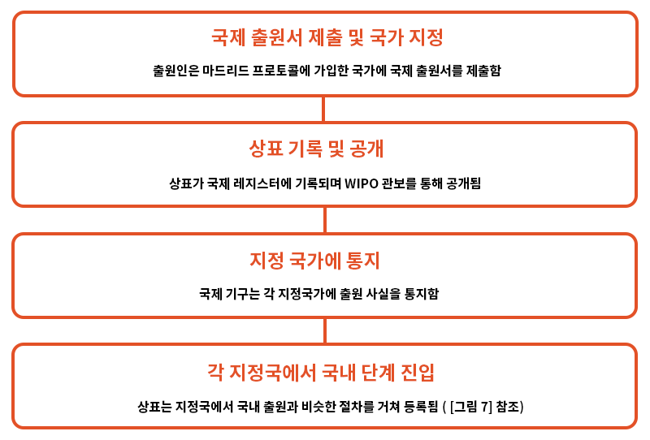[그림 ] 마드리드 국체 출원 흐름도
라. 국제등록으로부터 국내 출원으로의 변경
싱가포르를 지정한 국제등록이 등록에 기재된 상품 또는 서비스의 전부 또는 일분에 대하여 마드리드 의정서 제6조 제4항에 근거하여 본국관청의 청구에 의해 취소된 경우 ⅰ)국제등록이 취소된 날부터 3월 이내 취소된 상품 또는 서비스의 전부 또는 일부에 대하여 국제등록 상표와 동일한 상표에 대해 싱가포르에서 출원(변경출원)이 있으며, ⅱ)그 출원이 그 국제등록 명의인에 의한 것인 경우 국내출원으로 변경 할 수 있음
마. 국내등록상표가 있는 경우 국제상표등록출원의 효과
국제상표등록출원시에 국내 상표등록이 있는 경우로, 등록상표의 소유자가 국제상표등록 명의인인 경우, 등록상표가 등록된 모든 상품 또는 서비스가 국제상표등록에 포함되어 있는 경우, 등록상표의 등록일이 국제상표등록일 후에 발생하였을 경우에는 국내등록일에 상표법에 의해 등록된 것으로 봄. 이는 등록상표가 소멸하거나 취소된 경우에도 적용됨. 다만 무효가 선언된 경우에는 그러하지 않음. 국제상표등록명의인이 양식 MP2에 의해 국내등록으로의 대체를 신청한 경우 등록관은 등록부에 국제등록이 국내등록상표로 변경된 취지를 등록부에 표시함
2. 상표 심사 절차
싱가포르에서는 조기 심사제도는 존재하지 않으며, 출원으로부터 최종심사 결과가 나오기까지 약 6개월에서 18개월이 소요됨
가. 방식 심사
상표출원이 있으면, 등록관은 출원서에 대한 방식심사를 진행함. 출원서의 기재에 불비가 있거나 수수료를 납부하지 않은 경우 출원인에게 이를 통지하고 2월 이내의 기간을 주어 보정하도록 함. 출원인이 이를 보정하지 않은 경우 출원은 취하한 것으로 봄
나. 등록가능성 심사
등록관은 선행상표의 조사를 실시하여 출원상표가 선원상표와 저촉되는 등 부등록 사유에 해당하는 경우 출원인에게 기간을 정하여 의견서 제출 또는 보정할 수 있는 기회를 줌. 출원인이 그 기간 내에 보정하거나 의견서를 제출하였음에도 거절이유가 해소되지 않는 경우에는 등록관은 상표 출원을 거절함. 그러나 출원인이 기간 내에 아무런 의견서도 제출하지 않은 경우에는 그 출원은 취하한 것으로 봄. 우리나라의 경우에는 의견서를 제출하지 않은 경우에는 거절결정을 하므로 이점에서 차이가 있음
등록관은 심사과정에서 등록요건을 충족시키기 위하여, 관계 정보 및 증거를 추가할 필요가 있다고 인정하는 경우, 이 취지의 통지를 서면으로 출원인에게 함. 등록관의 서면통지일부터 4월 이내에 출원인이 ⅰ)서면에 의한 의견 진술, ⅱ)등록관에의 심리 신청, ⅲ)출원의 보정 신청, ⅳ)보충하는 정보 또는 증거의 제공이 없는 경우 등록관은 출원을 취하한 것으로 간주함. 심리를 신청한 경우, 출원인은 등록관에게 심리일전 늦어도 14일전까지 진술서 및 증거자료를 제출해야 함. 서면 또는 심리로 행해진 출원인 의견에 대한 등록관의 결정은 서면으로 출원인에게 통지되며, 출원인이 이에 불복을 희망하는 경우, 결정일부터 1월 이내에 양식 TM7에 의해 결정의 이유를 진술하도록 청구할 수 있음. 등록관은 청구일부터 2월이내에 결정 이유를 출원인에게 송부해야 함. 등록관의 결정이유가 출원인에게 송부된 날을 상소 시 등록관의 결정일로 봄
다. 출원의 취하, 보정
출원인은 언제든지 자신의 출원을 취하 할 수 있고, 지정상품 또는 서비스를 한정할 수 있음. 지정상품 또는 서비스를 한정하는 보정이외의 보정은 지정상품 또는 서비스를 확장시키지 않는 범위 내에서 ⅰ)출원인의 명칭 또는 주소, ⅱ) 문구나 복제의 오류, ⅲ) 명백한 오기의 정정에 한에서만 할 수 있음
- 이미 공고된 등록출원의 보정의 경우, 그 보정이 상표 또는 상품 및 서비스에 영향이 있는 경우에는 보정의 효과에 대한 진술도 공고함. 출원인의 보정에 대해서도 보정 또는 보정의 효과 진술 공고일부터 2월 이내에 등록관에게 이의신청이 가능함
국제등록의 경우, 보정 사유와 양식은 다음과 같음
| [표 20] 국제 등록의 보정 사유 및 양식 | |||||
|---|---|---|---|---|---|
| 보정 | 국제제도에 근거하는 소정의 서식 (마드리드·프로토콜 제10조) |
||||
| 소유권의 변경 등록 청구 | MM5 (E) | ||||
| 상품 및 서비스의 리스트에 대한 제한의 등록 청구 | MM6 (E) | ||||
| 소권자의 성명 및 / 또는 주소의 변경 등록 청구 | MM9 (E) | ||||
| 대리인성명 및 / 또는 주소의 변경 등록 청구 | MM10 (E) | ||||
라. 공고
등록관은 상표출원에 등록장애사유가 없는 경우 상표출원등록을 인가(Accept)해야 하며, 이를 상표공보에 공고함. 등록이 다른 상표 소유자 또는 출원인의 서면에 의한 동의를 전제로 인가된 경우에는, ‘동의에 의한’이라는 단어 및 그 해당 표장의 번호를 공고에 게재함 - 이미 공고된 출원을 보정하는 경우로, 그 보정으로 상표 또는 지정상품 및 서비스업에 영향이 있는 경우에는 그 보정도 공고함
마. 상표의 등록
공고 후 2월간 이의신청이 없거나, 모든 이의신청절차가 취하, 또는 이유 없다고 결정되었을 경우 등록관은 상표를 등록함. 등록부에는 ⅰ) 출원일, ⅱ) 등록일, ⅲ) 우선권 주장을 한 경우 우선일, ⅳ) 권리자의 명칭 및 주소, ⅴ) 서류 송달받을 주소, ⅵ) 등록관에게 통지된 권리 일부의 포기 또는 제한, ⅶ) TM46 양식으로 등록관에게 통지된 상표에 관한 각서, ⅷ) 지정상품 또는 서비스업, ⅸ) 단체표장 또는 증명표장일 경우 그 취지, ⅹ) 상표가 선원상표의 소유자 등의 동의를 얻어 등록된 경우 그 사실,xi) 상표가 변경 출원에 의해 등록된 경우, 그 국제등록번호, 국제등록일을 기재함
그 외, 권리가 일부 포기 또는 제한된 경우 그에 관한 사항도 기재함
3. 이의/심판 절차
가. 이의신청
상표출원 출원공고일부터 2개월이내에는 누구든지 등록관에게 상표등록에 대한 이의신청이 가능함. 이의신청의 이유 등을 기재한 TM11에 의한 이의신청서를 등록관에게 제출하여야 함. 이의신청이 있는 경우 절차는 다음과 같음. 각 법정기간에 대한 기간연장신청이 가능하며, 기한 연장신청을 하기 전에 출원인 및 기간연장에 영향을 받을 우려가 있는 모든 사람에게 기간 연장의 통지를 송달하여야 함
① [출원공고일부터 2개월이내] 이의신청인의 이의신청
② [부본송달받은 날부터 2개월이내] 출원인 답변서 제출 ->제출 없으면 취하간주
③ [부본송달받은 날부터 2개월이내] 이의신청인 이의신청 증거를 제시하는 법정선언서 제출 -> 제출 없으면 이의신청 철회 간주
④ [부본송달받은 날부터 2개월이내] 출원인의 주장에 대한 증거를 제시하는 법정선언서 제출 -> 제출 없으면 출원 취하간주
⑤ [부본송달받은 날부터 2개월이내] 반대증거를 제시하는 법정선언서 제출
⑥ 사전 심리
⑦ 심리
⑧ [심리일부터 3개월 이내] 이의신청에 대한 결정 통지
이의신청서에는 이의신청의 이유를 진술하여야 함. 이의신청서에는 이의신청 대상 상표가 선원상표와 동일 유사하다고 주장하는 경우에는 ⅰ) 선원상표의 표시, ⅱ) 선원상표의 등록번호 또는 출원번호, ⅲ) 선원상표의 상품 또는 서비스업을 기재하여야 함. 이의신청 대상상표가 싱가포르에서 주지한 상표의 경우에는, ⅰ) 선원상표의 사용에 관한 정보, ⅱ) 선원상표에 대한 어떤 선전 정보를 포함하여야 함
당사자들이 증거의 제출을 완료한 후 언제든지 등록관은 당사자들에게 사전심리에 참석하도록 지시할 수 있음. 사전심리에서는 일부 또는 전부의 화해가능성을 검토 할 수 있으며, 등록관이 필요한 정보를 제공하도록 요구할 수 있음
당사자들이 증거의 제출을 완료되었을 때 등록관은 심리기일을 통지함. 당사자들은 심리기일 전 늦어도 1개월 전까지, 서면의 제출물 및 증거서류를 등록관에게 제출하고 동시에 서로 이를 교환함. 심리에 참석하고자 하는 자는 양식 TM13을 등록관에게 제출함
심리를 통하여 이의신청에 이유가 없는 경우 등록관은 상표출원에 대해 등록결정을 하고 등록증을 부여함
나. 취소심판
(1) 취소심판청구 절차
등록된 상품 또는 서비스에 관하여, 누구든지 등록관 또는 법원 중 어느 쪽에 대해서나 양식 TM28에 의해 취소심판 청구가 가능함. 취소심판이 청구되면, 등록관은 상표권자에게 서류의 부본을 송달하고, 상표권자는 서류를 송달받은 날부터 2월이내에 답변서 (TM12)에 의한 답변서를 제출할 수 있음
(2) 취소 사유
(a) 상표권자 또는 사용의 동의를 얻은 자가 등록상표를 등록된 상품 또는 서비스에 대하여 등록일부터 5년 동안 정당한 이유 없이 싱가포르에서 업으로서 진정하게 사용하고 있지 않은 경우 (b) 등록상표의 사용이 정당한 이유 없이 5년 동안 중단된 경우
(c) 상표권자의 작위 또는 부작위에 의하여 당해 상표가 등록된 상품 또는 서비스에 대하여 보통명칭이 되었을 경우
(d) 상표권자 또는 그의 동의를 얻어 사용한 결과, 당해 상품 또는 서비스의 성질, 품질 또는 원산지에 대하여 공중을 오인시킬 우려가 있는 경우
이와 관련하여, (a)의 경우에, 등록상표의 사용은 등록된 상표의 식별력 있는 부분을 변경하지 않는 한에서 다른 형식으로 사용하는 것을 포함하며, 싱가포르에서의 사용은 수출만을 목적으로 해서 싱가포르에서 상품 또는 상품의 포장이나 라벨에 상품을 부착하는 행위도 포함함. 또한, (a), (b)의 경우 5년의 불사용 기간이 충족되었다고 하더라도 취소심판청구가 있기 전에 그 사용이 재개되었을 경우에는 취소되지 않음. 다만, 5년의 불사용 기간을 충족한 후이나 취소심판 청구전 3월 이내에 등록상표의 사용이 재개된 경우에는 상표권자가 취소심판이 제기될 사실을 안 경우에는 해당하지 않음
(3) 취소심판청구의 효과
취소심판청구에 의하여 등록상표가 등록된 상품 또는 서비스의 일부에 대하여 취소의 이유가 존재하는 경우에는 해당하는 상품 또는 서비스에 한하여 취소됨. 이 경우 취소심판 청구일 또는 등록관이나 법원이 취소심판 청구일보다 취소사유가 더 먼저 존재한다고 인정한 경우에는 그날의 다음날부터 상표권의 효력이 소멸하는 것으로 봄
다. 무효심판
(1) 무효심판 청구 절차
누구든지 무효심판을 청구할 수 있으며, 등록관이나 법원 둘 중 어느 쪽에나 심판 청구가 가능함. 다만, ⅰ) 당해 상표에 관한 절차가 법원에 계속 중인 경우에는 법원에 대하여 청구하여야 하며, ⅱ) 등록관에 대해 청구한 경우라도 등록관은 언제든지 법원에 회부할 수 있음
(2) 무효 사유
등록상표가 상표법 제7조 즉, 절대적 부등록사유에 해당함에도 불구하고 등록된 경우 무효를 선언할 수 있음. 다만, ① 식별력이 없는 상표, ②성질표시 상표, ③관용표장의 경우에는 상표를 사용한 결과 등록된 상품 또는 서비스에 대하여 식별력을 얻은 경우에는 무효 되지 않음. 상표가 포도주나 증류주에 관한 지리적 표시를 포함하고 있음을 이유로 하는 무효심판 청구는 등록절차가 완료된 다음날 또는 상표등록출원인 또는 그 전소유자에 의하여 상표가 사용된 날 또는 일반적으로 싱가포르에서 알려진 날 중 빠른 날의 다음날부터 5년이 경과한 후에는 제기할 수 없음. 다만, 상표등록이 악의에 의해 출원된 것임을 등록관에게 납득시킨 경우에는 그러하지 않음
상표법 제 8조의 상대적 부등록 사유 (a) 내지 (f) 에 해당하는 경우에도 무효시킬 수 있음. 다만 (f)의 경우에는 선원상표 또는 타 권리의 소유자가 동의한 경우에는 무효사유에 해당하지 않음
- 또한, 상표등록이 사기 또는 허위표시에 의하여 등록된 경우에도 무효시킬 수 있음
라. 묵인의 효과
등록상표와 저촉되는 선원상표의 소유자 또는 기타권리의 소유자가 싱가포르에서 업으로서 등록상표를 사용하고 있는 사실을 알면서도 계속하여 5년에 걸쳐 묵인한 경우에는, 무효심판, 이의신청할 수 있는 권리를 상실함. 다만 등록상표가 악의에 의한 경우에는 그러하지 아니함
제3절 등록 및 활용
1. 등록 및 유지
상표권은 상표등록일부터 10년간 존속함. 상표권 존속기간 갱신등록은 존속기간 만료전 6월 이내에 소정의 갱신 수수료를 내고 갱신청구가 가능함. 존속기간 만료 후에는 지연 갱신 수수료를 납부하고 존속기간 만료 후 6월 이내에 상표권자의 청구에 의해 갱신청구가 가능함
- 등록상표에 대한 등록부 변경은 불가능하나, 상표권자의 청구에 의하여, 상표권자의 명칭 또는 주소의 변경을 상표의 동일성에 실질적인 영향이 없는 한에서 변경이 가능함. 다만, 이에 대하여 당해 변경에 영향을 받은 자는 이의를 제기할 수 있음
2. 효력
상표권은 인적 재산으로 등록상표의 소유권자는 등록된 상표를 지정상품 또는 서비스에 사용할 권리(독점권), 타인에게 그 상표의 사용을 허락할 권리(배타권)를 가짐
상표권자의 동의 없이 제3자가 등록상표와 동일 유사한 표장을 등록된 상품 또는 서비스업과 동일 또는 유사한 상품 또는 서비스업에 대해 사용할 경우 등록상표를 침해하는 것으로 봄. 침해에 대한 소송은 상표가 실제 등록된 날 이후에 진행이 가능함. 상표권의 일부가 포기 또는 제한된 경우에는 그 포기 또는 제한된 범위내에서 상표권이 제한됨
또한, 저명한 등록상표의 경우 ⅰ) 상표권자의 동의 없이, 등록상표와 동일 또는 유사한 상표를 등록된 상품 또는 서비스업과 유사하지 않은 상품 또는 서비스업에 대하여 없으로서 사용하고 있는 경우로, ⅱ) 그 사용이 등록상표권자와의 관계를 나타내는 경우, ⅲ) 당해 사용으로 공중에 혼동을 일으킬 우려가 존재하는 경우, ⅳ) 당해 사용에 의해 당해 소유자의 이익이 손상될 우려가 있는 경우에도 상표권의 침해에 해당하는 것으로 봄
침해에 해당하는 상표의 사용에는 ⅰ) 상품 또는 그 포장에 상표를 사용하는 경우,ⅱ) 상표를 부착한 상품을 판매용으로 제공하거나 진열, 표장을 사용하여 서비스를 제공하는 행위, ⅲ) 표장을 부착한 상품을 수입, 수출하는 경우, ⅳ) 운송장, 카탈로그, 영업문서, 가격표 등의 상업서류에 표장을 사용하는 경우, ⅴ)광고에 사용하는 경우도 포함함. 다만, 상품 라벨 표시 또는 포장에 사용하거나 사용하기 위한 재료, 상업서류 또는 광고 문서에 표장을 사용하는 경우, 표장의 사용 시점에 등록상표의 소유자 또는 사용권자가 그 표장의 사용에 대해 동의하지 않을 것을 모르거나 그렇게 믿을만한 사정이 있는 경우, 그 표장을 사용한 것으로 보지 않음
가. 상표권 침해에 해당하지 않는 행위
형식적으로 상기 상표권의 침해에 해당하는 행위라 하더라도 ⅰ) 자신의 명칭 또는 사업소의 명칭, ⅱ) 자신의 사업의 전 소유자의 명칭 또는 그의 사업소의 명칭, ⅲ) 상품 또는 서비스의 종류, 품질, 수량, 용도, 가격, 원산지 또는 기타 성질, ⅳ) 상품의 제조시기 또는 서비스의 제공 시기 등을 나타내기 위하여 사용하는 경우, ⅴ) 자신의 상품 또는 서비스의 용도를 나타내기 위하여 상표를 이용하는 경우로 선량한 관행에 따라 사용하는 경우에는 상표권을 침해하지 않는 것으로 봄
등록상표와 동일 유사한 상품 또는 서비스에 대하여, 등록상표와 동일 또는 유사한 미등록 상표의 사용하고 있는 경우로, 사용하고 있는 자 또는 그 전사용자가 등록상표의 등록일 또는 등록상표의 소유자, 전소유자, 혹은 폐지법에 근거해 상표의 등록사용권자이었던 사람이 당해 등록상표를 최초로 사용한 날 중 빠른 날 이전에 미등록상표의 사용을 시작한 경우에도 등록상표의 상표권을 침해하지 않은 것으로 봄
또한, 등록상표의 사용이 ⅰ) 상업적 광고 또는 판매촉진에 있어서 정당한 사용인 경우, ⅱ) 비상업적 목적에 있어서 사용인 경우, ⅲ) 보도 또는 시사 해설을 목적으로 하는 사용인 경우에도 상표권을 침해하지 않는 것으로 봄
등록상표권자의 명시 또는 묵시의 동의를 얻어서 그 상표를 싱가포르의 국내 또는 외국의 시장에 판매한 상품에 대하여 상표를 사용하는 경우 상표권자의 권리가 소진된 것으로 보아 침해가 성립하지 않음. 다만, 시장에 상품을 판매한 후에 상품의 상태가 변화 또는 손상되고, 사용된 상표가 등록상표의 식별성이 있는 특징을 부당한 방법으로 손상시킨 경우에는 권리가 소진되지 않음
- 상표권자가 독점권을 포기하거나 특정 지역 또는 일부 지정상품에 대해 타인에게 사용권을 부여한 경우 그 한도 내에서 상표권이 제한되므로 침해가 성립하지 않음
나. 침해에 대한 구제
상표권의 침해가 성립하면 상표권자는 민사적 소송 및 형사상의 소송을 제기할 수 있음. 민사적 조치로, 침해가 성립하는 경우 ⅰ) 금지명령, ⅱ) 손해 배상, ⅲ) 부당이익반환, ⅳ) 법정손해배상명령의 구제를 받을 수 있음. ⅱ),ⅲ),ⅳ)의 구제는 상호 배타적임. 모조상품을 사용함으로써 상표권 침해가 성립하는 경우 상표권자는 ⅰ) 손해배상 및 당해배상에 산입되지 않고 있었던 침해에 기인하는 이익의 반환, ⅱ) 이익의 반환, ⅲ) 법정손해배상 중 하나를 선택할 수 있음
- 법원은 침해가 성립하는 경우 위반 표장의 소거 등의 명령, 침해상품, 재료 또는 물품의 인도를 추구 또는 처분에 관한 명령도 할 수 있음. 또한, 등록상표의 침해에 대하여 일정한 경우 소송절차를 제기하는 것에 위협하는 경우 피해자가 그 위협에 대한 구제 절차를 신청할 수 있음
- 또한, 형사적 조치로, ⅰ)상표의 위조자(상표법 제46조), ⅱ)등록상표의 허위사용자(상표법 제47조), ⅲ)형법 위반에 사용되는 물품의 제조 또는 소지자(상표법 제48조), ⅳ)허위상표를 붙인 상품의 거래자(상표법 제49조), ⅴ)국장 또는 국기 등의 상표 사용자(상표법 제52조)에 대하여 형사 고발이 가능함
3. 활용
가. 상표권의 공유
상표권이 공유의 형태로 소유하는 경우, 별도의 합의가 없는 한 등록상표권에 대해 동등한 권리를 소유함. 상표권을 공유하는 자는 별도의 합의가 없는 한 자신의 이익을 위하여 다른 공유자의 동의 없이 등록상표의 침해에 대한 행위를 할 수 있음. 또한, 다른 공유자의 동의 없이, ⅰ) 라이센스 부여, ⅱ)자신의 지분을 양도 또는 위탁할 수 있음
나. 상표권의 양도 등
등록상표는 다른 인적재산 또는 동산과 동일한 방법으로 상표권의 전부 또는 일부를 영업과 함께 또는 독립하여 양도 및 이전, 위탁할 수 있음
다. 실시권
(1) 실시권 일반
상표권자는 등록상표를 사용할 수 있는 라이센스를 포괄적 또는 제한적으로 제3자에게 부여할 수 있음. 특히, 상표가 등록된 상품 또는 서비스의 전부가 아닌 일부에 대해 라이센스를 부여할 수 있음. 라이센스는 사용을 허락한 자 또는 그 대리인이 서명한 서면에 의하지 않으면 유효하지 않음
- 실시권을 부여함에 있어서 상표권자를 포함한 모든 사람의 사용을 배제하는 권한을 부여하는 경우 이를 독점적 실시권자라 함. 실시권 허락 부여는 ⅰ) 재무적 위험부담을 덜어주고, ⅱ)브랜드의 이미지를 강화시키며, ⅲ) 지식소유권의 신용을 강화하고, ⅳ)상표권 보호를 강화시키는 점에서 이점이 있음
- 실시권 허락의 등록은 강제적인 것은 아니나, 등록신청이 있기 전까지는 ⅰ) 이하의 실시권자에게 부여되는 권리를 누릴 수 없으며, ⅱ) 사용 허략 계약의 존재를 모르고 그와 상반되는 이익을 획득한 사람에 대해 대항할 수 없으며, ⅲ) 등록신청일까지 발생하는 해당등록상표의 침해에 대한 손해 배상 또는 부당이득반환을 받을 권리를 가지지 못함
(2) 실시권자에게 부여되는 권리
실시권자는 등록상표의 침해에 관하여 자신에게 영향을 미치는 사항에 관하여 침해소송을 제기하도록 등록상표권자에게 요구할 권리를 소유함. 만약 상표권자가 이를 거부하거나 요구 후 2월 이내에 소를 제기하지 않은 경우, 실시권자는 자신의 명의로 소송을 제기할 수 있음. 실시권자가 소송을 제기한 경우에는 실시권자는 법원의 허가없이 소송을 진척시킬 수 없지만, 상표권자가 원고 또는 피고로서 참가하는 경우에는 소송을 진행할 수 있음. 실시권자는 자신의 이름으로 단독으로 중간적 구제 청구가 가능함
한편, 독점적 실시권자는 그에게 부여된 범위 내에서 상표권자 이외의 자에 대하여 자신의 명의로 침해소송을 제기할 수 있음. 다만, 전용사용권자가 가지는 권리 및 구제 조치가, 해당 등록상표권자의 권리 및 구제조치와 병존하는 경우에는 상표권자를 원고 또는 피고로서 참가시켜야 함. 독점 실시권자는 계약에 의하여 정해진 바 있으면, 재사용의 허락(서브 라이센스)을 부여할 수 있음
(3) 법정 실시권
등록상표의 등록일 또는 그 등록상표의 최초 사용일 중 빠른 날보다 먼저 제3자가 등록상표와 동일하거나 유사한 상표를 사용하고 있었던 경우에는 선사용권을 가지며 등록상표권의 침해에 해당하지 않음
(4) 강제 실시권
상표권에 대한 강제 실시권제도는 없음
제4절 비용
1. 출원, 심사 비용
| [표 21] 싱가포르 상표 출원 및 심사 비용 | |
|---|---|
| 항목 | 수수료 S$ |
| 상표, 단체상표 또는 증명 표장의 등록 출원 | S$310×상품류마다 (온라인제출시) |
| 상표 출원 보정서 또는 등록상표권리자에 의한 해당등록 상표에 관계되는 등록부의 오기 탈루의 수정 신청 | S$40 (온라인 제출시) |
| 등록 출원 또는 등록부에 있어서의 사람의 명칭 또는 기타의 사항 (거래의 성질을 제외한다)을 변경하는 신청 | S$20 (온라인 제출시) |
|
상표등록 또는 등록부의 기록의 말소에 대한 이의신청
(a)공고된 상표등록 출원의 보정이 상표의 표시, 또는 출원시 지정한 상품 또는 서비스에 영향을 주는 경우 (b)상표, 단체상표 또는 증명 표장의 등록 (c)등록부의 기록의 말소 (d)등록상표의 변경 (e)등록 단체상표 또는 증명 표장의 사용을 관리하는 규정의 변경 신청 |
S$340×분류의 수 |
|
상표등록에 대한 이의신청서에 대한 답변서의 제출 (a)
상표, 단체상표 또는 증명 표장의 등록에 대한 이의주장 (b)등록상표의 변경 신청 (c)등록의 취소, 또는 무효, 혹은 등록부의 정정의 신청 (d)등록 단체상표 또는 증명 표장의 사용을 관리하는 규칙의 변경 신청 |
S$325×분류의 수 |
2. 등록. 연차료
| [표 22] 싱가포르 상표 등록료/연차료 | ||||
|---|---|---|---|---|
| 항목 | 수수료 S$ | |||
| 상표등록의 갱신 신청 | S$250×분류의 수 (온라인 제출시) | |||
| 상표의 등록부에의 회복 신청 | S$150×분류의 수 | |||
| 소유권변경의 등록 신청 | 상표번호마다 S$80 (온라인 제출시) | |||
| 라이센스의 부여의 등록 신청 | 상표번호마다 S$60 | |||
PARTVI 신지식재산권
제1절 부정경쟁방지법
1. 정의
싱가포르에는 현재 부정경쟁 행위에 적용되는 특정 법률은 없음. 가능한 소송 근거는 관습법에 의해 확립된 판례법에 의해 발전된 것일 뿐 어떤 특정 법률에 의존하는 것이 아님
- “부정 경쟁”이라는 용어는 불공정한 거래 관행에서 상거래업자를 보호하기 위해 사용할 수 있는 일정 범위의 소송 근거를 포함하는 일반 명칭으로서 사용됨
부정경쟁 행위에 대하여 상거래업자는 다음과 같은 불법행위에 대한 책임을 지며, 소송 근거로 성립됨. 이외에도 상거래업자는 상거래의 약정 또는 계약에 의해 구속되는 경우, 그 계약을 위반하는 상거래 활동에 대해서도 법적 책임을 짐
1. 사칭 통용 (passing-off)
2. 침해적 허위 표시
3. 계약관계의 방해
4. 불법 수단에 의한 사업에 대한 의도적 손해
5. 공동 모의
6. 기밀의무 위반
상기 부정경쟁행위에 대해서는 이하에서 구체적으로 살펴보도록 함
２. 보호 및 구제수단
가. 사칭통용
(1) 법적 요건
사칭 통용에 근거하여 법적 책임을 묻는 경우, 다음과 같은 사항을 입증해야 함
(i) 원고의 상품에 신용(good will)이 부여되어 있고, 또한 그 신용은 자타식별력을 갖는 외양(get-up)으로 획득된 것일 것
(ii) 피고가 자신의 상품 또는 서비스를 원고의 것이라고 허위표시한 것으로 인해, 혼동 또는 오인이 야기되고 있을 것
(iii) 허위표시의 결과로서, 원고의 신용에 손해가 발생하거나 손해가 발생할 가능성이 있을 것
이러한 “고전적인” 형태의 사칭 통용 외에, 피고의 허위표시가 원고의 상품을 자신의 (피고 자신의) 것이라고 하는 주장을 수반하는 경우 또는 피고의 부실 표시가 상품의 출처가 아니라 품질에 관한 오인, 혼동을 일으키는 경우에도 법적 책임이 생김
a) 외양(get-up)에 대한 신용
외양(get-up)이란, 상거래업자의 상품 또는 서비스에 대한 식별력이 충분하여, 출처 표시의 역할을 하는 것을 말함. 자타식별력을 갖는 외양(get-up)의 예로는, 어휘(예: ‘Guess’ 청바지), 이름 (예: ‘Calvin Klein’), 로고, 제품의 포장에 사용되는 색상, 포장 및 용기의 형상 및 외관, 광고의 테마와 슬로건 및 전화번호도 포함됨. 단, 원고는 그 외양(get-up)이 자타식별력을 갖고 있고, 원고의 상품 또는 서비스를 특정하는 출처표시로서 역할을 하고 있다는 점을 증명해야만 함
외양(get-up)이 기술적이거나 기능적이라도, 자타식별력을 갖는다면 신용을 입증하는 것이 가능하지만, 이 경우 외양(get-up)에 자타식별력이 있음을 증명하는 것보다 강한 입증이 필요함. 이는, 본래 일반공중이 자유롭게 사용하도록 주어진 어휘나 또는 기타 기술적인 용어를 독점하는 권리는 어느 상거래업자에게도 없다는 사회 정책상의 이유에서임
사업의 신용이란, 그 사업의 명성, 평판 및 거래관계의 결과로서 획득한 고객을 끄는 매력을 가리킴. 신용은 일반적으로 상거래에 의해 획득한 것으로서, 그 신용과 관련 있는 사업과 불가분의 관계임. 따라서, 상거래업자가 신용을 획득하고 있다고 말하기 위해서는 특정 관할지역에서 자신의 사업의 존재(presence)를 입증해야 함. 상거래업자는 자신의 사업체가 싱가포르에서 설립되어 있고, 그 제품이 싱가포르에서 제조되고 있다는 사실을 간단히 증명하는 것만으로는 제품에 대한 신용을 입증하기에 충분하지 않고, 그 제품이 싱가포르 시장에서 입수가능하고, 또한 싱가포르에서 호평을 받고 있다는 점을 증명해야 함
한편, 특정 사업과 관련해서 어떤 일반적인 신용이 존재하더라도, 반드시 특정 제품과 관련한 일정의 신용이 존재하는 것은 아니라는 판결도 있음. 즉, 신용이 존재하는지 아닌지는 사실의 문제이며, 원고는 통상적으로 자신의 사업이 창출하는 판매량, 고객 기반의 규모 및 사업의 매출액에 대한 증거를 제출하는 것으로서, 자신의 사업에 대해 신용을 획득하고 있음을 증명할 수 있음. 관할지역에서 선전 광고비도 고려해야 할 사항이지만, 단순한 선전 광고로서 그것 이상의 것이 없다면 관할 지역에서 신용을 입증하기 충분하지 않을 수 있음
법원은 관할 지역에서 사업의 요건을 원고에게 유리하도록 보다 관대하게 해석하고 있음. 따라서, 원고가 중요한 시기에 관할 지역에서 실제로 사업을 영위하고 있지 않더라도 그 지역에서 고객을 가지고 있는 한, 유리하게 인정될 수 있음. 신용의 입증에 관해서는, 최근의 사례에서 법원이 시장 조사의 결과를 고려한 바 있으므로 시장조사를 활용하는 방법도 있음. 시장조사의 결과는 소송 절차를 강화하기 위하여 법원에 제출할 수 있음. 한편, 조사 면접자나 응답자를 증인으로서 환문(喚問)할 필요도 없음. 단, 시장조사의 결과는 증거로 허용되지만, 그 신뢰성에 대해서는 증명이 필요함. 관련 조사에 의한 증거는 증거 전체의 일부로 판단해야 할 뿐, 결정력을 가진 것으로서 과도하게 중요성을 부여해서는 안됨. 법원은 ⅰ) 상품 또는 서비스의 판매 촉진을 위해 쏟은 노력과 소요된 비용, ⅱ) 상표 및 외양(get-up)에 관한 광고 및 선전의 정도 및 그것에 소요된 비용, ⅲ) 외양(get-up)가 사용되어 온 기간 및 ⅳ) 미디어의 연재 기사 또는 비평 기사를 통해 얻은 주지저명성에 대해서도 고려함. 신용이 형성되었는지 여부는 소송 대상인 행위가 시작된 날을 기준으로 판단함
b) 허위표시와 혼동/오인
피고의 의도는 사칭 통용의 불법 행위를 성립시키는 필수 요소가 아님. 따라서 원고는 피고측에서 공중을 혼동시키려는 치밀한 의도가 있었다는 것을 증명할 필요가 없음. 다만, 그러한 의도를 입증하면 원고 측에 부과되는 혼동의 입증 책임이 경감됨
피고에 의한 허위표시의 정의를, 피고가 공중을 기만하고 자신의 상품 또는 서비스를 원고의 것이라고 오인하게 하는 상황에 한정할 필요는 없음. 허위표시에는 다음과 같은 내용도 포함됨
ⅰ) 원고의 상품 또는 서비스를 피고의 것으로 하는 허위표시,
ⅱ) 원고의 제품이나 서비스의 품질에 관한 허위표시, 또는
ⅲ) 실제로는 존재하지 않음에도 불구하고 피고의 사업과 원고 사이에 일종의 제휴 관계가 있다고 하는 허위표시.
혼동 또는 오인의 판단 기준은, 일반의 분별 있는 공중이 혼동하는지 아닌지의 여부임. 사회의 구성원 중에서, 주의력이 부족한 소수에게 혼동을 일으키는 것만으로는 불충분함.
- 혼동이 있는지 없는지의 결정에는, 개별적인 조작이 아니라 그 지속적이고 지배적인 효과를 고려해서 외양(get-up)을 전체로서 판단해야 함. 다시 말해, 판단의 기준은 원고와 피고의 제품을 나란히 놓고 비교하는 것이 아니며, 혼동이란 고객이 원고의 상표를 마음속에서 떠올릴 때(그것이 전체로서의 막연한 인상이라면 실제 상표인 것도 있지만)에 일어난다는 사실이 고려된 것임. 중요한 점은 고객의 마음속에 각인된 외양(get-up)의 종합적인 인상임
또한, 실제로 혼동 또는 오인이 있었는지의 여부는 필수 요소가 아니라는 판결도 있음. 혼동 또는 오인의 명확한 가능성이 있다면 충분하며, 그것은 해당 사례의 정황에서 추정할 수 있음. 시장조사의 결과는 혼동 또는 오인의 정도와 가능성에 관한 증거로서 제출할 수 있음
c) 손해
원고가 사칭 통용에 관한 소송에서 승소하려면, 피고에 의한 허위표시의 결과로서 자신의 신용에 대한 손해 또는 손해의 가능성을 증명해야 함. 현실의 손해를 입증할 필요는 없고, 혼동에 의한 손해의 가능성을 입증하면 충분함
- 원고는 피고의 사칭통용으로 인한 매출의 손실을 증거로 손해를 입증함. 최근 법원은 궁극적으로 매출 손실을 초래한 것으로 해석할 수 있는 한에서 신용의 희석화 개념을 인정하고 있음
(2) 구제 방법
원고에게 주어지는 권리로 중간적 구제방법과 최종적 구제수단이 있음. 중간적 구제수단으로 원고는 적절한 상황에서 가금지명령에 의한 중간 구제, 피고의 공급처 및 고객의 이름 공개, 안톤 필러 명령(Anton Piller order) 또는 마레바형 금지명령（Mareva injunction)에 의해 일방적 구제를 청구할 수 있음. 원고가 가금지명령을 받기 위해서는 사칭 통용과 관련한 심리를 받아야 하는 중대한 문제가 있음을 입증해야 함. 법원은 ⅰ) 손해배상이 충분한 구제수단인지 여부, ⅱ) 금지명령이 피고에 대하여 불공정하거나 곤란을 초래하는 것은 아닌지 여부 등을 종합적으로 판단하여 금지명령을 인정할지 여부를 결정함. 또한, 원고가 일방적으로 가금지명령을 받기 위해서는 자신의 사례가 충분히 긴급성이 있다는 점을 증명해야 하며, 원고는 모든 중요한 사실을 완전히 숨김없이 법원에 공개해야 함
최종적 구제수단에는 절대적 또는 제한적 금지명령, 손해배상, 부당이득반환 및 피고가 소유하는 위법한 자재 또는 물품을 인도하거나 파기하는 것이 포함됨. 손해 배상이 충분한 구제수단이면서 쉽게 정량화할 수 있는 경우에는, 법원은 자유로운 경쟁을 위해 금지명령보다는 손해배상의 판결을 내릴 수 있음
나. 허위 표시에 의한 침해
(1) 법적 요건
허위표시로 인한 침해를 불법행위로 묻는 것은 경쟁 상거래업자의 비교 광고에 대처할 수 있는 효과적인 수단임. 이 불법행위에 대한 법적책임을 묻기 위해서는 ⅰ)피고가 자신에 대해 허위로 공표를 했다는 점, ⅱ) 피고가 해당 허위사실을 악의적 목적으로 공표했다는 점, ⅲ) 해당 공표가 결과적으로 원고에게 실제 손해를 입혔다는 점을 입증하여야 함. 다만 ⅲ)의 경우, 명예훼손법 제6조 (Cap 75, 1995 Ed)에 따라, 그 공표가 원고의 상거래 또는 사업에 관하여 원고에게 금전적 손해를 일으키기 위해 미리 계획한 것일 경우, 원고가 실제 손해를 입증할 필요는 없음
a) 허위 표현
침해적인 허위표현을 근거로 소송에서 승소하기 위해서는 피고가 행한 진술이나 주장이 허위임을 입증해야 함. 동기가 있다는 것만으로는 충분하지 않음. 허위 진술 또는 주장이 소송 원인이 될 수 있는지 여부를 판단할 때, 그 판단기준이 되는 것은 사리 분별할 수 있는 자의 그 진술이나 주장이 거짓이 아닌 진실로 보여지는지 여부임. 그 주장이 진실하고 객관적인 평가를 전달하려는 방법으로 행한 경우에는 법원은 거짓이 아니라 진실이라고 판단함. 한편 법원은 공중이 일정한 정도의 과장 또는 과대광고는 예상하여 이 경우 허위 진술이나 주장이 소송 원인이 되지 않을 가능성이 있음
b) 원고의 특정
허위 진술 또는 주장을 위해 원고를 특정되어 원고의 신원을 밝혀야만 하는 것은 아니지만, 허위표현이 원고를 대상으로 행해진 것임을 추정하기에 충분한 정도는 밝혀져야 함. 한편, 허위 표현은 원고의 상품 또는 서비스를 대상으로 한 것이어야 하며, 일반적인 비교만으로는 해당하지 않음
c) 악의
피고의 악의는 진술이나 주장을 행함에 있어서 그 진실여부를 모르거나 이를 무시한 것에 의해 추단(推斷)할 수 있지만, 단순히 진실성에 관해 부주의하였거나 무관심했다는 것만으로는 충분하지 않음
(2) 구제 방법
원고에게는 손해배상청구권 및 가금지명령, 최종적 금지명령에 의한 추가적인 진술을 피고에게 금하는 권리를 가짐. 또한, 피고가 경쟁 상거래자의 명예를 훼손하거나 그 상거래자의 상품을 해당 업자의 개인적인 명성에 반하는 방법으로 비난 또는 비판하는 경우 명예 훼손의 불법행위로서 소송을 제기할 수 있음
다. 계약관계의 방해
(1) 법적 요건
피고가 불법적인 수단에 의해 의도적으로 타인에게 원고의 뜻에 반해 계약을 위반하도록 교사하거나, 그러한 계약의 이행을 방해하거나 방해한 결과로 원고에게 손해를 끼치는 경우, 원고는 소송을 제기할 수 있음. 단, 그러한 교사가 정당화되는 경우는 그러하지 아니함. 소송을 제기할 권리는 선의의 원고에게 주어지며, 계약 위반을 행한 당사자에게는 주어지지 않음
(2) 구제 방법
원고는 손해배상의 판결을 받을 권리가 있음. 손해배상이 불충분하며, 피고에 의한 방해가 계획적이고 직접적 경우, 법원은 원고의 이익을 위해 작위적인 금지명령(작위를 명하는 금지명령(injunction))을 내릴 수 있음
라. 불법 수단에 의한 사업에 대한 의도적 손해
원고의 상거래 또는 사업에 의도적으로 손해를 입히는 불법행위에 대해여, 피고는 ⅰ) 원고가 속하는 특정 계층의 개인적 편익 또는 보호를 위해 부과된 의무 또는 금지를 피고가 준수하지 않은 경우, ⅱ) 법률에 의한 공적 권리(public right)가 성립되어, 원고가 일반의 공중이 입는 손해 외에, 그것과 다른 특정의 직접적이고 실질적인 손해를 입는 경우 손해배상책임을 짐
마. 공동 모의
(1) 법적 요건
2인 이상의 피고가 원고의 상거래 또는 사업의 과정에서 원고에게 손해를 입힐 목적으로 합의를 하고, 그 합의를 실행하는 행위를 한 결과로서 원고가 손해를 입은 경우, 공동 모의가 성립되고 피고를 상대로 소송을 제기할 수 있음. 복수의 피고가 원고에게 손해를 입힐 목적으로서 불법행위를 범하기 위해 공동으로 그 행위를 실행하고, 그 목적을 달성하는 경우 불법수단에 의한 공동 모의가 성립됨. 단, 행한 행위 그 자체는 불법이 아닌 경우라도 모든 공동 모의자에게 원고를 해하여 손해를 입힐 지배적인 목적이 있고, 그 행위가 실행되어 그 목적이 달성된 경우 공동 모의는 성립됨
- 이러한 두 가지 형태의 공동 모의의 중요한 차이점은, 원고에게 손해를 입히려는 지배적인 목적이 불법적인 수단에 의한 공동 모의의 성립으로서는 필요한 요소가 아니라는 점임. 합법적인 수단에 의한 공동 모의를 제기할 경우에만 필요함
공동 모의행위는 불법행위로 인한 손해배상책임뿐만 아니라 형법에 의한 형사책임을 수반함
(2) 구제 방법
원고가 사용할 수 있는 일차적인 구제수단은, 손해배상을 청구하는 소송을 제기하거나 공동 모의자에 의한 공동 모의의 수행을 저지하기 위해 금지명령에 의한 구제를 청구하는 방법이 있음
바. 비밀보호의무 위반
(1) 법적 요건
피고가 내부의 비밀 정보를 얻은 후에 그 정보를 부정하게 사용하여 불공정한 사업경쟁을 하는 경우 불법행위에 해당함. 비밀보호의무위반의 행위를 입증하기 위해서는 ⅰ) 보호대상의 정보가 비밀성이 있을 것, ⅱ) 정보가 비밀보호의무가 부여된 상황하에서 전달될 것, ⅲ) 정보의 무단 사용으로 인해, 원고에게 손해가 발생할 것을 입증해야 함
(2) 구제 방법
일반적으로, 원고는 비밀정보의 사용에 대한 합리적인 보상에 근거하여 평가되는 부당이득반환 또는 손해배상을 받을 권리를 가짐. 원고는 향후 발생할 우려가 있는 비밀의무위반에 대해서도 금지명령을 청구할 수 있음
사. 거래제한의 약정 또는 계약의 위반
(1) 법적 요건
거래를 제한하는 약정 또는 계약이란, 일방의 당사자가 상거래를 행하는 자신의 자유를 제한하는 것, 또는 자신의 업무나 사업을 어느 특정의 기간 동안 일정한 장소에서만 영위하는 것에 동의하는 약속을 의미함. 거래 제한 약정은, 피고용자가 고용기간의 종료 후에 고용주와 경쟁하는 사업을 설립하는 것을 제한 또는 금지하는 것을 목적으로 고용주에 의해 자주 사용됨. 이 거래 제한 조항은 사업의 주식보유와 신용에 관한 매매계약, 사용(실시)허락계약 및 대리점 계약에도 적용될 수 있음
거래제한의 약정 또는 계약에 법적 강제력을 부여하기 위해서는 그것이 합리적인 것임을 증명해야 함. 법원은, 거래제한에 의해 이익을 얻는 쪽의 당사자가 자신의 정당한 이익을 보호하기 위해 요구되는 범위를 벗어난 제한에 대해서는 법적 강제력을 부여하지 않음. 그것은 공익과 양당사자의 사적 이익에 반하는 것이기 때문임
거래제한 조항이 합리적인지 여부를 판단함에 있어서, 법원은 계약의 어구 표현을 해석하고, 필요한 경우 양당사자를 둘러싼 정황을 살펴서 양당사자의 목적을 밝혀, 당해 조항에 의해 보호하려고 의도하는 이익을 판단함. 이후 법원은 ⅰ) 제한의 대상이 되는 활동의 범위와 정도, ⅱ) 제한의 지속기간, ⅲ) 제한을 적용하는 지리적 지역, ⅳ) 거래제한 조항이 정당한 이익에 대한 선의의 보호가 아니라, 오히려 경쟁제한에 해당하는지 여부, 및 ⅴ) 제한을 행하는 이유의 타당성 등을 고려하여 당해 계약의 합리성을 평가함
예를 들어, 국내의 “Naional Aated Water Co Pte Ltd 대 Monarch Co, nc”사건 ([2000] 2 SLR 24)에서는, 성명의 일부로서 “Kichapoo Joy Juice” 또는 “Kichapoo Joy Juice”의 일부 음절이나 부분을 부착한 제품에 대해 상고인이 판매제한을 가하는 것은 영어의 매우 일반적인 단어인 “Joy”와 “Juice”라는 두 단어를 상고인이 사용할 권한을 제한하는 것을 의도한 것이기 때문에 불합리하다고 판결하였음. 본 건은 피상고인의 정당한 이익, 즉 자신의 등록 상표 “Kickapoo Joy Juice”의 자타 식별력을 보호하는 이익을 초과한 것이었음. 이러한 이유로 피상고인은 “Joy Juice”를 분리하여 독점적으로 사용할 권리를 포기하도록 요구되었음
법원은 어떤 사업의 판매자에게 부과하는 거래제한 조항을 서비스 계약상의 거래제한 조항보다 유리하게 취급하는 경향이 있음. 단, 합리성의 일반 원칙은 쌍방에게 평등하게 적용됨. 해당 조항이 불합리하다고 판단되면, 양당사자가 상호 합의에 의해 자유 의사를 가지고 체결한 것이라도 무효가 됨
그러나, 불합리한 조항도 분리 원칙에 의해 구제될 수 있음. 그것은 해당 조항의 적용범위에 관한 부분을 삭제하는 것으로서, 이로 인해 이의의 대상이 되는 부분은 없어지고, 해당 조항은 지속적인 유효성과 법적 강제력을 유지함. 따라서, 실례로 “National Aeated Water Co Pe Ld 대 Monarh Co, nc”사건 ([2000] 2 SLR 24)에서는, 법원이 제한 조항에서 “Joy Juice”를 분리하는 것을 인정하여, 그 결과 당해 조항은 “Kickapoo Joy Juice”상표에 대한 피항고인의 소유권에 대한 정당한 범위 내에 받아들여졌음. 단, 분리로 인해 당해 약정의 본질을 변경되어는 안될 뿐만 아니라, 그 형태가 바뀌어도 안됨
- 고용계약상에 거래제한 조항이 존재하지 않는 경우에도, 피고용자가 자신의 고용이 종료됨에 있어서, 화학식, 설계 또는 특수 공법 등의 비밀 제조법에 관한 정보 및 비밀이 충분히 높아서 영업비밀(trade secret)이 되어 있는 다른 정보를 사용하거나 공개하지 않을 의무를 지는 것은 그 계약의 묵시적 조건이라는 판결이 있음
다만, 이 의무는 고용기간 중에 피고에게 부여된 것이거나 또는, 피고가 얻은 모든 종류의 정보에 미치는 것은 아님. 특히, 비밀정보임이 알려진 것 또는 그 성질상 비밀정보인 것인 경우, 피고용자는 비밀정보로서 취급해야 함. 하지만 비고용자에게 유포된 경우, 피고용자의 기능 및 지식이 되어버린 정보와 고용자의 이익 이외는 어떤 사람의 이익을 위해서도 사용할 수 없는 영업비밀(trade secret) 간에는 명확한 차이가 있음. 전자의 경우에는 해당 비밀정보를 고용기간 종료 후에 자유롭게 사용할 수 있지만, 후자의 경우에는 해당 정보가 고용기간이 종료되었음에도 불구하고 계속하여 보호됨
(2) 구제방법
약정 또는 계약이 모든 면에서 합리적인 것으로 입증되면 유효한 법적 강제력을 갖게 됨. 거래제한 조항을 위반하면, 피고는 손해배상책임을 짐. 가금지명령도 즉시성이 있어서 상업상의 현상 보존이 가능하기 때문에 원고에게 매력적인 구제 수단임. 또한, 법원은 거래제한 조항을 위반하는 활동을 계속하는 것을 피고에게 금하는 종국적 금지명령을 내릴 권한을 가짐. 금지명령은 법원이 쌍방 주장의 상대적인 강도와, 손해배상청구소송의 성격을 갖는 구제수단을 원고에게 부여하는 점의 타당성 등을 종합적으로 판단하여 정당하게 실행 가능성이 있다는 견해를 가진 경우에 한해 부여됨
- 예를 들어, “Buckman Laboratories (Asia) Pte Ltd 대 Lee Wi Hoong 사건”([1999] 3 SLR 333)에서, 법원은 피고가 비교적 젊다는 점, 그리고 금지명령이 피고의 장래 경력개발에 미치는 영향을 고려하여 원고가 청구한 금지명령을 각하하였음. 또한 금지명령은 그 애매하고 광범위한 범위를 고려하면, 피고에게 너무나도 큰 곤란함을 주고 강압적이라고 판단하였음
제2절 지리적 표시
1. 정의
지리적 표시(Geographical Indications)란, 상품의 특정 품질, 명성 또는 그 밖의 특성이 본질적으로 지리적 원산지에서 비롯되는 경우, 그 지역 또는 지방을 원산지로 하는 상품임을 명시하는 표시임. 이를테면, 이산화탄소를 함유한 발포성 와인(sparkling wine)을 통칭하는 단어로 곧잘 쓰이는 ‘샴페인(Champagne)’은 프랑스의 샹파뉴(Champagne) 지역에서 생산되는 백포도주에만 붙일 수 있는 지리적 표시임. 지리적 표시는 출처표시기능, 품질보증기능 및 영업상 이익과 관련한 경제적 기능을 갖는 점에서 상표와 유사함. 하지만, 영업출처가 아닌 지리적 출처를 표시하는 점에서 상표와 큰 차이가 있음. 즉, 상표는 상품 또는 서비스를 제공하는 ‘특정 사업주체’를 식별시켜주는 표장인데 반해, 지리적 표시는 상품을 생산하는 사업주체들이 위치하는 ‘특정 지역’을 확인시켜주는 표장임. 때문에 지리적 표시는 상표처럼 한 개인이 다른 경쟁자들의 사용을 배재하면서 절대적‧배타적 사용권을 갖지 않음
2. 보호
싱가포르 지식재산권 제도는 기본적으로 1977년 영국 특허법(Patents Act of 1977)에 근거해 특허법(Patents Act)을 제정했으며 지리적 표시 또한 특허법을 따르고 있음
싱가포르의 지리적 표시는 "상품의 원산지를 식별하기 위해 무역에서 사용되는 표시"로 구성된 지적 재산의 한 형태임. 파리협약 또는 WTO 회원국의 지리적 표시는 등록될 수 있음. 2021년 8월 현재 142개의 적응증이 등록되었음. 지리적 표시는 10년의 기간 동안 등록됨
| [표 23] 지리적 표시 내용과 보호기간 자료: KOTRA (싱가포르 특허청 자료 바탕 무역관 작성) | ||||
|---|---|---|---|---|
| 구분 | 세부 내용 | 보호기간 | ||
| 지리적 표시 (Geographical Indications, GI) |
- 등록기준: 상품의 원산지인 국가 또는 지역/구역을 식별하기 위해 무역에 사용되는 표시, 해당 상품의 품질, 명성 또는 기타 특성은 기본적으로 해당 장소에 귀속
- 와인, 술, 맥주, 치즈, 고기, 해산물, 식용유, 비식용유, 과일, 채소, 향신료 등 14가지 품목 |
10년 (10년마다 갱신 필요) | ||
지리적 표시는 2014년 지리적 표시법 및 2019년 지리적 표시 규칙에 의거하여 등록할 수 있음. 이 법은 지리적 표시법을 대체하여 등록 제도를 도입함. 이 법안은 TRIPS 협정의 최소 기준에 따라 보호를 제공하고 유럽 연합-싱가포르 자유 무역 협정에 설정된 요구 사항에 따라 등록 시스템을 구현하는 것을 목표로 하였으며, 이 법은 2019년 4월 1일부터 시행됨
- 2021년 8월 142개의 지리적 표시가 등록되었으며 그 중 싱가포르에서 발생한 것은 없음. 싱가포르는 100개의 EU 지리적 표시를 보호하기로 약속했기 때문에 대다수는 EU 국가에서 유래함
PARTVII 산업재산권 분쟁
제1절 분쟁통계
1. 분쟁현황
2022년 4월 싱가포르 대법원은 지식재산권 분쟁 해결 시스템을 개인과 기업(특히 중소기업)이 보다 쉽게 접근할 수 있도록 개선하는 대법원 규칙을 개정을 발의함. 제안된 규칙의 내용은 고등법원에서 대부분의 지식재산권 침해(민사) 사건을 통합하여 고등법원에서 심리하는 것임(현재 IP분쟁은 IP권리의 성격, 소송 유형, 청구 금액에 따라 고등법원, 주법원, 특허청에서 심리되고 있음)
2019년에도 지식재산권 분쟁 시스템을 간소화하기 위해 지식재산권 분쟁의 관할권을 고등법원에 부여하는 법률이 제정되었었음.(Intellectual Property Dispute Resolution Act 2019) 이와 같은 맥락으로 새로 제정된 대법원 규칙은 지식재산권과 관련된 법원 규칙을 하나의 규정으로 통합하였으며, 이러한 변경 사항을 디자인/지리적표시/특허/상표 등록관에게 통지할 의무를 규정하고 있음
현재 해당 규칙은 실험적으로 시행되고 있는 상태이며, 소송금액이 S$500,000를 초과하지 않거나 모든 당사자가 절차의 적용에 동의하는 경우, 재판이 2일 내에 완료될 수 있는 사안에 한하여 해당 규칙의 적용이 적합한 것으로 보고 있음
이러한 절차의 간소화를 통해 싱가포르는 IP 분쟁의 신속하고 경제적인 해결을 도모하며, 아시아에서의 IP허브로서의 입지를 강화하고자 함
*출처 : 싱가포르 법무부(MinLaw)
싱가포르 특허청인 IPOS 홈페이지에서 IP 분쟁 해결 방법과 절차, 비용, 사례에 대해서 상세하게 소개하고 있음
· IP 분쟁 해결 방법 선택 (소송/중개) : https://www.ipos.gov.sg/manage-ip/resolve-ip-disputes
· IP 소송 개관 (담당기관) : https://www.ipos.gov.sg/manage-ip/resolve-ip-disputes
· 특허 취소 절차 및 일정 개관 : https://www.ipos.gov.sg/about-ip/patents/managing-patents/resolve-disputes
· 상표권 분쟁 사례 가이드 : https://www.ipos.gov.sg/docs/default-source/resources-library/hearings-and-mediation/guidelines-and-useful-information/ipos-hmd-tm-case-guide.pdf
· 분쟁에 소요되는 수수료 : https://www.ipos.gov.sg/manage-ip/resolve-ip-disputes/forms-fees
· IP 분쟁 케이스 검색 : https://www.ipos.gov.sg/manage-ip/resolve-ip-disputes/legal-decisions
2. 분쟁통계
| [표 24] 싱가포르 특허청 지식재산권 분쟁 건수 출처 : IPOS | ||||
|---|---|---|---|---|
| 구분 | 사건 | 2019 | 2020 | |
| 상표 | 이의신청 | 1,029 | 779 | |
| 공개된 상표에 대한 이의신청 비율 | 0.69% | 0.57% | ||
| 무효/취소/정정 | 96 | 80 | ||
| 특허 | 취소 | 1 | 1 | |
| 기타 | 1 | 1 | ||
| 산업 디자인 | 취소 | 0 | 1 | |
| 지리적 표시 | 등록에 대한 이의신청 | 6 | 0 | |
| 기타 | 2 | 2 | ||
| [표 25] 2020년 싱가포르 특허청 심리 건수 출처 : IPOS | ||||
|---|---|---|---|---|
| 사건 | 상표 | 특허 | 산업 디자인 | 지리적 표시 |
| 사건 관리 회의 | 163 | 1 | 0 | 1 |
| 사전-심리 리뷰 | 63 | 0 | 0 | 1 |
| 중간 심리 | 1 | 0 | 0 | 0 |
| 과세 심리 | 8 | 0 | 0 | 0 |
| 결정계 심리 | 0 | 0 | 0 | 0 |
| 당사자계 심리
-이의신청 -무효 -취소 |
19
0 0 |
0
- 0 |
-
- 0 |
0
- - |
| 고등법원/법원 심판 | 6 | 0 | 0 | 0 |
| [표 26] 2020년 싱가포르 특허청 심리 결과 출처 : IPOS | ||||||||
|---|---|---|---|---|---|---|---|---|
| 사건 | 성공 | 실패 | ||||||
| 상표 | 특허 | 산업 디자인 | 지리적 표시 | 상표 | 특허 | 산업 디자인 | 지리적 표시 | |
| 결정계 심리 | 0 | 0 | 0 | 0 | 0 | 0 | 0 | 0 |
| 사건 | 성공 | 실패 | ||||||
| 상표 | 특허 | 산업 디자인 | 지리적 표시 | 상표 | 특허 | 산업 디자인 | 지리적 표시 | |
|
당사자계 심리
-이의신청 -무효 -취소 |
14 2 0 |
0 - 0 |
- - 0 |
0 - - |
6 0 0 |
0 - 0 |
- - 0 |
0 - - |
| [표 27] 2020년 고등법원 / 상소법원 결과 출처 : IPOS | ||||||||
|---|---|---|---|---|---|---|---|---|
| 사건 | 싱가포르 특허청 결정 유지 | 싱가포르 특허청 결정 번복 | ||||||
| 상표 | 특허 | 산업 디자인 | 지리적 표시 | 상표 | 특허 | 산업 디자인 | 지리적 표시 | |
| 결정계 심리 | 0 | 0 | 0 | 0 | 0 | 0 | 0 | 0 |
|
당사자계 심리
-이의신청 -무효 -취소 |
3 2 0 |
0 - 0 |
- - 0 |
0 - - |
0 0 0 |
0 - 0 |
- - 0 |
0 - - |
제2절 분쟁제도
1. 사법적 분쟁 해결 제도
가. 민사적 대응 방법
(1) 민사 소송의 개요
위조자/침해자에 의한 피해의 구제를 요구하는 주요한 방법은 민사 소송임. 저작권, 상표권에 대하여는 형사 소송을 제기하거나 통관 조치 등의 행정 수단을 동원할 수 있으나, 특허권 및 디자인권에 대하여는 침해에 대한 구제 수단은 민사적인 절차에 의할 수밖에 없음
침해 행위에 대한 구제를 민사 소송에 의할 경우 다음과 같은 장점과 단점이 있음
① 장점
ⅰ) 모든 종류의 지식재산권에 적용 가능함
ⅱ) 긴급 또는 임시적 금지명령을 신속하게 얻을 수 있음
ⅲ) 손해 배상 또는 부당이득반환(특정의 경우 추가적인 손해 배상을 받을 수도 있음)을 받을 수 있음
ⅳ) 침해가 명백한 사건에서는, 약식판결(즉, 정식으로 사실 심리를 하지 않고 문서 증거에 의하여만 행해지는 판결)을 얻을 수 있음
ⅴ) 소송 절차를 신속하게 완료할 수 있음(소송을 제기하고 나서 1년 내에 판결을 받을 수 있음)
② 단점
ⅰ) 일반적으로 형사 소송보다 비용이 많음
ⅱ) 침해를 방지할 수 있는 효과가 형사 소송보다는 크지 않음
ⅲ) 침해자는 자기부죄 거부 특권을 활용할 수 있으므로, 공개 명령(예를 들어, 구입처 및 고객에 대한 정보의 공개 명령)을 얻는 것이 곤란해질 가능성이 있음
ⅳ) 민사 법원에서 형사상의 수색영장과 유사한 안톤 필라 명령(구내 출입 및 수색을 인정하는 명령)을 취득할 수 있으나, 안톤 필라 명령을 얻기 위해서는 많은 제한과 조건이 있으며, 추가적인 “감독 사무변호사”의 입회가 필요하므로 비용이 증가하게 됨.
ⅴ) 침해자가 패소하여도 손해 배상 또는 비용을 지불하지 않을 수 있는 가능성이 있음
(2) 민사 소송에서 얻을 수 있는 구제의 종류
(가) 특허권
원고(특허권의 소유자 또는 등록된 배타적 실시권자)는 자신의 특허권을 침해하는 자에 대하여 민사 소송을 제기하여 다음과 같은 구제를 얻을 수 있음
① 금지명령
원고는 침해의 우려가 있는 피고의 행위를 제한하는 금지명령을 얻을 수 있음
② 인도 또는 파기 명령
원고는 자신의 특허권을 침해하고 있는 침해 제품, 그 침해 제품과 분리할 수 없게 구성된 물품 또는 그 주된 용도가 침해 제품의 생산인 소재 또는 기구를 인도하거나 파기하라는 명령을 얻을 수 있음
③ 손해 배상 또는 이득의 반환
원고는 침해로 인하여 자신이 입은 손해의 배상 또는 침해자가 특허권의 침해로 인하여 얻은 이득의 반환을 얻을 수 있음
다만, 법원은 피고가 침해 행위를 할 때 해당 특허가 존재하고 있었던 것을 알지 못하고 해당 특허가 존재한다고 믿는 데 적절한 이유가 없었다는 것을 증명하는 피고에게는 손해 배상 또는 이득의 반환 명령을 내리지 않음. 이때, 법원은 “특허” 또는 “특허된”이라는 단어 또는 특허가 등록되어 있다는 내용이 물품에 기재되어 있었다는 사실 만으로는 해당 특허가 존재한다는 것을 알거나 해당 특허가 존재한다고 믿는 데 적절한 이유가 있었다고 볼 수 없다고 하고 있으나, 그 단어와 함께 특허 번호가 기재되어 있는 경우에는 특허의 존재를 알거나 특허가 존재한다고 믿는데 적절한 이유가 있었다고 보고 있음
손해 배상은 일반적으로 원고가 입은 손해에 의하여 평가됨. 예를 들어, 침해의 결과 특허권자의 판매가 줄었다면, 원고의 손해는 이러한 판매의 경감으로 인한 이익의 감소로 결정됨. 이익의 결정은 침해의 결과로 발생된 피고의 이익을 기초로 평가됨. 법원은 손해 배상과 이득의 반환을 동시에 명하지 않음
④ 특허가 유효하고 피고에 의해 침해되었다는 선언
원고는 자신의 특허권이 유효하고 피고에 의하여 침해되었다는 선언을 법원이 하도록 할 수 있음
⑤ 특허의 유효성이 다투어진 것에 대한 증명서
법원에 계속 중인 소송 절차에서 특허의 유효성이 다투어지고 법원이 그 특허의 전체 또는 일부를 유효하다고 인정했을 경우, 원고는 법원이 특허의 유효성이 다투어지고 특허의 유효성이 인정되었다는 증명을 하도록 요청할 수 있음
법원이 특허의 유효성에 대하여 증명했을 경우 특허의 유효성이 다시 문제되며, 특허의 유효성이 다시 인정되었을 경우 특허권자는 다른 지시가 없는 한 사무변호사와 의뢰인 사이의 비용을 회수할 권리를 소유하게 됨
(나) 디자인권
원고(디자인권의 소유자 또는 등록된 배타적 실시권자)는 자신의 디자인권을 침해하는 자에 대하여 민사 소송을 제기하여 다음과 같은 구제를 얻을 수 있음
① 금지명령
원고는 침해의 우려가 있는 피고의 행위를 제한하는 금지명령을 얻을 수 있음
② 손해 배상 또는 이득의 반환
원고는 침해로 인하여 자신이 입은 손해의 배상 또는 침해자가 디자인권의 침해로 인하여 얻은 이득의 반환을 얻을 수 있음
다만, 법원은 피고가 침해 행위를 할 때 그 디자인이 등록된 것을 알지 못하고 디자인이 등록되었다고 믿는 데 적절한 이유가 없었다는 것을 증명하는 피고에게는 손해 배상 또는 부당 이득 반환 명령을 내리지 않음. 이 때, 법원은 “등록된”이라는 단어 또는 디자인이 등록되어 있다는 내용이 물품에 기재되어 있었다는 사실 만으로는 디자인이 등록된 것을 알거나 디자인이 등록되었다고 믿는데 적절한 이유가 있었다고 볼 수 없다고 하고 있으나, 디자인의 등록번호가 단어 또는 약어에 부수적으로 기재되어 있을 경우에는 디자인이 등록된 것을 알거나 디자인이 등록되었다고 믿는데 적절한 이유가 있었다고 보고 있음
③ 인도 명령
원고는 자신의 등록 디자인과 관련된 침해 물품 또는 주로 침해 물품을 만들기 위해서 사용되는 물건으로 피고가 침해 물품을 만들기 위해서 사용하고 있는 것을 알고 있거나 사용하는 것으로 알기에 충분한 이유가 있는 물건을 자신에게 인도하도록 하는 명령을 얻을 수 있음. 원고는 법원으로부터 처분 명령이 내려지기 전까지 인도 받은 물품 또는 물건을 보관해야 함
④ 처분 명령
원고는 인도 명령의 이행으로 침해 물품 또는 물건을 인도받은 경우 법원에 인도받은 물품 또는 물건을 파기하거나 몰수하게 하는 명령을 내리도록 신청할 수 있음. 이러한 신청이 있을 경우, 법원은 그 물품 또는 물건에 대하여 이해관계를 가지는 자에게 이러한 신청이 있었음을 통지함
- 이해관계인은 처분 명령을 위한 소송에 출두하는 권리 및 처분 명령에 대하여 항소할 권리를 가짐. 법원은 침해 소송에서 이용 가능한 다른 구제 수단이 원고의 손해를 보상하고 그의 이익을 보호하는데 적절한지 여부 및 침해 물품 또는 물건이 처분되지 않을 경우 원고에게 불리한 영향을 주는지 등에 대하여 고려를 한 후, 처분 명령을 내리거나 처분 명령을 내리지 않겠다는 결정을 할 수 있음
- 법원이 처분 명령을 내리지 않겠다는 결정을 한 경우, 인도전에 그 물품 또는 물건을 소유하고 있었던 사람은 그 물품 또는 물건의 반환을 받을 권리가 주어짐
⑤ 등록의 유효성이 다투어진 것에 대한 증명서
법원에 계속 중인 소송 절차에서 디자인 등록의 유효성이 다투어지고 법원이 그 디자인은 유효하게 등록되고 있다는 것을 인정했을 경우에는, 원고는 법원에게 디자인 등록의 유효성이 다투어지고 디자인 등록의 유효성이 인정되었다는 증명을 하도록 할 수 있음
- 법원이 디자인 등록의 유효성에 대하여 증명했을 경우, 등록의 유효성이 다시 문제되고 디자인 등록의 유효성이 다시 인정되었을 경우에는 등록 소유자는 다른 지시가 없는 한 사무 변호사와 의뢰인 사이의 비용을 회수할 권리를 소유하게 됨
(다) 상표권
원고(상표권 소유자 또는 등록된 배타적 실시권자)는 자신의 상표권을 침해하는 자에 대하여 민사소송을 제기하여 다음과 같은 구제를 얻을 수 있음
① 금지명령
원고는 침해의 우려가 있는 피고의 행위를 제한하는 금지명령을 얻을 수 있음
② 손해 배상 또는 이득의 반환
원고는 침해로 인하여 자신이 입은 손해의 배상 또는 침해자가 상표권의 침해로 인하여 얻은 이득의 반환을 얻을 수 있음. 이 경우, 원고는 다음에 열거된 것 가운데 하나를 구제수단으로 선택할 수 있는 권리를 가짐
ⅰ) 손해 배상 및 그 배상에 산입되지 않은 침해에 의한 이익의 반환
ⅱ) 이익의 반환
ⅲ) 법정 손해 배상
③ 위반 표장의 소거 등의 명령
법원은 등록상표의 침해자에 대하여 다음의 명령을 내릴 수 있음
ⅰ) 침해자가 소지, 보관 또는 관리하고 있는 침해 상품, 재료 또는 물품에서 위반 표장을 소거, 제거 또는 은폐하는 것
ⅱ) 위반 표장의 소거, 제거 또는 은폐가 합리적으로 실시 가능하지 않을 경우에는 문제의 침해 상품, 재료 또는 물품의 파기의 보장
법원은 위반 표장의 소거 등의 명령이 준수되지 않거나 준수되지 않을 우려가 있을 경우에는 명령의 준수를 위하여 침해 상품, 재료 또는 물품을 법원이 지시하는 사람에게 인도할 것을 명령할 수 있음
- 또한, 등록상표를 침해했다고 여겨지는 사람이 위조 상품을 소지, 보관 또는 관리하고 있을 경우, 법원은 원고의 신청에 의하여 위조 상품을 직접 파기하기 위하여 법원이 지시하는 사람에게 인도할 것을 명령할 수도 있음
④ 인도 명령
법원은 피고가 소지하거나 또는 법원에 인도될 침해 상품, 재료 또는 물품을 원고에게 인도하도록 명령할 수 있음. 이 경우, 원고는 법원으로부터 처분 명령이 내려지기 전까지 인도된 물품을 보관하여야 함
⑤ 처분 명령
인도 명령이 내려지면 원고는 법원에 대하여 침해 상품, 재료 또는 물품을 파기하거나 법원이 적절하다고 인정하는 사람이 몰수하도록 요구하는 명령을 내릴 것을 신청할 수 있음. 이러한 신청이 있을 경우, 법원은 침해 상품, 재료 또는 물품에 대하여 이해관계를 가지는 자에게 이러한 신청이 있었음을 통지함
이해관계인은 처분 명령을 위한 소송에 출두하는 권리 및 처분 명령에 대하여 항소할 권리를 가짐
법원은 침해 소송에서 이용 가능한 다른 구제 수단이 원고의 손해를 보상하고 그의 이익을 보호하는데 적절한지 여부 및 침해 상품, 재료 또는 물품이 처분되지 않을 경우 원고에게 불리한 영향을 주는지 등에 대하여 고려를 한 후, 처분 명령을 내리거나 처분 명령을 내리지 않겠다는 결정을 할 수 있음
또한, 법원은 침해 상품이 위조 상품이며, 원고의 청구가 있고, 그 청구의 거절을 정당화시키는 예외적인 사정이 없다고 인정하는 경우 그 침해 상품을 파기하도록 명령하여야 함
법원이 처분 명령을 내리지 않겠다는 결정을 한 경우, 인도전에 침해 상품, 재료 또는 물품을 소유하고 있었던 사람은 그 상품, 재료 또는 물품의 반환을 받을 권리가 주어짐
(3) 민사 소송 절차
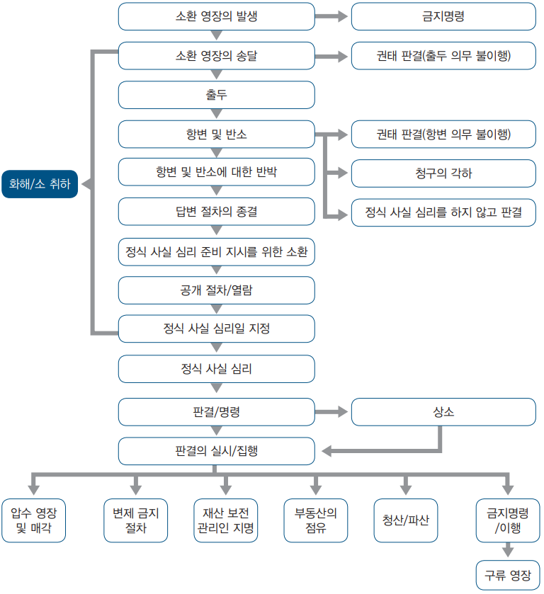[그림 10] 민사 소송 절차
(가) 소환 영장의 발행
지식재산소유권자는 적절한 법원에서 소환 영장을 발행하도록 해야함. 이 소환 영장은 발행일부터 6개월 이내에 또는 재판 관할 구역 외에서의 송달의 허가를 요구할 경우는 12개월 이내에, 피고에게 송달해야 함. 이 소환 영장은 법원을 통해서 발행되어, 소환 영장의 원본 및 복사본 1통은 법원의 등록부에 기탁됨. 소환 영장의 원본과 사본 1통에는 서명·날인이 행해지고, 원본은 법원이 보관하고, 복사본은 피고에게 송달됨
일회당 12개월을 넘지 않는 기간에 대해서 소환 영장의 유효기간의 연장을 법원에 신청할 수 있으며, 소환 영장을 발행하기 전에 그 이면에 다음 사항을 포함하는 내용을 기입해야 함
i) 청구의 원인 및 취지, 또는 청구의 원인 및 취지를 소환 영장에 기입하지 않을 경우에는 소환 영장을 가지고 시작하는 소송으로 하는 청구 및 요구하는 구제 혹은 구제 조치의 종류에 관한 간결한 주장,
ii) 원고가 대리인을 통해 소송을 할 경우에는 대리인의 법적 자격에 관한 주장,
iii) 피고가 대리인을 통해 소송을 할 경우에는 대리인의 법적 자격에 관한 주장,
iv) 원고가 본인 스스로 소송을 할 경우에는 본인의 주소 및 본인 주소가 재판 관할 구역 내에 없을 경우에는 본인 앞으로 서류의 배달장소가 되는 재판 관할 구역내의 장소의 주소 및 본인의 직업, 및
v) 요구하는 출두 기한
(나) 소환 영장의 송달
일반적으로 소환 영장은 피고에게 직접 전달해야 하지만, 그것이 불가능할 경우에는, 법원은 대체가 되는 송달 방법을 명할 수 있음. 그 대체 방법에는 소환 영장을 그 사람의 주소 공시를 하는 것에 의해, 우편에 의해, 또는 법원이 명하는 다른 방법에 의해 배달하는 것이 포함됨
피고가 싱가포르에 없을 경우, 원고는 법원의 허가를 얻어서 싱가포르 외로 소환 영장을 송달할 수 있음. 재판 관할 구역 외로 송달하는 허가의 신청은 다음 사항을 기재한 선서 진술서를 첨부하고, 비공개 수속을 추구하는 일방적 주장(ex parte summons in chambers)에 의해 해야 함
i) 신청을 하는 근거,
ii) 선서 증인은 원고가 소송이 정당한 이유를 가지고 있다고 확신하고 있는 것,
iii) 피고인이 어떠한 장소 혹은 나라에 있을 것인가, 또는 있을 가능성이 있을 것인가,
iv) 싱가포르 내 또는 싱가포르 외로 영장의 송달을 받는 사람에 대하여 청구가 이루어지고 동시에 싱가포르 외의 사람이 해당청구에서 필요하거나 적절한 당사자일 경우에는, 원고가 법원에 심리를 합리적으로 청구하는 주된 쟁점이 원고와 소송 개시를 송달받은 사람과의 사이에 존재하면 선서 증인이 확신하는 근거 및
iv) 소환 영장의 유효기간연장이 필요한지 여부
법원은 적절할 경우에는 송달을 모두 생략할 수 있음
(다) 출두
피고는 해당청구에 대하여 이의주장을 하고자 하는 경우, 등록부에 출두 각서(Memorandum of Appearance)를 싱가포르 내에 거주하고 있을 경우는 영장송달로부터 8일 이내에, 또는 싱가포르에 거주하지 않고 있을 경우는 14일 이내에 제출함으로써 출두를 등록해야 함. 피고가 출두하지 않을 경우, 법원이 원고를 위해서 판결을 법원의 기록에 정식으로 등록할 것인가 아닌가는 원고의 청구가 무엇인지에 의해 결정됨. 예를 들면, 원고의 청구가 확정 손해 배상에 대한 것이라면, 법원은 원고를 위해서 종국 판결을 법원기록에 등록할 수 있음. 원고의 청구가 불확정 손해 배상에 대한 것이거나 또는 동산의 유치에 영향을 미치는 것일 경우에는, 법원은 피고에게 대한 중간 판결을 법원기록에 등록할 수 있음. 기타의 청구의 경우, 원고는 결석 판결을 얻을 수는 없고 출두가 행해진 것으로서 소송을 진척시키지 않으면 안됨. 단, 법원은, 피고 결석 하에 기록된 판결을 파기하거나 또는 변경할 수 있으므로 유의해야 함
(라) 답변수속
피고가 출두했을 경우, 원고는 그 출두로부터 14일 이내에 청구의 원인 및 취지의 진술서를 송달해야 함. 단, 이미 소환 영장의 뒷면에 청구의 원인 및 취지를 기재했을 경우는 예외로 함. 피고는, 출두로부터 14일 이내 또는 청구의 원인 및 취지의 진술서의 송달로부터 14일 이내 중 늦은 분의 기한까지, 자기의 답변 및 반소를 원고에 대하여 송달해야 함
원고는 답변의 송달로부터 14일 이내에 상기 답변에 대한 원고의 반대 답변을, 또한 반소의 송달로부터 14일 이내에, 만약 있으면 그 반소에 대한 항변을 송달할 수 있음
- 청구의 원인 및 취지의 진술, 답변, 원고의 반대 답변, 반소 및 반소에 대한 항변이 피고 반론수속으로서 알려져 있음
일반적으로 답변절차는 최후의 답변서면의 송달로부터 14일 후에 종결된 것으로 간주됨. 답변서류를 정해진 기한까지 송달하지 않는 당사자는 의무불이행이 됨. 법원이 원고를 위해서 판결을 법원의 기록에 정식으로 등록할 수 있을 것인가 아닌가는 원고의 청구가 무엇인가에 의해 결정됨. 예를 들면, 원고의 청구가 확정 손해 배상에 대한 것이라면, 법원은 원고를 위해서 종국 판결을 법원기록에 등록할 수 있음. 원고의 청구가 불확정 손해 배상에 대한 것이거나 또는 동산의 유치에 영향을 미치는 것일 경우에는, 법원은 피고에게 대한 중간 판결을 법원기록에 등록할 수 있음
기타의 청구에 있어서는, 법원은 원고의 청구의 원인 및 취지에 근거하고, 원고가 받는 권리를 가진다고 생각되는 판결을 내림. 단, 법원은 답변절차를 경과하지 않고 내린 판결을 파기 또는 변경할 수 있음
(마) 공개 수속, 정식 사실 심리 준비 지시를 위한 소환
답변절차가 종결된 후에 양쪽당사자는 소송 중 사항을 특별히 지정할 수 있게 됨. 원고는 1개월 이내에 정식 사실 심리 준비 지시를 위한 소환 영장을 취득하고, 해당사안을 법원의 등록부가 정식 사실 심리를 위해서 공식적으로 등록하기 전에, 정식 사실 심리에 영향을 미치는 모든 중간적 사항을 처리할 수 있게 해야 함. 일반적으로, 정식 사실 심리 준비 지시를 위한 소환에 영향을 미치는 심리일은 2-3주일 이내에 알게 함
- 그 심리로 등록관보가 소송 중 사항을 정식 사실 심리에 부치기 전의 여러 사항의 처리 일정을 정함. 그 사항에는 문서의 공개, 열람 및 이의주장, 주된 증거의 선서 진술서의 등록 및 주된 증거에 대한 이의주장이 포함됨
- 통상, 정식 사실 심리의 일정은 정식 사실 심리 준비 지시를 위한 소환의 뒤 3-4개월 이내로 지정되어, 심리일은 통상, 소송 중 사항의 정식 사실 심리의 일정이 결정되고 나서 2개월 이내에 알게함
(마) 공개 수속, 정식 사실 심리 준비 지시를 위한 소환
답변절차가 종결된 후에 양쪽당사자는 소송 중 사항을 특별히 지정할 수 있게 됨. 원고는 1개월 이내에 정식 사실 심리 준비 지시를 위한 소환 영장을 취득하고, 해당사안을 법원의 등록부가 정식 사실 심리를 위해서 공식적으로 등록하기 전에, 정식 사실 심리에 영향을 미치는 모든 중간적 사항을 처리할 수 있게 해야 함. 일반적으로, 정식 사실 심리 준비 지시를 위한 소환에 영향을 미치는 심리일은 2-3주일 이내에 알게 함
- 그 심리로 등록관보가 소송 중 사항을 정식 사실 심리에 부치기 전의 여러 사항의 처리 일정을 정함. 그 사항에는 문서의 공개, 열람 및 이의주장, 주된 증거의 선서 진술서의 등록 및 주된 증거에 대한 이의주장이 포함됨
- 통상, 정식 사실 심리의 일정은 정식 사실 심리 준비 지시를 위한 소환의 뒤 3-4개월 이내로 지정되어, 심리일은 통상, 소송 중 사항의 정식 사실 심리의 일정이 결정되고 나서 2개월 이내에 알게함
(바) 화해
일반적으로 양쪽당사자는 소송절차의 어떠한 단계에 있어서도 당사자간에서 분쟁을 화해에 의해 해결할 수 있음
(사) 청구의 각하
법원은, 다음 사항을 근거하여 청구의 각하(또는 수정)를 명할 수 있음
i) 청구에 소송 또는 항변할 합리적인 근거가 없음이 판명된 경우,
ii) 청구가 경박하거나 소송의 남용에 해당되는 경우,
iii) 청구가 다른 소송의 공평한 심리를 해쳐 분규를 발생시키거나 지연시키는 경우, 또는
iv) 청구가 다른 시점에서 보아 법원의 재판 수속을 남용하는 것인 경우.
(아) 정식 사실 심리
일반적으로, 정식 사실 심리에서는, 원고는 쟁점사실을 법원에 진술하고 제출하는 것에 의해 자기의 주장을 시작함. 계속해서 원고는 자기의 소송을 뒷받침하는 증인에게 증언을 요구함. 피고는 그것들의 증인에 대하여 반대 심문을 하고, 피고가 반대 심문을 할 경우에는 원고도 증인을 재심문함
- 많은 정식 사실 심리에 있어서는, 증인은 주된 증거를 선서 진술서의 형식으로 제출함. 이러한 경우, 증인이 선서 공술서로 증거가 되어야 할 사항을 진술한 취지를 확인하면, 반대 심문이 시작됨. 원고측 증인이 증언을 하면, 원고는 자기의 주장을 마무리 짓고, 반대로 피고가 자기의 주장을 시작하고, 자기의 증인의 증언을 추구함
- 정식 사실 심리의 종결시에, 또는 후일 법원은 판결을 내림. 모든 판결은 공개의 법정에서 선고함
(4) 판결 또는 결정
(가) 손해 배상액수 산정 기준
법원은 손해 배상 또는 부당이득반환의 어느 하나를 인정함. 손해 배상의 경우에는, 원고는 일반적으로 자기의 손해 배상액수를 입증하도록 요구됨. 실제의 손해 배상액수의 사정 방법은 원고가 자기의 지식소유권에 관해서 시장성의 개발을 어떻게 해왔는지에 의해 결정됨
- 예를 들면, 침해가 지식소유권의 가치 손해 감소를 초래할 경우에 손해 배상액수는 소송에 의한 실현 가능재산(무형재산)로서의 지식소유권의 가치에 대한 침해에 의해 초래되는 감가에 의해 산정됨. 원고가 제품의 판매에 의해 자기의 지식소유권의 시장성개발을 하고 있는 경우에 손해 배상 액수는 지식소유권의 침해를 통해서 원고가 입게 되는 이익상실에 의해 산정됨. 또한, 특허권 사용료나 로열티가 고려됨
(나) 판결 또는 결정의 집행
싱가포르에서는 판결의 집행 방법으로서 다음의 것이 가능함
i) 채무자의 자산(부동산을 제외)의 압수·매각 영장: 이것은 판결 채권자가 판결 채무자의 채무의 청산을 목적으로 하고, 재판 관할 구역 내에 소재하는 판결 채무자의 자산을 압류해 매각하기 위해서, 법원에 청구할 수 있는 수속임. 매각에 의한 수취금이 판결 채무의 청산에 충분하지 않을 경우에는, 판결 채권자는 받아야 할 잔고를 다른 집행 방법에 의해 집행할 수 있음
ii) 부동산의 압수·매각 영장: 이것은 판결 채권자가 재판 관할 구역 내의 채무자의 부동산을 압류하기 위해서 법원에 청구할 수 있는 수속임
iii) 제3채무자에 대한 소송수속: 판결 채무자가 싱가포르에 은행계좌를 가지고 있을 경우, 판결 채권자는 그 판결 채무자의 은행계좌를 압류하는 변제 금지 명령을 발행하도록 법원에 청구할 수 있음
iv) 파산/청산에 영향을 미치는 소송수속: 판결 채권자는 판결 채무자에 대하여 받아야 할 금액에 대해서 법정독촉장을 송달할 수 있음. 판결 채무자가 지불하지 않을 경우, 판결 채권자는 경우에 따라 파산 또는 청산의 청원을 제출할 수 있음
(v) 채무자의 조사: 판결 채권자는 자기의 목적으로 가장 알맞은 집행 방법을 정하기 위해서, 채무자의 자산을 조사하는 명령을 법원에 청구할 수 있음
(5) 가처분
(가) 중간명령
지식소유권자는 중간적 금지명령 혹은 잠정적 금지명령, 안톤필라 명령 및 마레바형 금지명령(Mareva injunction)을 포함하는 수속상의 구제를 법원에 청구할 수 있음
지식소유권자는 비당사자에 대하여 다음을 청구할 수 있음
i) 범죄자의 특정에 관련되는 정보를 제공하라는 명령
ii) 비당사자에게 대한, 소송전 공개 수속
iii) 비당사자에게 질문을 하기 위한 명령
법원은 계속중의 정식 사실 심리를 원상보존하기 위해서, 조건부 또는 무조건으로, 중간적 금지 명령을 내릴 수 있음. 일반적으로 법원은 중간적 금지 명령을 내릴 것인가 아닌가의 결정에 다음을 고려함
- 정식 사실 심리에 첨부해야 할 중대한 문제가 있는가,
- 만약 있다면, 원고가 청구하는 중간적 금지 명령을 내리지 않고, 동시에 원고가 정식 사실 심리로 승소했을 경우, 손해 배상은 원고에 있어서 법적으로 타당한 구제인가 아닌가, 또는 중간적 금지 명령을 내리고, 동시에 정식 사실 심리로 피고가 승소했을 경우, 손해 배상은 피고에 있어서 법적으로 타당한 구제인가 아닌가,
- 쌍방에 있어서 손해 배상이라고 하는 구제의 타당성에 의의가 있을 경우, 해당 사안의 모든 사정을 고려하고, 어디에 편의상의 균형 점이 있는 것인가, 그리고
- 필요할 경우에는, 각 당사자의 주장의 실체적 사항은 무엇인가?
중간적 금지명령은 재량적인 것인 점에 유의해야 함
- 또, 원고가 중간적 금지명령을 청구할 경우, 일반적으로 법원이 나중에 해당 중간적 금지명령이 피고에게 손실을 초래한 것을 알고, 그 손실에 대해서 피고에게 보상해야 할 취지의 결정을 내렸을 때, 원고는 이것에 관한 법원이 이러한 명령을 따르는 것을 약속하지 않으면 안 됨
(나) 안톤 필라 명령
안톤 필라 명령은 피고에 대하여 사전통지를 하지 않고, 일방적으로 하는 명령이며, 피고는, 해당 명령으로 지정하는 사람에게, 피고의 부지 내에 출입하고, 해당 명령으로 특별히 정하는 물품 및 문서를 수색/검사하는 것 및 이전하거나 또는 복사하는 것을 인정하도록 요구됨. 이 명령은 권리침해 소송의 정식 사실 심리에 앞서, 피고가 범죄의 증거에 함부로 손질을 가하거나, 파괴하거나 하는 것을 방지하기 위해서 마련된 것임
일반적으로, 안톤 필라 명령은 피고가 소유하거나 피고가 지배하는 특정한 물품 및 문서를 모두 넘겨주는 것 및 원고의 사무변호사에게 특정한 정보를 제공하는 것을 피고에게 요구함. 또한, 이 명령은 법률상의 조언을 요구할 목적을 제외하고, 이 법률절차 혹은 이 명령의 내용을 타인에 전달하거나, 원고가 피고에 대하여 법률절차를 행하였는지 또는 할 가능성이 있는 것을 타인에게 통고하는 것 등을 피고에게 금지할 수 있음
싱가포르에서 법원에서 안톤 필라 명령을 취득하기 위해서는 다음의 조건을 만족해야 함
- 원고는 원고의 권리에 대한 침해가 발생하고 있는 “일단 유리한 사건”인 것을 증명해야 함
- 잠재적이거나, 현실적인 것을 막론하고, 손해가 원고에 있어서 지극히 심각한 것, 및
- 피고가 증거가 되는 문서 또는 자료를 가지고 있는 것 및 피고가 당사자 본인간의 주장이 행하여지기 전에, 이러한 자료를 파괴할 현실의 가능성이 있는 것 등이 명확해야 함
원고는 통상 법원이 나중에 해당 명령 또는 해당 명령의 집행이 피고에게 손실을 초래한 것을 알고, 그 손실에 대해서 피고에게 보상해야 할 취지의 결정을 내릴 경우, 원고는 그 손해 배상에 관해서 법원이 내리는 이러한 명령을 따르도록 약속하는 것이 요구됨
(다) 마레바(Mareva) 형 금지명령
마레바형 금지명령은 피고가 장래 원고승소의 판결을 따르지 않을 수 없게 되는 것을 회피할 목적에서, 자기의 자산을 재판 관할 구역의 밖으로 이동시키는 것 또는 자기의 자산을 재판 관할 구역 내에서 처분하는 것을 방지하는 것임. 일반적으로, 이 명령의 효과는 정식 사실 심리의 종결까지 자산을 동결하는 것임
(라) 중간적 금지명령의 부여 요건
금지명령 부여의 청구는 소송의 어느 것의 당사자도 할 수 있음. 이러한 청구는 선서 진술서로 뒷받침할 수 있었던 주장에 의해 할 수 있음. 또, 시급을 요할 경우에는 일방적으로 할 수도 있음
(마) 범죄자의 특정에 관련되는 정보를 제공하라는 명령
법원은 범죄자의 특정에 관련되는 정보를 제공하라는 명령을 내리고, 어떤 사람에게 범죄자의 특정에 관련되는 정보를 제공하도록 요구할 수 있음. 법원은 어떤 사람이 모르게 기타인의 불법 행위에 연루되어, 원고에 대하여 부정이 범해지는 것을 돕게 된 경우에 이러한 명령을 내림
(바) 문서의 공개에 대한 명령
소송수속의 당사자가 아닌 사람에 대하여 공개를 요구하는 명령을 청구할 수 있음. 이 규정에 기초를 두어 하는 청구는 해당명령의 대상이 되는 문서를 특별히 정하거나 또는 기술하는 선서 진술서의 뒷받침이 없으면 안 되고, 또한 만약 가능하면, 송달했거나 혹은 송달을 의도하고 있는 답변서면을 참조하는 것에 의해, 해당문서가 소송수속에 있어서 행해질 것이거나, 혹은 행해질 가능성이 있는 청구에 기인할 것이거나, 혹은 기인할 가능성이 있는 소송중 쟁점에 있어서 중요한 것 및 해당명령의 대상이 되고 있는 사람이 그것들의 문서를 소유, 관리 혹은 지배하고 있을 것이거나, 혹은 소유, 관리 혹은 지배하고 있었던 가능성이 있는 것을 입증해야 함
(사) 소송절차 시작 전에 질문을 실시하기 위한 명령
소송의 어느 쪽의 당사자도 해당 소송절차의 당사자가 아닌 사람에 대하여 질문을 하기 위한 명령을 청구할 수 있음
- 이 규정에 기초를 두어 하는 청구는 실시되는 질문을 특별히 정하는 선서 진술서의 뒷받침이 없으면 안 되고, 또한, 만약 가능하면, 송달했거나 혹은 송달을 의도하고 있는 답변서면을 참조하는 것에 의해, 해당질문에 대한 답변이 소송에 있어서 행해질 것이거나 혹은 행해질 가능성이 있는 청구에 기인할 것이거나, 기인할 가능성이 있는 소송중 쟁점에 있어서 중요한 것을 입증해야함
(6) 소송 수속에 근거한 화해
소송의 양쪽 당사자는 자기의 사안을 법정 외에서 해결할 수 있으며, 이 화해는 양쪽 당사자간의 계약에 의해 지배되며, 관계 당사자를 법적으로 구속함
- 이 화해 계약에는 양쪽 당사자 중 한 당사자에 의한 불이행이 없는 한, 양쪽 당사자는 동일한 근거에 근거하는 소송수속을 일으킬 수 없는 취지를 명기한 조항을 넣는 것이 보통임
(7) 한국 제도와의 비교
싱가포르의 민사적 분쟁해결 제도와 한국의 민사적 분쟁 해결 제도를 비교하면 아래의 표와 같음
| [표 28] 민사적 구제 제도의 비교 | |||||
|---|---|---|---|---|---|
| 제도 | 싱가포르 | 한국 | |||
| 특허/디자인권 관련 침해 구제 조치 | 금지명령 | 침해금지청구권 인정 | |||
| 인도 또는 파기 명령 | 침해행위를 조성한 물건의 폐기, 설비 제거 등(특허 및 디자인) | ||||
| 손해배상 또는 이득의 반환,
다만 법원은 피고가 침해 행위를 할 때 해당 특허권(디자인권)이 존재하고 있었던 것을 알지 못하고 해당 특허(디자인)가 존재한다고 믿는데 적절한 이유가 없었다는 것을 증명하는 피고에게는 손해 배상 또는 이득의 반환 명령을 내리지 않음 |
손해배상 또는 부당이득의 반환,
손해액의 추정 규정으로 특허권자 등 보호, 다만, 침해자의 고의 중과실이 없을 때에는 이를 참작 기타 생산방법 추정(특허), 과실추정, 신용회복청구권 있음 |
||||
| 특허(디자인)가 유효하고 피고에 의해 침해되었다는 선언 | 없음 | ||||
| 특허(디자인)의 유효성이 다투어진 것에 대한 증명서 | 없음 | ||||
| 상표권 관련구제 조치 | 금지명령 | 침해금지청구권 인정 | |||
| 손해배상 또는 이득의 반환 | 손해배상 또는 부당이득의 반환, | ||||
| 인도명령 | 침해행위를 조성한 물건의 폐기 등 인정 | ||||
| 처분명령 | |||||
| 민사소송 청구기간 | 원칙은 침해가 있는 날로부터 6년 | 손해배상은 3년,
부당이득반환은 10년 |
|||
| 가처분 관련 |
안톤필라 명령, 마레바형 금지명령.
범죄자의 특정에 관련되는 정보를 제공하라는 명령, 문서의 공개에 대한 명령, 소송 수속 시작 전에 질문을 실시하기 위한 명령 등 인정 |
증거 보전신청, 금해금지 가처분 신청, 가압류, 등 인정 | |||
기타, 특허의 경우 침해를 당하면 청구항의 유효성에 대한 부분을 확인하는 것이 필요하고, 민사 절차에서는 답변 기간이 짧고 대부분의 소송이 일년 안에 끝나기 때문에 미리 관련 조사를 해 둘 필요가 있음
또한, 압수 등과 관련하여 반드시 사무변호사(solicitor)의 참관이 필요함
나. 형사적 대응 방법
(1) 형사 소송의 개요
상표권자는 상표권을 침해하는 자에 대하여 형사소송을 제기할 수 있음. 형사적 조치는 상표법과 저작권법 위반인 경우에만 가능함. 형사 소송의 장단점은 다음과 같음
ⓛ 장점
ⅰ) 억제적 효과가 강함
ⅱ) 비교적, 민사소송수속보다 비용이 들지 않음
ⅲ) 침해자의 구내의 손질과 침해 제품 (및, 저작권의 위반에 대해서는, 서류등도)의 압류를 경찰에 허가하는 수색영장을 청구하고, 취득할 수 있음
ⅳ) 형사 소송 수속으로 입수한 증거를, 병행되는 민사소송수속이라도 사용할 수 있음
ⅴ) 형사 소송 수속에서의 유죄판결을, 병행되는 민사소송수속으로 이용할 수 있음
② 단점
ⅰ) 저작권법 및 상표법의 밑으로만, 제기할 수 있음
ⅱ) 손해 배상 또는 부당이득반환을 받을 수 없음
ⅲ) 형사소추 행위 (특히 화해)는 사법총재 실의 지배를 받음
(2) 형사 소송 청구 대상 및 구제
형사소송은 상표권과 저작권을 침해한 경우에만 가능함. 상표법의 경우, 다음의 행위자에 대하여 형사상 조치를 취할 수 있음
ⓛ 상표 위조자(상표법 제46조)
상표권자의 동의 없이, 등록상표와 동일 또는 기만하기 위한 것임을 인정할 수 있을 만큼 유사한 표장을 제작, 변경, 부가, 삭제, 부분적 제거 또는 기타의 방법으로 변조 하는 자를 말함
② 상품 또는 서비스에의 등록상표의 허위사용 행위 (상표법 제47조)
③ 형법 위반에 사용되는 물품의 제조 또는 소지하는 행위 (상표법 제48조)
- 상표의 위조 또는 허위 사용을 위하여 사용, 또는 사용될 예정인 것을 알거나 알 수 있었음에도 진정한 등록상표와 착오를 일으킬 목적으로 그 모조품을 제작하기 위해서 설계 또는 개조한 물품을 제조 또는 소지하는 행위를 말함
④ 허위의 상표를 붙인 상품의 거래 (상표법 제49조)
⑤ 국장 또는 국기 등의 상표 사용 (상표법 제52조)
- 싱가포르의 국장 또는 그들과 착오를 일으킬 가능성이 있는 문장 혹은 도안을 상표에 표시하거나 이를 용인한 사람을 말하며, 다만, 대통령령에 의해 인가된 경우에는 그러하지 않음
- 또한, 형사상 처벌받는 행위를 교사하거나 미수의 경우에도 형법상의 구제를 받을 수 있음. 우리나라의 경우 상표법 위반의 미수범에 대해서는 형법상 조치를 취할 수 없는 것과 상이함
벌금 또는 형벌과 병행하여 법원은 유죄판결을 받은 사람에 대하여 위반이 행해진 상품 또는 위반에 사용된 물품을 정부가 몰수하도록 명할 수 있음. 또한, 경찰관은 공공장소에서 등록상표가 부정하게 사용되고 있는 상품을 판매, 판매를 위한 전시, 판매 또는 거래 목적에서 소지하고 있는 것이 합리적으로 의심되는 사람을 영장 없이 체포할 수 있음
(3) 형사 소송 절차
[그림 11] 형사 소송 절차
(가) 위조물에 대한 정보 또는 증거의 수집
ⓛ 민간조사원의 사용
상표가 아직 등록되지 않고, 출원이 계속 중이라도, 침해 상표와 그 사용에 관한 정보의 수집을 희망하는 사람은, 민간조사원(PI)의 서비스를 계약할 수 있음. 민간조사원은, 시장에서의 침해 상표의 사용, 그 사용하는 방법, 침해 상표가 사용되는 상품 또는 서비스의 종류, 사용 빈도, 및 싱가포르 공중의 동(同)상표의 인지도 등을 조사함
② 일반적 증거 수집 방법
지식소유권자는 자기의 지식소유권에 대해서 법률사무소에 알리고, 진정제품과 위조물 쌍방의 샘플을 제공하고, 위조물의 분별하는 방법을 설명함. 법률사무소는 조사 기관에 이를 설명하고 조사를 맡김. 시장조사의 결과, 위조물의 문제가 심각한 것이 밝혀졌을 경우, 모든 침해자에 대하여 동시에 소송을 일으키는 것은 불가능하므로, 법률사무소는 지식소유권자에게 조언하여, 소송 제기가 적절한 상대가 되는 침해자를 특별히 정함. 위조품이 저작물 또는 상표에 영향을 미치는 것일 경우에는, 법률사무소는 지식소유권자에게서 관련되는 모든 정보/서류를 입수하고, 동시에 다른 필요 서류를 모두 작성하고, 침해자에게 대한 형사상의 조치가 행하여지도록 준비를 함. 조치에 의해 얻을 수 있었던 증거는, 침해자에게 대한 형사, 민사쌍방의 소송수속으로 사용할 수 있음
- 위조물이 저작물 혹은 상표에 영향을 미치는 것이 아닐 경우, 지식소유권자가 원하는 한 법률사무소는 지식소유권자에게서 관련 정보/서류를 모두 입수하고, 동시에 다른 필요 서류를 준비하여, 민사법원에 안톤·필라 명령 (즉, 구내에의 출입 및 수색, 및 침해 재료 및 침해의 증거가 되는 서류의 압류를 허가하는 명령)을 청구함. CD, CD-ROM, VCD, DVD 및 DVD-ROM의 위조물에 관계될 경우에는, 싱가포르 경찰에 직접 접촉하고, 특정한 침해자에게 대한 조치를 하는 조력을 추구할 수 있음
(나) 수색영장의 청구
하급법원은 증거 및 조사를 한 후에, 상표법 제 제46조, 제47조, 제48조, 제49조 또는 제52조에 위반하는 상품의, 보관 또는 판매를 위해서, 또는 위조 상표 혹은 위조 상표 위조용의 기구 혹은 재료의, 보관 혹은 판매 또는 제조를 위해서, 또는 위조 상표 혹은 위조 상표 또는 위조용의 기구 혹은 재료의, 은닉, 보존 또는 보관을 위해서 사용되고 있다고 믿을 이유가 있는 장소에 대하여 영장에 의해 수색을 허가할 수 있음
- 이때, 상표침해와 관계없는 서류에까지 압수를 인정하는 것은 아님. 상표침해를 증명하는 서류에 해당한다는 것은 ‘의심하는 것에 합리적인 이유’가 있는 것을 말하며, 이때 ‘의심한다’는 ‘믿는다’보다 하위의 개념으로 판례는 보았음
- 형법 위반의 피의자는 형사상 이의주장 또는 재검토를 요구하는 청원을 함으로써 수색영장의 파기를 고등법원에 청구할 수 있음. 이에 의해 수색영장이 파기된 경우에 피의자는 해당수색영장의 청구인을 상대로 악의에 의한 고발 및 재산, 상품에 대한 침해를 이유로 소를 제기할 수 있음
(다) 수색영장의 집행
수색영장이 발부되면, 지식소유권자는 지식소유권국, 상사범죄부, 범죄 수사과에 연락을 취하여 수색영장을 집행하도록 함
(라) 형사 소송 제기의 허가 신청
저작권법 또는 상표법에 근거하는 형사위반의 증거를 입수하면, 지식소유권자는 범죄소추 절차를 시작하기 위해서 법무총재실의 허가를 신청하거나, 화해를 신청할 수 있음. 소송 제기의 허가를 신청하는 자는 위반 발생일, 장소 등이 기재된 신청서를 제출하여야 함
법무총재실은 법무총재의 명령을 신청하는 법률사무소에 대하여 다음 것을 제출하도록 요구함. 수색영장 집행한 날부터 3개월 후 또는 그 이후에 허가를 신청하는 경우에는, 지식소유권자는 그 지연의 이유를 소명하여야 함. 제출된 서류에 부족이 없으면, 통상, 법무총재실은 허가서를 발급하며, 통상 ‘허가’를 발행한 날부터 2달 이내에 실행할 것을 요구함
(마) 소환 영장의 발행 청구
법무총재실이 피의자에 대한 형사 소송 개시를 인정하는 허가를 발행하면, 지식소유권자의 대리인은 싱가포르의 하급재판소의 치안판사에게 고소장을 제출함. 치안판사가 형법위반에 대한 재판권을 인정한 경우, 고소인을 선서를 시킨 후 심문하고 그 심문 내용을 문서로 정리함. 통상 치안판사는 해당 고소장의 진실성을 의심하는 것에 충분한 이유가 없는 한 소환 영장을 발행하고 재판소에의 출두를 피의자에게 명하며, 그 소환 영장은 피의자에게 송달하여야 함
(바) 첫 심리 진술
소환장이 피의자에게 송달되면, 양쪽당사자는 지정된 날에 법원에 출두하여야 함. 피의자가 소환장을 규정에 따라 송달받았음에도 불구하고, 지정된 날에 합리적인 이유 없이 출두하지 않은 경우 소추자측은 체포장의 발행을 청구할 수 있음. 이 경우 재판은 피의자의 체포될 때까지 정지됨
피의자는 고발의 철회, 소송의 철회 또는 고발 내용의 절감에 대한 진정을 할 수 있음. 이에 대한 결정은 법무총재실의 승인을 얻어야 함
한편, 피의자는 법원에서 공식적으로 고발 받은 뒤, 유죄를 인정할 것인지, 정식사실심리를 청구할 것인지를 질문받음. 피의자가 유죄를 인정하는 경우에, 피의자는 자신에 대한 고발 내용 중에서 일부에 대하여 유죄를 인정하고, 나머지는 판결로 참작하여 받는 것을 선택할 수 있음
피의자가 정식 사실 심리를 청구하는 경우에는, 정식 사실 심리 준비를 위한 심리기일이 결정됨. 이 기일은 소송 중 대상이 되지 않는 쟁점이 무엇인지를 확인하기 위함이며, 양쪽당사자가 ‘부쟁사실 진술서’에 대해 합의하면, 그 내용이 정식 사실심리에 첨부되게 됨. 정식 사실심리에서는 형사사건은 입증책임이 고소인 측에 있어, 고소인은 합리적인 의혹을 넘는 정도의 입증을 하여야 함
고소인 측이 위반사실에 대하여 증명을 한 경우, 피의자에 대해 유죄가 선고됨. 이 경우 법원은 침해물의 인도 또는 처분을 명할 수 있음. 한편, 피의자는 법원의 판결에 대하여 상소를 할 수 있음
- 고소인이 증명을 다 하지 못한 경우에는 피의자는 무죄방면 됨. 그러나, 무죄방면 되어도 법원은 침해물의 인도 또는 처분을 명할 수 있음
(사) 침해 재료 및 / 또는 침해 물품의 인도 또는 처분
법원은 형법 위반에 대하여 유죄가 증명된 사람에 대해, 그 위반에 관계된 모든 물품 또는 상품에 대한 권리를 포기하고 정부에 넘겨주도록 명할 수 있음. 피의자가 무죄방면이 되었을 경우 상품의 인도 또는 처분에 대하여 결정지은 조항은 없으므로 이는 CPC의 일반규정이 적용됨. 한편, 법원은 재판 시 제시, 제출된 재산 또는 서류의 몰수, 압수, 파기 또는 인도를 명할 수 있음
(아) 압수품의 반환
저작권법의 경우, 치안판사가 저작권법에 근거한 권한을 행사해서 수색 및 압수를 명한 경우, 그 후 소송절차에서 파기명령이 내려지지 않은 경우 또는 압수로부터 6개월 이내에 소송이 제기되지 않은 경우, 해당물품 혹은 서류는 압수 시점의 소유자에게 반환되며, 반환이 합리적으로 불가능한 경우, 유실물과 같이 처리하도록 규정을 두고 있음. 그러나, 상표법에는 압수품의 반환에 대한 규정이 없으며, 다만, 상품이 위법으로 압수된 경우에는 그 상품의 소유자는 법원에 반환을 청구할 수 있음
(자) 상소
형사위반 소송절차에서 지구법원 또는 하급법원이 내린 판단, 판결 또는 명령에 대하여 소추인 또는 피의자는 판결이 타당하지 않거나 또는 법률판단의 착오 또는 사실의 오인이 있음을 이유로 고등법원에 상소할 수 있음. 상소의 절차는 다음과 같음
ⓛ 상소의 통지
해당 판단, 판결 등이 행해진 날부터 10일 이내에 상소장을 제출하여야 함. 상소장에는 상소 대상의 판결 내용, 법률판단의 착오 또는 사실의 오인이 있음을 이유로 상소하는 경우에는 그 법률 또는 사실에 대한 부분을 간략히 명기함. 상소장을 제출하지 않은 경우, 상소는 철회한 것으로 간주되어, 사실심 법원이 판결 및 명령을 집행함
② 상소에서의 심리
하급법원의 판단에 법률판단의 착오, 증거의 가중과 어긋나는 사실의 오인 또는 형의 선고가 과중 혹은 불충분한 것이 명백하다는 것을 충분히 입증할 수 없을 경우에는 상소법원의 판단, 판결을 무효로 하지 않음. 또한, 상소 법원이 하급심의 판결에 개입할 충분한 근거가 없다고 간주되는 경우 상소를 각하함
③ 상소 판결
무죄판결에 대한 상소의 경우, 제기된 상소에 충분한 이유가 있다고 판단되는 경우, 원래의 명령을 파기하고, ⅰ) 심층 조사, ⅱ) 피의자를 정식 심리에 붙이거나, 정식 사실 심리를 위해 구류, ⅲ) 피의자를 유죄로 하는 판결을 선고할 수 있음
유죄판결의 상소의 경우, ⅰ) 원래의 사실 인정 및 판결을 파기해서 피의자를 무죄방면, 또는 정당한 재판 관할권을 가지는 법원에 의한 정식 사실 심리 재개, 정식사실 심리를 위해 구류, ⅱ) 원래의 사실인정을 변경하여 판결을 유지하거나, 사실 인정을 변경하는 것과 관계없이, 판결로 선고한 형을 가중하거나 가감, ⅲ)원래의 판결로 선고된 형을 증감하는 것 또는 사실인정의 변경과 관계없이, 판결의 종류를 변경하는 것을 할 수 있음
(4) 한국 제도와의 비교
| [표 29] 형사적 구제 제도의 비교 | |||||
|---|---|---|---|---|---|
| 싱가포르 | 한국 | ||||
| 특허/디자인권에 대한 형사적 구제 조치 | 형사적 조치를 취할 수 없음 | 침해죄, 몰수, 양벌 규정 등 형사적 조치 | |||
| 형사적 조치의 대상 | 상표 위조행위 | 한국에서는 각 행위를 침해행위로 보아 침해죄로 형사적 조치가 가능
한국에서는 각 행위를 침해행위로 보아 침해죄로 형사적 조치가 가능 |
|||
| 형사적 조치의 대상 | 형법 위반에 사용되는 물품의 제조 또는 소지 행위 | ||||
| 등록상표의 허위 사용 행위 | 허위 표시 죄 | ||||
| 허위 상표를 붙인 상품의 거래 | 허위 표시 죄 | ||||
| 국장 또는 국기 등의 상표 사용 | 규정없음 | ||||
| 요건 | 고소 필요 | 원칙적으로 고소 필요. 단 경찰/검찰당국에 의해 소제기도 가능 | 친고죄 | ||
| 고의, 과실 필요 여부 | 위조행위, 형법 위반에 사용되는 물품의 제조 또는 소지 행위에 대해서는 고의 또는 과실 요함 | 침해자의 고의 또는 과실을 요하지 않음
단 침해가 성립하는 경우 고의가 추정됨 |
|||
| 기간 | 제한 없음 | 제한 없음 | |||
| 청구권자 | 개인의 이름으로만 가능 | 개인, 법인 등 무관 | |||
| 기타 |
침해 조사를 위하여 민간조사원을 고용할 수 있음. 침해에 대한 증거 수집을 위해서는 민사법원에 안톤·필라 명령을 청구
압수 후 소추 절차 개시 허가 신청을 하여야 형사소송이 개시됨 |
-경찰에 침해로 인한 고소를 하면, 경찰이 침해여부를 조사한 후 검찰에 송치. 검찰에서 침해 사실이 인정되면 고소를 취하하지 않는 한 형사소송이 재개됨 | |||
| Plea bargain 제도 있음. | Plea bargain 제도 없음. | ||||
2. 수출입단계(세관) 분쟁해결 제도
가. 행정 조치의 개요
민사적, 형사적 구제 방법 이외에, 침해행위에 대하여 행정적 조치에 의해 구제를 받는 방법도 있음. 형사소송과 마찬가지로 상표권, 저작권에 대해서만 행정 수단을 동원할 수 있음
행정 조치의 장점은 CD, CD-ROM, VCD, DVD 및 DVD-ROM의 마스터 링 및 리플리케이션 기기의 수입 및 사용에 관한 특별조항의 경우, 이들 제품의 위조물을 저지하는 추가적 수단으로서 확실히 효과적임. 그러나 세관조치는, ⅰ) 저작권법과 상표법의 하에서만 실시할 수 있다는 점, ⅱ) 통과 상품 (즉, 수입상품이지만, 싱가포르 내에서 사용될 것인가, 다른 나라로 이동할 것인가를 막론하고, 동일 혹은 다른 수송 수단에 의해 타국에 옮겨질 예정이 있는 것)에는 적용할 수 없다는 점, ⅲ) 해당법률 및 시행 규칙으로 요구되는 증거를 확보, 위조물의 수색 및 압류에 대해서 세관의 원조를 추구하는 것이 상당히 곤란하다는 단점이 있음
나. 행정 조치의 종류
(1) 세관조치
행정조치는 주로 세관조치에 의함. 즉, 등록상표권 또는 저작권을 침해하는 상품이 싱가포르에 수입되는 경우, 세관에서 일정한 규정하에서 침해에 해당하는 상품을 압수하고, 처벌하는 규정을 두고 있음. 상표법 및 저작권법의 국경단속조치에 관한 규정은, 등록상표 또는 저작권을 침해하는 상품이 싱가포르에 수입될 때, 세관이, 특정 상황하에서 그것을 압수하고, 처벌할 수 있는 것을 요지로 하고 있음. 규정상 세관에 허용되는 것은 항의가 있는 상품을 압수하는 것뿐임. 적절할 경우에, 위반자에 대하여 별도, 민사 소송 또는 형사 소송을 제기할 책임은 해당지식소유권(IPR)의 소유권자에게 있음
(2) 제조업법에 의한 규제
판매 또는 다른 상업적 목적에서, CD, CD-ROM, VCD, DVD 및 DVD-ROM의 제조에 종사하는 사람은 이 법률에 의하여 등록된 사람이어야 함. 등록받지 않은 자는, $ 50,000이하의 벌금, 및 유죄 확정 후에 해당 위반이 계속하는 기간에 대해서, 1일당 $1,000의 벌금이 부과됨. 또한, 등록한 제조업자가 등록조건의 준수를 소홀히 하는 경우 해당 제조업자를 소추할 수 있음. 이에 대한 형벌은, $ 10,000이하의 벌금, 및 유죄 확정 후에 해당위반이 계속하는 기간에 대해서, 1일당 $1,000의 벌금임
(3) 수출입(규제)법에 의한 단속
이 법률하에서 CD, CD-ROM, VCD, DVD 및 DVD-ROM의 마스터 링 및 리플리케이션 기기의 싱가포르에의 수입에 대해서는, 싱가포르의 무역 개발 위원회(TDB)에 의한 사전승인이 필요함. 이 요건에 저촉되면, 처벌 대상의 위반을 어긴 것으로서, $ 100,000이하 또는 침해 상품가치의 3배의 벌금 및 / 또는 2년 이하의 형에 처해짐. 누범에 대하여는 엄격한 형벌이 부과됨
다. 행정 조치와 관련하여 알아야 할 사항
(1) 세관조치
세관조치를 위해 상표권 표시를 제품에 붙이는 것 또는 사전 경고 등은 요구되지 않음. 또한, 침해자의 고의, 과실을 요하지 않음. 다만, 상기 서술한 바와 같이 세관조치는 싱가포르에 수입되는 상품을 압수하는 것 뿐이며, 민형사상의 제재를 부과하지 않음
(2) 법적 능력
외국인이라 하더라도 세관조치에 대한 일체의 제약은 없음
라. 행정조치(세관조치)의 절차
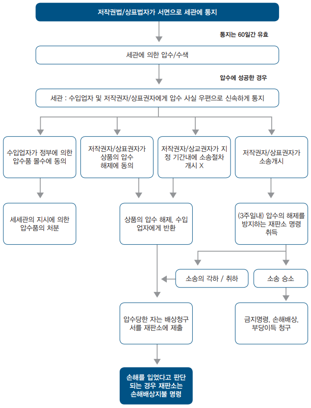
[그림 12] 행정 절차 흐름도
(1) 세관에 서면으로 통지
등록상표권자 또는 그의 사용권자는 침해상품을 수송하는 화물이 싱가포르에 진입하고 있다는 의심이 드는 경우, 침해되는 수입에 항의하는 취지를 기재하여 세관장에게 통보할 수 있음. 세관에 제출하는 서류는 다음을 기재하여야 함
(a) 저작권법에 근거하는 통지의 경우는, 저작권을 수반하는 저작물의 등록증 (저작권자의 풀 네임(full name) 및 저작권 만기일을 포함), 또는, 상표법에 근거하는 통지의 경우는, 등록상표의 표시 및 등록증 및 갱신증(해당할 경우)의 등본
(b) 저작권자/상표권자가 그 수입에 항의하는 상품의 명세서-저작권자/상표권자는, 해당상품(수량 및 가격을 포함), 포장수, 사용되고 있는 상표, 선하 증권 번호/항공화물 운송장 번호/위탁 화물참조 번호 및 해당 상품의 특정에 필요한 기타 일절의 특징을 기술
(c) 수입업자의 풀 네임(full name) 및 주소,
(d) 배명, 항공기의 편명 또는 차량등록번호,
(e) 해당모조품이 싱가포르에 수입될 때의 경유 지명 (항 또는 공항),
(f) 도착예정일,
(g) 원산국, 및
(h) 저작권법에 기초를 두는 통지의 경우는, 항의 대상의 모조품이 저작권자의 동의를 얻지 않고 제조되었다는 근거, 또는 상표법에 기초를 두는 통지의 경우는, 항의 대상의 상품이 침해 상품이라는 근거. (이때, 세관은 합리적으로 요구할 수 있는 범위의 다른 추가적인 정보 및 증거도 요구할 수 있음)
추가로 다음을 제출함
(i) 통지 내용이 진실하다는 취지의 사법 수속 외의 서약,
(j) 저작권자/상표권자의 대리자가 통지를 할 경우는, 그 대리자가 권한을 부여받았다는 증거, 및
(k) 상표권법의 경우는 수수료 S$200.
저작권자/상표권자는, 해당 [상품]의 압수의 결과로서 정부가 입을 가능성이 있는 일절의 배상 책임 및 절차가 진행된 법원이 명할 가능성이 있는 배상을 지불하는데 충분한 담보를 공탁하지 않으면 안됨. 이 담보의 정확한 액에 대해서는, 제정법에 정함이 없음. 따라서 세관의 재량대로 케이스마다 바뀜. 한편, 저작권자/상표권자는, 담보액을 넘는 정부가 입는 배상 책임 또는 비용에 대해서 책임을 지는 점에도 주의가 필요함
(2) 통지의 효과
통지는 그것을 한 날로부터 60일간 유효함. 항의자에 대해 세관은 압류 수속을 취하기 전에, 압류의 비용에 해당하는 충분한 금액을 세관장에게 공탁하도록 요구할 수 있음. 통보가 있고 그 통보가 취소되거나 무효 되지 않는 한 세관은 선박, 항공기, 차량, 사람, 수화물 및 짐을 수색하고, 침해상품으로 보이는 상품을 압수할 수 있는 권리를 가짐
다만, 통과상품은 이를 면할 수 있음. 「통과 상품」의 정의는 「수입상품이지만, 싱가포르에서 선적 또는 이적되는지 여부를 불문하고 동일 혹은 다른 수송 수단에 의해 타국에 옮겨질 예정의 물건」을 말함
통지가 유효한 세관은 다음의 상품을 압수할 수 있음
- 저작권법하에서 또는 이를 목적으로 해서 수입하는 저작권물품의 모조품
(a) 그 모조품을 판매, 임대, 또는 상거래의 수단으로서 판매 혹은 임대를 위해서 제공 혹은 전시하는 것,
(b) 그 모조품을 상거래의 목적에서 유통시키는 것,
(c) 그 모조품을 다른 목적을 위하여 저작권자에게 손해를 주는 정도로 유통시키는 것.
- 상표법하에서 세관이 해당등록상표와 동일 혹은 유사한 표장(sign)을 첨부하고 있다고 판단하는 상품, 또는 침해 표장(sign)을 포장에 첨부하고 있다고 판단하는 상품
(3) 수색권한
세관은, 선박, 항공기, 및 차량에 대한 대단히 광범위한 수색 권한을 가짐. 세관은 선장, 기장 혹은 운전수에게 수색에 협력하도록 명할 수 있고, 관련 서류의 제출을 요구할 수도 있음. 또한, 세관은 다른 수단에서는 합리적으로 출입할 수 없는 장소 혹은 저장소에 강제적으로 출입할 수도 있음. 세관은 침해품 또는 침해품이 들어 있다고 합리적인 의혹이 존재하는 포장을 검사할 수도 있음. 또, 세관은 적절하다고 생각할 경우에는 사람 및 수화물을 수색할 수도 있음. 세관의 지시를 따르지 않거나 세관을 방해하면 형법위반의 문제가 발생됨
(4) 상품의 압수
압수 상품은 세관이 지시하는 안전한 장소에 옮겨짐. 세관은, 압수 상품에 대해 특별히 정하는 서면에 의한 통지를 수입업자 및 저작권자/상표권자에게 직접 또는 우편에 의해 가급적 신속하게 함
- 세관은 수입업자 및 저작권자/상표권자에게 압수 상품의 검사를 허가할 수 있음. 또한, 세관은 세관에 반환하는 것 및 파손을 방지하도록 약속한 후 검사용 샘플 1개를 압수 상품으로 채취하는 것을 허가할 수 있음
(5) 소송의 개시
저작권자/상표권자는 세관의 통지된 날로 지정된 날부터 10일 이내에 해당압수 상품에 대해서 민사소송을 제기하고, 그 기간 내에 침해에 대한 소송을 시작한 취지를 서면으로 통지해야함. 그렇지 않으면, 저작권자/상표권자는 해당압수 상품의 압수를 해제하는 것에 동의하는 취지를 세관에 서면으로 통지할 수 있음. 이 경우에, 세관은 해당상품의 압수를 해제해서 수입업자에게 반환함. 또한, 수입업자가 정부가 압수 상품을 몰수하는 것에 대해서 동의하는 취지를 서면에 의해 통지할 수도 있음. 다만, 이 통지는 침해에 대한 소송이 제기되기 전에 하지 않으면 안됨. 해당 상품은 세관의 지시에 의해 처분됨
- 저작권자/상표권자가 소송을 제기하지 않을 경우 또는 소송을 제기한 취지의 통지를 지정된 기간내에 세관에 하지 않을 경우에는, 세관은 압수 상품을 해제해서 수입업자에게 반환함
- 저작권자/상표권자는 지정된 기간에 압수 상품에 대해서 소송을 제기할 경우에는 소송을 제기한 날부터 3주일 이내에 해당압수 상품의 압수의 해제를 저지하는 법원 명령도 취득해야 함
한편, 압수에 의해 권리를 침해된 사람은 ⅰ) 저작권자/상표권자가 압수 상품의 압수의 해제에 동의할 경우, ⅱ) 저작권자/상표권자가 지정된 기간 내에 민사소송을 제기하지 않을 경우, ⅲ) 저작권자/상표권자가 민사소송을 제기하였으나 그 소송이 각하 또는 철회 되었을 경우에 저작권자/상표권자를 상대로 법원에 배상 명령을 청구할 수 있음. 또한, 법원은 압수의 결과로서 청구인이 손실 또는 손해를 입었다고 판단한 경우 법원이 상당하다고 인정하는 금액의 배상금을 지불하도록 저작권자/상표권자에게 명할 수 있음
마. 한국과의 비교
한국에서도 상표법 및 저작권법에 의하여 보호되는 상표권 및 저작권, 저작인접권을 침해할 우려가 있는 수출입물품에 한정하여 보호 받을 수 있음. 관세청은 등록 상표 중에서 세관에 상표권 신고된 것에 한하여, 상표권 침해 우려 물품이 수출입시 상표권자에게 통보하고 해당 물품을 통관 보류하여 권리자가 조치를 취할 수 있도록 돕고 있음
3. 조정중재 등 대체적 분쟁해결(ADR) 제도
특허권자와 실시자가 상호 제시한 로열티 제안에 합의하지 못하는 경우 앞서 살펴본 것처럼 소송으로 이어지는 경우가 대부분임. 그러나 당사자 간의 동의가 있는 경우에는 재판 외 분쟁해결 수속(ADR: Alternative Dispute Resolution)을 통해 해결하는 것이 가능함
ADR은 소송에 비해 낮은 비용으로 빠르게 분쟁을 해결할 수 있다는 장점이 있으며, 특히 표준특허 라이선스에서는 매우 많은 수의 특허에 대한 검토가 필요하기 때문에, 소송에서 많은 시간이 소요될 수밖에 없으므로, ADR은 효과적인 분쟁해결방법이 될 수 있음
| 재판외 분쟁해결절차의 장점 |
|---|
| (1) 소송보다 절차진행이 신속하고 경제적이어서 시간과 비용을 절약할 수 있음
(2) 절차의 진행이 법에 묶이지 아니하여 탄력적이며, 특히 엄격한 소송절차법칙이 적용되지 않음 (3) 절차진행이 비공개적이기 때문에 기업의 비밀이나, 개인의 이익이 잘 보호됨 (4) 법원 판결에 비해 양 당사자가 법률쟁점에 관한 법률 이외의 다른 경제적, 영업적 이익을 고려하여 모두에게 좀 더 유리한 방향으로 결정될 수 있도록 탄력적인 기준을 적용함 |
그러나, 일방이 ADR 절차를 이용하고자 하는 요청을 하였는데, 상대방에서 이를 거절한다고 하여서 협상에 성실하게 임하지 않았다고 판단되지는 않으며, 대부분의 경우 특허권자가 ADR 절차를 통해 해결하는 것을 선호하지 않기 때문에, 현실적으로 ADR을 통해 분쟁이 해결되는 경우가 많지는 않음
가장 대표적으로 WIPO(World Intellectual Property Organization)는 ADR을 위하여 WIPOAMC(Arbitration and Mediation Center)를 운영하고 있다. WIPO AMC 홈페이지에 접속하면, 아래와 같이, WIPO의 ADR과 관련된 다양한 정보를 얻을 수 있음
[그림 13] WIPO의 Arbitration and Mediation Center 홈페이지
싱가포르는 세계에서 가장 선호되는 중재 장소이며, 국제 중재법 및 싱가포르 중재법에 의거하여 지식재산권 분쟁 중재가 가능한 곳임. 또한 싱가포르는 뉴욕 협약의 당사국이기 때문에 싱가포르에서 이루어진 중재판정은 전 세계 160개 이상의 국가에서 시행될 수 있음. 싱가포르는 국제 조정 센터(SIMC)를 보유하고 있으며, WIPO 중재 및 조정센터도 싱가포르에 지점을 두고 있음
가. 재판상 화해
재판상 화해는 법원이 선임하는 특별행정판사가 관여하여 양 당사자간의 합의에 의해 화해로서 소송을 종료시킴. 일반적으로 소송담당판사가 제안하거나 양 당사자의 신청에 의해 재판상 화해절차가 진행됨
이 밖에도 당사자간 화해를 권장하고 소송을 피하기 위해 연방민사소송규칙 제68조에서는 “판결의 제안(Offer of Judgment)” 규정을 두고 있음. 판결의 제안 규정은 피고가 원고에게 소정의 금액을 포함한 판결을 제안하고 원고가 이를 제안일로부터 14일 이내에 수락 여부를 결정할 수 있도록 하고 있음. 만일, 원고가 판결의 제안을 수락하지 않고 재판을 진행하여 판결의 제안에서 제시된 내용보다 더 나은 내용으로 판결을 받지 못하는 경우에는 판결의 제안일 이후 피고가 부담한 소송 진행 비용을 원고가 부담해야 한다는 규정임
나. 조정(Mediation)
조정은 분쟁의 해결을 위해 판사 및 특별한 지식과 경험이 있는 자를 조정인으로 두고, 법원을 대신하여 양 당사자의 주장을 서로 양보하게 하고 필요한 경우 자신의 중재의견을 제안하여 당사자를 설득하고 그 합의로써 분쟁을 원만한 해결로 이끄는 절차임
- 조정을 하게 되는 경로는 1) 당사자간의 계약서에 포함된 조정조항(Mediation Clause)에 의해 조정이 미리 합의된 경우, 2) 분쟁 발생이후에 당사자간 자발적인 합의(Voluntary Agreement)된 경우, 및 3) 법원의 명령 또는 권고(Court-ordered or Referral)에 의한 경우의 3가지가 대표적임
다. 중재(Arbitration)
중재는 분쟁 당사자간의 합의에 따라 제3자(중재인)을 선정하여 중재인의 판정에 복종함으로서 분쟁을 최종적으로 해결하는 절차임. 중재는 재판에 의해 분쟁을 해결하지 않더라도 당사자를 구속하기 때문에 당사자가 중재절차에 따를 것을 합의한 경우에 가능함
- 다만, 특허사건의 경우 특허의 유효성이나 침해 문제는 전문적이고 복잡한 판단이 필수적이므로 이러한 절차 없이 제3의 중재인이 판사 역할을 대신하여 중재 결정을 내리는 중재제도는 상대적으로 중재 절차에 부적합한 것이며 재판상 화해나 중재제도를 이용하여 당사자간에 탄력적인 조건으로 협상을 하는 것을 선호하는 편이며, 상표침해사건에서는 재판상 화해, 조정, 중재제도 모두 빈번히 이용되고 있음
라. 싱가포르의 대체적 분쟁해결제도(ADR)
(1) 싱가포르 국제중재센터(SIAC)
싱가포르에서 가장 활성화된 분쟁해결 방식은 물론 국제중재(International arbitration)이며, 이를 주도하는 것은 SIAC (Singapore International Arbitration Centre) 싱가포르 국제 중재 센터임
중재라는 것은 분쟁 당사자들간 사적 법원인 중재판정부를 구성하여 당사자들이 합의한 절차에 따라 중재판정부로부터 분쟁에 대한 법률적인 판단을 받는 방식임
따라서 당사자 간 원만한 해결을 위한 중지점을 찾는 협상이나 조정과는 다르다.
Queen Mary University of London과 White&Case가 실시한 2021 International Arbitration Survey에 따르면, SIAC은 아시아-태평양 지역에서 가장 선호되는 국제중재기관으로 선정되었고, 세계 국제중재기관들 중 2위로 자리매김함
2021년 SIAC에 새로이 접수된 사건은 469건에 달하며, 이 중 405건은 국제적인 사건으로서 총 86%가 국제사건에 해당하는 셈이다. 2021년 새로운 사건들의 총 가액은 USD 6.54 billion (SGD 8.85 billion) 에 상당함
(2) 싱가포르 국제상사법원(SICC)
대체적 분쟁해결의 방식으로 중재가 가장 많이 활용되고 있지만, 당사자간의 합의를 기반으로 진행하는 절차라는 특성으로 인하여 한쪽 당사자(주로 피신청인 측)가 의도적으로 절차를 지연하거나 남용하려고 하는 경우에는 법원과 같이 강경하게 절차를 진행하는데 한계가 있을 수 있음
이러한 점을 보완하여 싱가포르 정부에서는 국제분쟁을 전문적으로 해결하는 싱가포르 상사법원을 설립함
싱가포르 국제상사법원(SICC)은 싱가포르 고등법원의 한 부서로서 2015년 1월에 개원함
SICC에서는 (i) 국제적인 상사사건을 전문적으로 다루며, (ii) 싱가포르 법관 이외에도 다른 국적을 가진 법관들도 사건의 심리를 담당하게 되고, (iii) 싱가포르와 실질적인 관련이 없는 사건이라면 싱가포르가 아닌 외국 변호사자격을 가진 변호사에 의한 직접 변론 등 소송대리가 가능하다는 점에서 절차가 유연함
국제적인 실무를 반영하면서도- 법원절차 고유의 특성인- 강경하면서 효율적으로 절차를 진행할 수 있다는 긍정적인 평가를 받고 있음
다만, 국제중재와 마찬가지로 사건당사자들이 SICC에서 재판 받기로 동의하여야 하는데, 아직은 SICC가 널리 보편화되지는 않아서 국제중재에 비해서는 사건수가 많지는 않음
(3) 싱가포르 국제조정센터(SIMC)
대체분쟁해결제도 중 하나로 최근의 추세로 떠오른 제도는 조정 (mediation)임
일도양단적인 법적 판단을 받는 대신 분쟁당사자들이 모두 윈윈할 수 있는 제3의 창의적인 합의안을 찾아서 분쟁을 원만하게 해결하고자 하는 방식이라는 점에서 최근 각광받고 있으며, UN국제상거래법위원회(UNCITRAL)에서 3년간 협상을 통하여 합의된 'UN국제조정화해합의협약(싱가포르조정협약)'이 2019년 8월 7일 싱가포르에서 서명되고 2020년 9월 12일 발효된 이후 싱가포르에서 정부주도로 가장 강력하게 밀고 있는 ADR 중 하나임
그 중심에 있는 기관이 SIMC임
싱가포르 국제조정센터(SIMC)는 아시아 지역의 비즈니스 수요에 부합하기 위하여 국제 조정에 특화된 서비스를 제공하는 비영리기관이며, 당해 기관에 의하면, 전 세계 조정기관의 조정 성공률은 평균적으로 70%인데 반해, SIMC에서의 조정 성공률은 무려 85%에 이름
따라서 조정이 성공하게 되는 경우 당사자들의 많은 시간과 비용을 아낄 수 있다는 강력한 장점이 있으며 아직까지는 작은 규모의 분쟁들에 주로 활용된 면이 있으나, 점점 더 큰 규모의 복잡한 국제분쟁에서도 다양하게 활용될 수 있을 것으로 전망됨
이와 같이 다양한 분쟁해결방식을 제공함으로써 싱가포르는 아시아를 넘어서 세계 국제상사분쟁 해결의 허브로서의 위상을 굳건하게 유지하고 있음
· 국제조정센터 웹페이지 : http://simc.com.sg/mediating-in-singapore/
*출처 : KOTRA
제3절 분쟁 대응 전략
1. 침해 발생시 주요 단계별 대응 방안
특허권 등을 침해한다는 경고나 소송을 제기당한 경우, 각 권리에 대한 대응 방안을 살펴보도록 함. 한편, 여기에서 설명하는 대응방안 외에 무고한 침해의 항변을 할 수 있음
‘무고한 침해의 항변’이란 지식재산권의 침해에는 해당하지만 지식재산권의 존재를 몰랐으므로 지식재산권의 존재를 안 날 이후에 대하여만 법적 책임을 지겠다는 것임. 무고한 침해의 항변이 받아들여지기 위해서는 첫째, 지식재산권의 존재를 몰랐음을 증명하고, 둘째, 지식재산권이 존재한다고 믿는데 합리적인 근거가 없음을 증명하여야 함. 이러한 두 가지를 증명하면 손해배상 책임을 면하게 됨. 싱가포르의 법률은 단순히 제품에 “특허”, “디자인” 등의 표시를 하였다고 해서 침해자가 지식재산권이 존재한 사실을 알았다고 보지 않음. 이러한 표시와 더불어 지식재산권의 등록 번호까지 기재하여야만 침해자가 지식재산권의 존재를 알았다고 보고 있음
- 다만, 주의해야 할 점은 무고한 침해의 항변이 받아들여진다고 하더라도 침해 사실은 인정이 되므로 손해 배상 또는 이득 반환을 제외한 나머지 조치는 취할 수 있다는 점임
가. 특허권
(1) 특허에 대한 권리의 판단
특허법에 의하면, 어떠한 사람도(출원인) 스스로가 해당 발명에 대해서 특허의 부여를 받는 자격이 있을 것인가, 또는, 부여된 특허 혹은 특허출원에 관련되어 어떠한 권리를 가지고 있는지 또는 가질 수 있을 것인가에 대해서 등록관에게 조회하는 것이 가능함. 따라서 어떠한 사람도 관련되는 조항에 근거하여 등록 특허 혹은 계속 중의 특허출원에 대한 권리에 영향을 미치는 문제에 판단을 내리도록 등록관에게 청구할 수 있음. 등록관에게 문제를 조회하는 이 권리는 특허의 소유권, 또는 특허부여를 받는 자격의 유무에 관한 질문에 한정된 것이며, 특허의 취득 가능성에 영향을 미치는 문제 (예를 들면, 신규성 등에 영향을 미치는 문제)는 포함되지 않음
부여완료의 특허에 관해서는 다음의 문제에 대해서 판단을 나타내도록 등록관에게 청구할 수 있음.
i) 특허의 참된 소유권자는 누군가,
ii) 특허가 원래 부여되어야 할 사람에게 부여된 것인지, 또는
iii) 특허에 영향을 미치는 어떠한 권리는 원래 타인에게 이전 또는 부여되어야 할 것인지 여부
(2) 특허권에 대한 권리의 판단
상표법의 경우와 다르게, 특허 부여 전에 특허의 취득 가능성에 이의를 할 수 있는 조항은 특허법에는 일절 없으나, 다만, 특허부여의 후에는 다음에 근거하여, 누구나 특허의 취소를 청구할 수 있음
(a) 해당발명은 특허의 취득 가능성(적격성)을 결여하고 있는 것,
(b) 특허가 해당특허의 부여를 받는 자격을 가지지 않은 사람에게 부여된 것,
(c) 특허의 명세서가 발명을 명확하고, 완전하게 공개하고 있지 않기 때문에, 해당 기술 분야에 숙달된 기술자라도 실시할 수 없는 것,
(d) 특허명세서로 공개된 사항은 특허출원으로 공개된 범위를 벗어나 있는 것,
(e) 특허에 의해 부여된 보호가 원래 용인되어야 하지 않은 보정에 의해 확대된 것,
(f) 특허출원인이 등록관에 대하여 소정의 특허청(뉴질랜드, 오스트레일리아, 캐나다, 영국, 미국 등, 및 영어에 의한 특허출원에 관해서 유럽 특허청)에서 대응하는 국제출원에 대해서 연락을 하지 않은 것, 혹은 중요한 사항에 있어서 허위의 정보를 제공한 것, 또는
(g) 특허를 부실표시에 기초를 두어서 취득한 것.
상기(a), (c), (d),또는 (e)에서 규정하는 근거의 어느 하나에 근거해서 특허의 취소를 청구할 경우, 등록관은 특허의 재심사를 시킬 수 있음
(3) 보정에 대한 이의주장
특허 출원인이 특허 부여 후에 특허명세서에 대한 보정을 제출할 경우, 이러한 보정은 특허공보로 공개됨. 이러한 보정에 대하여 특허명세서로 공개된 사항은 특허출원으로 공개된 범위를 벗어나 있는 경우, 특허에 의해 부여된 보호가 원래 용인되어야 하지 않은 보정에 의해 확대된 경우 등을 이유로 이의 주장을 할 수 있음. 이러한 이의주장은 보정에 대한 공개의 날부터 2개월 이내에 특허 서식 18호를 작성하여 제출하며, 소정의 수수료($480)를 납부 해야 함
이의주장에는 이의주장인이 의거하는 사실 및 이의주장인이 추구하는 구제를 완전히 기술하는 진술서를 제출하며, 등록관은 이의주장서 및 진술서의 복사를 특허권자 및 등록관의 면전에서 하는 수속의 다른 당사자에게 송부함. 그 후 등록관은 그 후의 수속에 대해서 스스로가 적절하다고 판단하는 지시를 발함
나. 디자인권
디자인을 침해한다는 소송을 제기당하는 경우 다음 세 가지의 대응 방법이 있음
(1) 취소 심판
취소심판은 디자인 등록의 취소를 구하는 심판임. 이러한 심판은 법원 또는 등록관에 대하여 이해관계인이 신청 가능함. 다만 침해 소송이나 그 외의 디자인과 관련된 소송이 법원에 진행중인 때에는 취소심판을 법원에 제기하여야만 함
- 취소심판은 디자인이 신규하지 않다는 점 또는 등록관이 그 디자인의 등록을 거절할 수 있었던 모든 이유로 제기 가능함
(2) 비침해에 관한 선언 요구
누구나 자신이 하는 행위 또는 하려고 하는 행위가 디자인의 침해를 구성하지 않는다는 선언을 해 줄 것을 법원에 요구할 수 있음. 이러한 요구를 하는 자는 다음 사항을 증명하여야 함
① 그 사람이 등록 소유자에게 자신이 하는 행위 또는 하려는 행위를 자세히 서면으로 설명하고, 서면으로 설명된 행위가 디자인의 침해를 구성하지 않는다는 승인을 신청한 점
② 등록 소유자가 그 승인을 거부한 점
(3) 침해 소송의 근거 없는 협박에 대한 구제
등록 디자인의 침해 소송에서 침해에 대한 근거 없는 협박을 당한 사람은 구제를 요구하는 소송을 제기할 수 있음. 법원은 침해라는 주장이 근거가 없는 경우 다음과 같은 구제 수단을 부여할 수 있음
① 협박은 부당하다는 선언
② 협박의 계속에 대한 금지 명령
③ 협박에 의해 받게 된 손해에 관한 배상
침해 소송의 근거 없는 협박에 대한 구제는 침해라는 주장이 근거가 없다는 것을 증명해야 하므로,
피고가 협박의 대상이 된 해당 행위가 디자인의 침해를 구성하거나 구성할 수 있다는 것을 증명한 경우 또는 원고가 그 디자인이 무효라는 점을 보이는 것을 실패한 경우에는 적용되지 않음. 또한, 제품을 만들거나 수입함으로써 디자인권을 침해한다는 소송이 제기된 경우에는 침해 소송의 근거 없는 협박에 대한 구제는 신청할 수 없음
다. 상표권
(1) 취소/ 무효 심판 청구
상표권에 기한 권리의 대항을 받은 경우, 등록상표권에 대하여 취소 또는 무효사유가 있는 경우 상표권의 취소 또는 무효를 청구하는 심판을 법원에 청구할 수 있음. 취소사유는 ⅰ)부정사용, ⅱ) 5년간의 불사용, ⅲ) 등록상표가 보통 명칭화 된 경우, ⅳ)수요자에게 품질오인을 일으키는 경우에 한하여 청구할 수 있음. 한편 등록상표가 등록요건에 흠결이 있음에도 불구하고 등록된 경우 무효심판 청구가 가능함. 취소심판, 무효심판의 결과에 대하여 청구인 또는 피청구인은 법원에 상소를 할 수 있음
(2) 이의신청
상표출원공고 후 2개월 이내에 상표출원에 대한 이의신청이 가능함. 다만, 상표 등록결정이 있기 전까지 상표권을 행사할 수 없으므로, 침해의 대항을 받은 자가 이의신청제도를 활용할 가능성은 적음
(3) 손해배상청구
상표권의 침해임을 이유로 자신의 상품을 압수당하였으나, 후에 상표권의 침해가 아님이 밝혀진 경우, 물품의 압수로 인한 손해 배상을 법원에 청구할 수 있음
2. 소송비용 및 소요시간
특허소송 비용은 사건의 규모 및 기간에 따라 달라지나, 대략적인 예상 비용은 하기와 같음(하기 수치는 공식 법정 수수료 및 전문가 증인 수수료와 같은 모든 지출을 제외함.)
- 중간판결을 포함한 재판 전 심리: SG$ 100,000 이상
- 제1심 법원 : SG$ 200,000 이상
- 항소 법원에 항소: SG$ 50,000 이상
대략적인 기간은 보통 18개월에서 36개월 정도이며, 일반적으로 특허 침해 소송의 예상 기간은 하기와 같음
- 제1심 법원: 18-24개월
- 항소 법원: 6-12개월
*소송비용 및 소요시간 자문 : 김아름 변리사 (VIERING, JENTSCHURA & PARTNER LLP 소속)
제4절 주요 판례 및 사례
1. 주요 판례
가. 의약품 허가특허연계제도 범위 내 방법특허도 포함된다는 싱가포르 상소법원 판결
| 출처: 한국지식재산보호원 IP-NAVI | |
|---|---|
| 당사자 |
원고: Zyfas Medical Co.
피고: Millennium Pharmaceuticals, Inc. |
| 사건번호 | [2020] SGCA 84 |
| 사건의 경과 |
Millennium Pharmaceuticals, Inc.(이하 “Millennium사”)은 델라웨어 법인 회사로 싱가포르에 등재된 세 가지 방법 특허, Singapore Publication No SG 151322, No SG 182998과 Singapore Application No SG 10201600029P를 소유하고 있음. 세 가지 특허는 악성종양인 다발골수종(Multiple myeloma)과 외투세포림프종(Mantle cell lymphoma)의 치료제로 사용되는 보르테조밉(bortezomib) 생산과 관련 있음. 당시 싱가포르에서 보르테조밉 자체에 대한 물질 특허는 등재되어 있지 않았음. Zyfas Medical Co.(이하 “Zyfas사”)는 제네릭 의약품, 전문 의약품과 건강기능식품을 판매, 유통하는 싱가포르 등록 합작회사(partnership)임
2018년 2월 1일, Zyfas사는 싱가포르 보건 당국(Health Sciences Authority)에 보르테조밉을 유효 성분으로 하는 “Myborte”라는 의약품을 판매하기 위해 신고하였음. 싱가포르 의약품에 관한 규정(Therapeutic Products Regulations, 이하 “TPR”) §23(2)에 따르면, 의약품 판매를 위해서는 반드시 보건 당국에 해당 의약품과 관련 있는 특허를 사전에 신고하고 해당 특허권을 소유한 자에게 허가 신청 사실을 통지해야 함. 만약 특허의 유효기간이 만료되지 않은 상황이라면 특허권자의 동의를 받아야만 제네릭 의약품을 판매할 수 있음. 2019년 7월 5일, 보건 당국은 Zyfas사의 Myborte 의약품을 허가하였고, 얼마 지나지 않아 Millennium사는 Zyfas사가 Myborte 의약품 신고서에 당사의 보르테조밉 생산 관련 방법 특허 세 가지를 포함하지 않은 것을 발견하였음. Millennium사는 Myborte 의약품 신고 서류를 확인하고자 Zyfas사에 요구하였으나, Zyfas사는 해당 의약품의 생산 과정에서 Millennium사의 방법 특허를 침해하지 않기 때문에 해당 방법 특허를 밝힐 필요가 없다고 답하였음. 2019년 8월 19일, Millennium사는 TPR §23(2)에 따라 Zyfas사가 보건 당국에 제출한 Myborte 신청서는 허위로 작성 또는 중요 사항에 대해 오해의 소지를 불러일으키거나 누락시켰다는 법원의 선언적 판결(declaration)을 요청하였음 싱가포르 고등법원(The High Court of Republic of Singapore)은 피고가 보건 당국에 제출한 Myborte 의약품 신고서에 중요 사항을 누락했다고 판결하였음. 이에 불복한 피고는 싱가포르 상소법원(The Court of Appeal of Republic of Singapore)에 항소를 제기함 |
| 쟁점 | 의약품 허가특허연계제도(Patent Linkage Scheme)에 따라 의약품 관련 특허 신고 규정이 방법 특허를 포함하는가에 대한 법률 해석 |
| 판시사항 | 싱가포르 상소법원은 미-싱가포르 자유무역협정의 이행사항 중 하나인 의약품 허가특허연계제도 범위 안에 물질 특허뿐만 아니라 방법 특허도 포함된다고 판단하였음. 법원의 판단은 싱가포르 특허법에서 특허방법(Patented Process)을 일컬을 때, 물질 특허와 방법 특허를 따로 구분하지 않는다는 점과 본 법률의 입법 목적을 근거로 하였음 |
| 시사점 |
의약품 허가특허연계제도는 의약품 판매와 관련한 특허 분쟁을 사전에 막기 위해 존재함. 이 제도를 도입한 싱가포르는 제약사가 의약품 판매 허가 신고 시 해당 의약품과 관련되어 있는 특허를 모두 사전에 신고하고 관련 특허권자에게 의약품 허가품목 신청 사실을 통지하도록 규정하고 있는데, 본 사안은 그 신고 범위 안에 물질 특허와 더불어 방법 특허도 포함된다고 판단한 판례임. 더 나아가, 싱가포르 법원은 제네릭 의약품 생산·판매사가 기존에 존재한 방법 특허를 침해했는지 사실 여부에 관계없이 이론상 기존의 방법 특허를 사용하여 해당 의약품 생산이 가능하다면 이를 사전에 신고해야 한다고 판결함
미국과의 다자간 무역협정 체결로 한국, 캐나다, 호주, 대만을 포함한 국가들이 의약품 허가특허연계제도를 도입했는데, 주목할 점은 국가마다의 구체적 규정과 적용되는 특허 범위가 다르다는 것임. 따라서 국내외 제약 시장에 진출하고자 하는 기업은 국가마다의 관련 법률을 확인하고 그에 맞는 대응이 필요함 |
나. 부정한 목적(Bad faith)의 상표등록을 무효화하고 상표를 등록하지 않은 자의 소유권을 인정한 싱가포르 고등법원 판결
| 출처: 한국지식재산보호원 IP-NAVI | |
|---|---|
| 당사자 |
원고: Tomy Incorporated
피고: Dentsply Sirona Inc. |
| 사건번호 | [2020] SGHC 105 |
| 사건의 경과 |
원고 Tomy Incorporated(이하 “Tomy”)는 1959년 설립된 일본의 유명 치과 교정 장치 제조사임. 피고 Dentsply Sirona Inc.(이하 “Dentsply”)는 2016년 치과 교정 장치를 제조하고 공급하는 두 개 회사, 미국의 Dentsply International Inc.과 독일의 Sirona Dental Systems, Inc.의 인수합병으로 만들어진 기업으로, GAC International Inc.(이하 “GAC”)의 지주회사임. Tomy는 유통사와 계약을 맺어 전 세계에 당사의 치과 교정 장치를 배급·유통하고 있음. GAC는 Tomy의 유통사 중 하나로 두 회사의 관계는 1967년부터 시작되었음. 1967년에 Tomy가 GAC를 당사 제품의 유통사로 지정하였고, 그 이후 두 회사는 1986년, 1998년, 2004년, 2012년에 총 4건의 계약을 맺으며 관계를 발전시켰음
2013년 1월 22일, Tomy는 싱가포르 특허국(Intellectual Property Office of Singapore)에 “MICROARCH”, “SENTALLOY”, “BIOFORCE” 이 세 가지를 치과 교정 장치 관련 상표로 등록하였음. 2017년 9월 7일, Dentsply는 특허국에 위 세 가지 상표에 대한 등록무효심판을 청구하였음 2019년 9월 2일, 싱가포르 특허국은 상기 상표들의 등록은 무효라는 결정을 내렸고, 이에 불복한 원고는 싱가포르 고등법원(The High Court of Republic of Singapore)에 소송을 제기하였음 |
| 쟁점 | 부정한 목적과 상표의 소유권 |
| 판시사항 | 싱가포르 고등법원은 양 당사자가 50년간 맺은 계약서를 바탕으로 당사자들은 상표의 소유권을 어떻게 공통으로 이해하고 합의했는지를 검토하였음. 법원은 그 공통된 이해를 위반하고 상표를 등록한 피고에 대해서 부정한 목적이 있었다고 판시하고 쟁점 등록상표를 무효화 하였으며, 대신 싱가포르에서 상표를 등록하지 않은 회사의 상표 소유권을 인정하였음 |
| 시사점 | 본 사안은 부정한 목적에 의한 등록상표의 무효가 인정된 판례로, 부정한 목적 판단에 있어 당사자들 간 계약의 중요성을 시사함. 싱가포르 법원은 상표 선원주의 즉, 먼저 출원한 쪽에 등록을 허가하는 관습법을 일률적으로 적용하지 않고 쟁점 상표의 소유권을 둘러싼 당사자들의 공통된 이해가 계약을 바탕으로 형성되어 있는지를 우선함. 즉, 계약을 통하여 당사자들이 어느 정도로, 어떤 의미를 합의하였는지가 중요하며, 이러한 법적 판단은 싱가포르와 더불어 유럽의 판례에서도 볼 수 있음. 쟁점 상표의 출원이 기존의 공통된 이해를 위반한 경우, 법원은 부정한 목적을 확인하고 상표를 무효화 할 수 있음 |
다. 외국 판결의 쟁점배제효를 인정한 싱가포르 상소법원 판결
| 출처: 한국지식재산보호원 IP-NAVI | |
|---|---|
| 당사자 |
원고: Merck KGaA and others
피고: Merck Sharp & Dohme Corp. and others |
| 사건번호 | [2021] SGCA 14 |
| 사건의 경과 |
본 사건의 쟁점은 항소인과 피항소인 간에 “Merck” 상표의 사용을 둘러싼 영국에서의 판결이 싱가포르에서도 법적 구속력을 갖는지임. 즉, 영국 법원에서 심리한 동일한 법률 쟁점을 싱가포르에서 재심리할지 아니면 영국 법원의 판결을 따를 지에 관한 것임. 항소인 Merck Sharp & Dohme Corporation과 피항소인 Merck KGaA는 모두 1668년에 설립된 E Merck라는 독일계 회사에 근간을 두고 있음. 시간이 지남에 따라 E Merck는 유럽과 북아메리카 지역으로 새로운 계열사들을 분리시키면서 성장하였음
1970년대에 항소인의 전신 회사들과 피항소인은 세계 시장에서 “Merck” 상표명 사용에 대한 상표공존합의서(co-existence agreement)를 작성하였음. 그러나 두 당사자는 미국, 영국, 독일, 중국 등을 포함한 여러 관할권에서 상표 사용에 대한 다툼을 이어 가고 있음 본 사건의 피항소인 Merck KGaA는 영국 항소법원(England and Wales Court of Appeal)에 항소인이 상표공존합의서 계약을 위반하였으며 피항소인의 상표를 침해하였다고 주장하였음. 영국에서 본 사건과 관련하여 총 세 개의 판결 및 결정이 있었는데 2014년 11월 21일 영국 고등법원(England and Wales High Court)에 의한 예비 판정(preliminary determination)과 2016년 1월 15일 동일 법원의 판결, 2017년 11월 24일 영국 상소법원의 판결이 그것임. 영국 고등법원의 예비 판정은 상표공존합의서의 내용을 담은 당사자간 1970년도 계약서는 독일법에 의거하여 해석한다고 결정함. 그 이후 두 개의 판결은 모두 1970년도 계약서 조항 7에 따르면 항소인은 “Merck” 상표명을 미국, 캐나다, 독일을 제외한 세계 모든 지역에서 회사 이름으로 사용할 수 없다고 해석함. 따라서 영국 법원은 항소인의 “Merck” 상표 사용은 계약 위반이라고 피항소인 승소 판결을 내림. 영국 법원의 판결 이후, 피항소인은 싱가포르에서 항소인과 그 외 세 명의 피고를 상대로 상표 침해와 계약 위반으로 고소하였음. 피항소인은 “Merck” 상표의 사용을 규정하는 상표공존합의서 계약 위반에 대한 약식 판결(summary judgment)을 요청하였음. 또한 본 소송에서 영국 법원의 상표공존합의서 조항 7에 대한 해석이 법적 구속력이 있는지와 항소인이 영국 고등법원의 예비 판정에 구속되는지에 대한 예비 판정(preliminary determination)을 요청하였음. 2019년 9월 30일, 싱가포르 고등법원(High Court of Singapore)은 피항소인의 약식 판결 청구는 기각하였으나 영국 법원에서 이미 심리한 쟁점에 대해서는 쟁점배제효(issue estoppel)가 적용된다고 예비 판정을 내렸음. 이에 항소인은 싱가포르 상소법원(Court of Appeal of Singapore)에 항소하였음. 2021년 2월 26일, 싱가포르 상소법원은 항소를 기각하고 원심 판결을 유지하였음 |
| 쟁점 | 외국 판결의 쟁점배제효(Issue Estoppel) 인정 여부 |
| 판시사항 | 싱가포르 상소법원은 관습법 상 외국 판결에 대한 쟁점배제효가 인정되어 왔음을 확인함. 특별히 본 판례에서 쟁점배제효가 적용되기 위해서는 외국 법원이 사건에 대해 최종적 판결을 내려야 한다는 요건과 더불어 해당 쟁점에 대해서도 최종적으로 결정을 내린 사항이어야 한다고 설시함. 법원은 본 사건에서 쟁점배제효를 적용하여 영국 법원의 당사자 간 상표 사용에 대한 상표공존합의서의 해석을 재심리 없이 인용하였음 |
| 시사점 | 본 사안은 싱가포르 상소법원의 절차법(procedural law) 쟁점에 대한 판결임. 초국가적 쟁점배제효의 인정은 국제예양 및 상호주의와 자국 내 사법권의 정의 수호라는 독립적인 헌법적 역할 사이에서 균형을 맞춰야 함. 전통적으로 영미법계는 외국 재판을 국내 판결과 같이 인정함에 있어 관대한 반면 대륙법계는 사법권의 침해로 보았음. 따라서 영미법계는 외국 재판의 주문과 더불어 외국 법원이 심리한 실제 쟁점이나 사실 관계 또한 쟁점배제효라는 이름으로 인정하지만 대륙법계에서는 외국 재판의 주문만을 인정함. 그러나 본 판례에서 나타나듯 영미법계 역시 쟁점배제효의 포괄적인 적용이 아닌 여러 가지 예외 사항을 두고 신중한 적용을 요구하고 있음 |
라. 크로스라이선스 기업간의 계약 범위를 한정한 싱가포르 국제중재센터 판결
| 출처: 한국지식재산연구원 | |
|---|---|
| 당사자 |
원고: LG디스플레이
피고: 일본 샤프(Sharp) |
| 사건의 경과 |
샤프와 LG디스플레이는 2013년 12월부터 디스플레이 분야에서 경쟁업체와의 지식재산 이용을 서로 인정하는 ‘크로스 라이선스’ 계약을 맺어왔음
지난 2019년 LG디스플레이는 샤프에 대한 계약 위반을 주장하며 SIAC에 중재 절차를 진행함 |
| 쟁점 | 크로스라이선스 계약 기업간의 특허 사용 범위 인정 여부 |
| 판시사항 |
2022년 5월 16일, 싱가포르 국제중재센터(SIAC)는 일본 샤프(Sharp)에게 LG디스플레이와의 특허 이용 계약 위반 사실을 인정하며 9,519만 USD를 지급할 것을 판단하였고, 일본 샤프는 지난 5월 24일 손해배상 등 비용으로 약 117억 엔의 특별 손실을 회계상 계상했다고 발표함
크로스 라이선스 계약은 제품 생산에 여러 회사의 특허가 필요한 경우를 묶어서 제품의 판매량에 따라 라이선스료를 서로 지불하는 방식의 계약으로, 이번 중재 대상 특허의 구체적인 내용은 공개되지 않음 |
| 시사점 | 본 사안은 싱가포르 상소법원의 절차법(procedural law) 쟁점에 대한 판결임. 초국가적 쟁점배제효의 인정은 국제예양 및 상호주의와 자국 내 사법권의 정의 수호라는 독립적인 헌법적 역할 사이에서 균형을 맞춰야 함. 전통적으로 영미법계는 외국 재판을 국내 판결과 같이 인정함에 있어 관대한 반면 대륙법계는 사법권의 침해로 보았음. 따라서 영미법계는 외국 재판의 주문과 더불어 외국 법원이 심리한 실제 쟁점이나 사실 관계 또한 쟁점배제효라는 이름으로 인정하지만 대륙법계에서는 외국 재판의 주문만을 인정함. 그러나 본 판례에서 나타나듯 영미법계 역시 쟁점배제효의 포괄적인 적용이 아닌 여러 가지 예외 사항을 두고 신중한 적용을 요구하고 있음 |
2. 전문가 컬럼
· [IP FOCUS] APEC 회원들의 허가특허연계 제도 도입ㆍ운영 현황
· [IP FOCUS] 한-싱 DPA 체결에 따른 IP 이슈 검토 및 시사점
· [IP REPORT] 주요국의 지식재산 환경과 법제도 분석 : 브라질, 러시아, 싱가포르
· [지재권동향뉴스] 싱가포르 국제중재센터, 일본 샤프에게 LG디스플레이에 대한 손해배상 지급 결정
· [지재권동향뉴스] 싱가포르, 개정 저작권법 발효
· [지재권동향뉴스] 유럽 지식재산청, 경제협력개발기구와 위조품 국제거래에 관한 보고서 발표
· [지재권동향뉴스] 싱가포르 지식재산청, ‘싱가포르 지식재산 전략 2030’ 발표
· [지재권동향뉴스] 싱가포르 지식재산청, 산업디자인분류에 관한 로카르노 협정 가입
· [지재권동향뉴스] 특허청, 우리기업 상표 해외에서 무단선점 의심사례 대거 발견
· [지재권동향뉴스] 싱가포르 지식재산청, 세계 최초로 상표등록 출원 모바일 앱 출시
· [지재권동향뉴스] 싱가포르 지식재산청, Guess社가 제기한 상표 이의신청 거절
· [지재권동향뉴스] 싱가포르 지식재산청, 프랑스 Cartier社가 제기한 상표 이의신청 거절
· [지재권동향뉴스] 싱가포르 항소법원, 상표침해소송에서 Burberry社와 Louis Vuitton社의 패소 판결 결정
PARTVIII 온라인 사업자 보호
제1절 개요
Amazon, eBay, Alibaba와 같은 주요 해외 전자상거래 플랫폼은 주로 IP 보호 플랫폼(ex.IPP)과 소유자 권리 인증 프로그램(ex. VeRo Program)등 약관 내외에 지식재산정책을 두어 지식재산분쟁 예방을 위한 가이드라인을 제공하고 있음
| [표 30] 해외 전자상거래 플랫폼 주요 지식재산정책 출처 : 한국지식재산연구원 | ||||
|---|---|---|---|---|
| 구분 | 내용 | |||
| Amazon |
· 판매자에 대한 지식재산정책 보유 (권리침해신고 프로세스 보유)
· 권리자에 대한 지식재산정책 보유 (권리침해신고 프로세스 보유) |
|||
| eBay |
· 소유자 권리 인증 프로그램 운영(VeRO Program)
· 침해청구 통지서(NOCI)를 플랫폼에 송부할 수 있음 |
|||
| Alibaba |
· 소비자 약관과 별도로 지식재산정책을 보유
· 알리바바 그룹 산하 플랫폼(타오바오, 티몰, 1688, 알리익스프레스, 알리바바 인터내셔널, 라자다)을 포괄하는 지식재산 보호 플랫폼(IPP)을 통해 권리침해 신고 가능 |
|||
2021년 한국은 싱가포르와 디지털동반자협정(KSDPA)을 체결하였고, 해당 협장에는 전자상거래의 온라인 소비자 보호와 관련된 조항이 포함됨. 전자상거래 플랫폼에서 일어나는 사기적이고 기만적인 상업활동과 불공정한 계약 조건 및 부당행위로부터 온라인 소비자를 보호하기 위하여, 온라인 플랫폼상 지식재산침해상품(불법콘텐츠, 위조상품) 규제가 더욱 두터워질 것으로 예상됨
제2절 쇼피(Shopee)
1. 현황
쇼피(Shopee)는 동남아시아 시장에 특화된 이커머스 플랫폼으로, 모기업 씨그룹(Sea Group)은 2009년 싱가포르에서 출발해 동남아 시장을 리드하는 IT 기업으로 성장했으며, 동남아 최초로 NYSE에 상장된 기업임
- 2015년 싱가포르에서 처음 서비스를 시작한 쇼피는 현재 동남아 6개국(싱가포르, 인도네시아, 태국, 말레이시아, 베트남, 필리핀)과 대만, 브라질까지 총 8개국에 진출함
- 후발주자로 분류되는 쇼피는 지난해 낮은 판매 수수료와 무료 배송 공세를 전면에 내세워 공격적으로 소비자를 공략한 데다, 각 국가마다 독자적인 앱 플랫폼을 내놓고 현지 팀의 독립적 운영을 통해 맞춤형 시장 전략으로 접근한 전략으로 인해 2020년 4분기 6개국에서 점유율 1위를 차지함
- 쇼피는 싱가포르 2020년 2분기 기준 월간 웹 방문자 수가 가장 많은 전자상거래 업체로 약 1,000만명이 방문함
- 쇼피는 모바일을 통한 다양한 기능을 제공하여 판매자를 돕는 Seller Center, 소비자에게 물류비를 보여주는 Logistic Intergration, 쇼핑 트렌드를 보여주는 Trending, 판매자와 실시간 채팅서비스인 Shop with a Chat, 상품 평판지수 표시하는 Shopee Guarantee 등의 서비스를 모바일 화면에 구현함
- 또한 SLS(Shopee Logistics System)라는 자체 물류 서비스를 제공하여, 셀러가 지정된 창고로 물건을 한번에 발송하면, Ninja Van과 같은 택배사를 통해 싱가포르 각지로 배송되어 한국인 셀러가 진입하기에 용이함
*출처 : 바이라인 네트워크, 아주경제, 한국농수산식품유통공사
2. IP 정책
Shopee에서 규정하고 있는 IP 침해 리스팅(IPR listing)은 아래와 같음
- 상표권 침해(Trademark) : 다른 당사자가 권리를 보유하고 있는 상표의 무단 사용, 또는 패키지나 제품에 특정 상표와 혼돈이 올 정도로 비슷한 요소가 있는 리스팅
- 저작권 침해(Copyright) : 제품, 패키지, 혹은 상세 페이지에 이미지나 영상, 글과 같이 저작권이 있는 콘텐츠를 무단 사용하고 있는 리스팅
- 디자인 침해(Industrial Design) : 등록된 디자인이나 매우 흡사한 디자인을 도용해 무단 사용하고 있는 리스팅
- 특허 침해(Patent) : 특허가 있는 발명품을 무단 사용하고 있는 리스팅
□ Shopee IP 보호 정책과 방안
IP 침해 제품(Counterfeit) 리스팅 삭제
- 가짜 제품, 모조품
- 상표권 등록이 되어 있는 브랜드의 제품 (리셀러의 경우 추후 브랜드로부터 직접 제품을 공급받았음을 증명할 수 있는 관련 서류 제출 필요)
- 상표권자 허가 없이 생산된 유사 제품
- 상표권자 허가 없이 동일하게 재생산된 완제품
패널티 포인트를 부과하여 셀러들의 IP 침해 제품 판매 방지
- IP 침해 리스팅에 대해 패널티 부과
- 쇼피 내 판매 제한
- 반복될 경우 계정 정지
정품 판매 셀러들은 IP 침해 걱정 없는 쇼피몰(Shopee Mall, 정품 브래랜드몰)에 입점 가능
- 쇼피 플랫폼 내 100% 정품만 구매할 수 있는 서비스 운영
- 정품이 아닐 경우 환불 보증 프로그램, 무료 배송 등의 고객 혜택을 제공함으로서 간접적인 판매 기회 확대
쇼피와 파트너십을 맺은 한국지식재산보호원, 중소벤처기업진흥공단 연계 사업에 참여하여 위조 상품 피해 지원, IP 전략 컨설팅 받을 수 있음
IP 침해 발생시 아래 링크로 문의하면 준비할 서류 등을 안내함
쇼피 싱가포르는 일부 판매자에게 IP 이익을 보호하고 쇼피가 모든 사용자에게 안전하고 신뢰할 수 있는 시장으로 유지하는 것을 목표로 하는 원스톱 플랫폼 ‘Shopee 브랜드 지식 지식재산권(IP) 포털(Shopee Brand Intellectual Portal)’을 제공 하고 있음
- 위 브랜드 포털을 통해 판매자는 브랜드의 IP 문서를 등록하여 쇼피로부터 브랜드의 IP 권리를 확인받을 수 있으며, IP침해가 발생한 경우 침해 사실을 리포트할 수 있음
- 판매자의 IP 침해가 발생한 것으로 확인되는 경우, 쇼피는 IP 침해를 가하고 있는 판매 목록을 제거할 예정임
Shopee 지식 재산권 포털을 이용하기 위하여 판매자는 아래와 같은 서류를 제출해야함
| 출처 : 쇼피 | ||
|---|---|---|
| Type of IP | Required | Optional |
| Trademark |
Local Trademark Registration Certificate(s)
Expiry Date Categories |
Pictorial Guidance/Pricelist |
| Copyright | Local Copyright Registration Certificate(s) |
Pictorial Proof
Expiry Date |
| Industrial Design | Industrial Design Certificate(s) | Expiry Date |
| Patent | Patent Certificate(s) | Expiry Date |
*출처 : 쇼피
3. IP 침해 발생시 구제방법
□ IP 침해가 발생한 경우, IP권리자는 쇼피가 제공하는 지식재산권(IPR)양식을 작성하고 아래 표에 규정된 IPR 존재 및 소유권을 증명하는 증빙문서를 첨구하여 신고함
ㅇ 지식재산권(IPR) 양식 : https://help.shopee.sg/portal/webform/4fdd0a74382a4d8089cabab7e7083699
| Nature of infringement | ||||
|---|---|---|---|---|
|
Supporting
Documentation |
Trademark | Copyright | Industrial Design | Patent |
|
Letter of
Authorisation |
Yes, if you are not IP owner or law firm | |||
|
Local IP
Registration Certificate |
Yes |
Yes, if registrable
in the region |
Yes | Yes |
|
Pictorial
guidance and/or price list in local currency |
Upon request by
Shopee |
N/A | N/A | N/A |
|
Pictorial proof of
copyrighted images/artwork used |
N/A |
Upon request by
Shopee |
N/A | N/A |
Shopee 브랜드 지적 재산권(IP) 포털을 통해 IP 침해를 신고할 수 있는 판매자는 아래 링크에서 로그인하여 침해를 신고할 수 있음
- 링크 :
https://brandipp.business.accounts.shopee.com/authenticate/login?lang=en&should_hide_back=true&client_id=9&next=https://brandipp.shopee.com
*출처 : 쇼피
제3절 라자다(LAZADA)
1. 현황
2012년 독일계 회사인 ‘로켓 인터넷’이 설립하고 싱가포르에 본사를 둔 라자다는 시장 점유율 46%를 차지하며(2018년) 동남아시아의 전자상거래 시장을 주도하고 있는 플랫폼으로, 인도네시아, 베트남, 말레이시아, 태국, 싱가포르, 필리핀 6개 국가에서 운영 중임
- 라자다가 집중하고 있는 부분은 제품 설명, 이미지 사용 등 ‘모든 부분에서의 현지화 달성’이며, 국가별 현지화를 이행하는 별도 조직을 운영 중임. 또한 빅데이터 기반 국가별 선호 제품과 적정 가격대와 같은 정보를 제공함
- 라자다의 또 다른 특징으로는 COD(Cash on delivery) 들 수 있음. 이는 물건을 받아본 후 현금으로 결제하는 것을 말하는데 국가별로 차이가 있으나 전체 온라인 거래의 약 50% 수준으로 보이며, 편의점 결제, 소액 신용할부 등 다양한 결제수단을 지원함
- 쇼피와 마찬가지로 라자다도 자체 물류시스템인 Lazada Global Shipping Solution(LGS)을 구축하여 배송의 전 과정을 직접 관리하고, 특히 싱가포르에서는 싱가포르 국영 우체국의 물류허브에서 창고를 운영하고 있음
- 중국 알리바바는 지난 2016년 라자다의 지분을 인수하고 2018년부터 20억 달러의 자본을 투입해 본격적인 시장 공략에 들어감
싱가포르의 전체 전자상거래 트래픽을 기준으로 할 때, 라자다는 쇼피에 이어 싱가포르에서 두 번째로 가장 많은 방문자를 보유한 전자상거래 플랫폼에 등극함(2020년 기준)
*출처 : 해양수산해외산업정보포털. 한국농수산식품유통공사, CNCNews, KOTRA, 아주경제
2. IP 정책
라자다는 판매자를 위하여 별도의 ‘지식재산권 침해 정책(LAZADA’S INTELLECTUAL PROPERTY RIGHTS INFRINGEMENT POLICY)’을 마련함
- 링크 :
https://pages.lazada.sg/wow/i/sg/LandingPage/IPR?spm=a2o42.home.footer_top.18.654346b5nvWN8q
위 IPR 정책에서 정의하고 있는 지식 재산권의 유형은 다음과 같음
- 상표(Trademarks) : 제품 또는 서비스를 다른 사람의 제품이나 서비스와 식별할 수 있는 기호, 디자인, 또는 표현에 대한 법적 보호
- 저작권(Copyrights) : 다른 사람들에 의해 복제되고 사용될 수 있는지 여부와 조건을 결정할 수 있는 독창적인 창작물에 대한 법적 보호
- 특허(Patents) : 타인이 제조, 사용, 판매 및 수입하지 못하도록 하는 발명에 대한 법적 보호
- 등록된 디자인(Registered Design) 제품의 모양, 구성, 시각적 외관, 패턴 또는 장식에 대한 법적 보호
라자다의 IPR 정책에서 정의하고 있는 지식 재산권 침해는 다음과 같음 (참고 :아래의 IP침해 유형은 대표적인 예시이며, 아래의 유형만으로 제한되는 것은 아님)
- 이용자가 상품에 등록상표와 동일 또는 유사한 표시를 하였고, 이러한 표시의 사용이 등록 상표권자의 동의 없이 행한 경우
- 사용자가 저작권자의 명시적 또는 묵시적 동의 없이 저작권의 적용을 받는 창작물을 복제, 출판 또는 배포하고 플랫폼에서 판매용으로 제공하는 경우
제품 설명 또는 기타 정보에 상표권을 불공정 혹은 무단으로 사용하는 콘텐츠, 저작권자의 허가 없이 저작물을 사용하는 콘텐츠를 사용한 경우
그 외, 라자다는 등록 디자인과 전체적인 인상이 동일하거나 실질적으로 유사한 제품을 판매하는 유형, 특허 기간 내에 특허를 받은 발명품을 판매하여 특허 소유자의 침해하는 유형을 IP침해로 규정하고 있음
라자다는 알리바바 그룹(Alibaba Group)산하 기업으로, 브랜드 및 IP 권리 소유자는 알리바바 그룹에서 운영하는 지식재산권보호(IPP) 포털(Intellectual Property Protection portal)에서 IP를 침해하는 사용자 및 제품 목록에 대하여 신고할 수 있음
- IPP 포털 링크 :
https://ipp.alibabagroup.com/?spm=a2o42.13061802.4935094410.14.38e34a9cWDe4F3
다만 IPP에서는 유통 계약의 위반 문제(Distribution Agreements), 제품의 상표와 제품 상세페이지에서 설명하고 있는 상표와의 호환성에 관한 문제(Compatibility), IP침해를 신고한 국가 외 다른 국가에 지식재산권이 등록되어 있는 경우의 문제(Jurisdiction), 명시적으로 법률에 금지된 경우 외에 병행수입의 문제(Parallel import)는 처리하지 않음
판매자가 라자다의 IP 정책을 준수하지 않는 경우 다음과 같이 계정에 대한 제재 적용 및 벌점 포인트가 부과됨
| Policy Violation Scenario | Possible Consequences |
|---|---|
| Counterfeits and infringement of Copyrights, Trademarks - Unlawful Reproduction | Product Locked + Up to 16 points |
| Content Infringement (of Trademarks and Copyrights) | Product Locked + 1 point |
| Infringement of Patent Rights | Product Locked + Up to 6 points |
| Infringement of Registered Design Rights | Product Locked + Up to 6 points |
*출처 : 라자다
3. IP 침해 발생시 구제방법
IPP 플랫폼을 통해 IPR 침해 통지를 제출하기 위해서는 우선 IPP 플랫폼의 계정을 생성해야함
- IPP플랫폼 방문하여 오른쪽 상단 모서리에 있는 ‘등록(Register)’버튼 클릭
- 해당하는 위치(Location), 신원(Identity), 등록자 카테고리(Registrant category)를 선택하고 유효한 이메일 주소를 입력한 뒤 약관에 동의하고 계정을 생성함

IPR 플랫폼에 IPR 업로드하기
- 계정 생성하여 로그인 한 뒤, IPP플랫폼 홈페이지 좌측 상단 ‘마이 페이지’를클릭한 뒤 ‘My IPR’탭 아래에 있는 ‘IPR 제출(IPR Submission)’을 클릭함
- IPR 유형으로는 상표, 저작권, 특허, 기타를 선택할 수 있으며 본인확인증(신분증 또는 사업자등록증), 대리인 위임장, 지식재산권 등록증을 제출함

IPR 침해 리포팅하기
- 좌측 메뉴판에서 Complaint Submission(침해통지 제출)클릭 → Submit a Complaint(침해통지 제출하기)를 클릭한 뒤, 신고 대상 플랫폼 중 LAZADA를 선택
- LAZADA의 경우 IPR 보유자는 등록된 해당 국가에 권리가 있어야하며, LAZADA는 싱가포르, 인도네시아, 말레이시아, 태국, 필리핀, 베트남을 포괄함

침해 발생 국가 (Select a Site), IP권리 종류(IPR)을 선택한 뒤, 상황에 맞는 IPR 침해 이유 코드(Reason Code)를 선택해야 함
다음 박스(Infringing Listings)에 IP침해를 야기하고 있는 제품 및 서비스의 URL를 입력하며, 300개까지의 URL제출이 허용됨

침해 통지의 처리상황은 ‘침해통지 관리(Manage Complaint)’탭에서 LAZADA를 클릭한 뒤 확인할 수 있음

IPR 권리자가 제출한 침해통지에 대한 플랫폼의 심사과정은 아래와 같음

그 외에도 계정 등록없이 IP침해 신고를 할 수 있음
- https://ipp.alibabagroup.com/complaint/onlineForm/online.htm
- https://yida.alibaba-inc.com/o/LazadaTrustOnlineForm?spm=a2o4l.20244823.6285975820.3.31c32ecfWOUQxW#/
IPP 플랫폼 사용 가이드
- https://ipp.alibabagroup.com/faq/en.htm?spm=a2o4l.20244823.6285975820.2.31c32ecfc21A9n
- https://ipp.alibabagroup.com/infoContent.htm?skyWindowUrl=uc/sc/faq/cmpt-p-u-htsap/en
*출처 : 알리바바그룹, ustel, KOTRA
제4절 큐텐(Qoo100)
1. 현황
큐텐은 2010년 한국 지마켓과 eBay의 합자로 설립된 B2C위주의 온라인 전자상거래 플랫폼으로, 모기업은 Giosis Pte Ltd라는 기존의 싱가포르 이커머스 플랫폼 기업임
- 큐텐은 싱가포르외에도 일본, 말레이시아, 인도네시아, 홍콩, 대만, 중국 총 6개 지역에서 온라인 쇼핑몰을 운영하고 있음
- 해외 직구 쇼핑을 해도 구매 대행이나 배송대행지가 필요하지 않고, 페이팔과 일반 신용카드 사용이 모두 가능해 결제와 배송이 간소화되어 있다는 장점이 있음
- 물류 Total Service를 제공하는 QXPRESS 자회사 운영하고 있으며, 2019년 배송 관련 서비스인 ‘Q Prime’을 런칭하여 저렴한 배송료 및 효율적인 물류 서비스를 제공하고 있음
- 금융분석 사이트 밸류챔피언(ValueChampion)의 2020년 데이터에 따르면 큐텐이 싱가포르의 다른 전자상거래 플랫폼과 비교해 평균 10.97% 저렴하게 상품을 공급하고 있는 것으로 나타났다고 밝혀짐
*출처 : KOTRA, 매일경제
2. IP 정책
큐텐은 큐텐과 브랜드 권리자들이 함께 위조상품 유통 및 지식재산권 침해 문제를 해결하기 위한 공동협력 프로그램인 ‘QbrandSafe’을 운영하고 있음
- 링크 : https://www.qoo10.sg/gmkt.inc/Qsafe/QsafeMemberRegHist.aspx
- QbrandSafe에 등록된 회원사가 큐텐을 직접 모니터링하고 권리침해 판매자 및 상품을 신고하면, 큐텐이 해당 판매자에게 판매중단 통보 및 소명서 제출요구를 시행함
QbrandSafe 회원사 가입
- 사업자등록증, 지재권등록증 증빙자료를 업로드하여 QbrandSafe에 가입할 수 있음
회원사 가입 링크 : https://www.qoo10.sg/gmkt.inc/Qsafe/QsafeRegisterMember.aspx
- 페이지 상단에서 언어를 한국어로 설정하여 가입할 수 있음
QbrandSafe는 가입한 회원사와 회원사의 브랜드를 조회할 수 있는 페이지를 제공하고 있음
- 회사명을 클릭하면 해당 브랜드의 홈페이지에 접속할 수 있음
- QbrandSafe 회원사 목록 : https://www.qoo10.sg/gmkt.inc/Qsafe/QsafeMemberRegHist.aspx
*출처 : 큐텐
3. IP침해시 구제방법
QbrandSafe 회원사는 지식재산권리를 침해하는 판매자 및 상품을 검색하고 신고할 수 있음
- 신고링크 : https://www.qoo10.sg/gmkt.inc/Qsafe/QsafeItemReport.aspx
침해 물품 검색
검색창에 제품 키워드 입력 또는 카테고리를 설정하면 관련 상품의 리스트가 위와 같이 보여짐
※ 상기 검색은 예시에 불과하며, 실제 지재권 침해 상품과 관련이 없음
신고대상(판매자/상품)을 선택한 뒤, 권리침해 내용에 따라 신고 사유를 선택함
신고 사유는 아래와 같음
- 저작권 침해
- 특허권 침해
- 상표권 침해
- 이미지 무단 사용
- 모조품 판매
File에 침해 판매자 혹은 상품의 이미지를 첨부하고, 신고이유에 침해 판매자 혹은 상품의 URL 및 침해 양상을 입력하여 신고를 완료하면 됨
- 이후 ‘나의 신고내역’탭에서 신고 현황과 큐텐측의 피드백을 열람할 수 있음
*출처 : 큐텐
제5절 아마존
1. 현황
아마존은 미국 최대의 E-커머스 기업으로, 2021년 기준 미국 전자상거래 시장의 41.4%를 점유하고 있음
- 1995년 온라인 서점 서비스 개시 이래로 평균 34% 매출 신장률을 보이며 미국 뿐 아니라 세계적인 인터넷서점 돌풍을 일으킨 이후 종합 전자상거래업체로 자리매김함
- 온라인 서점 서비스를 시작한 지 불과 몇 개월 만에 해외 배송에까지 확장, 도서에서부터 시작해 화장품/생필품/의류./소형전자제품/식품 등 제품 카테고리를 확대해 세상 모든 제품을 판매하는 ‘에브리싱 스토어(everything store)’로 진화
- 아마존 고유의 ‘최저가 알고리즘’에 의해 상시적으로 아마존 내에 판매되는 동일 상품의 가격뿐만 아니라 다른 쇼핑몰의 가격을 확인한 뒤 상품의 ‘최저가’를 변동하는 시스템을 특징으로 함
- 아마존의 경우 미국 내 거주하고 있지 않더라도 일정 등록 절차를 거쳐 국내에서도 셀러(Seller)등록이 가능하며, 종합 물류 서비스인 FBA(Fulfillment by Amazon)을 제공하고 있기 때문에 미국 내 물류센터 이용이 부담되는 경우에도 이 서비스를 통해 물류 및 배송 관련 부분에 대한 부담을 덜 수 있음
아마존은 2017년 싱가포르에 진출하였으나 스마트폰 프라임 회원용 배달앱 ‘프라임 나우(Prime Now)’를 중심으로 실용품과 일용품을 판매해왔음
아마존은 싱가포르의 전자상거래 시장의 성장성을 높게 평가하여, 싱가포르 소비자들을 대상으로 신선품을 비롯한 각종 제품을 당일배송(instant delivery)하는 유통망을 구축해옴
2019년에 동남아시아 국가 중 최초로 싱가포르에 자사 전자상거래(E-Commerce)사이트인 ‘아마존닷에스지(Amazon.sg)를 개설하여 수백만가지 상품 판매를 시작하였음
*출처 : 어패럴뉴스, 월간원예, KOTRA, KITA, 월드스타, 글로벌 이코노믹
2. IP 정책
아마존은 셀러들의 저작권, 상표권, 특허권, 디자인권을 보호하고 있으며 IP침해가 발생했을 경우 경고, 계정 일시 중지의 조치를 취할 수 있음
- 다음 링크에서 아마존 IP 정책에 관한 자세한 사항 알아보기 :
https://sellercentral.amazon.sg/help/hub/reference/G201361070
또한 아마존에서 위조 제품을 판매하거나 공급한 경우 아마존은 즉히 위조품 판매자의 판매 계정을 정지 또는 해지하고, 판매자의 비용으로 아마존 주문 처리 센터에서 모든 정품을 처분받을 수 있음
다음 링크에서 아마존 위조품 방지 정책에 관한 자세한 사항 알아보기 :
https://sellercentral.amazon.sg/help/hub/reference/G201165970
3. IP 침해 피해 발생시 구제 방법
아마존에서 모조품(counterfeit product)리포트 및 제거하기
- 지식재산권의 소유자 혹은 소유자로부터 통지 제출 권한을 얻은 대리인이라면, 아마존의 ‘온라인 침해 신고(Report Infringement)’ 기능을 이용해 상표·특허·저작권과 관련된 모든 침해 신고가 가능함
- 만약 타 셀러가 본인의 상표를 사용해 제품을 판매 중이라면 이 기능으로 신고할 수 있음
- 다음 링크에서 아마존 IP 침해 리포트 방법에 관한 자세한 사항 알아보기 :
https://sellercentral.amazon.sg/help/hub/reference/GU5SQCEKADDAQRLZ#mnd_2jc_jcb
① IP침해 리포트 작성 : 모조품이 싱가포르 아마존에서 판매되고 있는 경우
https://www.amazon.sg/report/infringement 접속 -> Intellectual Property Infringement Report form 작성
② IP침해 유형 선택 : 모조품에 대한 신고는 Trademark concern → the product is counterfeit 선택. 저작권, 상표권 둘 다 침해당한 경우 개별로 리포트 하는 것이 권장됨. 또한 복수의 상표권이 침해당한 경우 각 상표권별로 리포트하는 것이 권장됨.
 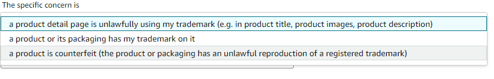
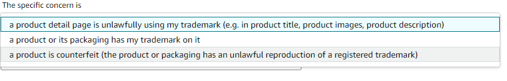
③ 브랜드명, 상표등록번호 입력, 빠른 절차 진행을 위하여 상표/저작권/특허에 관한 문서의 링크도 함께 첨부해야 함
④ 침해 상품 목록 작성 : 모조품에 대한 정보 입력시, ASIN(Amazon Standard Identification Number) 혹은 상품URL 기재할 수 있음. 50개까지 입력할 수 있으며, 같은 상품이라도 사이즈/색상 별로 ASIN이 다르기 때문에 기재한 상품과 ASIN이 일치하는지 확인해야 함. IP 침해 리포트를 제출할 때 해당 물품의 모든 판매자를 신고할 것인지 또는 특정 판매자를 신고할 것인지 선택할 수 있음
⑤ 개인정보 입력 : 침해자(판매자)와 연락할 수 있는 연락처 입력

⑥ 절차는 일반적으로 1~3영업일이 소요되며, 그 이후에도 아마존에서 확인 이메일을 받지 못한 경우 리포트를 재제출하는 것이 좋음
*출처 : KOTRA, 아마존
4. 아마존이 시행하는 브랜드 보호 프로그램
아마존 브랜드 레지스트리(Brand Registry)는 상표권을 보유한 셀러가 참여할 수 있는 아마존의 특별한 프로그램으로, 이 브랜드 레지스트리에 등록하면 많은 혜택이 주어짐
혜택 중에 하나로, 브랜드 레지스트리에 등록한 셀러에게 아마존은 더 강력한 지식재산권 보호 제도를 제공하며, 지식재산권 침해 발생 시 ‘Report a Violation(RAV)’ 기능을 통해 위반 신고가 가능함
브랜드 레지스트리에 등록하면 상표나 특허 등을 침해한 타 리스팅을 더 쉽게 검색할 수 있고 신고 역시 더 간단하며 여러모로 장점이 많음
따라서 본인 브랜드에 대해 상표권을 보유한 셀러라면 반드시 고려해볼 만한 프로그램임
*출처 : KOTRA
제6절 타오바오
1. 현황
타오바오는 중국 최대 전자 상거래업체인 알리바바그룹이 2003년 설립한 아시아 온라인 쇼핑몰으로, 타오바오 설립 초기에는 단순 개인간 거래(C2C) 연계 네트워크였으나 점차 B2C, 단체구매, 유통채널, 도매 등 여러 모델을 운용하는 종합 소매상권으로 변화함
- 타오바오는 모든 중국 전자상거래의 최초 출입구이자 검색창구로 이용되는 플랫폼으로,“타오바오(淘宝)에서 상품 검색 후 해당 상품의 구매후기를 기반으로 구매 결정!” 은 중국 온라인쇼핑의 규칙이라 할 정도로 소비자의 신뢰가 크며 영향력도 절대적임
- 별도 연회비나 거래 수수료 없이 상품을 판매하고 싶은 개인판매자라면 누구나 입점이 가능하기 때문에 중소기업과 개인의 입점이 활발하며, 시간과 비용 부담이 큰 티몰과 같은 B2C 마켓 입점 전 중국 소비자들의 반응을 분석할 수 있는 기회로 작용함
- 다만 모조품이 범람하고 있다는 단점이 있어서 사전에 상표권, 지재권 침해에 대한 철저한 대비가 필요함
- 타오바오의 특징 중 하나가 판매자와 실시간으로 소통하는 메신저 시스템 ‘아리왕왕(阿里旺旺)’이며, 판매자 버전은 치엔니우(천우)로 24시간 판매자 입장에서는 실시간으로 문의에 답변해야 함
- 타오바오의 입점 과정은 중국 통장 개설→알리페이 가입 및 개설→타오타오 상점 신청→서류심사→상점 개설→상품등록 순으로 이뤄지며, 회원가입부터 상점개설 신청, 심사 등은 보통 4~5일이 소요됨
싱가포르에서는 라자다, 쇼피에 뒤이어 타오바오와 같은 해외 거대 온라인 쇼핑몰도 인기를 얻고 있으며, 싱가포르 타오바오 사이트는 다음과 같음 : www.sgshop.com
*출처 : KOTRA, 한국농수산식품유통공사, CNC New
2. IP 정책
알리바바 그룹은 지식재산권보호(IPP) 포털(Intellectual Property Protection portal)을 구축하여 권리자에게 타오바오, 티몰, 1688, 알리익스프레스, 알리 인터내셔널을 포괄하는 지식재산권 보호 서비스를 제공하고 있음
브랜드 및 IPR 소유자는 IPR을 침해하는 사용자 및 제품, 제품 설명에 대한 게시 중단 요청을 할 수 있음
- IPP 포털 링크 :
https://ipp.alibabagroup.com/?spm=a2o42.13061802.4935094410.14.38e34a9cWDe4F3
IPP에서는 다음과 같은 IPR 침해에 대한 요청을 받아들임
- 상표권 침해 : 동일하거나 혼동을 일으킬 정도로 유사한 상표의 오용, 위조, 상표의 사용 등
- 저작권 침해 : 책, 음악, 비디오, 소프트웨어, 비디오 게임, 텔레비전 프로그램, 그림 및 사진의 사본을 포함하여 제3자의 저작권이 있는 사진의 무단 사용 및 무단 사본 제공
- 발명 및 디자인 특허 침해
- 판매용으로 제공되는 상품에 침해 표장을 고의로 가리거나 흐리게 하는 등의 기만행위
게시 중단 요청이 받아들여지면 알리바바 그룹의 정책에 따라 IPR 침해 관련 제품이 플랫폼에서 제거됨
다만 IPP에서는 유통 계약의 위반 문제(Distribution Agreements), 제품의 상표와 제품 상세페이지에서 설명하고 있는 상표와의 호환성에 관한 문제(Compatibility), IP침해를 신고한 국가 외 다른 국가에 지식재산권이 등록되어 있는 경우의 문제(Jurisdiction), 명시적으로 법률에 금지된 경우 외에 병행수입의 문제(Parallel import)는 처리하지 않음
알리바바에서 제공하는 상기 IPP의 빠르고 편리한 지식재산권 분쟁해결 방안이 필요하지 않을 경우, 권리자는 게시 중단 요청한 후, 권한 있는 기관에 신고하거나 사법기관에 소를 제기하는 방식으로 지식재산권 분쟁 해결을 시도할 수 있음
- 이 경우 권리자는 이메일(ipr@alibaba-inc.com)로 신고 통지 및 침해가 증명할 수 있는 증거를 첨부하여 게시 중단을 요청할 수 있으며, 플랫폼은 관련 법적 절차에 따라 요청을 처리함
*출처 : KOTRA, 특허청, 알리바바그룹
3. IP 침해시 구제 방법
IPP 플랫폼을 통해 IPR 침해 통지를 제출하기 위해서는 우선 IPP 플랫폼의 계정을 생성해야 함
- IPP 플랫폼 방문하여 오른쪽 상단 모서리에 있는 ‘등록(Register)’버튼 클릭
- 해당하는 위치(Location), 신원(Identity), 등록자 카테고리(Registrant category)를 선택하고 유효한 이메일 주소를 입력한 뒤 약관에 동의하고 계정을 생성함
IPR 플랫폼에 IPR 업로드하기
- 계정 생성하여 로그인 한 뒤, IPP플랫폼 홈페이지 좌측 상단 ‘마이 페이지’를클릭한 뒤 ‘My IPR’탭 아래에 있는 ‘IPR 제출(IPR Submission)’을 클릭함
- IPR 유형으로는 상표, 저작권, 특허, 기타를 선택할 수 있으며 본인확인증(신분증 또는 사업자등록증), 대리인 위임장, 지식재산권 등록증을 제출함

IPR 침해 리포팅하기
- 좌측 메뉴판에서 Complaint Submission(침해통지 제출)클릭 → Submit a Complaint(침해통지 제출하기)를 클릭한 뒤, 해당하는 플랫폼을 선택
침해 발생 국가 (Select a Site), IP권리 종류(IPR)을 선택한 뒤, 상황에 맞는 IPR 침해 이유 코드(Reason Code)를 선택해야 함
- 다음 박스(Infringing Listings)에 IP침해를 야기하고 있는 제품 및 서비스의 URL를 입력하며, 300개까지의 URL제출이 허용됨

침해 통지의 처리상황은 ‘침해통지 관리(Manage Complaint)’탭에서 Taobao를 클릭한 뒤 확인할 수 있음
IPR 권리자가 제출한 침해통지의 심사 절차는 아래와 같음

그 외에도 계정 등록없이 IP침해 신고를 할 수 있음
- https://ipp.alibabagroup.com/complaint/onlineForm/online.htm
- https://yida.alibaba-inc.com/o/LazadaTrustOnlineForm?spm=a2o4l.20244823.6285975820.3.31c32ecfWOUQxW#/
IPP 플랫폼 사용 가이드
- https://ipp.alibabagroup.com/faq/en.htm?spm=a2o4l.20244823.6285975820.2.31c32ecfc21A9n
- https://ipp.alibabagroup.com/infoContent.htm?skyWindowUrl=uc/sc/faq/cmpt-p-u-htsap/en
*출처 : KOTRA, 특허청, 알리바바그룹, ustels
PARTIX 지식재산권 체크리스트
제1절 R&D 체크리스트
1. 특허출원 결정
| 번호 | 세부 항목 | 체크 |
|---|---|---|
| 1 |
한 특허를 받을 가능성을 평가했는가?
→ 연구초기단계부터 규칙적으로 평가하는 것이 필요 |
|
| 2 |
특허 보호의 범위에 대해서 평가했는가?
→ 특허청구범위가 너무 좁으면 회피하기가 쉬움 → 특허청구범위가 너무 넓으면 자기특허가 무효가 될 수 있음 |
|
| 3 |
특허침해에 대해서 쉽게 알아낼 수 있는가?
→ 침해의 적발이 불가능할 경우 특허의 가치가 떨어짐 |
|
| 4 |
경쟁자가 활동하고 있는가?
→ 경쟁자가 동분야를 연구하고 있거나, 시장출시를 준비하고 있다면 가능한 빨리 출원하는 것이 필요 |
|
| 5 |
특허와 다른 지식재산권의 관계에 대해서 평가하였는가?
→ ex. 특허와 상표를 동시에 출원하는 것 검토 등 |
|
| 6 |
상업적 가능성과 수익이 ‘기술공개 및 특허비용 부담’을 정당화 하는가?
→ 특허보호비용(ex. 특허소송비용), 실질적 보호기간 검토 (기술수명과 관련) 검토 |
|
| 7 | 특허유지비용이 준비되어 있는가? (등록료, 연차료 등) | |
| 8 | 어떤 국가에서 출원할지를 결정하였는가? | |
| 9 |
경쟁자에게 미치는 영향에 대해서 평가하였는가?
→ 특허는 경쟁자에게 진입장벽으로 작용하기도 하지만 정보공개로 인해 경쟁자가 이를 활용할 가능성이 있음 |
|
| 10 |
상업화 의사가 없다면, 라이센싱 기회가 없는가?
→ 상업화 또는 라이센싱할 의향이 없을 경우 특허출원할 필요가 없음 |
|
| 11 |
발명이 공개되었는가? 상업적으로 사용되고 있는가?
→ 공개적으로 알려져서 혹은 사용되어서 특허받을 수 없는지 확인 필요 |
2. IP 출원 시 필요사항
| 권리 | 번호 | 세부 항목 | 체크 |
|---|---|---|---|
| 특허 | 1 |
출원 전에 발명이 공개된 경우, 공개 후 12개월 안에 출원하였는가?
→ 싱가포르의 공지 예외신청기간은 12개월임 |
|
| 2 |
선행특허조사를 수행하였는가?
→ 특허검색사이트 : https://www.ipos.gov.sg/ |
||
| 3 | PCT 출원을 통해 싱가포르 국내 단계 진입하는 경우 국제 출원서의 영문 번역문을 싱가포르 특허청에 제출하였는가? | ||
| 4 |
싱가포르의 다양한 조사보고서 및 심사청구 옵션을 고려하였는가?
→ 조사보고서 청구 → 조사보고서에 근거한 실질 심사 청구 → 결합된 조사 보고서 및 심사청구 → 지정된 외국 출원 또는 PCT 국제출원의 최종 조사 결과에 근거한 실질 심사 청구 의 옵션을 고려할 수 있음 |
||
| 5 |
선출원에 신규사항 추가를 할 경우, 선출원일로부터 12개월 이내에 우선권을 주장하여 신규출원을 하였는가?
→ 한국의 국내 우선권 주장 출원과 달리 선출원이 취하되지 않으며, 따라서 선출원과 후출원의 중복 특허 이슈가 발생하지 않도록 주의해야함 |
||
| 6 |
아세안 회원국에서 동일한 발명의 특허권을 확보할 경우 아세안 특허 심사 협력 프로그램(ASPEC)을 고려하였는가?
→ ASPEC 참여국 : 싱가포르, 말레이시아, 인도네시아, 베트남, 태국, 필리핀, 캄보디아, 브루나이, 라오스 → 싱가포르 특허청을 선발 심사 특허청으로 하여, 후발 심사 특허청이 선발 심사 특허청에서 발행된 심사보고서 또는 견해서를 심사 업무에 활용하여 빠른 심사 결과 받을 수 있음 |
||
| 상표 | 1 |
출원 전 상표 검색을 통해 동일∙유사한선행상표가 있는지 확인하였는가?
→ 상표검색사이트 : https://digitalhub.ipos.gov.sg/FAMN/eservice/IP4SG/MN_TmSimilarMarkSearch?OWASP_CSRFTOKEN=V8XH-6DJ4-TJ51-NMRP-DDPH-TTKN-W1RB-TGJL |
|
| 2 | 출원하려는 상표가 타인의 상표와 동일하거나 유사하더라도, 선권리자의 동의서를 받으면 등록이 가능함을 고려하였는가? | ||
| 3 | 한국에 상표출원을 하고 이를 기초로 싱가포르에 상표출원을 하는 경우, 국내 상표출원일로부터 6개월 이내에 우선권 주장을 하였는가? | ||
| 디자인 | 1 |
출원 전에 디자인이 공개된 경우, 공개 후 12개월 안에 출원하였는가?
→ 싱가포르 디자인의 공지 예외신청기간은 12개월임 |
|
| 2 | 출원시 디자인의 신규성을 설명하는 ‘신규성 진술서(Statement of Novelty)’을 제출하였는가? | ||
| 3 | 한국에 디자인출원을 하고 이를 기초로 싱가포르에 디자인출원을 하는 경우, 국내 디자인출원일로부터 6개월 이내에 우선권 주장을 하였는가? |
3. 기술유출 방지
| 번호 | 세부 항목 | 체크 |
|---|---|---|
| 1 |
영업 비밀 관리 체계를 구비하였는가?
→ 영업 비밀 유출 시 법적으로 보호받을 정도로 관리 체계 구축이 필요함 |
|
| 2 |
고용 정책 매뉴얼에 영업 비밀 관련 제재사항을 포함시켰는가?
→ ex. 기밀 정보의 무단 공개 금지 고용기간 창출된 발명 및 보호가 필요한 작업에 대한 권리의 양도 퇴사시 모든 회사의 정보 및 재산을 반환 |
|
| 3 | 회사 컴퓨터, 네트워크 및 클라우드 기반 저장소에 저장된 모든 영업비밀에 대해 엄격한 암호 보호 프로토콜이 설정하였는가? | |
| 4 | 권한을 가진 자만이 출입할 수 있는 통제구역이 있으며, 그 구역은 실제로 엄격하게 규제되고 있는가? | |
| 5 | 외부인(투자 파트너, 공급업체, 고객 등)에게 기밀 또는 독점정보를 공개하기 전에 비밀유지계약서(Non-disclosure agreement, NDA)에 서명하게 했는가? | |
| 6 |
비밀유지계약서(NDA)에 아래의 내용이 포함되어 있는가?
→ 비밀정보의 범위/정보 사용 용도/비밀유지 의무 내용/비밀정보 관련 권리 귀속/손해배상책임 |
|
| 7 | (현지 조립생산 수출) 현지 제조 생산 업체에 기술 제공을 할 경우, 영업 비밀 관련 사항에 대한 계약사항을 정확히 다루고 있는가? | |
| 8 | (현지 조립생산 수출) 현지 생산 기업은 제조 설비나 금형, 도면, 원재료의 속에 포함되어 있는 것 등의 제조 노하우의 가치를 확실히 인식하고 있는가? | |
| 9 | (현지인 관리) 현지인과 내부 직원들을 대상으로 영업비밀에 대한 정기적인 교육이 이루어지고 있는가? | |
| 10 | (현지인 관리) 영업비밀을 외부에 유출할 경우, 현지인과 내부 직원들은 어떤 처벌을 받을 수 있는지 알고 있는가? |
4. 기술계약
| 번호 | 세부 항목 | 체크 |
|---|---|---|
| 1 | (이전기술 범위 확정) 기술이전 대상기술을 명확화하고 있는가? | |
| 2 | (기술제공방식 특정) 실시권의 종류, 라이선싱의 범위 및 유효기간을 명확히 하였는가? | |
| 3 |
(기술보증 범위)
실현 가능한 범위 내에서 합리적 보증조항을 규정하였는가?
→ ex. 특허유효성 보증, 제3자 권리 비침해보증, 등록보증 등은 금지 또는 지양되어야함 |
|
| 4 |
(기술제공 대가의 산정 및 지급)
기술료 산정기준과 지불방법에 대해 규정하고 있는가?
→ ex. 선급기술료, 정액기술료, 경상기술료 |
|
| 5 | (개량기술) 기술공급자의 개량기술과 기술도입자의 개량기술에 대한 귀속 처리방법을 정하였는가? | |
| 6 | (비밀유지의무 부과) 계약 실시 중 및 계약만료 이후 기밀유지에 대한 사항을 규정하고 있는가? | |
| 7 | (분쟁해결조항) 분쟁해결 방법을 특정하고, 기술제공자와 기술도입자의 의무를 나누어 규정하고 있는가? |
제2절 수출 체크리스트
1. 전시·박람회 분쟁대응
| 번호 | 세부 항목 | 체크 |
|---|---|---|
| 1 |
· 해외 전시회 참가 전 지식재산권의 사전 확보가 이루어졌는가?
→ 침해품에 대한 권리행사를 위해서 전시국 개최국에 지재권 등록이 되어 있어야함 |
|
| 2 |
· 전시회 참가 예정 국가 및 경쟁기업의 지식재산권 현황을 조사하였는가?
→ 전시회 참가 이전에, 자사 전시품이 타사의 지재권을 침해하였는지 여부를 확인해야함 (침해가능성이 높은 경우, 전시회 참가여부를 재고할 수 있음) → 자사의 권리침해 가능성이 있는 제품에 경고장 발송, 세관 통관 저지할 수 있음 |
|
| 3 |
· 지재권 침해 가능성이 있는 전시 물품 통관 시, 세관에 의한 지재권 침해 물품 검수가 될 수 있도록 조치를 취하였는가?
→ 세관 당국의 권한으로 지재권 침해혐의 품목에 대한 운송중단, 검사, 샘플수거, 모방제품 파기가 가능할 수 있음 |
|
| 4 |
· 해외 전시회 참가시 아래와 같은 서류를 준비하였는가?
→ 지식재산권 증명 서류 → 출품기업 및 담당직원의 자격 및 신원 확인 서류 → 타인의 침해 또는 비침해 주장에 대한 반작 자료 → 위임장 및 대리인 신분증명서 |
|
| 5 |
· 전시회 기간 중 지재권 침해로 인한 경고장 수령 시, 변호사(변리사) 선임 등을 통한 침해 사안을 확인하였는가?
→ 경고장 수령업체는 주어진 회신 기한 이내에 변호사 등을 선임하여 이에 답변을 해야 하며, 사실관계 확인을 위해 기한 연장을 요청해볼 수 있음 → IP-DESK가 설치된 지역에서는 IP-DESK에 도움을 요청할 수 있음 (바로가기 : https://www.kotra.or.kr/kp/subList/20000005984/subhome/supBiz/selectBizMntList.do?unitBizCd=DD0201) |
|
| 6 |
· 경고장 및 종료통지 선언문에 적힌 내용은 철저히 감수하였는가?
→ 지재권 소유자에게 유리한 진술이 기재되는 경우가 보편적이므로, 사실관계를 확인하여 사실이 아니거나 우리업체 측에 불리한 내용은 반드시 수정을 해야함 (양측 대리인간 협의를 통해 해당 내용이 수정 되어야 하며, 그 전에 상대방 대리인이 발송한 경고장에 절대로 서명을 해선 안됨) |
|
| 7 |
· 전시회 참가 후 타인의 지재권 침해 혹은 정보 유출가능성에 대비하였는가?
→ 참가기업은 부스 내방객의 신원을 확인해야하며, 팸플릿 등 홍보자료의 무분별한 배포 지양할 필요가 있음 |
|
| 8 |
· 전시회 출품 후 지재권 출원시, 신규성 상실에 대한 대비를 하였는가?
→ 전시회 종료 후 신규성 상실 예외 주장 출원을 통하여 신속한 권리 확보가 필요함 → 국가별 공지형태 및 공지예외 적용 기간을 체크할 것 (ex. 중국은 ‘중국정부가 주관한 국제박람회’로 제한되어 있음) |
2. 전자상거래 플랫폼
| 번호 | 세부 항목 | 체크 |
|---|---|---|
| 1 | 판매하는 제품이 타인 및 타사의 지식재산권을 침해하는지 검토하였는가? | |
| 2 | 판매자가 직접 촬영하거나 소유하고 있지 않은 사진을 판매 페이지에 게시할 때 저작권 침해 가능성이 있는지 여부를 검토하였는가? | |
| 3 | 브랜드 레지스트리(아마존), Vero(이베이) 등 각 플랫폼이 제공하는 지재권 보호 프로그램을 활용하였는가? | |
| 4 |
전자상거래 플랫폼에서 지식재산 침해 피해를 당할 경우 해당 플랫폼 등록(가입)을 진행하였는가?
→ 특히 중국의 경우, 외국 기업이 중국 전자상거래 플랫폼에 사용자 등록하는 것이 쉽지 않으므로 중국 현지 대리인 선임하는 것을 권고함 |
|
| 5 |
위조상품 모니터링을 시작 전 다음과 같은 사항을 점검하였는가?
→ 보유중인 지재권 유효기간 확인 → 지재권 등록증의 권리자 확인 (제3자가 권리 보유중일 경우 단속 위해서는 권리 위임을 받아야함) → 정식판매자 리스트 확보 (오인신고를 방지하기 위하여 온라인 정식 판매자 리스트 확보 필요) → 가품 여부를 판단하기 위해서는 정품의 정보가 잘 정리되어야 함 |
|
| 6 | 신고시 정품과 침해상품의 차이가 잘 보이도록 대조자료를 작성 및 제출하였는가? | |
| 7 |
각 전자상거래 플랫폼의 지식재산권 침해 신고링크를 숙지하였는가?
→ (알리바바 그룹) https://ipp.alibabagroup.com → (아마존) https://www.amazon.com/report/infringement |
3. 세관
| 번호 | 세부 항목 | 체크 |
|---|---|---|
| 1 | 저작권 침해 또는 상표 침해 물품이 수입 또는 수출될 것으로 예상되는 경우, 저작권 또는 상표권자는 세관에 압류를 요청한다는 내용의 서면 통지를 하였는가? | |
| 2 | 1번의 통지에 저작권 또는 상표권 침해품이 수입될 것으로 예상되는 시간과 장소를 기재하였는가? | |
| 3 | 저작권 또는 상표권 침해에 대한 소송을 제기한 경우, 세관의 압류 통지에 명시된 날로부터 10영업일 이내에 소송 제기 사실을 세관에 통지하였는가? | |
| 4 |
싱가포르 세관이 직권 압류하였고 권리 소유자가 침해 소송을 제기하기 위해 압류된 상품의 유치가 필요한 경우, 세관에 유치 요청을 하였는가?
→ 세관으로부터 압류 통지받은 날로부터 48시간 이내에 서면으로 세관에 유치 요청을 해야함 |
|
| 5 | 권리 소유자는 복사물 또는 물품의 압류, 보관 및 처분과 관련하여 발생할 가능성이 있는 모든 책임 또는 합리적인 비용을 변상할 수 있는 충분한 담보를 제공하였는가? |
4. IP 분쟁
| 번호 | 세부 항목 | 체크 |
|---|---|---|
| 1 |
침해물품 조사를 하였는가?
→ 특허권자가 유통 경로, 전시회, 판매 시장 등을 조사하거나 인터넷 조사를 통하여 정보를 입수하여 특허침해품에 대한 조사가 필요함 |
|
| 2 | 전자상거래 플랫폼에서 권리침해행위가 발생하였을 경우, 플랫폼에 신고하였는가? | |
| 3 |
특허 침해여부를 확정하기 위하여 아래와 같은 사항을 조사하였는가?
→ 침해 특허의 심사 포대(File Wrapper) 청구항 해석 특허 유효성 확인 침해 제품의 기술 및 시장동향 |
|
| 4 |
침해행위를 확인하고 침해 사실을 입증하는 확실한 증거 확보 후 경고장 발송대상을 확정하였는가?
→ 경고장은 권리침해 행위가 비교적 경미하여 서면으로 제지할 가능성이 있는 경우, 가능한 빨리 침해를 제지하려고 하는 경우에 활용하는 것이 바람직함 → 증거를 확보하지 않은 상태에서 경고장을 발송할 경우 부정경쟁 행위로 인정될 가능성이 있어 주의해야함 |
|
| 5 |
경고장에 아래와 같은 사항을 기재하였는가?
→ 지재권번호/침해가 의심되는 제품/침해된 지재권 내용/지재권 침해의 법적 근거/협상의 여지/구체적인 요구사항/침해행위 중지 및 협상 없을 시 법적절차를 취한다는 내용/서면 응답 요청 시한 |
|
| 6 |
특허소송 제기 여부 판단시 아래와 같은 사항을 고려하였는가?
→ 특허 권리범위/상대방의 의도/소송비용/사업상 중요도를 고려하여 특허소송 제기 여부를 결정하는 것이 바람직함 |
|
| 7 | 특허침해 판단 결과 자사의 승산이 낮은 경우, 특허 전문가의 비침해의견서를 받아두어 실시로 인한 고의 침해를 부담하지 않도록 조치하였는가? |
PARTX 참고자료
제1절 코로나-19 관련
1. 코로나-19관련 개정사항
IPOS는 코로나-19으로 인해 발생한 봉쇄조치(락다운)으로 인한 차질을 감안해 실무규정을 도입하였으며, 이는 2020년 6월 5일에 발효됨
주요 내용은 다음과 같음
(a) 특별한 상황에서 계류중인 사건의 기한을 연장
- 2020년 4월 7일부터 6월 4일까지의 기간에 해당하는 IPOS의 규정된 마감일과 관련된 일들에 대한 기간 연장(단, 선언된 기간을 벗어난 마감일에는 적용되지 않으며, 이러한 마감일을 연장하기 위해 추가 규정의 제정이 필요함)
- 현재는 이러한 기한 연장 규정이 적용되지 않음
(b) 대체 출원 방법 및 문서 서비스
기본적으로 IP서비스는 다음과 같이 이루어지고 있음
- IP2SG를 통한 특허, 상표 및 등록 디자인 출원 (전자출원)
- 식물 품종 보호 및 지리적 표시 관련 업무는 수작업 또는 우편으로 이루어짐
즉, 락다운 상황에서도 IP2SG를 통한 전자출원이 가능하지만, IP2SG에 문제가 있을 경우에 이를 대체할 수 있는 수단은 아직 규정되지 않았음
*출처 : IPOS
제2절 기업실무자를 위한 참고 사례
싱가포르 상표 심사시 상표의 유사성을 판단하는 기준을 밝힌 심사 사례 (Monster Energy Company v Glamco Co., Ltd.)
|
- 다국적 에너지 드링크 제조업체인 ‘몬스터(상대방)’가 한국기업인 ‘글램코(출원인)’가 출원한 ‘SWEET MONSTER’(30류)상표 출원에 이의를 제기했으나 기각됨
- 싱가포르 심사관은 이의를 제기한 몬스터측이 제기한 세가지 주장에 모두 이유 없다고 판단함 - 첫째는 싱가포르 상표법 제8조 제2항(b)에 따라 출원 상표가 싱가포르에서 등록된 유사 제품류의 선행 상표와 유사하고, 오인혼동가능성을 유발할 수 있다고 이의를 제기함 (상대방이 등록한 ‘MONSTER’상표가 유사 가능성이 있는 상표로 제기됨) - 이에 대하여 심사관은 Staywell Hospitality Group Pty Ltd v Starwood Hotels & Resorts Worldwide, Inc 판례에서 확립된 3가지 측면의 테스트 방법을 통하여 ‘SWEET MONSTER’와 ‘MONSTER’의 유사성을 조사함 - 시각적으로 심사관은 두 상표가 유사하기 보다 차이점이 있다고 보았음. 출원인의 상표는 두 개의 단어로 구성되어 있고 두 단어 모두 눈에 잘 띄는 단어임 - 더욱이 출원 상표의 ‘SWEET’형용사가 출원상표가 상대방의 상표와 완전히 다른 인상을 주는 단일한 표장을 형성하며, ‘SWEET’가 ‘MONSTER’를 수식해주는 형용사라는 사실을 일반 소비자가 간과할 가능성이 낮음을 시사함 - 또한 두 상표는 ‘MONSTER’라는 음절을 공유하여 청각적으로 유사할지 모르나, 그럼에도 ‘SWEET’가 붙은 출원상표는 개념적으로 두 상표를 식별할 수 있게 만들며, 실제로 ‘SWEET MONSTER’의 전체적인 의미는 ‘MONSTER’의 의미와 완전히 상반되는 것으로 보임 - 이러한 요소들에 비추어 볼 때, 심사관은 두 상표가 유사하기 보다는 오히려 다르다고 보아 해당 이의 주장은 받아들이지 않음 - 두 번째로 몬스터측은 상표법 제8조(4)(b)에 따라 유명 상표의 소유자는 유사한 상표의 등록으로 인한 손해로부터 보호해야한다고 주장하였는데, 앞서 출원상표가 ‘MONSTER’와 유사하지 않다고 판명되었기 때문에 이 주장도 이유 없는 것으로 판결되었음 - 마지막으로 몬스터측은 상표법 제8조(7)(a)에 따라 선행 상표가 양도법에 의해 보호되고 있기 때문에 출원상표의 등록이 거부되어야 한다고 주장함 - 비록 몬스터측이 싱가포르에서 관련 영업권을 가지고 있다는 사실이 밝혀졌지만, 출원 상표의 의미는 선행 상표의 의미와 상반되기 때문에 출원인이 허위표시를 목적으로 상표를 출원하였다고 볼 수 없어 몬스터측의 주장은 기각됨. 출원인이 30류 상표 등록은 진행됨 |
*출처 : mirandah law.
*결정문 원본 : https://www.elitigation.sg/gd/s/2018_SGHC_238
*결정문 원본 : https://www.elitigation.sg/gd/s/2018_SGHC_238
제3절 현지대리인
1. 대리인 선정기준
| 구분 | 내용 |
|---|---|
| 업무 및 커뮤니케이션 능력 |
사건을 수임하게 될 변호사 또는 변리사의 지식재산권 사건의 실적 경험이 어느 정도인가?
복잡한 문의에도 최적의 대응조치를 안내해주는가? 보고를 적시에 하고 고객의 지시에 따라 일을 진행하는가? 고객과의 커뮤니케이션이 쉽게 이루어질 수 있는 언어 능력이 있는가? 당국과의 관계가 좋고, 업계 평가가 좋은가? |
| 서비스 품질 |
고객이 지적한 문제점을 적시에 개정하기 위해 노력을 하는가?
고객의 요구를 충족하기 위해 최선을 다해 노력 했는가? 오류가 있을 경우 그것을 인정하면서도 수정하는가? |
| 비용 |
비용청구는 합리적이고 투명한가?
비용을 최대한 억제시키려고 노력하고 있는가? 비용이 고객에게 부담이 될 것 같으면 미리 고지하고 다른 방안을 제안하는가? 미리 견적을 내고 비용 청구는 견적 금액을 초과하지 않는가? 견적을 초과하는 경우 그 이유를 명확하게 설명 했는가? |
2. 대리인 정보
영국의 지식재산권 분석 기관인 IP STARS이 집계한 2022년 지식재산권 분야 로펌 랭킹을 참고하여 특허 소송 분야 및 특허 출원 분야의 싱가포르 로펌에 대한 기초적인 자료를 제공함. 여기 수록된 로펌에 관한 정보는 대리인을 선임하는 데에 도움을 주기 위한 목적으로 수집된 것이며, 이하 기재되는 로펌을 추천하는 것은 아님
| [표 31] IP STARS 선정 특허 소송 분야 상위 로펌 | |||
|---|---|---|---|
| 등급 | 로펌 | 홈페이지 | |
| 1 | Allen & Gledhill | www.allenandgledhill.com | enquiries@allenandgledhill.com |
| Bird & Bird ATMD | www.twobirds.com/en/reach/asia-pacific/singapore | Homepage Contact | |
| Dentons Rodyk & Davidson | dentons.rodyk.com | Homepage Contact | |
| Drew & Napier | www.drewnapier.com | mail@drewnapier.com | |
| 2 | Amica Law | www.amicalaw.com | mail@amicalaw.com |
| Rajah & Tann | sg.rajahtannasia.com | info@rajahtannasia.com | |
| 3 | Baker McKenzie Wong & Leow | www.bakermckenzie.com/en/locations/asia-pacific/singapore | Homepage Contact |
| Lee & Lee | www.leenlee.com.sg | leenlee@leenlee.com.sg | |
| Mirandah Law | www.mirandahlaw.com | Homepage Contact | |
| Ravindran Associates | www.ipravi.com | mail@ipravi.com | |
| [표 31] IP STARS 선정 특허 출원 분야 상위 로펌 | |||
|---|---|---|---|
| 등급 | 로펌 | 홈페이지 | |
| 1 | Marks & Clerk | www.marks-clerk.com/ko/ | mail@marks-clerk.com.sg |
| Spruson & Ferguson | www.spruson.com/ | Homepage Contact | |
| Viering Jentschura & Partner | www.vjp.de/ko/ | vjp-sg@vjp.com.sg | |
| 2 | Allen & Gledhill | www.allenandgledhill.com | enquiries@allenandgledhill.com |
| Amica Law | www.amicalaw.com | mail@amicalaw.com | |
| Donaldson & Burkinshaw | www.donburk.asia | Homepage Contact | |
| Drew & Napier | www.drewnapier.com | Homepage Contact | |
| 3 | Baker McKenzie Wong & Leow | www.bakermckenzie.com/en/locations/asia-pacific/singapore | Homepage Contact |
| Bird & Bird ATMD | www.twobirds.com/en/reach/asia-pacific/singapore | Homepage Contact | |
| Davies Collison Cave | www.dcc.com | Homepage Contact | |
| Dentons Rodyk & Davidson | dentons.rodyk.com | Homepage Contact | |
| McLaughlin IP | www.mclaughlinip.com | mail@mclaughlinip.com | |
대한변리사회에서 운영하는 IP RIDGE에서 한국에 IP서비스를 제공하기 희망하는 해외대리인 정보를 제공하고 있음 (해외대리인이 직접 등록 신청을 하고 대한변리사회의 심사를 거친 해외대리인 정보 제공)
- IP RIDGE 바로가기제4절 기타
1. 지식재산권 검색 방법
가. 특허 검색
싱가포르에서 특허의 검색은 ePatent(http://www.epatents.gov.sg/PE/)에서 할 수 있음. ePatent에서는 단순 검색, 상세 검색 및 명세서 검색의 세 가지 모드를 제공
- 단순 검색은 이름(출원인, 소유자, 발명자), 번호(출원번호, 공개번호), 제목 및 요약, 접수 번호 등을 이용하여 검색을 할 수 있도록 되어 있음
- 상세 검색은 최대 5개까지의 분야를 선택할 수 있도록 되어 있음. 첫 번째 검색 분야는 출원일 또는 등록일 중 하나를 선택하는 것이며, 나머지 네 개의 분야는 출원번호, 공개번호, 영국 또는 유럽 출원 또는 공개번호, PCT 출원번호, PCT 공개번호, IPC 번호, 우선권 번호, 출원인/소유자/발명자의 국적 코드, 이름, 제목 및 요약 중 선택하도록 되어 있음
- 명세서 검색은 명세서 내에 나와 있는 단어를 검색하는 것이다. 명세서 검색에서는 우측에 나와 있는 탭에서 정해진 기간 동안에 명세서에 기재된 단어를 검색하게 되며, 이 때 불린 연산자(Boolean operator)를 사용할 수 있음
나. 상표 검색
eTrademarks(http://tmsearch.ipos.gov.sg/eTMSearch/eSearchOption.jsp#)에서 상표의 검색을 할 수 있음. 상표의 검색은 유사 상표 검색, 온라인 상표 검색 및 상품 및 서비스의 분류 검색의 세 가지 중 하나를 선택할 수 있도록 함
- 유사 상표 검색은 텍스트 검색과 한자 검색이 가능하며, 검색 분류와 상표 카테고리(전부, 색채 상표, 3차원상표, 음향상표 등)를 정할 수 있도록 되어 있음. 이 중 검색 분류는 반드시 기입해야 하며, 1-5 또는 1, 3, 4와 같이 기입할 수 있음. 또한, 상표만 보이도록 할 수 있고, 상표와 상세 사항을 같이 보이도록 할 수 있음
- 온라인 상표 검색은 다양한 검색 기준(등록 상표, 계류중 상표, 상표 상세 사항, 만료된 상표 등)을 이용하여 상표를 검색할 수 있도록 함. 온라인 상표 검색 화면에는 상단에 값을 선택하는 탭이 있음. 여기에서 검색 기준을 선택하면 그 기준에 맞추어 기입해야 하는 부가 정보는 공백으로 표시되고 기입할 수 없는 부가 정보는 회색으로 칠해지게 됨
- 상품 및 서비스 분류 검색에서는 류번호를 선택한 후 단어를 기입하도록 함. 이 검색은 기입한 단어가 포함된 류를 단순히 보여 주는 것으로 실제 상표를 검색하는 것은 아님
2. 기타
하기 사이트에서 지식재산권을 비롯한 세계법제정보를 검색할 수 있음